RA1. Selecciona les arquitectures i tecnologies de programació Web en entorn servidor
a) Diferencia models d'execució client/servidor b) Reconeix els avantatges de la generació dinàmica c) Identifica mecanismes d'execució en servidors Web d) Reconeix funcionalitats de servidors d'aplicacions e) Identifica llenguatges i tecnologies de servidor f) Verifica la integració de llenguatges de marques i servidor g) Avalua eines de programació en entorn servidor
RA2. Escriu sentències executables per un servidor Web
a) Reconeix mecanismes de generació de pàgines amb codi incrustat b) Identifica tecnologies associades c) Utilitza etiquetes per a incloure codi d) Reconeix la sintaxi del llenguatge de programació e) Escriu i comprova sentències simples f) Utilitza directives per a modificar el comportament g) Usa variables i operadors h) Identifica àmbits d'utilització de variables
RA3. Escriu blocs de sentències incrustats en llenguatges de marques
a) Usa mecanismes de decisió b) Empra bucles c) Utilitza arrays d) Crea i usa funcions e) Usa formularis web f) Recupera informació de formularis g) Afig comentaris al codi
RA4. Desenvolupa aplicacions Web incrustades en llenguatges de marques
a) Identifica mecanismes de manteniment d'informació del client b) Usa sessions c) Usa cookies d) Identifica mecanismes d'autenticació e) Integra mecanismes d'autenticació f) Fa adaptacions a aplicacions Web existents g) Usa eines per a programació, prova i depuració
RA5. Desenvolupa aplicacions Web separant presentació i lògica de negoci
a) Identifica avantatges de separar lògica i presentació b) Analitza tecnologies i mecanismes de separació c) Usa objectes i controls en servidor per a generar la interfície d) Usa formularis dinàmics e) Configura paràmetres de l'aplicació Web f) Escriu aplicacions amb manteniment d'estat i separació de lògica g) Aplica principis de POO h) Prova i documenta el codi
RA6. Desenvolupa aplicacions d'accés a magatzems de dades
a) Analitza tecnologies d'accés a dades b) Crea connexions amb bases de dades c) Recupera informació d) Publica informació en aplicacions Web e) Usa conjunts de dades f) Actualitza i elimina informació g) Usa transaccions h) Prova i documenta aplicacions
RA7. Desenvolupa serveis Web
a) Reconeix característiques i àmbit dels serveis Web b) Reconeix avantatges dels serveis Web c) Identifica tecnologies i protocols implicats d) Programa un servei Web e) Crea el document de descripció f) Verifica el funcionament g) Consumix serveis Web
RA8. Genera pàgines Web dinàmiques amb tecnologies del servidor
a) Identifica diferències d'execució client/servidor b) Reconeix avantatges d'unir les dues tecnologies c) Identifica llibreries i tecnologies relacionades d) Genera pàgines amb interacció (alertes, confirmacions) e) Verifica formularis f) Modifica dinàmicament contingut i estructura g) Aplica estes tecnologies a aplicacions Web
RA9. Desenvolupa aplicacions Web híbrides
a) Reconeix avantatges de reutilitzar codi i informació existent b) Identifica llibreries i tecnologies aplicables c) Crea aplicacions que recuperen i processen repositoris existents d) Crea repositoris específics a partir d'informació externa e) Usa llibreries de codi per a funcionalitats específiques f) Programa serveis/aplicacions basats en codi de tercers g) Prova, depura i documenta aplicacions
RA1. Selecciona les arquitectures i tecnologies de programació web en entorn servidor, analitzant-ne les capacitats i característiques pròpies.
a) S'han caracteritzat i diferenciat els models d'execució de codi en el servidor i en el client web.
b) S'han reconegut els avantatges que proporciona la generació dinàmica de pàgines web i les diferències amb la inclusió de sentències de guions a l'interior de les pàgines web.
c) S'han identificat els mecanismes d'execució de codi en els servidors web.
d) S'han reconegut les funcionalitats que aporten els servidors d'aplicacions i la seua integració amb els servidors web.
e) S'han identificat i caracteritzat els principals llenguatges i tecnologies relacionats amb la programació web en entorn servidor.
f) S'han verificat els mecanismes d'integració dels llenguatges de marques amb els llenguatges de programació en entorn servidor.
g) S'han reconegut i avaluat les eines de programació en entorn servidor.
qüestionari d'arrancada per a repassar
Què és Internet?
Què és la pila de protocols TCP/IP?
Quin protocol de nivell d'aplicació s'utilitza en Internet? Quina és la versió segura d'este protocol?
Què és una adreça IP? Què és un port IP?
Quantes versions del protocol IP coneixes?
Què és una URL? Mitjançant quin protocol/servei es relaciona un domini amb una adreça IP?
Què és una pàgina web? Què és una aplicació web? Què és un lloc web? Què és una arquitectura web?
Quina és la diferència entre una pàgina web estàtica i una de dinàmica? Les pàgines web que has desenvolupat durant el primer curs, eren estàtiques o dinàmiques?
Quina és la diferència entre la web 1.0 i la web 2.0?
Un navegador web, què és exactament? Quina és la seua funció? Quants en coneixes? Hi ha diferències entre ells?
Quina creus que és la principal diferència entre una aplicació web i una aplicació nativa? Has sentit parlar de les aplicacions híbrides? Coneixes exemples d'aplicacions que tinguen una versió web i la seua corresponent nativa (app mòbil)?
Coneixes els termes "back-end" i "front-end"? Quin correspon al desenvolupament servidor i quin al desenvolupament en client? Quines idees t'inspira la imatge de la portada d'este document?
Coneixes els termes "back-office" i "front-office"? Quina és la diferència?
Les arquitectures web descriuen la relació entre els distints elements que participen en l'intercanvi/processament d'informació a través d'Internet, així com les seues funcions.
La gran majoria de les arquitectures web en l'actualitat són de tipus client-servidor: una comunicació asimètrica en què un dels extrems oferix un o més serveis i l'altre en fa ús. Esta és l'arquitectura en què ens centrarem, encara que n'hi ha d'altres com la Punt a Punt (P2P - Peer to Peer).
El model client-servidor és un model que repartix tasques entre els proveïdors d'un recurs o servei, anomenats servidors, i els sol·licitants/consumidors del servei, anomenats clients .
El més freqüent és que els clients i els servidors es comuniquen a través d'una xarxa de comunicacions, però tots dos poden residir en la mateixa màquina (normalment en tasques de desenvolupament).
L'esquema de funcionament més bàsic del model client-servidor per a una arquitectura web està basat en un o diversos clients que sol·liciten una pàgina web a un servidor web:
Des del navegador web (o agent d'usuari, que pot ser també una app nativa o fins i tot un altre servidor) l'usuari sol·licita un servei web indicant-ne la URL.
El servidor rep la petició mitjançant el protocol d'aplicació HTTP, i la processa mitjançant la seua lògica de negoci .
Produïx una resposta HTTP a la petició, que envia al client. Esta resposta pot contindre fitxers de diferent naturalesa: HTML, CSS, XML, JSON, fitxers multimèdia, codi JavaScript, etc.
El navegador web rep la informació enviada pel servidor i la interpreta. En funció de la resposta enviada, es representa en el navegador la resposta a l'usuari (normalment en forma de pàgina web).
🖼️ Figura 1.1: Funcionament bàsic client-servidor
A continuació es mostren els avantatges i desavantatges al respecte:
Avantatges:
Centralització del control: els accessos, recursos i la integritat de les dades són controlats pel servidor. Esta centralització també facilita la tasca d'actualitzar dades o altres recursos.
Escalabilitat : es pot augmentar la capacitat de clients i servidors per separat. Qualsevol element pot ser augmentat (o millorat) en qualsevol moment, o es poden afegir nous nodes a la xarxa (clients i/o servidors), sempre que el sistema estiga dissenyat per a això.
Portabilitat : el fet que l'aplicació web s'execute en un navegador web fa que el programari s'independitze del sistema operatiu sobre el qual s'executa. D'esta manera, s'aprofita el desenvolupament per a les diferents plataformes.
Fàcil manteniment : com que les funcions i responsabilitats estan distribuïdes entre diversos ordinadors independents, és possible reemplaçar, reparar, actualitzar, o fins i tot traslladar un servidor, mentre que els seus clients no es veuran afectats per eixe canvi (o es veuran afectats mínimament). Esta independència dels canvis també es coneix com a encapsulació .
Hi ha tecnologies , prou desenvolupades, dissenyades per al model client-servidor que asseguren la seguretat en les transaccions, la usabilitat de la interfície, i la facilitat d'ús.
Desavantatges:
La congestió del trànsit ha sigut sempre un problema en esta arquitectura. Quan una gran quantitat de clients envien peticions simultànies al mateix servidor, es poden produir situacions de sobrecàrrega.
Quan un servidor està caigut, les peticions dels clients no poden ser satisfetes , ja que els recursos no estan distribuïts.
El programari i el maquinari d'un servidor són generalment molt determinants. Normalment es necessita programari i maquinari específic , depenent del tipus de servei web, sobretot en el costat del servidor. Això augmentarà el cost. Com a alternativa, es disposa de serveis web en el núvol, amb diversos tipus de costos dependents de l'arquitectura web.
NOTA :
Estos desavantatges es referixen al cas en què els recursos del servidor no estan replicats i/o distribuïts. Actualment hi ha tècniques d'escalat horitzontal i vertical que poden esmenar estos problemes.
Exemple amb DevTools
Peticions des del navegador
En este apartat intentarem indagar un poc més en què passa darrere de les cortines quan consultem una URL. Observarem, a través de les eines de desenvolupador del navegador web Chrome (igual ens pot servir Firefox o qualsevol altre), els 4 passos que es detallaven en l'apartat anterior.
A continuació obrim les eines de desenvolupador i anem a la pestanya Network (o Xarxa):
Obrim upv.es i accedim al menú hamburguesaDevTools → More tools → Developer tools (o directament F12)
🖼️ Figura 1.2: Personalitza > Més eines > Eines per a desenvolupadors
Pestanya Network abans de refrescar:
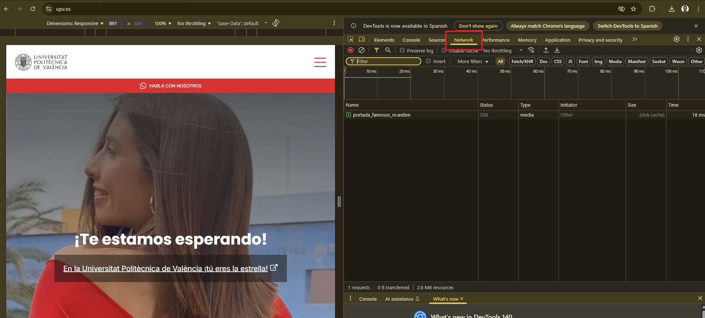
🖼️ Figura 1.3: Pestanya Network (abans de refrescar)
En este moment encara no hi ha dades, perquè no hem fet cap petició al servidor amb la finestra d'eines de desenvolupador activa. Per tant, refresquem la pàgina (equivalent a fer una petició al servidor que gestiona https://www.upv.es/) i passem al punt següent.
El servidor rep la petició mitjançant el protocol d'aplicació HTTP, i la processa mitjançant la seua lògica de negoci.
Realment no podem saber exactament què està passant en el servidor durant este pas, tret que hi tinguérem accés, amb els privilegis i eines correctes, però sí que podem esbrinar moltes dades mitjançant eines com:
whois: ens indica, entre altres dades, que la IP del servidor és 158.42.4.23 (registre DNS de tipus A).
builtwith: ens indica, entre altres coses, que la plataforma web disposa de dos servidors web (Apache i nginx).
ULL: Hi ha altres tipus de mètodes per a conéixer més dades sobre el servidor que podrien implicar pràctiques il·legals, en l'àmbit de la ciberseguretat.
Este pas es duria a terme en el que s'anomena Back-end.
Vegem el resultat en el pas següent.
El servidor produïx una resposta a la petició del client, que l'envia a través d'internet i que recupera el nostre navegador.
Ara, si consultem la pestanya Network després de refrescar la URL, podrem veure que han aparegut molts registres, el primer dels quals té com a nom www.upv.es:
Este registre correspon a la primera petició que hem fet al servidor de www.elche.es. Si fem clic sobre ell podrem veure tant les dades de la petició realitzada, com la resposta enviada pel servidor a través d'Internet, mitjançant HTTP. Es pot veure que el codi retornat pel servidor és 200 (en color verd, senyal que no hi ha hagut cap error), i ha respost un servidor web apache:
Detall de Headers: status code200 OK, serverApache
🖼️ Figura 1.4: Detalls de la web en la pestanya Headers
NOTA : el servidor pot enviar també la seua versió de programari, però això podria comportar atacs maliciosos, depenent de les vulnerabilitats de la dita > versió. És per això que és una bona pràctica configurar el servidor web perquè no envie eixa versió (entre altres aspectes).
Més avall, en la mateixa resposta, ens indica els paràmetres amb què s'ha fet la petició. Entre estos, podem veure el tipus de petició que hem fet (GET), la versió del nostre navegador web, l'idioma en què volem rebre la informació, entre altres detalls:
🖼️ Figura 1.5: Detalls de la web en la pestanya Headers
La petició ha tardat (en la prova actual) 6.31 segons a resoldre's, i ha desembocat en una transferència per part del servidor d'un total de 136 respostes i 57.9 kB transferits (entre altres mètriques):
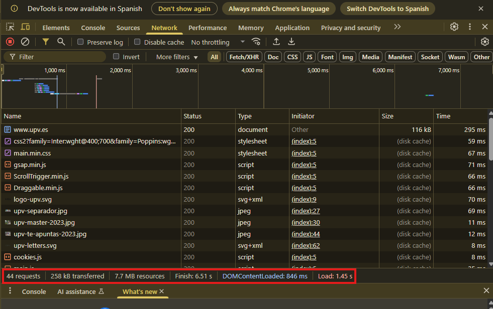
🖼️ Figura 1.6: Algunes de les mètriques que s'observen
La resta de registres que estan davall de l'inicial es corresponen amb tots els recursos (fitxers HTML, JavaScript, fitxers multimèdia, etc.) necessaris perquè el navegador represente la pàgina web. Per exemple, si fem clic sobre el segon registre gsap.min.js, i fem clic sobre la pestanya Preview del panell de la dreta, podrem veure el codi JavaScript que conté este fitxer transferit:
🖼️ Figura 1.7: Fitxer .js amb el seu codi des de Preview
Si fem clic en logo-upv.svg podrem veure que és el logotip de l'ajuntament, transferit des del servidor:
🖼️ Figura 1.8: Fitxer multimèdia .svg
Tots estos fitxers tarden un temps a transferir-se, cosa que es representa en forma de waterfall (cascada):
🖼️ Figura 1.9: Temps de transferència en cascada
La petició que més tarda a resoldre's és la primera, segons este gràfic.
¿Et recorda això algun tipus de programa de descàrregues tipus BitTorrent o semblants? Doncs sí, en este cas es podria pensar en el navegador web com si es tractara d'un gestor de descàrregues (salvant les diferències), que s'encarrega de recuperar tots els fitxers que necessita per a representar la pàgina web que se li ha sol·licitat.
El navegador web rep la informació enviada pel servidor i la interpreta. En funció de la resposta enviada, es representa en el navegador la resposta a l'usuari (normalment en forma de pàgina web).
El navegador web és un programari dissenyat per a interpretar tot el contingut enviat per un servidor web, i representar-lo en la pantalla perquè l'usuari final puga consultar la informació rebuda, interactuar amb la pàgina web, o també gestionar les operacions de l'usuari que requerisquen noves peticions al servidor web (en cas de pàgines web dinàmiques, o aplicacions web).
Per això, el navegador web prendrà tots els fitxers descarregats i conformarà la pàgina de benvinguda de www.puv.es, el que s'anomena Front-end :
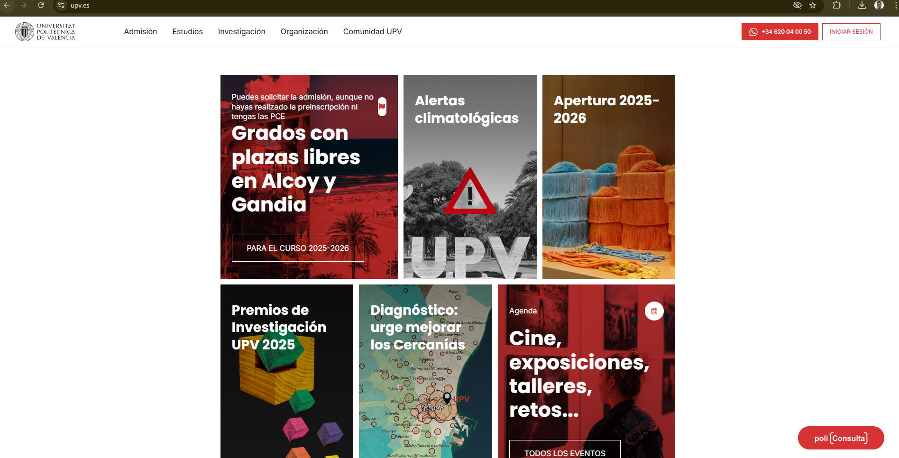
🖼️ Figura 1.10: Interpretació en el front‑end (pàgina renderitzada pel navegador)
¿Encara continues pensant que és correcte dir "navegar per Internet"?
El client fa la petició (request normalment mitjançant el protocol GET mitjançant el port 80/443) i el servidor respon (response).
Una pàgina web estàtica és un document o conjunt de documents (generalment: HTML, CSS, contingut multimèdia, codi JavaScript) en què no hi ha una actualització dinàmica del seu contingut en interactuar amb el sistema (servidor, ja siga remot o local) que proveïx el document/s. És a dir, la mateixa petició a la mateixa URL (Uniform Resource Locator), encara que la repetim en múltiples ocasions al llarg del temps, sempre retornarà la mateixa informació (tret que la modifique un desenvolupador en el costat servidor, manualment). Hi pot haver interacció amb la pàgina web estàtica (mitjançant codi JavaScript), en forma de missatges, esdeveniments, actualitzacions de la seua aparença...
En este cas, un navegador web és capaç de representar la pàgina web en una màquina local, sense necessitat de disposar d'un servidor web addicional.
Una pàgina web dinàmica pot contindre una part estàtica, i a més el contingut que es mostre dependrà del moment en què es faça la petició. Això és perquè el servidor conformarà eixe contingut depenent de les dades de què es dispose en eixe moment en un sistema de bases de dades. La comunicació entre el navegador web i el servidor serà més complexa, ja que, a més de consultar continguts, es podran fer potencialment operacions de creació, modificació i eliminació de dades.
Una aplicació web és una eina de programari, formada per pàgines web dinàmiques (encara que també pot contindre documents web estàtics), basada en tecnologies web que li donen un caràcter dinàmic (interactuen amb un sistema remot) fent ús de serveis web (basats en l'arquitectura TCP/IP), i que proporcionen a l'usuari un servei o conjunt de serveis. Seria el més semblant a una aplicació nativa o d'escriptori, però executada en un navegador web. El fet d'executar-se en un navegador web les independitza del sistema operatiu en què s'executen, però també presenten determinades limitacions a causa d'esta independència.
En este cas, un navegador web NO és capaç de representar la pàgina web en una màquina local sense un servidor web addicional i la resta de components que acompanyen esta arquitectura, com sí que passava amb una pàgina web estàtica.
Per a generar una pàgina dinàmica, on el contingut canvia, hui en dia tenim dues alternatives:
a) Utilitzar un llenguatge de servidor que genere el contingut, ja siga mitjançant l'accés a una BD o a serveis externs.
b) Utilitzar serveis REST de tercers invocats des de JS.
🖼️ Figura 1.11: Diferència gràfica entre pàgina estàtica i pàgina dinàmica
Quan parlem de programació en entorn client/servidor parlem també d'aplicacions web, formades per pàgines web dinàmiques, cosa que implica una arquitectura web més complexa que la necessària per a un lloc web constituït únicament per pàgines web estàtiques.
Segons diferents autors, els models presentats en este document cauen dins de la categoria d'arquitectures web. En el present document els considerarem models de programació, atenent la manera en què estan organitzats i distribuïts els diferents fitxers que contenen la lògica de negoci de l'aplicació web.
Dit això, actualment trobem dos models de programació principals, que són els que es detallen a continuació.
Model-View-Controller o Model-Vista-Controlador és un model d'arquitectura que separa les dades i la lògica de negoci respecte de la interfície d'usuari i el component encarregat de gestionar els esdeveniments i les comunicacions.
En separar els components en elements conceptuals permet reutilitzar el codi i millorar-ne l'organització i el manteniment. Els seus elements són:
Model: representa la informació i gestiona tots els accessos a esta, tant consultes com actualitzacions provinents, normalment, d'una base de dades. S'hi accedix via el controlador.
Vista: Presenta a l'usuari de manera visual el model i les dades preparades pel controlador. L'usuari interactua amb la vista i fa noves peticions al controlador.
Controlador: Respon a les accions de l'usuari, i fa peticions al model per a sol·licitar informació. Després de rebre la resposta del model, envia les dades a la vista.
🖼️ Figura 1.12: Model-Vista-Controlador (MVC)
És molt important destacar que, en este model, és el servidor el que porta el pes principal tant del processament de la informació com de la seua representació. El client web, a grans trets, es dedicarà a enviar les peticions al servidor, rebre la resposta i representar-la en la pantalla de l'usuari. La pàgina web representada (codi HTML, JavaScript, etc.) s'haurà predeterminat en el costat servidor.
IMPORTANT : amb este model, cada petició del client al servidor implicarà un refresc de la informació que es visualitza en la pantalla, encara que la seua aparença haja canviat poc d'una petició a la següent. Això implica que es tornen a descarregar totes les dades i fitxers que no es mantinguen en la memòria cau del navegador, de manera que els temps de resposta seran més grans que si no haguérem de descarregar de nou determinada informació. L'usuari final apreciarà que, durant un interval curt de temps, tots els elements de la pantalla desapareixen i després es conforma de nou la interfície d'usuari. En este cas, es diu que l'aplicació no és reactiva (es fa un refresc de tota la pantalla, encara que no es necessite).
A este model de programació MVC s'ajustarà el primer projecte que farem durant este curs, i la primera part del segon projecte.
Mitjançant este model s'han desenvolupat multitud de plataformes i aplicacions web, encara que la tendència és, cada vegada més, desenvolupar aplicacions basades en serveis REST.
En este tipus d'aplicacions, es delega la interacció amb l'usuari (si n'hi ha), en aplicacions que es descarreguen i/o instal·len en el costat client (ja siguen aplicacions d'escriptori, aplicacions mòbils, o aplicacions web). El servidor s'encarrega d'implementar la lògica de negoci, gestionar les dades, i enviar al client només la part de la informació sol·licitada, normalment en format JSON.
🖼️ Figura 1.13: Esquema de funcionament de serveis REST
S'anomena API el conjunt de serveis web a través dels quals els clients interactuen amb el servidor. Cadascun d'estos serveis web s'identifica per un endpoint (URL en el costat servidor), entre altres paràmetres. Estos conceptes es revisaran amb més deteniment en la segona fase del segon projecte que es desenvoluparà durant el curs.
És important notar que, a diferència del model MVC, cada vegada que es faça una petició al servidor no es refrescarà la pàgina web per complet. L'arquitectura web permetrà que només s'actualitze una part de la interfície d'usuari, de manera que l'usuari final no experimentarà la desaparició de la interfície transitòriament.
🖼️ Figura 1.14: Diferència entre el cicle de vida tradicional d'una pàgina i el cicle de vida de l'arquitectura SPA
Este comportament fa que una aplicació web s'assemble més a una aplicació mòbil ( la idea general és que no instal·lem una app mòbil cada vegada que fem una acció, sinó que només s'instal·la una vegada ).
Un exemple d'este tipus d'aplicacions són les SPA ( Single Page Application ). En una SPA només hi ha un fitxer HTML, molt simple, i un altre o altres fitxers JavaScript que s'encarreguen de canviar la interfície d'usuari amb cada petició HTTP al servidor. Per tant, l'aplicació es descarrega una sola vegada (es podria dir que s'instal·la en el navegador) i a partir d'ací només s'intercanvien fitxers JSON amb el servidor, que contenen les dades que ha de manejar el client. D'esta manera, s'alleugereix la part visual del back-end, i cada client (ja siga una aplicació web, mòbil, d'escriptori...) tindrà la responsabilitat de representar-la en la pantalla segons les seues pròpies característiques.
🖼️ Figura 1.15: Model de renderitzat SPA
Cal destacar també que els sistemes que implementen serveis REST no només alimenten aplicacions client, sinó que també poden interactuar amb altres sistemes. Este podrà ser el cas d'aplicacions híbrides, que requerixen serveis externs per a fer determinades tasques (enviament de correus electrònics, serveis d'IA, etc).
La grandària del projecte influïx directament en la complexitat de l'arquitectura, l'elecció d'eines i la planificació de recursos. Per a projectes xicotets, una solució simple i directa podria ser suficient, mentre que els projectes més grans requeriran una arquitectura més escalable, proves més rigoroses i una gestió més detallada del codi.
Quins llenguatges de programació conec? Paga la pena l'esforç d'aprendre'n un de nou?
Usar un llenguatge que ja coneixes pot accelerar el desenvolupament, ja que et sentiràs més còmode i eficient. No obstant això, si el projecte requerix característiques específiques que es manegen millor amb un altre llenguatge, o si aprendre'n un de nou t'obri millors oportunitats a llarg termini, pot pagar la pena l'esforç. Has de considerar el temps d'aprenentatge i com impacta en el calendari del projecte.
Usaré eines de codi obert o eines propietàries? Quin és el cost d'utilitzar solucions comercials?
Les eines de codi obert solen ser més econòmiques i flexibles, però poden requerir més suport i manteniment per part teua. Les solucions comercials poden oferir més suport i característiques avançades, però solen tindre un cost associat. Hauràs d'avaluar el pressupost disponible i les necessitats de suport i funcionalitat del projecte.
Programaré l'aplicació jo sol o formaré part d'un grup de programadors?
Si treballes sol, pots prendre decisions més flexibles i ràpides, adaptades a les teues preferències i habilitats. Si treballes en un equip, la col·laboració i la coherència en el codi es tornen més importants, per la qual cosa hauràs de considerar eines de control de versions, guies d'estil de codi, i plataformes de comunicació i gestió de projectes.
Compte amb algun servidor web o gestor de base de dades disponible o puc decidir lliurement utilitzar el que crega necessari?
Si ja tens servidors o gestors de bases de dades disponibles, hauràs d'assegurar-te que les tecnologies triades siguen compatibles amb ells. Si tens llibertat per a triar, podràs seleccionar les tecnologies que millor s'adapten a les necessitats del projecte en termes de rendiment, escalabilitat i facilitat d'ús.
Quin tipus de llicència aplicaré a l'aplicació que desenvolupe?
La llicència que tries afectarà com altres poden usar, modificar i distribuir el teu programari. Si planeges mantindre el control i limitar l'ús comercial, una llicència més restrictiva com GPL pot ser adequada. Si preferixes permetre un ús més lliure, una llicència com MIT o Apache podria ser millor. També has de considerar com les llicències de les eines i llibreries que utilitzes impacten en el teu projecte.
Cadascuna d'estes preguntes influirà en com abordes el desenvolupament de la teua aplicació web, i reflexionar-hi t'ajudarà a prendre decisions més informades i coherents amb els teus objectius.
Durant el primer curs del cicle haureu pogut desenvolupar diferents programes consistents en fitxers que al seu torn contenen línies de codi en un llenguatge específic (Java, en este cas). ¿Què es necessita per a poder transformar este text en instruccions específiques per al sistema operatiu on s'executa eixe codi? En este punt és on entra en joc el concepte d' entorn d'execució .
Els elements d'un entorn d'execució varien depenent del llenguatge de programació que s'estiga utilitzant. Generalment sempre és necessari un compilador, intèrpret o màquina virtual i un conjunt de llibreries pròpies del llenguatge. Però pot constar de més elements com un depurador o un bucle d'esdeveniments.
Dit això, quins són els mecanismes per a l'execució del codi en l'àmbit de les aplicacions web? Per a contestar això, primer hauríem de diferenciar els diferents llenguatges de programació que es poden utilitzar, i en quins àmbits (client o servidor). És per això que, en els subapartats següents, revisarem primer alguns dels llenguatges de programació més rellevants en l'àmbit web, i a continuació es detallarà com s'executen en el costat servidor (PHP, Python i JavaScript) i en el client (JavaScript).
És el llenguatge per excel·lència en el desenvolupament d'entorn client. Hi ha un desenvolupament continu de frameworks i llibreries al voltant d'este llenguatge, ja no només en la programació client, sinó en el costat servidor (com s'ha vist anteriorment). Els principals frameworks per al desenvolupament d'aplicacions reactives basats en JavaScript són: React.js, Vue.js, Angular i Svelte.
TypeScript
TypeScript és un llenguatge de programació lliure i de codi obert desenvolupat i mantingut per Microsoft. És un superconjunt de JavaScript, que essencialment afig tipus estàtics i objectes basats en classes. Els principals frameworks de programació client reactius (esmentats anteriorment) suporten el desenvolupament tant en JavaScript com en TypeScript.
Python
Encara que moltíssim menys popular, també hi ha la possibilitat d'executar Python en el navegador, com s'il·lustra amb el projecte PyScript.
PHP és un llenguatge de programació d'ús general que s'adaptaespecialment al desenvolupament web. La seua última versió és PHP8. Este llenguatge es pot utilitzar sense cap tipus de framework per a desenvolupar aplicacions web, encara que també hi ha frameworks molt populars com CodeIgniter, Laravel, Symfony...
Python
Python és un llenguatge d'alt nivell de programació interpretat la filosofia del qual és posar èmfasi en la llegibilitat del seu codi. Per a programació web hi ha diversos frameworks, encara que els més destacats són Django i Flask. Cal destacar que este llenguatge s'utilitza en molts més àmbits, entre ells el de la ciberseguretat i el de la intel·ligència artificial.
JavaScript
JavaScript és un llenguatge de programació interpretat, dialecte de l'estàndard ECMAScript. Encara que va sorgir per al desenvolupament en entorn client, s'ha estés tant que han sorgit nombrosos frameworks en entorn servidor, i Nodejs n'és el més popular.
Ruby
Ruby és un llenguatge de programació interpretat i orientat a objectes. Ruby on Rails és el framework de programació web basat en Ruby més conegut.
Java
Java és un llenguatge de programació ràpid, segur i fiable per a codificar-ho tot, des d'aplicacions mòbils i programari empresarial fins a aplicacions de macrodades i tecnologies del costat del servidor. Com a frameworks web destaquen Spring i Hibernate.
🖼️ Figura 1.16: Mapa mental de resum d'elements del llenguatge PHP
Durant les unitats següents estudiarem PHP en profunditat.
Per tant, veiem que hi ha una gran varietat de llenguatges de programació, tant en client com en servidor, i és un àmbit en contínua evolució.
¿Quin és el millor llenguatge de programació? Esta és l'eterna pregunta que sentiràs al llarg de la teua carrera com a programador/a, i no hi ha una resposta fàcil. Potser la resposta més adequada siga: cadascun d'ells és bo per a una cosa, i el millor és tindre una mentalitat oberta, no lligar-se a cap d'ells, i tindre les bases de la programació clares.
Esta reflexió és d'especial interés si desenvolupes els teus propis projectes: l'elecció d'un llenguatge (o framework) o un altre et pot portar a l'èxit o al fracàs, que un projecte et resulte rendible o no, optimització de costos o no... Per tant, mantín una ment oberta i pensa que els llenguatges i tecnologies tenen caràcter passatger, estan per a ser utilitzats i no per a casar-se amb ells.
La lògica de la nostra aplicació es distribuïx entre el client i el servidor, i cadascun d'ells complix la seua funció específica. Per tant, la plataforma d'execució en estos dos àmbits ha de ser diferent:
Costat servidor: la lògica programada s'executa en el sistema operatiu en què residix el codi.
Costat client: la lògica s'executa en el navegador web.
A més de l'àmbit en què s'executa el codi, també cal particularitzar el mecanisme d'execució al llenguatge específic utilitzat (com s'ha esmentat en la discussió inicial d'este apartat, sobre l' entorn d'execució ).
A continuació es detalla com es dispara l'execució del codi programat, ja siga en el costat servidor davant d'una petició HTTP que prové del client web, o en el mateix navegador web davant d'una acció de l'usuari.
Abans de veure estos exemples, cal esmentar que el propòsit d'un servidor web és rebre peticions HTTP i enviar la resposta a eixes peticions. És possible que estes respostes les proporcione el mateix servidor web, o que haja de recórrer a extensions (o mòduls) pròpies, o a servidors d'aplicacions externs que executen el codi i retornen la resposta al servidor web (que la utilitzarà per a enviar la resposta final al client). Tot això es detallarà exhaustivament en el mòdul de Desplegament d'Aplicacions Web .
En els exemples següents es pressuposa que l'entorn d'execució és el de producció (el que utilitzen els usuaris finals). En l'entorn de desenvolupament se solen emprar servidors web més lleugers que proporcionen els mateixos frameworks de desenvolupament.
Com s'ha esmentat anteriorment, este llenguatge, hui en dia, es pot executar tant en el costat client com en el costat servidor:
En client (navegador web): els diferents navegadors actuals incorporen un entorn d'execució mitjançant el qual és possible executar codi JavaScript; no hi ha comunicació directa amb el sistema operatiu. L'execució del codi sol respondre a les accions de l'usuari, i el navegador proporciona tots els recursos perquè es puga executar.
En servidor: per a poder executar codi JavaScript directament en un sistema operatiu, cal instal·lar prèviament l'entorn d'execució de Node.js. Este framework incorpora el seu propi servidor web per a ser utilitzat en un servidor de producció, encara que és possible utilitzar Apache o Nginx com a reverse proxy.
Durant el primer curs hem aprés sobre els llenguatges de marques (HTML, entre altres) i programació de propòsit general. Qüestions:
¿Hi ha alguna relació entre estos dos tipus de llenguatges?
¿Per a què voldríem relacionar-los en una aplicació web?
Una possible resposta seria: cada tipus té un objectiu diferent, i la combinació de tots dos ens proporciona la possibilitat de crear pàgines web dinàmiques .
Creació de blocs en pàgines dinàmiques
Prenguem com a exemple la pàgina web següent:
🖼️ Figura 1.17: Cadascun dels productes es visualitza en l'HTML segons el codi HTML següent
🖼️ Figura 1.18: Codi generat per cadascun dels productes
¿Creus que el programador web ha creat tants blocs com productes s'han recuperat? ¿Es pot saber a priori quants productes retornarà la cerca?
La resposta a les dues preguntes és: no. Per tant, la pàgina s'ha de comportar de manera dinàmica; en algun moment s'ha de programar la lògica següent: per cada producte que s'ha de mostrar crea un bloc amb estes característiques determinades, siga quin siga el nombre de productes que s'han de visualitzar en la pantalla.
És ací on entra la màgia del binomi "llenguatge de programació" + "llenguatge de marques", mitjançant el qual podrem afegir sentències d'un llenguatge de programació a codi HTML, aportant-li un caràcter dinàmic al document web.
Esta combinació es produirà en el costat servidor o en el costat client, depenent de si:
És una aplicació web basada en MVC (Model-Vista-Controlador): la combinació dels dos llenguatges es durà a terme en el costat servidor . El llenguatge de programació serà l'emprat en el costat servidor (PHP o Python), i el document web serà enviat al costat client des del servidor.
És una aplicació web basada en serveis REST : en este cas, la combinació dels dos llenguatges es durà a terme en el costat client . El llenguatge de programació serà l'emprat en el costat client, JavaScript en el nostre cas (també podria ser TypeScript). El client consumirà els serveis web del servidor i intercanviaran informació en format JSON. El client serà l'encarregat de modificar l'HTML de manera dinàmica.
Vegem un exemple amb una llista simple de productes, per al cas de MVC. En l'exemple de l'esquerra veiem que hem de crear tants blocs de productes com productes que cal representar; en l'exemple de la dreta, s'ha introduït un bucle mitjançant PHP que farà que, per cada producte de l'array de productes, es visualitze un bloc amb les seues dades corresponents:
🖼️ Figura 1.19: Exemple de codi estàtic i codi dinàmic
En este cas, veiem que s'ha introduït codi PHP amb un etiquetatge especial, que indica que eixe bloc del fitxer de marques conté codi PHP.
A continuació es mostra un altre exemple, en este cas d'integració d'un llenguatge de programació del costat client amb el llenguatge de marques HTML. Es tracta d'un component programat mitjançant el framework Vue.js:
🖼️ Figura 1.20: Exemple de codi incrustat .vue
🖼️ Figura 1.21: Un altre exemple de codi incrustat
En este cas també veiem que hi ha atributs amb símbols com : o @ en l'etiquetatge que apunten a variables del codi JavaScript.
Estos exemples només exemplifiquen la integració dels llenguatges de marques amb un llenguatge de programació, sense ànim d'aprofundir-hi més en este moment del curs.
Utilitza el fitxer .htaccess per a la seua configuració.
En l'actualitat, Ngingx (https://www.nginx.com) ha guanyat mercat respecte a Apache. Es tracta d'un producte més modern (2004) i que en determinats escenaris té un rendiment millor que Apache.
Programari que oferix serveis addicionals als d'un servidor web:
Clustering.
Balanceig de càrrega.
Tolerància a fallades.
Tomcat (http://tomcat.apache.org/) és el servidor d'aplicacions open source i multiplataforma de referència per a una arquitectura Java. Conté un contenidor web Java que interpreta Servlets i JSP.
Estudi de servidors web i servidors d'aplicacions
Tant els servidors web com els servidors d'aplicacions els estudiarem en profunditat en el mòdul de "Desplegament d'Aplicacions Web".
L'ecosistema d'eines en l'entorn web és ampli, ric i en constant evolució. És per això que fer-ne una llista exhaustiva resulta difícil, i pot quedar obsoleta en uns pocs mesos.
En este enllaç es proposa una mostra d'estes eines.
Algunes d'estes eines et resultaran familiars, altres les utilitzaràs en la teua futura vida professional o no (depenent del camp en què t'especialitzes), i moltes altres seran substituïdes o deixaran de ser usades.
Durant este curs podràs utilitzar l'IDE o editor de text que tries. Visual Studio Code (per a qualsevol llenguatge de programació) o PyCharm (per a Python) són l'opció recomanada.
Com a fonts de consulta de problemes específics, StackOverflow és una de les plataformes més utilitzades.
Finalment, com a base per a llenguatges de programació i de marques, o com a repàs del primer curs del cicle, et pots recolzar en els manuals de W3CSchools.
Igual que en les eines de programació, l'ecosistema de tecnologies al voltant de les aplicacions web també és molt variat, ric, i en constant evolució. Contínuament sorgixen noves versions de les tecnologies existents (que trenquen amb les anteriors), o tecnologies/frameworks/llibreries noves a què s'adherixen multitud de professionals. Tot això fa que la corba d'aprenentatge inicial en l'àmbit de les aplicacions web siga més pronunciada en un principi.
A continuació es presenten algunes d'estes tecnologies, agrupades per tipologia.
Atés que l'entorn d'execució en el costat client és el navegador web, s'ha dedicat un apartat exclusivament a caracteritzar este tipus de programari.
Els navegadors representen un programari complex, en constant evolució, i en què les diferents opcions del mercat estan avalades per motivacions diverses (darrere d'alguns hi ha una empresa multinacional, altres estan avalats per una comunitat de desenvolupadors, etc.), així com per diferents principis de desenvolupament.
En la taula següent es resumixen algunes de les característiques que diferencien uns navegadors d'altres:
Donada la gran quantitat de tecnologies i navegadors utilitzats en el costat client, hi ha la voluntat d'estandarditzar determinats aspectes que governen estes tecnologies, en forma d'especificacions emeses per organismes reconeguts com a oficials. Es tracta que els diferents desenvolupadors tinguen prou llibertat per a ser competitius, però sense que el panorama es disperse excessivament.
A continuació se citen diversos d'estos estàndards:
ECMAScript: aplicat a JavaScript, i desenvolupat per ECMA International (organització internacional d'estàndards basada en membres per a la comunicació i la informació)
En este article es discutix la necessitat dels estàndards web, com a visió general.
Per a poder treballar amb un entorn de desenvolupament local, l'hem de preparar amb les eines comentades.
Proposarem dues opcions; l'opció 1 serà la instal·lació del paquet XAMPP per a treballar directament en l'equip amfitrió (host); l'opció 2 serà crear un contenidor amb Docker.
En realitat podríem preparar l'entorn de diferents maneres (directament instal·lant en la màquina local amb el paquet XAMPP, mitjançant una màquina virtual amb VirtualBox...) però la utilització de Docker es veu justificada per la seua fàcil utilització, per l'aprofundiment en esta tecnologia que es veurà en altres mòduls d'este curs (Desplegament d'aplicacions web) i per la seua extensa utilització en la indústria (en tota mena d'entorns).
XAMPP vs Docker en Windows
Si treballaràs amb el teu propi ordinador, XAMPP és una solució més senzilla que Docker, sobretot si treballes amb Windows com a sistema operatiu.
XAMPP ( https://www.apachefriends.org/es/index.html) és una distribució composta pel programari necessari per a desenvolupar en entorn servidor. Es compon de les eines següents segons les seues sigles:
X per al sistema operatiu (d'ací que també es conega com a LAMP o WAMP).
A per a Apache.
M per a MySQL / MariaDB. També inclou phpMyAdmin per a l'administració de la base de dades des d'una interfície web.
P per a PHP.
P per a Perl.
Des de la mateixa pàgina es pot descarregar el fitxer executable per al sistema operatiu del nostre ordinador. Es recomana llegir les FAQ de cada sistema operatiu amb instruccions per a la seua posada en marxa.
Docker (https://www.docker.com) és un gestor de contenidors; considerant un contenidor com un mètode de virtualització del sistema operatiu.
L'ús de contenidors requerix menys recursos que una màquina virtual; per tant, el seu llançament i la seua detenció són més ràpids que els de les màquines virtuals.
Així doncs, Docker permet crear, provar i implementar aplicacions ràpidament, a partir d'una sèrie de plantilles que es coneixen com a imatges de Docker.
10.3) Executar Docker Desktop: Inicia Docker Desktop des del teu entorn gràfic o executant docker-desktop en el terminal.
10.4) Configurar Docker Desktop: Quan s'inicie Docker Desktop per primera vegada, pots configurar-lo per a usar WSL 2 o bé executar contenidors natius en Linux.
Si vols fer configuracions addicionals com la quantitat de recursos que Docker pot usar, pots fer-ho des de la interfície gràfica de Docker Desktop.
Amb estos passos, hauries de tindre Docker i Docker Desktop completament instal·lats i preparats per a usar en el teu sistema Ubuntu.<hr>
Si tot i així no es poguera llançar Docker Desktop en Ubuntu, podem instal·lar el contenidor Portainer (pots veure com funciona en el punt següent docker de gestió de dockers Portainer).
Per a una instal·lació en Windows, l'ideal és instal·lar l'aplicació Docker Desktop ( https://www.docker.com/products/docker-desktop ) en els nostres entorns de desenvolupament (la qual ja inclou el nucli de Docker i l'eina Docker Compose).
Esta instal·lació requerix un programari addicional, WSL2, que és un subsistema de Linux dins de Windows; ací podem consultar-ne els mètodes d'instal·lació. Per sort, amb la mateixa instal·lació de Docker Desktop, ve també la de WSL (només haurem de tindre en compte tindre activada la casella d'instal·lació).
🖼️ Figura 1.28: Casella per a l'activació de WSL --
Quan acabe la instal·lació, reinicia la teua màquina.
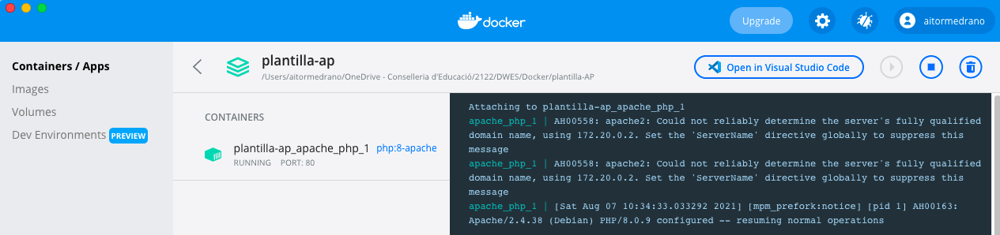
🖼️ Figura 1.29: Interfície del programa Docker Desktop --
Si el fitxerdocker-compose.yml inclou serveis amb ports exposats (com en l'exemple de Nginx), pots accedir-hi des del teu navegador usant localhost i el port definit, per exemple:
http://localhost:8080
Portainer: docker de gestió de dockers
Portainer és una manera còmoda de gestionar entorns de contenidors distribuïts.
El programari s'instal·la com un contenidor Docker i, per tant, s'executa pràcticament en qualsevol lloc. Mostrem la rutina d'instal·lació i aportem consells útils.
Docker es basa en l'ús d'imatges per a crear contenidors. Docker Compose simplifica el treball amb múltiples contenidors i, per això, per a facilitar l'arrancada, ens centrarem en Docker Compose utilitzant una plantilla que únicament contindrà com a serveis Apache/Nginx i PHP.
Per a això, crearem una carpeta amb el nom proyecto1, i dins d'esta el fitxer docker-compose.yaml amb:
proyecto1 amb distints servidors en docker-compose.yml
Estructura del projecte:
proyecto1/
│
├──docker-compose.yml
└──src/# Carpeta del proyecto
proyecto2/
│
├──docker-compose.yml
├──.docker
│├───nginx
││└──conf.d
││└──php.conf# Archivo configuración php en Nginx
└──src/# Carpeta del proyecto
Fitxer docker-compose.yml:
version:'3.8'services:nginx:image:nginx:1.19ports:-"8082:80"# Asegúrate de que el puerto está correctamente mapeadovolumes:-./src:/var/www/php-./.docker/nginx/conf.d:/etc/nginx/conf.d# Configuración personalizada de Nginxdepends_on:-phpnetworks:-webnetphp:image:php:8.0-fpmworking_dir:/var/www/phpvolumes:-./src:/var/www/phpnetworks:-webnetnetworks:webnet:driver:bridge
Assegura't que el teu fitxer de configuració de Nginx està correctament configurat. Ací tens un exemple bàsic que has de col·locar en./.docker/nginx/conf.d/default.conf:
server {listen 80;server_name localhost;root /var/www/php;index index.php index.html index.htm;location / {try_files$uri $uri/ /index.php?$args;}location ~\.php$ {include fastcgi_params;fastcgi_pass php:9000;# Asegúrate de que este nombre coincide con el nombre del servicio PHPfastcgi_index index.php;fastcgi_param SCRIPT_FILENAME $document_root$fastcgi_script_name;}}
Dins de la carpeta que continga eixe fitxer, hem de crear una carpeta src on col·locarem el nostre codi font.
Per a facilitar la posada en marxa, teniu les plantilles de:
Quan estiguem preparats, llançarem el servei mitjançant:
docker-composeup-d
Docker Compose primer buscarà la imatge definida en el sistema local, i si no pot trobar la imatge, la descarregarà des de Docker Hub. Veuràs un resultat com este:
🖼️ Figura 1.34: Descàrrega i instal·lació d'imatges de docker-compose.yml
Si volem veure el contingut dels fitxers de log del servei utilitzarem:
docker-composelogs-f
Per a copiar un fitxer des del nostre sistema a l'interior del contenidor:
dockercp./miFicheroidContenedor:/tmp
I a l'inrevés, si volem consultar un fitxer contingut dins d'un contenidor, el copiarem al nostre sistema:
dockercpidContenedor:/tmp/archivoAConsultar.txt./
Finalment, si volem accedir a un terminal interactiu dins del contenidor:
dockerexec-itnombreContenedorbash
Altres ordres que podem arribar a utilitzar són:
docker ps: Veure els contenidors que s'estan executant.
docker ps -a: Veure tots els contenidors.
docker start nombreContenedor: Arrancar un contenidor.
docker images: Veure les imatges que tenim descarregades.
docker stop $(docker ps -a -q): Detindre tots els contenidors en execució.
docker rm $(docker ps -a -q): Eliminar tots els contenidors detinguts.
Docker stack
Hi ha diverses opcions mitjançant Docker que oferixen solucions completes i empaquetades per a tot l'stack de desenvolupament. En sessions posteriors podrem utilitzar tant Devilbox (http://devilbox.org) com Laradock (https://laradock.io).
... però vull saber com funciona ...
En el mòdul de "Desplegament d'aplicacions web" estudiareu en profunditat, a més de Docker, Apache i altres serveis que ens serviran d'ajuda per al desenvolupament en entorn servidor.
En este curs emprarem Visual Studio Code (https://code.visualstudio.com) com a editor de codi font. Hi ha altres alternatives, i PhpStorm és l'IDE més conegut (però de pagament). Una altra possibilitat és utilitzar Eclipse, encara que és un entorn prou pesat.
VSCode és un editor de codi font que es complementa mitjançant extensions. Per a facilitar el treball al llarg del curs utilitzarem les extensions següents:
Php Intelephense: oferix característiques avançades per a desenvolupadors PHP, com autocompletat intel·ligent, anàlisi estàtica i suport per a PHPDoc. Ajuda a detectar errors i a escriure codi més eficient.
PHP Debug: per a la depuració de codi PHP. Permet connectar VSCode a un servidor de depuració PHP i proporciona eines per a inspeccionar variables, establir punts d'interrupció i fer un seguiment detallat del flux d'execució.
PHP Sniffer: assegura que el codi PHP complisca els estàndards de codificació establits. Pots personalitzar les regles segons les necessitats del teu projecte.
Laravel Intelephense (mamadou-diallo) - estén Inetelephense amb helpers de Laravel.
Laravel Extra Intelephense (amiralizadeh9480) - suggerix rutes, vistes, config, models.
Laravel Artisan (ryannaddy) - executa ordres artisan des de la paleta.
PHP IntelliSense: extensió fonamental, aporta molta velocitat d'escriptura gràcies a l'«intellisense». Millora la codificació en proporcionar suggeriments intel·ligents de codi i completar automàticament fragments de codi mentre escrius en PHP.
Docker
En la sessió següent començarem a utilitzar Intelephense però en esta sessió ens centrarem en Docker (més avant instal·larem noves extensions).
Per exemple, si obrim l'extensió de Docker, podreu visualitzar tant els contenidors com les imatges del vostre sistema. Des de cada contenidor, mitjançant clic dret, podem iniciar/detindre/reiniciar cada contenidor, així com veure'n el contingut o obrir un terminal dins d'este:
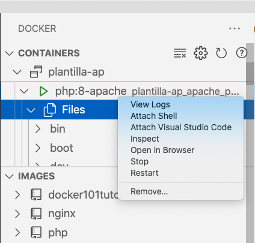
🖼️ Figura 1.35: Extensió Docker en Visual Studio Code
Ves a Fitxer → Preferències → Configurar fragments de codi (File → Preferences → User Snippets), selecciona l'opció html i afig el snippet en el fitxer html.json:
En esta pàgina treballes 10 criteris d'avaluació (RA1, RA2, RA4)
RA1.c S'han identificat els mecanismes d'execució de codi en els servidors web. (Git i contenidors amb PHP)
RA1.d S'han reconegut les funcionalitats que aporten els servidors d'aplicacions i la seu integració amb els servidors web. (Git i contenidors amb PHP)
RA4.f S'han utilitzat ferramentes i entorns per a facilitar la programació, prova i depuració del codi. (Git i contenidors amb PHP)
RA1.e S'han identificat i caracteritzat els principals llenguatges i tecnologies relacionats amb la programació web en entorn servidor. (Frameworks i mercat laboral)
RA1.g S'han reconegut i avaluat les ferramentes i frameworks de programació en entorn servidor. (Frameworks i mercat laboral)
RA2.b S'han identificat les principals tecnologies associades. (Configuració de PHP amb phpinfo)
RA2.f S'han utilitzat directives per a modificar el comportament predeterminat. (Configuració de PHP amb phpinfo)
RA1.f S'han verificat els mecanismes d'integració dels llenguatges de marques amb els llenguatges de programació en entorn servidor. (Maquetació amb plantilles PHP)
RA2.a S'han reconegut els mecanismes de generació de pàgines web a partir de llenguatges de marques amb codi embegut. (Maquetació amb plantilles PHP)
RA2.c S'han utilitzat etiquetes per a la inclusió de codi en el llenguatge de marques. (Maquetació amb plantilles PHP)
Si finalment has instal·lat mitjançant dockers els dos servidors web, instal·la també el docker Portainer i fes-hi una ullada (fent diverses captures).
Si ens fixem en el contingut del fitxer index.html proporcionat, no es diferencia en res (excepte en la utilització de les llibreries anteriors) d'una de les pàgines estàtiques programades durant el primer curs del cicle:
🖼️ Figura 1.37: Pàgina principal estàtica Exercici 107
El primer pas que farem és trossejar el codi HTML proporcionat. ¿Per què? Perquè hi ha determinades parts que sempre es repetixen en cadascuna de les pàgines: la capçalera i el peu de pàgina.
Així, crearem una carpeta templates (plantilles, en anglés) dins de src, per a emmagatzemar tots aquells fragments de codi HTML que podem reutilitzar d'una pàgina a una altra.
Dins de templates crearem dos fitxers: header.php i footer.php.
L'estructura, de moment, queda de la manera següent:
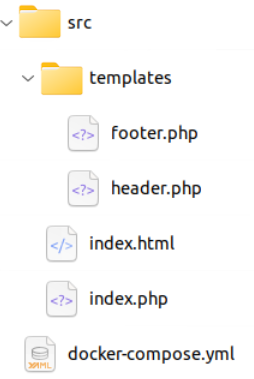
🖼️ Figura 1.38: Estructura de carpetes i fitxers de l'Exercici 107
En classe: analitzarem index.html i debatrem com segmentar el codi. A continuació reorganitzem el codi d'index.html entre footer.php i header.php.
Una vegada configurades les plantilles, queda molt poc codi HTML en index.html. Ara posarem la resta del codi HTML en index.php i buidarem per complet index.html (després d'això eliminem este fitxer).
El fitxer index.php quedaria de la manera següent:
<divclass="container"></div>
¿Com podem ara tornar a estructurar la pàgina d'inici amb les plantilles? Ho veiem a continuació.
Per a poder estructurar les pàgines de l'aplicació basant-nos en les plantilles, podem utilitzar la instrucció include. Modificant el fitxer index.php, quedaria de la manera següent:
Ara, amb el contenidor Docker iniciat, si refresquem la pàgina, tornarem a obtindre el mateix resultat que amb la pàgina web estàtica:
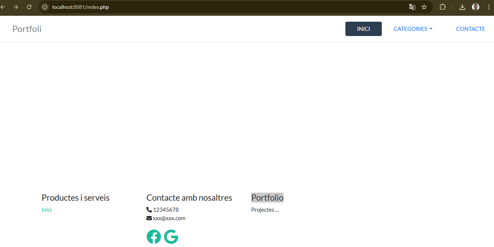
🖼️ Figura 1.39: Pàgina principal dinàmica Exercici 107
Sembla que no haja canviat res, però PHP ja està treballant per a nosaltres. Hem passat d'una pàgina web estàtica, recollida en un sol document, a una pàgina modular generada amb PHP. En un lloc web amb multitud de pàgines això pot ser un gran avantatge.
Ara, com a bons programadors, ens preguntem: ¿include ens servix per a tots els casos o hi ha altres possibilitats per a incloure fitxers en PHP? Ho veiem en l'apartat següent.
La idea d'utilitzar diferents fitxers és la reutilització del codi, cosa que comporta una major modularitat i un millor manteniment d'este. Un fitxer no ha de ser necessàriament una plantilla, com hem vist fins ara, sinó que també podria ser codi PHP que poguérem arribar a utilitzar en diferents parts de l'aplicació. També es poden donar diferents circumstàncies, i és per això que disposem de diverses opcions:
include(ruta/archivo);
include_once(ruta/archivo);
require(ruta/archivo);
require_once(ruta/archivo);
NOTA: Si el fitxer es troba a la mateixa altura (en el sistema de fitxers) que el fitxer en què s'inclou, aleshores només cal especificar el nom del fitxer que s'ha d'incloure; si els dos fitxers no es troben a la mateixa altura, aleshores és possible especificar la ruta (absoluta o relativa) del fitxer que s'ha d'incloure.
Les particularitats de cada instrucció són:
require: llança un error fatal si no troba el fitxer.
include: si no troba el fitxer, emet una advertència (warning).
Les funcions _once només es carreguen una vegada; si ja ha sigut inclòs prèviament, no ho torna a fer, i s'eviten bucles.
Exemple d'inclusió de codi
Per exemple, col·loquem les funcions següents en el fitxer biblioteca.php:
Introduirem un projecte de prova perquè es puga visualitzar en la pàgina d'inici; quedaria de la manera següent:
🖼️ Figura 1.40: Pàgina index.php de l'Exercici 107
Utilitzarem una imatge per a cada projecte. Per a poder fer això hem d'emmagatzemar les imatges en l'estructura de directoris; per això creem una carpeta static dins de src, i dins de static en crearem una altra anomenada images:
🖼️ Figura 1.41: Estructura de carpetes i fitxers de l'Exercici 107
NOTA: si has de descarregar imatges d'Internet, assegura't que la llicència d'eixes imatges t'ho permet. Utilitza, si cal, un lloc com pixabay.com per a descarregar imatges amb llicència lliure.
Descarrega't una imatge en la carpeta images, canvia-li el nom a projecte1.png (ací tens la imatge de l'exemple projecte1.png si vols utilitzar la mateixa) i completa el fitxer index.php amb el codi següent:
Descarreguem esta contacte.png en el directori corresponent (amb el nom businessman.png), creem contacto.php a l'altura d'index.php, i inserim el codi següent:
<?phpinclude("templates/header.php");?><div class="container"> <h2 class="mb-5">Contacte</h2> <div class="row"> <div class="col-md"> <img src="static/images/contacte.png" class="img-fluid rounded"> </div> <div class="col-md"> <h3>Nom i cognoms</h3> <p>Cicle Superior DAW.</p> <p>Apasionat del mon de la programació en general, i de les tecnologies web en particular.</p> <p>Si tens algun dubte contacta amb mí per favor.</p> <p>Telèfon: 123456789</p> </div> </div></div><?phpinclude("templates/footer.php");?>
El resultat, en consultar la URL localhost/contacto.php, hauria de ser el següent:
🖼️ Figura 1.43: Pàgina contacto.php de l'Exercici 107
En este moment ja tenim moltes coses preparades per a poder començar a afegir dinamisme a la nostra aplicació. En els apartats següents veurem les diferents estructures que ens ho permetran.
Llenguatge de propòsit general, encara que el seu fort és el desenvolupament web.
Sintaxi semblant a C / Java.
El codi s'executa en el servidor (en Apache mitjançant mod_php).
El client rep el resultat generat després d'interpretar el codi en el servidor.
El codi s'emmagatzema en fitxers amb extensió .php.
La versió actual (a data de setembre de 2026) és la 8.5.10. A més de nombroses funcionalitats noves que anirem veient durant el curs, té més de dues vegades millor rendiment que PHP5.
<!DOCTYPE html><html lang="es"><head> <meta charset="UTF-8"> <title>PHP fácil</title></head><body> <!-- Muestra una frase con HTML --> Hola mundo<br> <!-- Muestra una frase con PHP --><?phpecho"Es muy fácil programar en PHP.";?></body></html>
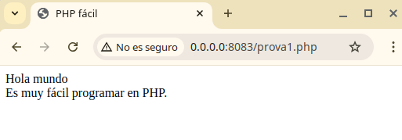
🖼️ Figura 2.1: Exemple de codi .php incrustat amb sentència ";"
Només etiquetes d'obertura
Si el nostre codi només contindrà codi PHP i res d'html, com per exemple, quan codifiquem classes o interfícies, només posarem l'etiqueta d'obertura, per a indicar així que és un fitxer de php pur.
Tenim tres possibilitats a l'hora de generar contingut en els nostres documents PHP:
echo expresión;
<?= expresión ?>
print (expresión);
Les que utilitzarem són:
echo quan ho fem dins d'un bloc d'instruccions i
<?= quan només mostrem el valor d'una variable dins d'un fragment HTML.
Exemple en php
<!DOCTYPE html><html lang="es"><head> <meta charset="UTF-8"> <meta name="viewport" content="width=device-width, initial-scale=1.0"> <title>Echo y print</title></head><body> <p><?phpecho"Este texto se mostrará en la página web.";?></p> <p><?="Este texto se mostrará en la página web."?></p><br> <p><?phpprint("Este texto se mostrará en la página web.");?></p></body></html>
🖼️ Figura 2.2: Exemple de contingut amb "echo" o "<?="
En PHP, les variables es poden declarar en qualsevol part de l'script.
L'abast d'una variable és la part de l'script on es pot fer referència a la variable o utilitzar-la.
PHP té tres abasts de variables diferents:
local
global
estàtic
Exemple d'abasts
Una variable declarada fora de una funció té un àmbit global i només s'hi pot accedir fora d'una funció:
<?php$x=5;// globalfunctionmiTest(){// usar x dentro de esta función generará un errorecho"<p>Variable x dentro de función es: $x</p>";}miTest();echo"<p>Variable x fuera de función es: $x</p>";?>
Una variable declarada dins de una funció té un àmbit local i només s'hi pot accedir dins d'eixa funció:
<?phpfunctionmiTest(){$x=5;// localecho"<p>Variable x dentro de función es: $x</p>";}miTest();// usar x fuera de la función generará un errorecho"<p>Variable x fuera de función es: $x</p>";?>
Els operadors condicionals permeten assignar un valor depenent d'una condició.
Operador
Nom
Exemple
Resultat
?:
Ternari
$x = expr1 ? expr2 : expr3
Assigna a $x el valor d'expr2 si expr1 és TRUE; en cas contrari, li assigna expr3.
??
Fusió nul·la
$x = expr1 ?? expr2
Assigna a $x el valor d'expr1 si este existix i no és NULL. Si expr1 no existix o és NULL, s'assigna expr2. (Disponible des de PHP 7)
Exemple d'operador ternari
<?php$hora=14;$formato=($hora>12)?24:12;echo"El formato es de $formato horas"?>
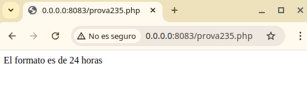
🖼️ Figura 2.7: Exemple d'operador ternari i cadena formatada
Operador Elvis
Si volem comprovar si una variable té valor i, si no, donar-li un valor determinat, usarem l'operador ?: (es coneix com l'operador Elvis - https://en.wikipedia.org/wiki/Elvis_operator) amb la sintaxi expresión ?: valorSiVacio.
<?php$nombre="";echo"Nombre: ".($nombre?:"desconocido").PHP_EOL;// se envía a través de un formulario:// $nombre = "";// $nombre = $_GET['nombre'] ?: "desconocido";?>
La condició simple es realitza mitjançant la instrucció if. Entre parèntesis es posa la condició que s'avalua a true o false. Si no es posen claus, en compte d'obrir un bloc, s'executarà només la instrucció següent.
Sempre claus
És recomanable posar claus sempre, encara que en el moment de codificar només hi haja una única instrucció. D'esta manera, queda preparat per a afegir més contingut en el futur sense provocar bugs.
<?php$hora=8;// La hora en formato de 24 horasif($hora===8){echo"Suena el despertador.";}echo"<br>";if($hora===8)echo"Suena el despertador.";?>
🖼️ Figura 2.9: Exemple de sentència condicional if
Les condicions compostes mitjançant if-else:
<?php$hora=17;// La hora en formato de 24 horasif($hora<=12){echo"Son las ".$hora." de la mañana";}else{echo"Son las ".($hora-12)." de la tarde";}?>
🖼️ Figura 2.10: Exemple de sentència condicional if-else
Les condicions niuades mitjançant if-else if-else:
<?php$hora=14;// La hora en formato de 24 horasif($hora===8){echo"Es la hora de desayunar.";}elseif($hora===14){echo"Es la hora de la comida.";}elseif($hora===21){echo"Es la hora de la cena.";}else{echo"Ahora no toca comer.";}?>
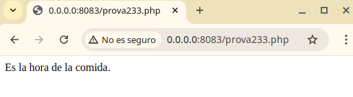
🖼️ Figura 2.11: Exemple de sentència condicional if-else-if-else
La sentència switch també permet treballar amb condicions múltiples:
<?php$hora=12;// La hora en formato de 24 horasswitch($hora){case9:echo"Es la hora de desayunar.";break;case14:echo"Es la hora de la comida.";break;case21:echo"Es la hora de la cena.";break;default:echo"Ahora no toca comer";}?>
🖼️ Figura 2.12: Exemple de sentència condicional switch
No oblides el break
Un error molt comú és oblidar la instrucció break després de cada cas. Si no el posem, executarà el cas següent automàticament.
La sentència match es va introduir en la versió 8.0 i és molt semblant a l'estructura de switch, però té algunes diferències importants:
match retorna un valor.
No requerix usar break al final de cada cas.
Utilitza comparacions estrictes (===), la qual cosa significa que tant el tipus com el valor han de coincidir.
<?php$estado='ok';$resultado=match($estado){'ok'=>'Todo está bien.','error'=>'Ha ocurrido un error.','pendiente'=>'Todavía está pendiente.',default=>'Estado desconocido.',// opción por defecto, similar a "default" en switch};echo$resultado;// Imprime: Todo está bien.?>
<?php$numero=10;$resultado=match(true){$numero<0=>'Número negativo',$numero===0=>'Es cero',$numero>0=>'Número positivo',};echo$resultado;// Imprime: Número positivo.?>
El bucle do-while sempre executarà el bloc de codi almenys una vegada, després verificarà la condició i repetirà el bucle mentre la condició especificada siga vertadera.
<?phpdo{$dado=rand(1,6);// rand() devuelve un valor aleatorioecho"Tirando el dado... ";echo"ha salido un ".$dado.".";echo"<br>";}while($dado!=5);echo"¡Bien! Saco una ficha de casa.";?>
🖼️ Figura 2.14: Exemple de sentència repetitiva do-while
PHP, de la mateixa manera que Java i C, permet trencar els bucles mitjançant la instrucció break. Al seu torn, continue permet botar a la iteració següent.
Si pots, evita break i continue
No és desitjable usar-los. És preferible l'ús de variables flag per a controlar l'eixida dels bucles.
<?php$salir=false;for($i=1;$i<=10&&!$salir;$i++){if($i===5){echo"Salgo cuando i=5";$salir=true;}}?>
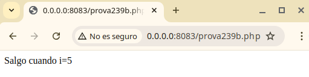
🖼️ Figura 2.17: Exemple d'ús de variable flag per a substituir break o continue
Per a emmagatzemar dades compostes, podem utilitzar tant arrays senzills com arrays associatius (semblants a un mapa). En realitat tots els arrays són mapes ordenats compostos de parells clau-valor.
De la mateixa manera que en Java, es definixen mitjançant claudàtors, són 0-index, i es pot assignar un valor a una posició determinada:
<?php// crear array: opción 1$frutas=array("naranja","pera","manzana");// crear array: opción 2$frutas2=["naranja","pera","manzana"];// crear array vacía: opción 3$frutas3=[];// asignar valores$frutas3[0]="naranja";$frutas3[1]="pera";$frutas3[]="manzana";// lo añade al final
Compte amb mesclar tipus
Com que el tipat és dinàmic, els nostres arrays poden contindre dades de diferents tipus.
No es recomana mesclar els tipus.
<?phpfunctionmiFuncion(){echo"Vamos al cole.";}$miArray=array("Alba",3,["manzanas","bananas"],miFuncion());$miArray[3];?>
Podem obtindre la grandària de l'array mitjançant la funció count(array). Per a recórrer l'array farem ús d'un bucle for:
<?php$tam=count($frutas);// tamaño del arrayfor($i=0;$i<count($frutas);$i++){echo"Elemento $i: $frutas[$i] <br />";}
🖼️ Figura 2.18: Exemple d'ús de la funció count() en un array per a recórrer tots els elements
Una altra manera de recórrer els arrays, fins i tot més elegant, és fer ús de foreach. La seua sintaxi és foreach (array as elemento):
<?php// mediante foreach no necesitamos saber el tamaño del arrayforeach($frutasas$elemento){echo"$elemento <br />";}
🖼️ Figura 2.19: Exemple de recorregut de tots els elements d'un array mitjançant la funció foreach()
Cada element és un parell clau-valor. En compte d'accedir per la posició, ho fem mitjançant una clau. Així doncs, per a cada clau s'emmagatzema un valor.
S'assigna de la manera següent dins dels claudàtors: clave => valor.
A l'hora de recórrer este tipus d'arrays, mitjançant foreach separem cada element en una parella clau => valor:
<?php$capitales=["Italia"=>"Roma","Francia"=>"Paris","Portugal"=>"Lisboa"];// 1) Acceder al elemento por la clave, no la posición$capitalFrancia=$capitales["Francia"];// 2) Añadir un elemento$capitales["Alemania"]="Berlín";// 3) Mostrar valor de una variableecho"La capital de Francia es $capitalFrancia <br />";// 4) Mostrar valor de un elemento del array por {}echo"La capital de Francia es {$capitales["Francia"]} <br />";// 5) Añadir con clave 0 ¡¡¡NO ASIGNAR VALORES SIN CLAVE!!!$capitales[]="Madrid";// 6) Recorrer array asociativo y mostrar valoresforeach($capitalesas$valor){echo"$valor <br />";}// 7) Recorrer array asociativo y mostrar clave y valorforeach($capitalesas$pais=>$ciudad){echo"$pais : $ciudad <br />";}
🖼️ Figura 2.20: Exemples d'usos d'arrays associatius
Consistix en un array d'arrays, ja siguen arrays seqüencials o associatius. Hi pot haver N dimensions.
<?php$persona["nombre"]="Bruce Wayne";$persona["telefonos"]=["966 123 456","636 636 636"];// array de arrays ordinarios$persona["profesion"]=["dia"=>"filántropo","noche"=>"caballero oscuro"];// array de arrays asociativosecho$persona['nombre']." por la noche trabaja de ".$persona['profesion']['noche'];
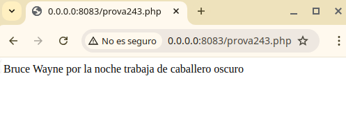
🖼️ Figura 2.21: Exemple d'ús d'array de dues dimensions
Combinant els arrays associatius en diverses dimensions podem emmagatzemar la informació com si fora una taula:
<?php$menu1=["Plato1"=>"Macarrones con queso","Plato2"=>"Pescado asado","Bebida"=>"Coca-Cola","Postre"=>"Helado de vainilla"];$menu2=["Plato1"=>"Sopa","Plato2"=>"Lomo con patatas","Bebida"=>"Agua","Postre"=>"Arroz con leche"];// Crear un array a partir de arrays asociativos$menus=[$menu1,$menu2];echo"Menú del día<br/>";$cont=0;foreach($menusas$menudeldia){echo"<br />Menú ".++$cont."<br />";foreach($menudeldiaas$platos=>$comida){echo"$platos: $comida <br/>";}}// Para acceder a un elemento concreto se anidan los corchetes$postre0=$menus[0]["Postre"];
🖼️ Figura 2.22: Exemple de la semblança dels arrays associatius amb les taules
Encara que puga paréixer una bona idea crear este tipus d'estructures, és millor utilitzar objectes conjuntament amb arrays (possiblement arrays d'altres objectes) per a crear estructures complexes que permeten modelar millor els problemes.
Si volem passar un paràmetre per referència, en la declaració de la funció indicarem els paràmetres mitjançant l'operador & per a indicar l'adreça de memòria de la variable.
<?phpfunctionduplicarPorValor($argumento){$argumento=$argumento*2;echo"Dentro de la función: $argumento.<br>";}functionduplicarPorReferencia(&$argumento){$argumento=$argumento*2;echo"Dentro de la función: $argumento.<br>";}$numero1=5;echo"Paso de parámetros por valor:<br/>";echo"Antes de llamar: $numero1.<br>";duplicarPorValor($numero1);echo"Después de llamar: $numero1.<br>";echo"<br>";$numero2=7;echo"Paso de parámetros por referencia:<br/>";echo"Antes de llamar: $numero2.<br>";duplicarPorReferencia($numero2);echo"Después de llamar: $numero2.<br>";?>
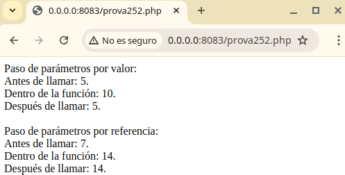
🖼️ Figura 2.24: Exemple d'ús de paràmetres per referència en funcions
Podem tindre funcions on en la declaració no indiquem la quantitat de dades d'entrada.
$cantidad = func_num_args(); → Obté la quantitat de paràmetres rebuts.
$arrayArgs = func_get_args(); → Obté un array amb els paràmetres.
$valor = func_get_arg(numArgumento); → Obté el paràmetre que ocupa la posició numArgumento.
Estes funcions no es poden passar com a paràmetre a una altra funció (com a funcions variable, que veurem més avant). Per a fer-ho, hem de guardar prèviament la funció en una variable.
Des de PHP 5.6, es pot utilitzar l'operador ... (variadics), el qual "disfressa" els paràmetres com un array. Este operador es col·loca davant d'un paràmetre en la definició de la funció, i este paràmetre es convertirà en un array que contindrà tots els arguments addicionals passats a la funció:
Des de PHP 8.0 podem passar els arguments amb el nom (a més de per posició, com hem fet fins ara). Els arguments amb nom es passen posant el nom com a prefix del paràmetre separat per dos punts: $resultado = funcion( arg1 : valor1, arg2 : valor2 );
Esta característica complementa els paràmetres opcionals i ens permet botar-ne el valor:
Des de PHP7, en les funcions, tant els paràmetres com el seu valor de retorn permeten la definició de tipus. Això es coneix com strict_types (tipificació estricta) i cal definir-ho en la primera línia de cada fitxer .php perquè el mateix intèrpret PHP comprove els tipus i llance errors si els tipus són incorrectes, mitjançant la sentència:
<?phpdeclare(strict_types=1);
Així doncs, definirem els tipus dels paràmetres i dels valors retornats mitjançant els tipus: int, float, string, bool, object i array.
Si una funció no retorna res, s'indica mitjançant el tipus void.
<?phpdeclare(strict_types=1);functionsuma(int$a,int$b):int{return$a+$b;}$num=33;echosuma(10,30)."<br />";echosuma(10,$num)."<br />";echosuma("10",30);// error por tipificación estricta, si no daría 40?>
🖼️ Figura 2.32: Exemple de funció tipada
Exemple 1
Què passa si enviem un número i una cadena sense utilitzar strict:
<?phpdeclare(strict_types=1);functionsumaNumeros(int$a,int$b){return$a+$b;}// como `strict` no está habilitado la cadena "2 tablas" se convierte en int(2)// y el resultado devolverá 5echosumaNumeros(3,"2 tablas");?>
Exemple 2
Si volem retornar un valor d'un tipus diferent del dels arguments, haurem d'assegurar-nos que retorna el tipus correcte (en este exemple fent un cast):
<?phpdeclare(strict_types=1);functionsumaNumeros(float$a,float$b):int{return(int)($a+$b);}// el resultado devolverá 5echosumaNumeros(3.3,2.5);?>
Les variables definides fora de les funcions tenen abast global: accessibles des de qualsevol funció.
Els paràmetres d'una funció i les variables declarades dins d'una funció (es coneixen com a variables locals) només són accessibles des de dins de la mateixa funció → abast de funció.
En cas de conflicte, tenen prioritat les variables locals. Per a evitar el conflicte, dins de la funció, podem declarar la variable com a global.
<?phpfunctionmiCiudad(){$ciudad="Elche";echo"Dentro de la función: $ciudad.<br>";}$ciudad="Alicante";echo"Antes de la función: $ciudad.<br>";miCiudad();echo"Después de la función: $ciudad.<br>"?>
🖼️ Figura 2.33: Exemple d'abast local de les variables
<?phpfunctionmiCiudad(){global$ciudad;$ciudad="Elche";echo"Dentro de la función: $ciudad.<br>";}$ciudad="Alicante";echo"Antes de llamar: $ciudad.<br>";miCiudad();echo"Después de llamar: $ciudad.<br>"?>
🖼️ Figura 2.34: Exemple d'abast global de les variables
No globals
Cal evitar l'ús de variables globals dins de les funcions. En el cas de necessitar-les, és millor passar-les com a paràmetre a les funcions.
Si necessites que un paràmetre o valor de retorn accepte null, pots usar l'operador ? davant del tipus. Això indica que el valor pot ser del tipus especificat o null.
Si una variable va seguida de parèntesis, PHP buscarà una funció amb el seu valor.
<?php$nombreFuncion='nombreDeLaFuncion';$nombreFuncion();// Llama a nombreDeLaFuncion()
<?phpfunctionsumar($a,$b){return$a+$b;}$funcion="sumar";echo$funcion(3,4);// invoca a la función suma?>
Ací, la variable $operacion emmagatzema el nom de la funció sumar, i en cridar-la amb els arguments (3, 4), realitza l'operació i retorna el resultat.
Funcions anònimes
PHP permet la definició i l'ús de funcions anònimes, és a dir, funcions que no tenen nom, i s'utilitzen principalment per a gestionar els callbacks. Este tipus de funcions s'utilitza molt en Javascript per a gestionar els esdeveniments i les promeses.
<?php$anonima=function(){echo"Hola"."<br/>";};$anonima();$anonimaConParametro=function($nombre){echo"Hola ".$nombre."<br/>";};$anonimaConParametro("Aitor");// Uso de variables externas a la función anónima --> `use`$mensaje="Hola";$miClosure=function()use($mensaje){echo$mensaje."<br/>";;};$miClosure();// Uso de parámetros$holaPHP=function($arg)use($mensaje){echo$mensaje." ".$arg;};$holaPHP("PHP");?>
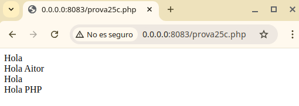
🖼️ Figura 2.35: Exemples d'ús de funció anònima en php
Des de PHP 7.4 s'han introduït les funcions fletxa (arrow functions) per a simplificar-ne la definició i l'ús.
Mitjançant l'ús de la instrucció include també podem separar fragments de codi PHP/HTML que vulguem reutilitzar en els nostres llocs web i crear un sistema molt senzill de plantilles.
🖼️ Figura 2.39: Exemple d'accés a una posició en una cadena
A més d'echo, podem mostrar les cadenes mitjançant la funció printf. Esta funció ve heretada del llenguatge C; en la cadena s'indica el tipus de dada que es formatarà i genera una eixida formatada. Si volem guardar el resultat en una variable, podem utilitzar sprintf.
<?php$num=23.2;$nombre="M. Jordan";// %d -> número entero (convierte el float a int), %s -> string// ¿asigna 25 caracteres a la cadena? Noprintf("%25s llevaba el número %d<br/>",$nombre,$num);// %f -> con '- rellenamos hasta los 25 caracteres a la izquierdaprintf("%'-25s llevaba el número %5.2f<br/>",$nombre,$num);// %s -> con '- rellenamos hasta los 25 caracteres a la derecha// %5.2f -> dos dígitos para parte entera + . + dos dígitos para parte decimal$frase=sprintf("%'--25s llevaba el número %5.2f<br/>",$nombre,$num);echo$frase;?>
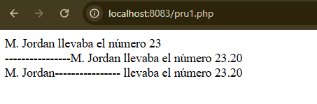
🖼️ Figura 2.40: Exemple d'ús de cadenes formatades mitjançant printf()
strlen: obté la longitud d'una cadena i retorna un número enter.
substr: retorna una subcadena de la cadena original.
str_replace: reemplaça caràcters en una cadena.
strtolower i strtoupper: Transformen una cadena de caràcters en la mateixa cadena en minúscules o majúscules respectivament.
<?php$cadena="El caballero oscuro";$tam=strlen($cadena);echo"La longitud de '$cadena' es: $tam <br />";$oscuro=substr($cadena,13);// desde 13 al final$caba=substr($cadena,3,4);// desde 3, 4 letras$katman=str_replace("c","k",$cadena);echo"$oscuro$caba ahora es $katman";echo"Grande ".strtoupper($cadena);?>
🖼️ Figura 2.41: Exemples d'usos de funcions bàsiques sobre cadenes
Si volem treballar amb caràcters ASCII de manera individual, són útils les funcions:
🖼️ Figura 2.42: Exemple d'usos de les funcions ord() i chr()
Si volem netejar cadenes, tenim les funcions:
trim: elimina els espais al principi i al final.
ltrim / rtrim o chop: Elimina els espais inicials / finals d'una cadena.
str_pad: farcix la cadena fins a una longitud especificada i amb el caràcter o caràcters especificats.
<?php$cadena=" Programando en PHP ";$limpia=trim($cadena);// "Programando en PHP"$sucia=str_pad($limpia,23,".");// "Programando en PHP....."echo$sucia;?>
🖼️ Figura 2.43: Exemples de funcions de neteja de cadenes
La comparació de cadenes pot ser amb conversió de tipus mitjançant == o estricta amb ===. També funcionen els operadors < i > si totes dues són cadenes.
En comparar cadenes amb valors numèrics podem utilitzar:
strcmp: 0 si les cadenes són iguals, <0 si a és menor que b, o >0 si a és major que b.
strcasecmp: les passa a minúscules i compara.
strncmp / strncasecmp: compara els N primers caràcters.
🖼️ Figura 2.44: Exemples d'ús de funcions per a comparar cadenes
Si el que volem és buscar dins d'una cadena, tenim:
strpos / strrpos: busca en una cadena i retorna la posició de la primera/última ocurrència.
strstr / strchr (alias): busca una cadena i retorna la subcadena a partir d'on l'ha trobada.
stristr: ignora les majúscules.
<?php$frase="Quien busca encuentra, eso dicen, a veces";$pos1=strpos($frase,",");// encuentra la primera coma$pos2=strrpos($frase,",");// encuentra la última coma$trasComa=strstr($frase,",");// ", eso dicen, a veces"echo$pos1."<br />";echo$pos2."<br />";echo$trasComa."<br />";?>
🖼️ Figura 2.45: Exemple d'ús de funcions cercadores
Si volem esbrinar què contenen les cadenes, tenim un conjunt de funcions de comprovació de tipus, conegudes com les funcions ctype, que retornen un booleà:
ctype_alpha → lletres
ctype_alnum → alfanumèrics
ctype_digit → dígits
ctype_punct → caràcters de puntuació, sense espais
ctype_space → són espais, tabulador, salt de línia
explode: convertix en array la cadena mitjançant un separador.
implode / join: passa un array a cadena amb un separador.
str_split/ chunk_split: passa una cadena a un array/cadena cada X caràcters.
<?php$frase="Quien busca encuentra, eso dicen, a veces";$partes=explode(",",$frase);// Salida con bucle for// SALIDA: ["Quien busca encuentra","eso dicen","a veces"]for($i=0;$i<count($partes);$i++){echo$partes[$i]."<br>";}$ciudades=["Elche","Aspe","Alicante"];$cadenaCiudades=implode(">",$ciudades);print_r($cadenaCiudades."<br/>");// salida con print_r// SALIDA: "Elche>Aspe>Alicante";$partes3cadena=chunk_split($frase,3);// SALIDA: un string// "Qui en bus ca enc uen tra , e so dic en, a vec es "$partes3array=str_split($frase,3);print_r($partes3array);// salida con print_// salida con funcion json_encode// SALIDA: un array// ["Qui", "en ", "bus", "ca ", "enc", …]echojson_encode($partes3array);?>
🖼️ Figura 2.47: Exemple d'ús de funcions per a obtindre subcadenes
Si volem treballar amb tokens:
strtok(cadena, separador).
i dins del bucle: strtok(separador).
Finalment, per a separar-la en funció del format:
sscanf: al revés que sprintf, crea un array a partir de la cadena i el patró.
Finalment, altres operacions que podem realitzar per a treballar amb subcadenes són:
substr_count: nombre de vegades que apareix la subcadena dins de la cadena.
substr_replace: reemplaça part de la cadena a partir de la seua posició i, opcionalment, longitud.
<?php$batman="Bruce Wayne es Batman";$empresa=substr($batman,6,5);// Wayneecho$empresa."<br />";$bes=substr_count($batman,"B");// 2echo$bes."<br />";// Bruce Wayne es camarero$camarero1=substr_replace($batman,"camarero",15);$camarero2=substr_replace($batman,"camarero",-6);// quita 6 desde el final// Bruno es Batman$bruno=substr_replace($batman,"Bruno",0,11);echo$bruno."<br />";?>
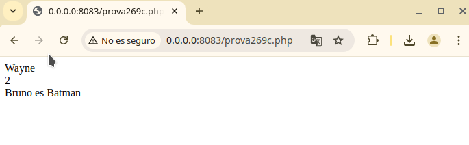
🖼️ Figura 2.48: Exemple d'ús de funcions per a obtindre subcadenes
També disposem d'una sèrie de funcions que faciliten les codificacions des de i cap a HTML:
htmlentities: convertix a entitats HTML, per exemple, á per á, ñ per ñ, < per <, etc..
htmlspecialchars: ídem però només amb els caràcters especials (&, ", ', <, >, ...)
striptags: elimina etiquetes HTML.
nl2br: canvia salts de línia per <br />.
rawurlencode / rawurldecode: codifica/descodifica una URL (espais, ...).
Estes funcions les utilitzarem més avant en la unitat temàtica 4. Programació Web.
pow, sqrt, log, decbin, bindec, decoct, dechex, base_convert, max, min
Funcions trigonomètriques:
sin, cos, tan, deg2rad, rad2deg
Funcions per a treballar amb números aleatoris:
rand, mt_rand (més ràpida).
Encara que la majoria són molt específiques de problemes matemàtics / estadístics, és molt comú que hàgem d'arredonir i/o formatar els càlculs abans de mostrar-los a l'usuari.
Mitjançant la funció number_format(numero, cantidadDecimales, separadorDecimales, separadorMiles) podem passar números a cadena amb decimals i/o separadors de decimals i/o de milers.
Reemplaça per patró. -1 → sense límit de reemplaçaments (si poses 1, només canvia la primera coincidència).
String
preg_replace_callback($patrón, $callback, $texto)
Permet aplicar una funció de callback a cada coincidència del patró. D'esta manera pots transformar dinàmicament el valor trobat.
String
preg_split($patrón, $texto, $lim=-1)
Dividix un string per patró. -1 significa que no hi ha límit de divisions.
Array
preg_grep($patrón, $array)
Filtra un array per regex
Array
preg_last_error()
Útil després de preg_*. Retorna un codi numèric que indica l'últim error produït per una funció d'expressions regulars. PREG_NO_ERROR → 0, PREG_INTERNAL_ERROR → 1, PREG_BACKTRACK_LIMIT_ERROR → 2, PREG_RECURSION_LIMIT_ERROR → 3, PREG_BAD_UTF8_ERROR → 4, PREG_BAD_UTF8_OFFSET_ERROR → 5, PREG_JIT_STACKLIMIT_ERROR → 6
Constant numèrica.
Exemples:
<?php$patron='/\d+/';// uno o más dígitos$texto='Tengo 12 perros';if(preg_match($patron,$texto,$m)){echo"Hay un número: {$m[0]}";// "12"}?>
<?php$patron='/\d+/';// uno o más dígitos$texto='Tengo 12 perros, 4 gatos y 7 periquitos';if(preg_match_all($patron,$texto,$coincidencias)){echo"Números encontrados:<br>";foreach($coincidencias[0]as$num){echo$num."<br>";}}?>
<?php$patron='/\d+/';// uno o más dígitos$reemplazo='#';// sustituir números por #$texto='Tengo 12 perros y 4 gatos';$nuevoTexto=preg_replace($patron,$reemplazo,$texto,-1,$count);echo"Texto original: $texto<br>";echo"Texto modificado: $nuevoTexto<br>";echo"Reemplazos realizados: $count";?>
<?php$patron='/\d+/';// uno o más dígitos$texto='Tengo 12 perros y 4 gatos';// Callback: recibe cada coincidencia y devuelve el nuevo valor$nuevoTexto=preg_replace_callback($patron,function($coincidencia){// $coincidencia es un array, el índice [0] es el valor encontrado$numero=(int)$coincidencia[0];return$numero*2;// multiplicamos por 2 cada número encontrado},$texto);echo"Texto original: $texto<br>";echo"Texto modificado: $nuevoTexto";?>
<?php$patron='/\d+/';// dividir por uno o más dígitos$texto='Tengo 12 perros y 4 gatos';// dividimos el texto por los números$partes=preg_split($patron,$texto,-1);echo"Texto original: $texto<br>";echo"Partes obtenidas:<br>";foreach($partesas$p){echo"- $p<br>";}?>
<?php$patron='/^A/';// elementos que empiezan por "A"$array=["Ana","Pedro","Andrés","Lucía","Alba","Juan"];$resultado=preg_grep($patron,$array);echo"Elementos originales:<br>";print_r($array);echo"<br><br>Coincidencias:<br>";print_r($resultado);?>
<?php$texto='camión acción año café';preg_match_all('/\b\p{L}+\b/u',$texto,$m);print_r($m[0]);// reconoce bien tildes y ñ (¡usa 'u'!)?>
Reemplaçar només fora d'etiquetes <code> (avançat)¶
Per a HTML real, millor un analitzador (DOMDocument). Exemple didàctic:
<?php$txt='Esto es <code>hola</code> y hola fuera';$pat='~(<code>.*?</code>)|hola~s';$out=preg_replace_callback($pat,function($m){if(!empty($m[1]))return$m[1];// bloque code intactoreturn'HOLA';},$txt);// "Esto es <code>hola</code> y HOLA fuera"?>
Quines cadenes de text trobarien les regexp següents?
a) hola
b) h.?a
c) h+b.
d) [2-4]?[3-9ag]
e) aju{2,8}m[-.]z
f) (ad)+juju.[0-9]?-
g) (ho|la)?[4-7zu]
h) [([0-4][0-9]|5[0-2])[0-9]{3} . Codis postals d'Espanya
i) ^.{3,32}#[0-9]{4}$ . Usuari de Discord
j) (b25[0-5]|b2[0-4][0-9]|b[01]?[0-9][0-9]?)(.(25[0-5]|2[0-4][0-9]|[01]?[0-9][0-9]?)){3} . Adreça ipv4. b és un delimitador de paraula «boundary».
202tresfrases.php: Mostra 3 frases, cadascuna en un paràgraf distint, utilitzant les tres possibilitats que hi ha de mostrar contingut. Després, introduïx dos comentaris, un de bloc i un altre d'una línia.
204datosPersonales.php: Escriu un programa que emmagatzeme en variables el teu nom, primer cognom, segon cognom, email, any de naixement i telèfon. Després mostra'ls per pantalla dins d'una taula.
205datosPersonales.html i 205datosPersonales.php: És el mateix exercici que l'anterior, però separant la lògica. En el primer fitxer crearem el formulari per a introduir les dades, i després recollim les dades i generem la taula en el segon fitxer.
207anyos.php: Després de llegir l'edat d'una persona, mostrar l'edat que tindrà d'ací a 10 anys i la que tenia fa 10 anys. A més, mostra quin any serà en cada un dels casos. Finalment, mostra l'any de jubilació suposant que treballaràs fins als 67 anys. En este cas, no cal que prèviament cregues un formulari, pots provar l'exercici via URL: 207anyos.php?edad=33.
208dinero.php: A partir d'una quantitat de diners, mostrar-ne la descomposició en bitllets (500, 200, 100, 50, 20, 10, 5) i monedes (2, 1), perquè el nombre d'elements siga mínim. No s'ha d'utilitzar cap instrucció condicional. Per exemple, en introduir 139 ha de mostrar:
1 billete de 1000 billete de 501 billete de 201 billete de 101 billete de 52 moneda de 2
A tindre en compte
Pots forçar la divisió entera mitjançant la funció intdiv($dividendo, $divisor)o, per a passar un número flotant a enter, pots usar la funció intval().
212reloj.php: Escriu un programa que funcione de manera semblant a un rellotge, de manera que a partir dels valors d'hora, minut i segon mostre l'hora que serà d'ací a un segon. Després de les 23:59:59 seran les 0:0:0.
213calendario.php: Escriu un programa semblant a un calendari de manera que a partir de dia, mes i anyo mostre la data d'un dia després. Has de tindre en compte que no tots els mesos tenen 30 dies. En este cas, no tindrem en compte els anys de traspàs.
214ecuacion2g.php: Crea un programa que resolga una equació de 2n grau del tipus ax² + bx + c = 0. Tin en compte que pot tindre 2 solucions, 1 o cap, depenent del valor del discriminant b²-4ac.
🖼️ Figura 2.53: Equació de segon grau per a l'exercici 214
A tindre en compte
Per a calcular l'arrel quadrada hauràs d'utilitzar la funció sqrt().
224tablaMultiplicar.php: Mostra dins d'una taula HTML la taula de multiplicar del número que reba com a paràmetre. Utilitza <thead> amb els seus respectius <th> i <tbody> per a dibuixar la taula. Per exemple:
226formulario.html i 226tabla.php: A partir d'un nombre de filas i columnas, crear una taula amb eixa grandària. Les cel·les han d'estar emplenades amb els valors de les coordenades de cada cel·la.
227formulario.html i 227cuadrado.php: Basant-te en l'exercici anterior, emplena la taula de manera que només les vores tinguen contingut i la resta de cel·les queden en blanc.
229cuadradoMultiplicar.php: Crea un programa que mostre per pantalla un quadrat exactament igual (fixa't bé en els encapçalaments, tant de les files com de les columnes) al de la imatge amb les taules de multiplicar.
232bola8.html: Prepara un formulari amb una caixa de text que faça una pregunta a l'usuari.
232bola8.php: A partir de l'anterior, crea un programa que mostre la pregunta rebuda i genere una resposta de manera aleatòria entre un conjunt de respostes predefinides, emmagatzemades en un array: Sí, no, potser, i tant que sí, per descomptat que no, no ho tinc clar, segur, jo diria que sí, ni de broma, etc....
Este exercici es basa en el joc de la Bola 8 màgica.
234sexos.php: Emplena un array de 100 elements de manera aleatòria amb valors M o F (per exemple ["M", "M", "F", "M", ...]). Una vegada completat, torna a recórrer-lo i calcula quants elements hi ha de cada un dels valors, emmagatzemant el resultat en un array associatiu ['M' => 44, 'F' => 66] (no utilitzes variables per a comptar les M o les F). Finalment, mostra el resultat per pantalla
235monedas.php: Torna a fer l'exercici 207, el de les monedes (500, 200, 100, 50, 20, 10, 5, 2, 1), però fent ús d'arrays i un bucle. Emmagatzema el resultat en un array associatiu. Mostra el resultat en una llista no ordenada únicament amb les quantitats que tenen algun valor.
236alturas.php: Mitjançant un array associatiu, emmagatzema el nom i l'altura de 5 persones (nombre => altura). Posteriorment, recorre l'array i mostra'l en una taula HTML. Finalment afig una última fila a la taula amb l'altura mitjana.
237personas.php: Mitjançant un array bidimensional, emmagatzema el nom, l'altura i l'email de 5 persones. Per a fer-ho, crea un array de persones, on cada persona és un array associatiu: [ ['nombre'=>'Aitor', 'altura'=>182, 'email'=>'aitor@correo.com'],[…],… ] Posteriorment, recorre l'array i mostra'l en una taula HTML.
238leerCantidad.html i 238leerPersonas.php: a partir d'un formulari amb un camp de cantidad de persones, generar un nou formulari per a llegir el nom, l'altura i l'email de cantidad persones.
238gestionarPersonas.php: A partir de les persones introduïdes, mostrar les seues dades en una taula i, posteriorment, destacar les dades del més alt i del més baix.
239tablaDistintos.php: Emplena un array bidimensional de 6 files per 9 columnes amb números aleatoris compresos entre 100 i 999 (tots dos inclosos). Tots els números han de ser distints, és a dir, no se'n pot repetir cap.
Mostra a continuació per pantalla el contingut de l'array de tal manera que:
Una funció que esbrine si un número és parell: esPar(int $num): bool
Una funció que retorne un array de grandària $tam amb números aleatoris compresos entre $min i $max: arrayAleatorio(int $tam, int $min, int $max) : array
Una funció que reba un $array per referència i retorne la quantitat de números parells que hi ha emmagatzemats: arrayPares(array &$array): int
242parametrosVariables.php: Crea les funcions següents:
Una funció que retorne el major de tots els números rebuts com a paràmetres: function mayor(): int. Utilitza les funcions func_get_args(), etc... No pots usar la funció max().
Una funció que concatene tots els paràmetres rebuts separant-los amb un espai: function concatenar(...$palabras) : string. Utilitza l'operador ....
244biblioteca.php: crea un fitxer amb funcions per a sumar, restar, multiplicar i dividir dos números.
244arrayFunciones.php: fent ús d'un array que emmagatzeme el nom de les funcions del fitxer anterior, a partir de dos números rebuts per URL, recorre l'array i invoca les funcions de manera dinàmica fent ús de funcions variable.
245euros.php: Crea una biblioteca amb dues funcions:
peseta2euros: passa de pessetes a euros
euros2pesetas: passa d'euros a pessetes
Cada funció ha de rebre dos paràmetres:
La quantitat que s'ha de transformar
La cotització, amb un paràmetre per defecte amb el factor de transformació.
245calculadoraEuros.php: utilitza 244euros.php i prova les funcions passant tant quantitats amb la cotització per defecte com amb noves cotitzacions. Recorda que 1 euro són/eren 166.36 pessetes.
246preparaTiquetCompra.php: A partir d'una quantitat de productes, llegir el nom i el cost de la quantitat de productes indicada (semblant a l'exercici 237, però esta vegada no cal crear el formulari amb la quantitat, es rep mitjançant un paràmetre GET via URL).
246imprimeTiquetCompra.php: Després de llegir les dades del tiquet de compra, enumera en una taula els productes, amb el seu preu en euros i pessetes, i finalment, en una última fila, totalitza en les dues monedes.
A partir dels fitxers creats en l'exercici anterior, crea una plantilla mitjançant includes: 247preparaCompra.php: semblant a 246preparaTiquetCompra.php, però separant l'encapçalament (Supermercat Severo en h1) i el peu (El teu supermercat de confiança) en fitxers externs i fent-hi referència mitjançant include.
🖼️ Figura 2.55: Ús de plantilles en l'Exercici 247
247listaCompra.php: rep les dades de l'anterior, i reutilitza part de 246imprimeTiquetCompra.php canviant la taula per una llista no ordenada dels productes juntament amb el seu preu.
248login.php: el formulari d'entrada, que sol·licita l'usuari i la contrasenya.
248compruebaLogin.php: rep les dades i comprova si són correctes (els usuaris es guarden en un array associatiu) i passa el control mitjançant l'ús d'include a:
248ok.php: L'usuari introduït és correcte
248ko.php: L'usuari és incorrecte. Informar si tots dos estan malament o només la contrasenya. Tornar a mostrar el formulari d'accés.
Tots els exercicis s'han de fer creant noves funcions per a encapsular el codi. A més de la funció mateixa, l'exercici ha de contindre codi per a poder provar-lo.
255palindromo.php: Escriu una funció que retorne un booleà indicant si una paraula és palíndroma (es llig igual d'esquerra a dreta que de dreta a esquerra, per exemple, “ligar es ser agil”).
258investiga.php: Investiga les funcions de cadena següents (explica per a què servixen mitjançant comentaris, i programa un xicotet exemple de cada una): ucwords, strrev, str_repeat i md5.
Els exercicis següents es basen en la generació de números aleatoris.
260generaContrasenya.php: Crea una funció que, a partir d'una grandària, genere una contrasenya aleatòria composta de lletres i dígits de manera aleatòria.
quinigol() : array → Genera un array multidimensional amb 6 resultats aleatoris amb combinacions [012M, 012M].
quiniela() : array → Genera un array amb una combinació de quiniela generada de manera aleatòria: 14 resultats amb 1X2 i el ple al quinze amb [012M, 012M].
tabla(array $quiniela) : string→ transforma un array d'una quiniela en una taula HTML.
Ací trobaràs exercicis genèrics de programació per a usar amb qualsevol llenguatge. Són genèrics perquè et poden servir amb qualsevol llenguatge que vulgues aprendre.
PHP seguix un paradigma de programació orientada a objectes (POO) basada en classes.
Una classe és una plantilla que definix els atributs i mètodes per a poder crear objectes.
D'esta manera, un objecte és una instància d'una classe.
Tant els atributs com els mètodes es definixen amb una visibilitat (qui hi pot accedir):
Privat - private: Només hi pot accedir la mateixa classe.
Protegit - protected: Només hi pot accedir la mateixa classe o els seus descendents.
Públic -public: Hi pot accedir qualsevol altra classe.
Per a declarar una classe, s'utilitza la paraula clau class seguida del nom de la classe.
Per a instanciar un objecte a partir de la classe, s'utilitza new.
Totes les classes comencen per lletra majúscula (UpperCamelCase).
<?php// DeclaraciónclassNombreClase{// atributos// y métodos}// Instanciación$ob=newNombreClase();
Quan un projecte creix, és normal modelar les classes mitjançant UML (recordeu Entorns de Desenvolupament?). Les classes es representen mitjançant un quadrat, separant el nom dels atributs i els mètodes:
🖼️ Figura 3.1: Estructura d'UML bàsic per a les classes
Una vegada hem creat un objecte, s'utilitza l'operador -> per a accedir a un atribut o un mètode de l'objecte:
$objeto->atributo;$objeto->método(parámetros);
Si, des de dins de la classe, volem accedir a un atribut o mètode de la mateixa classe, utilitzarem la referència $this;
$this->atributo;$this->método(parámetros);
Exemple de classe Persona
Dins del fitxer Persona.php:
<?phpclassPersona{privatestring$nombre;publicfunctionsetNombre(string$nombre){$this->nombre=$nombre;}publicfunctionimprimir(){echo$this->nombre.PHP_EOL;}}$bruno=newPersona();// creamos un objeto$bruno->setNombre("Bruno Díaz");$bruno->imprimir();
Encara que es poden declarar diverses classes en el mateix fitxer, és una mala pràctica. Així doncs, cada fitxer:
Les constants es definixen públiques perquè siguen accessibles per tots els recursos.
<?phpclassMayorMenor{// constantesconstLIMITE_MAXIMO=100;// atributosprivateint$mayor;privateint$menor;// métodos setterspublicfunctionsetMayor(int$may){$this->mayor=$may;}publicfunctionsetMenor(int$men){$this->menor=$men;}// métodos getterspublicfunctiongetMayor():int{return$this->mayor;}publicfunctiongetMenor():int{return$this->menor;}// resto de métodospublicfunctionmostrarLimite():void{echo"El límite máximo permitido es ".self::LIMITE_MAXIMO.PHP_EOL;}}
Una de les grans novetats que oferix PHP 8 és la simplificació dels constructors amb paràmetres, el que es coneix com a promoció dels atributs del constructor.
Per a això, en compte d'haver de declarar els atributs com a privats o protegits, i després dins del constructor haver d'assignar els paràmetres a estos atributs, el mateix constructor promociona els atributs.
Exemple PHP7 o anteriors VS PHP8
Imaginem una classe Punto on vulguem emmagatzemar les seues coordenades:
Són aquelles que tenen atributs (o propietats) i/o mètodes estàtics (també es coneixen com de classe, perquè el seu valor es compartix entre totes les instàncies de la mateixa classe).
Es declaren amb static i es referencien amb ::.
Si volem accedir a un mètode estàtic, s'anteposa el nom de la classe de la manera següent: Producto::nuevoProducto().
Si des d'un mètode volem accedir a un atribut estàtic de la mateixa classe, s'utilitza la referència self de la manera següent: self::$numProductos.
També podem tindre classes normals que tinguen algun atribut estàtic:
<?phpclassProducto{constIVA=0.23;privatestatic$numProductos=0;private$codigo;publicfunction__construct(string$cod){self::$numProductos++;$this->codigo=$cod;}publicfunctionmostrarResumen():string{return"El producto ".$this->codigo." es el número ".self::$numProductos;}}$prod1=newProducto("PS5");$prod2=newProducto("XBOX Series X");$prod3=newProducto("Nintendo Switch");echo$prod3->mostrarResumen();
En treballar amb classes i objectes, hi ha un conjunt de funcions ja definides pel llenguatge que permeten obtindre informació sobre els objectes:
instanceof: permet comprovar si un objecte és d'una determinada classe.
get_class: retorna el nom de la classe.
get_declared_class: retorna un array amb els noms de les classes definides.
class_alias: crea un àlies.
class_exists / method_exists / property_exists: retorna true si la classe/mètode/atribut està definida.
get_class_methods / get_class_vars / get_object_vars: retorna un array amb els noms dels mètodes/atributs d'una classe / atributs d'un objecte que són accessibles des d'on es fa la crida.
Exemple de funcions introspectives
<?php$p=newProducto("PS5");if($pinstanceofProducto){echo"Es un producto.<br/>";echo"La clase es ".get_class($p)."<br/>";class_alias("Producto","Articulo");$c=newArticulo("Nintendo Switch");echo"Un articulo es un ".get_class($c)."<br/>";print_r(get_class_methods("Producto"));echo"<br/>";print_r(get_class_vars("Producto"));echo"<br/>";print_r(get_object_vars($p));echo"<br/>";if(method_exists($p,"mostrarResumen")){echo$p->mostrarResumen();}}
En assignar dos objectes no es copien, es crea una nova referència.
Si volem una còpia, cal clonar-lo mitjançant el mètode clone(object) : object.
PHP ens permet crear un mètode que es cridarà quan executem l'operador clone. Este mètode pot, entre altres coses, inicialitzar alguns atributs.
Si no es definix el mètode __clone() es farà una còpia idèntica de l'objecte que li passem com a paràmetre a l'operador clone.
Exemple de clonatge
Crearem una classe Persona que tinga com a atributs el seu nombre i edad, definirem els mètodes per a carregar i retornar els valors dels seus atributs.
Farem que quan clonem un objecte d'esta classe l'edat de la persona es fixe a zero.
<?phpclassPersona{private$nombre;private$edad;publicfunctionfijarNombreEdad($nom,$ed){$this->nombre=$nom;$this->edad=$ed;}publicfunctiongetNombre(){return$this->nombre;}publicfunctiongetEdad(){return$this->edad;}publicfunction__clone(){$this->edad=0;}}$persona1=newPersona();$persona1->fijarNombreEdad('Juan',20);echo'Datos de $persona1:';echo$persona1->getNombre().' - '.$persona1->getEdad().'<br>';$persona2=clone($persona1);echo'Datos de $persona2:';echo$persona2->getNombre().' - '.$persona2->getEdad().'<br>';?>
El mètode __clone s'executarà quan cridem l'operador clone per a esta classe:
public function __clone() { $this->edad=0;}
És a dir, quan realitzem l'assignació:
$persona2 = clone($persona1);
Inicialment es fa una còpia idèntica de $persona1 però després s'executa el mètode __clone, amb la qual cosa l'atribut $edad es modifica.
Si volem que una classe no es puga clonar, simplement podem implementar el codi següent en el mètode __clone():
public function __clone() { die('No esta permitido clonar objetos de esta clase');}
PHP suporta herència simple, de manera que una classe només pot heretar d'una altra classe, no de dues o més classes alhora. Per a això s'utilitza la paraula clau extends.
Si volem que la classe A herete de la classe B farem:
class A extends B
La classe filla hereta els atributs i mètodes públics i protegits de la classe mare.
Cada classe en un fitxer
Com ja hem comentat, hauríem de col·locar cada classe en un fitxer diferent per a després utilitzar-lo mitjançant include. En els exemples següents els hem col·locat junts per a facilitar-ne la llegibilitat.
Exemple d'herència
Per exemple, tenim una classe Producto i una Tv que hereta de Producto:
Podem utilitzar les funcions següents per a esbrinar si hi ha relació entre dues classes:
get_parent_class(object): string
is_subclass_of(object, string): bool
Exemple 2 d'herència
<?php$t=newTv();$t->setCodigo(33);if($tinstanceofProducto){echo$t->mostrarResumen();}$madre=get_parent_class($t);echo"<br>La clase madre es: ".$madre;$objetoMadre=new$madre;echo$objetoMadre->mostrarResumen();if(is_subclass_of($t,'Producto')){echo"<br>Soy una hija de Producto";}
Podem crear mètodes en les classes filles amb el mateix nom que en la classe mare, canviant-ne el comportament. Per a invocar els mètodes de la classe mare: parent::nombreMetodo().
<?phpclassTvextendsProducto{public$pulgadas;public$tecnologia;publicfunctionmostrarResumen(){parent::mostrarResumen();echo"<p>TV ".$this->tecnologia." de ".$this->pulgadas."</p>";}}
En canvi, si el definim en la classe filla, hem d'invocar el de la classe mare de manera explícita.
<?phpclassProducto{publicstring$codigo;publicfunction__construct(string$codigo){$this->codigo=$codigo;}publicfunctionmostrarResumen(){echo"<p>Prod:".$this->codigo."</p>";}}classTvextendsProducto{public$pulgadas;public$tecnologia;publicfunction__construct(string$codigo,int$pulgadas,string$tecnologia){parent::__construct($codigo);$this->pulgadas=$pulgadas;$this->tecnologia=$tecnologia;}publicfunctionmostrarResumen(){parent::mostrarResumen();echo"<p>TV ".$this->tecnologia." de ".$this->pulgadas."</p>";}}
<?phpclassProducto{publicfunction__construct(privatestring$codigo){}publicfunctionmostrarResumen(){echo"<p>Prod:".$this->codigo."</p>";}}classTvextendsProducto{publicfunction__construct(string$codigo,privateint$pulgadas,privatestring$tecnologia){parent::__construct($codigo);}publicfunctionmostrarResumen(){parent::mostrarResumen();echo"<p>TV ".$this->tecnologia." de ".$this->pulgadas."</p>";}}
Les classes abstractes obliguen a heretar d'estes classes, ja que no se'n permet la instanciació; sí que es permet a les classes heretades (sempre que no estiguen també definides com a abstractes).
Es definix mitjançant abstractclass NombreClase {}.
Una classe abstracta pot contindre atributs i mètodes no abstractes, i/o mètodes abstractes.
Quan una classe hereta d'una classe abstracta, obligatòriament ha d'implementar els mètodes que la classe mare té marcats com a abstractes.
<?phpclassTvextendsProducto{public$pulgadas;public$tecnologia;publicfunctionmostrarResumen(){//obligado a implementarloecho"<p>Código ".$this->getCodigo()."</p>";echo"<p>TV ".$this->tecnologia." de ".$this->pulgadas."</p>";}}$t=newTv();echo$t->getCodigo();
Són classes oposades a les classes abstractes, ja que eviten que es puga heretar una classe o mètode per a sobreescriure'l.
Es definix mitjançant finalclass NombreClase {}.
<?php// clase ProductoclassProducto{private$codigo;publicfunctiongetCodigo():string{return$this->codigo;}finalpublicfunctionmostrarResumen():string{return"Producto ".$this->codigo;}}// clase Microondas// No podremos heredar de MicroondasfinalclassMicroondasextendsProducto{private$potencia;publicfunctiongetPotencia():int{return$this->potencia;}// No podemos implementar mostrarResumen()}
Permeten definir un contracte amb les signatures dels mètodes que s'han de complir. Així doncs, només contenen declaracions de funcions i totes han de ser públiques.
Es declaren amb la paraula clau interface.
Les classes que complisquen el contracte ho fan mitjançant la paraula clau implements.
<?phpinterfaceNombreable{// declaración de funciones}classNombreClaseimplementsNombreInterfaz{// código de la clase
Es permet l'herència d'interfícies. A més, una classe pot implementar diverses interfícies (en este cas, sí que suporta l'herència múltiple, però només d'interfícies).
<?phpinterfaceMostrable{publicfunctionmostrarResumen():string;}interfaceMostrableTodoextendsMostrable{publicfunctionmostrarTodo():string;}interfaceFacturable{publicfunctiongenerarFactura():string;}classProductoimplementsMostrableTodo,Facturable{// Implementaciones de los métodos// Obligatoriamente deberá implementar:// - public function mostrarResumen, // - public function mostrarTodo y // - public function generarFactura}
Projecte Videoclub per a lliurar
Crea una carpeta Videoclub per a realitzar el projecte següent:
Seguix el plantejament de la programació funcional, i també es coneix com a method chaining. Planteja que sobre un objecte es realitzen diverses crides; és a dir, consistix a cridar diversos mètodes d'un objecte en una mateixa línia, n'hi ha prou amb afegir al final de cada mètode: return $this;.
Exemple de mètodes encadenats
Per a facilitar-ho, modificarem tots els seus mètodes mutadors (que modifiquen dades, setters, ...) perquè retornen una referència a $this:
<?phpclassCoche{publicfunctionlavar(){echo"Coche lavado.\n";return$this;// retorna el mismo objeto Coche}publicfunctionencerar(){echo"Coche encerado.\n";return$this;// retorna el mismo objeto Coche}}// ejemplo llamada a los métodos encadenados $coche=newCoche;$coche->lavar()->encerar();
//mostrará
Cochelavado.
Cocheencerado.
Un altre exemple
<?phpclassLibro{privatestring$nombre;privatestring$autor;publicfunctiongetNombre():string{return$this->nombre;}publicfunctionsetNombre(string$nombre):Libro{$this->nombre=$nombre;return$this;}publicfunctiongetAutor():string{return$this->autor;}publicfunctionsetAutor(string$autor):Libro{$this->autor=$autor;return$this;}publicfunction__toString():string{return$this->nombre." de ".$this->autor;}}echo"USO TRADICIONAL:<br/>"$libro=newLibro();$libro->setNombre("Cien años de soledad");$libro->setAutor("Gabriel García Márquez");echo$libro;// Cien años de soledad de Gabriel García Márquezecho"<br/>################<br/>";echo"USO DE MÉTODOS ENCADENADOS:<br/>"$libro=(newLibro())->setNombre("1984")->setAutor("George Orwell");echo$libro;// Retorna el método __toString() . Resultado: 1984 de George Orwell
Totes les classes PHP oferixen un conjunt de mètodes, també coneguts com a magic methods, que es poden sobreescriure per a substituir-ne el comportament. Alguns ja els hem utilitzat.
__destruct() → s'invoca en perdre la referència. S'utilitza per a tancar una connexió a la BD, tancar un fitxer, ...
__toString() → representació de l'objecte com a cadena. És a dir, quan fem echo $objeto s'executa automàticament este mètode.
get(atributo), set(atributo, valor) → Permetria accedir als atributs privats, encara que sempre és més llegible/mantenible codificar els getter/setter.
__isset(atributo), __unset(atributo) → Permet esbrinar o llevar el valor d'un atribut.
sleep(), wakeup() → S'executen en recuperar (unserialize^) o emmagatzemar un objecte que se serialitza (serialize), i s'utilitzen per a definir quins atributs se serialitzen.
call(), callStatic() → S'executen en cridar un mètode que no és públic. Permeten sobrecarregar mètodes.
Exemple
<?phpclassEjemploMagico{privatestring$nombre;privateint$edad;private?string$conexion=null;// __construct: se ejecuta al crear el objetopublicfunction__construct(string$nombre,int$edad){echo"▶ Constructor ejecutado<br>";$this->nombre=$nombre;$this->edad=$edad;$this->conexion="Conectado a BD";}// __destruct: se ejecuta al destruir el objeto o perder la referenciapublicfunction__destruct(){echo"⏹ Destructor ejecutado: cerrando conexión...<br>";$this->conexion=null;}// __toString: representación del objeto como texto (echo $obj)publicfunction__toString():string{return"Nombre: {$this->nombre}, Edad: {$this->edad}";}// Getters y Setters (acceso controlado a atributos privados)publicfunctiongetNombre():string{return$this->nombre;}publicfunctionsetNombre(string$nombre):self{$this->nombre=$nombre;return$this;}publicfunctiongetEdad():int{return$this->edad;}publicfunctionsetEdad(int$edad):self{$this->edad=$edad;return$this;}// __isset y __unset: permiten verificar o eliminar propiedades privadaspublicfunction__isset($propiedad):bool{echo"¿Existe la propiedad '$propiedad'? ";returnisset($this->$propiedad);}publicfunction__unset($propiedad):void{echo"Eliminando la propiedad '$propiedad'...<br>";unset($this->$propiedad);}// __sleep y __wakeup: controlan la serialización y deserializaciónpublicfunction__sleep():array{echo"💾 Serializando objeto...<br>";// Solo queremos guardar nombre y edad, no la conexiónreturn['nombre','edad'];}publicfunction__wakeup():void{echo"🔄 Objeto restaurado. Reconectando...<br>";$this->conexion="Conectado de nuevo";}// __call: se ejecuta cuando se invoca un método inexistente o privadopublicfunction__call($metodo,$argumentos){echo"⚠️ Intentando llamar a método no definido '$metodo' con args: ";print_r($argumentos);}// __callStatic: igual que __call pero para métodos estáticospublicstaticfunction__callStatic($metodo,$argumentos){echo"⚠️ Llamada estática a '$metodo' con args: ";print_r($argumentos);}}// DEMOSTRACIÓN$obj=newEjemploMagico("Arturo",25);echo"<hr>";// echo → ejecuta automáticamente __toStringecho$obj."<br><hr>";// Getters y setters$obj->setNombre("Ana")->setEdad(30);echo$obj->getNombre()." tiene ".$obj->getEdad()." años.<br><hr>";// isset / unset mágicosvar_dump(isset($obj->nombre));// falsevar_dump(isset($obj->edad));// true (aunque sea privada)unset($obj->edad);var_dump(isset($obj->edad));// falseecho"<hr>";// Serialización (sleep / wakeup)$serializado=serialize($obj);echo"Objeto serializado: $serializado<br>";$restaurado=unserialize($serializado);echo$restaurado."<br><hr>";// call / callStatic$obj->metodoInexistente("dato1","dato2");EjemploMagico::metodoEstaticoInexistente(123,456);echo"<hr>Fin del script<br>";
Des de PHP 5.3, i també coneguts com a Namespaces, permeten organitzar les classes, interfícies, funcions i constants en un àmbit separat. Això evita col·lisions o conflictes de noms entre diferents elements, com ocorre en altres llenguatges (per exemple, els paquets en Java).
Ací, en estar en namespaces diferents, ambdues classes Producto poden coexistir sense problemes.
Els namespaces permeten:
Evitar conflictes de nom en reutilitzar llibreries o frameworks.
Millorar l'estructura i l'organització del teu codi.
Facilitar la col·laboració en projectes grans.
Recomanació
Mantín un sol namespace per fitxer i organitza els fitxers en una estructura de carpetes que reflectisca els diferents nivells dels namespaces, de manera semblant a com s'organitzen els paquets en Java.
Un namespace es declara en la primera línia del fitxer usant la paraula clau namespace seguida del nom de l'espai de noms. Els nivells d'un namespace se separen amb barres invertides \.
Exemple namespace
En l'exemple següent, la classe Producto que es troba en el fitxer Producto.php i la constant IVA pertanyen al namespaceDwes\Ejemplos.
Per a accedir a recursos dins d'un namespace, cal incloure'ls primer en el fitxer, usant include o require. Depenent de la ubicació del recurs, hi ha tres tipus d'accés:
A) Sense qualificar: Es referix directament al recurs si està en el mateix namespace.
Exemple d'accés sense qualificar
<?phpnamespaceMiNamespace;classMiClase{publicfunctionmostrar(){echo"Esto es MiClase";}}// Como MiClase está en el mismo namespace (MiNamespace),// puedo crear una instancia sin especificar el namespace completo.$miObjeto=newMiClase();// Acceso sin cualificar$miObjeto->mostrar();
B) Qualificat: Usa una ruta relativa dins del mateix namespace o subnamespace (rutaRelativa\recurso)→ no cal posar el namespace complet.
Exemple d'accés qualificat
<?phpnamespaceMiNamespace\SubNamespace;classClaseSecundaria{publicfunctionmostrar(){echo"Esto es ClaseSecundaria en SubNamespace";}}
<?phpnamespaceMiNamespace;classMiClase{publicfunctionmostrar(){echo"Esto es MiClase en MiNamespace";}}// Como ClaseSecundaria está en un subnamespace de MiNamespace,// puedo usar el nombre cualificado sin poner la barra inicial.$secundaria=newSubNamespace\ClaseSecundaria();// Acceso cualificado$secundaria->mostrar();
C) Totalment qualificat: Usa la ruta completa des de l'arrel del namespace ( \rutaAbsoluta\recurso)
Exemple d'accés totalment qualificat
<?phpnamespaceOtroNamespace;classClaseExterna{publicfunctionmostrar(){echo"Esto es ClaseExterna en OtroNamespace";}}
<?phpnamespaceMiNamespace;classMiClase{publicfunctionmostrar(){echo"Esto es MiClase en MiNamespace";}}// Como ClaseExterna está en un namespace completamente diferente,// necesitamos usar el namespace completo y comenzar con una barra invertida.$externa=new\OtroNamespace\ClaseExterna();// Acceso totalmente cualificado$externa->mostrar();
Exemple d'accés
<?phpnamespaceDwes\Ejemplos;include_once("Producto.php");// acceso sin cualificar (está en el mismo namespace)echoIVA;// imprime 0,21// acceso cualificado (error si Utilidades no existe)echoUtilidades\IVA;// Error, Utilidades no está definido// acceso totalmente cualificadoecho\Dwes\Ejemplos\IVA;// Correcto$p1=newProducto();// busca la clase en el mismo namespace y// encuentra \Dwes\Ejemplos\Producto$p2=newModel\Producto();// daría error, no existe el namespace Model.// Está buscando \Dwes\Ejemplos\Model\Producto$p3=new\Dwes\Ejemplos\Producto();// \Dwes\Ejemplos\Producto
Per a evitar la necessitat d'escriure rutes qualificades o totalment qualificades constantment, PHP permet declarar l'ús de recursos d'altres namespaces mitjançant la paraula clau use, de manera semblant a l'import en Java.
Usar constants: use const nombreCualificadoConstante
Usar funcions: use function nombreCualificadoFuncion
Usar classes: use nombreCualificadoClase
Àlies de la classe: use nombreCualificadoClase as NuevoNombre (canviar el nom per a evitar conflictes).
Exemple de use
Si volem utilitzar la classe \Dwes\Ejemplos\Producto en un fitxer en l'arrel, per exemple inicio.php, ho faríem així:
<?phpinclude_once("Dwes\Ejemplo\Producto.php");useconstDwes\Ejemplos\IVA;// uso de constanteuse\Dwes\Ejemplos\Producto;// uso de claseechoIVA;// imprime 0,21$p1=newProducto();// no se necesita la ruta completa, gracias a `use`
L'ús de use només és necessari per a accedir a recursos que estan en un namespace diferent. Si estàs treballant dins del mateix namespace, no és necessari.
A mesura que un projecte creix, és fonamental organitzar el codi font de forma estructurada. Una recomanació comuna és col·locar els fitxers que interactuen amb el navegador en l'arrel del projecte i organitzar les classes dins d'un namespace en una carpeta específica, com src o app.
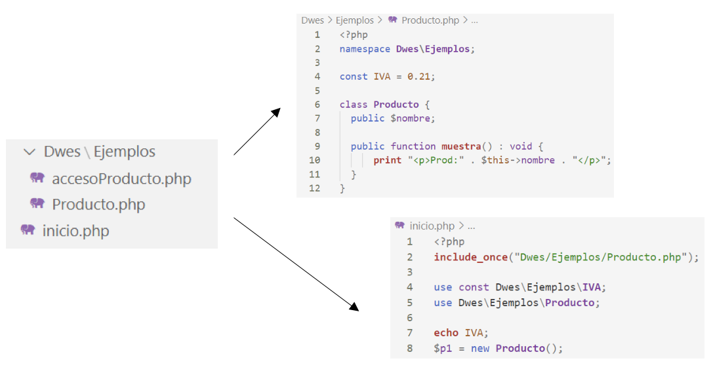
🖼️ Figura 3.2: Exemple d'organització de projectes usant namespace
Regles d'organització:
Un recurs per fitxer: Cada classe, funció o constant ha d'estar en el seu propi fitxer.
Incloure namespaces: Declara el namespace en la primera línia del fitxer (si no està en el directori arrel).
Usar include_once: Per a carregar els recursos necessaris (classes, interfícies, etc.).
Declarar dependències: Cada recurs ha d'incloure les dependències que necessita, com ara classes base o interfícies.
Ús de use: Si el recurs està en un namespace diferent, utilitza use per a facilitar l'accés sense qualificar.
Per a evitar la necessitat d'usar include_once o require en cada fitxer, PHP oferix l'autoload, que permet carregar classes automàticament quan són necessàries. Això es fa mitjançant la funció spl_autoload_register.
I com organitzem ara el nostre codi aprofitant l'autoload?
🖼️ Figura 3.3: Ordenar classes en una carpeta (app)
Una bona pràctica és organitzar totes les classes dins d'una carpeta com app. Després, l'autoload es configura per a buscar classes dins d'esta carpeta:
<?phpspl_autoload_register(function($nombreClase){$ruta=__DIR__."/".$nombreClase.'.php';$ruta=str_replace("\\","/",$ruta);// Verifica si el archivo existe antes de incluirloif(file_exists($ruta)){include_once$ruta;}else{die("No se pudo cargar la clase: $nombreClase");}});
Durant l'execució d'una aplicació poden aparéixer problemes: intentar obrir un fitxer que no existix, utilitzar una variable sense inicialitzar o realitzar una operació no vàlida.
Gestionar estos problemes implica detectar-los, conéixer-ne la causa i decidir com ha de respondre l'aplicació. Amagar un missatge no soluciona l'error que l'ha provocat.
Convé distingir quins errors es notifiquen, on es mostren i com reaccionem davant d'ells.
S'inclouen els seus missatges en l'eixida enviada a l'usuari?
log_errors
Es guarden els errors en un registre?
error_log
En quin fitxer o destinació es registren?
Exemple
Per exemple, podem registrar els errors sense mostrar-los en la pàgina web. Així, l'equip de desenvolupament disposa d'informació per a investigar-los i el visitant no veu detalls interns del servidor.
Estos canvis afecten l'execució actual; no modifiquen permanentment php.ini. A més, una instrucció del mateix fitxer no es pot executar si un error de sintaxi impedix analitzar-lo.
Per a seleccionar nivells utilitzem operadors a nivell de bits:
// Notificar todos los niveles.error_reporting(E_ALL);// Notificar todos excepto los avisos E_NOTICE.error_reporting(E_ALL & ~E_NOTICE);// Notificar únicamente errores fatales y advertencias.error_reporting(E_ERROR | E_WARNING);// Desactivar el reporte del manejador estándar.error_reporting(0);
En estes expressions:
| inclou diversos nivells.
~ invertix una màscara; juntament amb &, permet excloure nivells.
& conserva els nivells que coincidixen en ambdues màscares.
Exemple
E_ALL & ~E_NOTICE
Significa: tots els nivells excepte E_NOTICE. No s'ha de confondre & amb l'operador lògic &&.
Durant el desenvolupament convé utilitzar E_ALL per a detectar també els problemes que no interrompen el programa.
PHP disposa d'un gestor estàndard per als seus errors. Amb set_error_handler() podem registrar una funció pròpia per a determinats nivells, per exemple, per a canviar el format del missatge o registrar-lo d'una altra manera.
Exemple didàctic per a desenvolupament
<?phperror_reporting(E_ALL);functionmiManejadorErrores(int$nivel,string$mensaje):bool{// Respetar los niveles seleccionados en error_reporting().if((error_reporting()&$nivel)===0){returnfalse;}echo"<strong>Advertencia:</strong> ".htmlspecialchars($mensaje,ENT_QUOTES,"UTF-8")."<br>";returntrue;}// Utilizar nuestra función para las advertencias E_WARNING.set_error_handler("miManejadorErrores",E_WARNING);// Si el archivo no existe, se genera una advertencia.$archivo=fopen("archivo_inexistente.txt","r");if($archivo===false){echo"No se ha podido abrir el archivo.<br>";}echo"El programa continúa.<br>";// Recuperar el manejador anterior.restore_error_handler();
En este exemple:
set_error_handler() registra la funció; no l'executa immediatament.
Si fopen() genera un E_WARNING, PHP crida la funció.
$nivel conté el tipus d'error i $mensaje, la seua descripció.
return true indica que l'hem gestionat; return false deixa actuar el gestor estàndard.
restore_error_handler() recupera el gestor anterior.
La comprovació d'error_reporting() és necessària si volem respectar eixe filtre: un gestor personalitzat pot rebre nivells exclosos del report estàndard. Tampoc no pot gestionar tots els errors; per exemple, no gestiona E_ERROR ni E_PARSE.
Gestors personalitzats i producció
L'echo del gestor és una eixida escrita pel nostre codi: display_errors = Off no l'amaga. En producció, podem utilitzar error_log() per a registrar el detall i mostrar a l'usuari un missatge general.
5. Diferència amb les excepcions i els objectes Error¶
set_error_handler() no substituïx try/catch. En PHP modern, alguns problemes es comuniquen mitjançant objectes llançats que hem de capturar.
Per exemple, en PHP 8, dividir mitjançant / entre zero llança un DivisionByZeroError, que no passa pel nostre gestor d'advertències:
<?php$dividendo=10;$divisor=0;try{$resultado=$dividendo/$divisor;echo"Resultado: $resultado";}catch(DivisionByZeroError$e){echo"No se puede dividir entre cero.";}echo"<br>El programa continúa.";
Capturar el problema permet decidir com continuar. En canvi, canviar error_reporting() només en configura el report: no convertix una operació incorrecta en una operació vàlida.
En l'apartat anterior vam aprendre a configurar el report d'errors. Ara farem un pas més: decidir com respon el nostre programa quan una operació no es pot completar.
Exemple
Pensem en el projecte del videoclub. Un client pot intentar llogar un suport que ja té o superar el seu màxim de lloguers. En eixos casos, el programa ha de detectar el problema, aturar eixa operació i informar del que ha passat.
Una excepció és un objecte que representa una situació que interromp el flux normal d'una operació. La podem llançar amb throw i capturar amb catch.
Idea inicial
Una part del programa detecta el problema i llança l'excepció. Una altra part la captura i decidix què fer: mostrar un missatge, sol·licitar altres dades o cancel·lar l'operació.
Comencem amb una operació senzilla: dividir dos nombres. En este exemple comprovem el divisor i llancem nosaltres una Exception abans d'intentar la divisió.
<?php$dividendo=10;$divisor=0;try{echo"1. Vamos a realizar la división.<br>";if($divisor===0){thrownewException("El divisor no puede ser cero.");}$resultado=$dividendo/$divisor;echo"2. Resultado: ".$resultado."<br>";}catch(Exception$e){echo"3. No se ha podido dividir: ".$e->getMessage()."<br>";}echo"4. El programa continúa.<br>";
1. Vamos a realizar la división.
3. No se ha podido dividir: El divisor no puede ser cero.
4. El programa continúa.
Per què no apareix el missatge 2?
Quan s'executa throw, s'abandona el recorregut normal del try i es busca un catch compatible.
Element
Què fa?
try
Conté l'operació que pot llançar una excepció.
new Exception("mensaje")
Crea l'objecte que descriu el problema.
throw
Llança eixe objecte i interromp el flux normal de l'operació.
catch (Exception $e)
Captura una excepció compatible i la guarda en $e.
$e->getMessage()
Obté el missatge inclòs en l'excepció.
Crear una excepció i llançar-la són accions diferents:
new Exception(...) crea l'objecte i
throw el llança.
Abans d'executar: què passa si el divisor val 2?
No s'executa throw i tampoc s'entra en catch.
1. Vamos a realizar la división.
2. Resultado: 5
4. El programa continúa.
Capturar no significa tornar al punt de la fallada
Després del catch, el programa continua amb la instrucció posterior al conjunt try/catch. No torna a executar la divisió ni les instruccions que van quedar pendents dins del try.
Si no hi ha cap catch compatible en la cadena de crides, i tampoc s'ha configurat un gestor global, el programa acaba amb un error per excepció no capturada.
2. Llançar des d'una funció i capturar en utilitzar-la¶
Una funció pot detectar un problema sense decidir com es mostrarà a l'usuari.
Exemple
Calcularem el preu d'un lloguer:
<?phpfunctioncalcularPrecioAlquiler(float$precioDiario,int$dias):float{if($dias<=0){thrownewException("El alquiler debe durar al menos un día.");}return$precioDiario*$dias;}try{$total=calcularPrecioAlquiler(2.50,0);echo"Precio del alquiler: ".number_format($total,2,",",".")." €<br>";}catch(Exception$e){echo"No se ha registrado el alquiler: ".$e->getMessage()."<br>";}
La funció llança l'excepció i el codi que la utilitza la captura. L'excepció ix de la funció i arriba al catch que envolta la seua crida; es mostrarà:
No se ha registrado el alquiler: El alquiler debe durar al menos un día.
Si canviem 0 per 3, la funció retorna 7.5 i es mostra:
Precio del alquiler: 7,50 €
Relació amb el projecte Videoclub
Fins ara, alguns mètodes retornaven false i mostraven un missatge quan alguna cosa no es podia fer. En utilitzar excepcions, podem fer que el mètode detecte i llance el problema, mentre que el codi que el crida decidix com comunicar-ho.
No cal col·locar un try/catch dins de cada mètode. Hem de capturar l'excepció on li puguem donar una resposta útil.
El bloc finally conté les accions que s'han de realitzar en eixir del try/catch, tant si l'operació ha funcionat com si s'ha llançat una excepció.
Exemple
<?php$dias=0;try{echo"Comprobando la solicitud de alquiler...<br>";if($dias<=0){thrownewException("La duración del alquiler no es válida.");}echo"Solicitud válida.<br>";}catch(Exception$e){echo"Problema: ".$e->getMessage()."<br>";}finally{echo"Comprobación finalizada.<br>";}echo"Podemos realizar otra solicitud.<br>";
Comprobando la solicitud de alquiler...
Problema: La duración del alquiler no es válida.
Comprobación finalizada.
Podemos realizar otra solicitud.
Si $dias val 3, no s'executa el catch, però sí que s'executa el finally.
La seua utilitat pràctica és alliberar recursos, per exemple, tancar un fitxer que hem obert. També s'executa si hi ha un return dins del try o del catch, o si l'excepció continua cap a un altre nivell.
És opcional
No tots els exemples necessiten finally. Cada try ha de tindre almenys un catch o un finally.
No es garantix que el bloc finally s'execute si el procés s'acaba bruscament, per exemple, mitjançant exit().
La classe Exception oferix un constructor amb tres paràmetres:
new Exception($mensaje, $codigo, $excepcionPrevia);
$mensaje: descripció del problema. Per defecte és una cadena buida.
$codigo: nombre enter que podem utilitzar per a identificar-lo. Per defecte és 0.
$excepcionPrevia: un altre objecte Throwable que haja originat el problema. Per defecte és null.
Podem consultar-ne la informació mitjançant estos mètodes:
Mètode
Informació que retorna
getMessage()
Missatge de l'excepció.
getCode()
Codi de l'excepció.
getFile()
Fitxer on es va crear l'objecte d'excepció.
getLine()
Línia on es va crear.
getPrevious()
Excepció o error previ, si es va indicar.
Exemple
<?phptry{thrownewException("El soporte no está disponible.",1001);}catch(Exception$e){echo"Mensaje: ".$e->getMessage()."<br>";echo"Código: ".$e->getCode()."<br>";}
Mensaje: El soporte no está disponible.
Código: 1001
L'excepció també és un objecte
$e no conté únicament un missatge. Conté l'objecte capturat i podem invocar-ne els mètodes, igual que en les altres classes que hem treballat.
En els exemples usem missatges fixos. Si un missatge incorpora dades introduïdes per l'usuari, hem de preparar-lo amb htmlspecialchars() abans de mostrar-lo en HTML. Les rutes i traces tècniques són informació per a depuració; en producció convé registrar-les sense mostrar-les al visitant.
Podem crear tipus d'excepció propis mitjançant herència. En molts casos n'hi ha prou amb una classe buida que herete d'Exception:
<?phpclassCupoSuperadoExceptionextendsException{}
Encara que no afegim propietats ni mètodes, la classe ja hereta el constructor i els mètodes d'Exception. El que aporta és un tipus específic que podem capturar per separat.
La podem utilitzar així, en un fitxer independent dels exemples anteriors:
Exemple
<?phpclassCupoSuperadoExceptionextendsException{}functioncomprobarCupo(int$alquileresActuales,int$maximo):void{if($alquileresActuales>=$maximo){thrownewCupoSuperadoException("El cliente ha alcanzado su máximo de alquileres.");}}try{comprobarCupo(3,3);echo"El cliente puede alquilar otro soporte.<br>";}catch(CupoSuperadoException$e){echo"Alquiler rechazado: ".$e->getMessage()."<br>";}
Cada classe en el seu fitxer
En els exemples reunim les classes i el seu ús per a facilitar la lectura. En el projecte, cada excepció ha d'estar en el seu propi fitxer i carregar-se mitjançant require_once o l'autoload que ja hem treballat.
No necessitem sobreescriure el constructor ni __toString() perquè una excepció funcione. Si alguna aplicació necessita personalitzar-los, podem fer-ho utilitzant les tècniques d'herència i mètodes màgics ja estudiades.
Una operació pot fallar per diverses raons. En el videoclub, per exemple:
El client ja té llogat el suport.
El client ha arribat al seu límit.
Exemple
Podem crear una excepció general del videoclub i dues excepcions més específiques:
<?phpclassVideoclubExceptionextendsException{}classSoporteYaAlquiladoExceptionextendsVideoclubException{}classCupoSuperadoExceptionextendsVideoclubException{}functioncomprobarAlquiler(bool$yaAlquilado,int$alquileresActuales,int$maximo):void{if($yaAlquilado){thrownewSoporteYaAlquiladoException("El cliente ya tiene este soporte.");}if($alquileresActuales>=$maximo){thrownewCupoSuperadoException("El cliente ha alcanzado su máximo de alquileres.");}}try{comprobarAlquiler(true,2,3);echo"Podemos registrar el alquiler.<br>";}catch(SoporteYaAlquiladoException$e){echo"Soporte repetido: ".$e->getMessage()."<br>";}catch(CupoSuperadoException$e){echo"Cupo completo: ".$e->getMessage()."<br>";}catch(VideoclubException$e){echo"Otro problema del videoclub: ".$e->getMessage()."<br>";}
PHP executa únicament el primer catch compatible. Per això col·loquem els tipus més específics abans que les seues classes pare.
Autoavaluació
Prova estes crides canviant únicament els arguments.
Crida
Resultat
comprobarAlquiler(true, 2, 3)
Es captura SoporteYaAlquiladoException.
comprobarAlquiler(false, 3, 3)
Es captura CupoSuperadoException.
comprobarAlquiler(false, 2, 3)
No es llança cap excepció.
comprobarAlquiler(true, 3, 3)
Es llança la primera excepció: el suport ja estava llogat.
Si la resposta és la mateixa per a dos tipus, podem agrupar-los amb |.
Exemple
En l'exemple anterior, podem substituir el seu try/catch per este bloc:
<?php//...try{comprobarAlquiler(false,3,3);echo"Podemos registrar el alquiler.<br>";}catch(SoporteYaAlquiladoException|CupoSuperadoException$e){echo"No se ha podido alquilar: ".$e->getMessage()."<br>";}
Ací agrupem dues classes germanes. No cal agrupar una classe pare amb una filla, perquè capturar el pare ja inclou els seus descendents.
Autoavaluació
Quin missatge es mostrarà?
<?phpclassVideoclubExceptionextendsException{}classCupoSuperadoExceptionextendsVideoclubException{}try{thrownewCupoSuperadoException("Máximo de alquileres alcanzado.");}catch(VideoclubException$e){echo"Capturada la excepción general.<br>";}catch(CupoSuperadoException$e){echo"Capturada la excepción específica.<br>";}
Resposta: es mostra Capturada la excepción general.
L'excepció és també una VideoclubException per herència, i eixe és el primer catch compatible. Per a tractar el cas específic, cal intercanviar els dos blocs catch.
En PHP modern, no tots els objectes que podem capturar pertanyen a la família Exception.
Tipus
Paper
Exception
Classe base de les excepcions d'aplicació i altres excepcions recuperables.
Error
Classe base d'errors llançats per PHP, com TypeError o DivisionByZeroError.
Throwable
Interfície comuna que implementen les famílies Exception i Error.
Per tant, catch (Exception $e) no captura un DivisionByZeroError, perquè pertany a la família Error.
En el primer exemple evitàvem la divisió per zero i llançàvem una Exception pròpia. Si no fem eixa comprovació, PHP 8 llança un DivisionByZeroError:
<?phptry{$resultado=10/0;}catch(DivisionByZeroError$e){echo"No se puede dividir entre cero.<br>";}
Quan volem un tractament comú per a ambdues famílies, podem capturar Throwable:
Exemple
<?phptry{$resultado=10/0;}catch(Throwable$e){echo"Se ha capturado un objeto de tipo ".get_class($e).".<br>";}
Se ha capturado un objeto de tipo DivisionByZeroError.
No tot es captura amb try/catch
Una advertència com la generada per fopen() en obrir un fitxer inexistent no es convertix automàticament en una excepció. El seu tractament correspon al mecanisme de report i gestors de l'apartat anterior, llevat que configurem expressament una conversió.
Tampoc no hem de confondre el nivell E_ERROR amb la classe Error: catch (Error $e) no és un mecanisme per a capturar qualsevol error fatal.
Capturar amb intenció
Utilitza el tipus específic quan conegues el problema que pots tractar. Capturar Throwable pot ser útil com a protecció general, però no ha de servir per a amagar fallades de programació i continuar com si tot haguera funcionat.
Ambdues opcions són equivalents. La declaració namespace no porta una barra invertida inicial; la barra de \Exception indica que eixa classe pertany a l'espai global.
El mateix s'aplica en utilitzar Throwable o Error dins d'un namespace: podem importar-los amb use o escriure \Throwable i \Error.
De vegades, una funció detecta un problema tècnic i volem comunicar-lo amb un missatge més relacionat amb l'operació de l'aplicació. Podem capturar el problema i llançar una nova excepció conservant la causa original.
Exemple d'ampliació: conservar la causa de la fallada
Este exemple és independent dels anteriors. La funció interior comprova la durada; la funció que coordina l'operació convertix eixe problema en una excepció del videoclub.
<?phpclassVideoclubExceptionextendsException{}functioncomprobarDuracion(int$dias):void{if($dias<=0){thrownewException("La duración debe ser mayor que cero.");}}functionprepararAlquiler(int$dias):void{try{comprobarDuracion($dias);}catch(Exception$e){thrownewVideoclubException("No se ha podido preparar el alquiler.",2001,$e);}}try{prepararAlquiler(0);}catch(VideoclubException$e){echo"Mensaje: ".$e->getMessage()."<br>";$causa=$e->getPrevious();if($causa!==null){echo"Causa: ".$causa->getMessage()."<br>";}}
Mensaje: No se ha podido preparar el alquiler.
Causa: La duración debe ser mayor que cero.
El tercer argument del constructor guarda l'objecte anterior. Així conservem la relació entre el nou missatge i la causa original.
Si només volem que continue propagant-se el mateix objecte, podem utilitzar throw $e; dins del catch, sense crear una excepció nova.
Comprova el que has aprés
En el primer exemple, col·loca un echo just després de throw. S'executa quan el divisor val 0?
Canvia la crida del càlcul del lloguer a calcularPrecioAlquiler(2.50, 4). Què retorna la funció? S'executa el catch?
En l'exemple de diversos tipus, utilitza comprobarAlquiler(true, 3, 3). Per què no s'executen els dos blocs catch?
En l'exemple de divisió automàtica, substituïx catch (DivisionByZeroError $e) per catch (Exception $e). Captura el problema en PHP 8?
No. throw interromp el flux normal i es busca un catch compatible.
Retorna 10.0; en formatar-lo es mostra 10,00 €. No s'executa el catch.
Es llança primer SoporteYaAlquiladoException i s'abandona la funció. No s'arriba a la segona comprovació. A més, per a un mateix objecte llançat s'executa únicament el primer catch compatible.
No. DivisionByZeroError pertany a la família Error, no a Exception. Podem capturar-lo per la seua classe específica o mitjançant Throwable.
Com provar els exemples
Els exemples complets estan pensats per a executar-se per separat. Alguns repetixen noms de classes i funcions perquè es puguen entendre sense dependre dels blocs anteriors: no els pegues tots en un mateix fitxer.
Quan un bloc es presenta com a substitució o fragment, s'indica quin codi anterior necessita.
SPL significa Standard PHP Library o Biblioteca Estàndard de PHP. Inclou classes, interfícies i funcions per a resoldre problemes habituals sense haver de programar-ho tot des de zero.
No cal conéixer tota la biblioteca. En este apartat veurem què oferix i com aprofitar algunes de les seues classes.
Recórrer col·leccions o directoris de forma uniforme.
ArrayIterator i DirectoryIterator.
Excepcions
Identificar problemes mitjançant tipus ja definits.
DomainException i RuntimeException.
A més, spl_autoload_register(), que ja hem utilitzat per a carregar classes automàticament, també forma part d'SPL.
Exemple
Una cua de clients
Una cua funciona com la fila d'atenció del videoclub: el primer que arriba és el primer que ix. Este comportament es coneix com a FIFO (First In, First Out).
En l'apartat anterior vam crear excepcions pròpies. SPL també oferix excepcions generals que podem utilitzar directament.
Estes s'agrupen en dues famílies que hereten d'Exception:
LogicException: representa problemes en la lògica o en les condicions necessàries per a realitzar una operació.
RuntimeException: representa problemes detectats durant l'execució d'una operació.
Alguns tipus més específics són:
Excepció
Exemple d'ús
DomainException
Rebutjar un preu negatiu perquè està fora dels valors admesos.
OutOfBoundsException
Informar que una posició sol·licitada no existix en una col·lecció.
UnderflowException
Informar que s'intenta extraure un element d'una estructura buida.
Exemple
Validar el preu d'un lloguer
<?phpfunctioncalcularImporte(float$precioDiario,int$dias):float{if($precioDiario<0||$dias<1){thrownewDomainException("El precio no puede ser negativo y la duración debe ser de al menos un día.");}return$precioDiario*$dias;}try{$importe=calcularImporte(2.50,0);echo"Importe: ".number_format($importe,2,",",".")." €<br>";}catch(DomainException$e){echo"No se puede calcular: ".$e->getMessage()."<br>";}
DomainException ja existix en PHP: podem crear-la amb new sense definir la nostra pròpia classe. El funcionament de throw i catch és el mateix que ja coneixem.
Triar un tipus no substituïx la comprovació
En este exemple som nosaltres qui comprovem les dades i llancem l'excepció. Escriure una operació amb dades no vàlides no implica que PHP llance automàticament el tipus d'excepció que hem triat.
Prova ràpida
Canvia la crida per calcularImporte(2.50, 3). Què es mostra? S'executa el catch?
Resposta: es mostra Importe: 7,50 € i no s'executa el catch, perquè les dades són vàlides.
Projecte Videoclub2 per a lliurar
Les excepcions d'SPL descriuen problemes generals. Per a situacions específiques del projecte, com superar el límit de lloguers, crearem els tipus propis que sol·licita l'enunciat.
Crea una carpeta Videoclub2 per a realitzar el projecte següent:
En esta pàgina treballes 4 criteris d'avaluació (RA4, RA5, RA9)
RA5.g S'han aplicat els principis i patrons de disseny de la programació orientada a objectes. (Classes, herència i interfícies, Projecte Videoclub, Videoclub 2.0)
RA5.a S'han identificat els avantatges de separar la lògica de negoci dels aspectes de presentació de l'aplicació. (Projecte Videoclub)
RA4.f S'han utilitzat ferramentes i entorns per a facilitar la programació, prova i depuració del codi. (Videoclub 2.0)
RA9.e S'han utilitzat llibreries de codi i frameworks per a incorporar funcionalitats específiques a una aplicació web. (Videoclub 2.0)
303EmpleadoTelefonos.php: copia la classe de l'exercici anterior i modifica-la. Afig una propietat privada que emmagatzeme un array de números de telèfon. Afig els mètodes següents:
public function anyadirTelefono(int $telefono) : void : afig un telèfon a l'array.
public function listarTelefonos(): string : mostra els telèfons separats per comes.
public function vaciarTelefonos(): void : elimina tots els telèfons.
304EmpleadoConstructor.php: copia la classe de l'exercici anterior i modifica-la. Elimina els setters de nombre i apellidos, de manera que estes dades s'assignen mitjançant el constructor (utilitza la sintaxi de PHP7). Si el constructor rep un tercer paràmetre, serà el sou de l'Empleado. Si no, se li assignarà 1000€ com a sou inicial.
304EmpleadoConstructor8.php: modifica la classe i utilitza la sintaxi de PHP 8 de promoció de les propietats del constructor.
305EmpleadoConstante.php: copia la classe de l'exercici anterior i modifica-la. Afig una constant SUELDO_TOPE amb el valor del sou a partir del qual s'han de pagar impostos, i modifica el codi per a utilitzar la constant.
306EmpleadoSueldo.php: copia la classe de l'exercici anterior i modifica-la. Canvia la constant per una variable estàtica sueldoTope, de manera que mitjançant getter/setter pugues modificar-ne el valor.
307EmpleadoStatic.php: copia la classe de l'exercici anterior i modifica-la.
Completa la classe amb el mètode següent, que mostre les dades d'un empleat dins d'un paràgraf i tots els telèfons mitjançant una llista ordenada en HTML (per a això, hauràs de crear un getter per als telèfons): public static function toHtml(Empleado $emp): string
🖼️ Figura 3.4: La classe Empleado hereta de la classe Persona (exercici 308)
Copia la classe de l'exercici anterior en 308Empleado.php i modifica-la.
Crea una classe Persona (en 308Persona.php) que siga mare de la classe Empleado, de manera que Persona continga el nom i els cognoms, i en Empleado quede el salari i els telèfons.
Copia les classes de l'exercici anterior i modifica-les (309PersonaH.php i 309EmpleadoH.php). Crea en Persona el mètode estàtic toHtml(Persona $p) i modifica en Empleado el mateix mètode toHtml(Persona $p), però canvia la signatura perquè reba una Persona com a paràmetre.
Per a accedir a les propietats de l'empleat amb la persona que rebem com a paràmetre, en comprovarem el tipus:
<?phpclassEmpleadoextendsPersona{// resto del códigopublicstaticfunctiontoHtml(Persona$p):string{if($pinstanceofEmpleado){// Aqui ya podemos acceder a las propiedades y métodos de Empleado}}}
Copia les classes de l'exercici anterior i modifica-les (310PersonaE.php i 310EmpleadoE.php).
Afig en Persona un atribut edad.
A l'hora de saber si un empleat ha de pagar impostos, ho farà sempre que tinga més de 21 anys i depenga del valor del seu sou. Modifica tot el codi necessari per a mostrar i/o editar l'edat quan siga necessari.
Copia les classes de l'exercici anterior i modifica-les (311PersonaS.php i 311EmpleadoS.php).
Afig nous mètodes que facen una representació de totes les propietats de les classes Persona i Empleado, de manera semblant als realitzats en HTML, però sense que siguen estàtics, de manera que obtinga les dades mitjançant $this:
function public __toString(): string
El mètode __toString() és un mètode màgic (magic method) que s'invoca automàticament quan volem obtindre la representació en cadena d'un objecte.
Copia les classes de l'exercici anterior i modifica-les (313PersonaX.php i 313EmpleadoX.php) i crea les classes Trabajador (313TrabajadorX.php) i Gerente(313GerenteX.php) tal com es mostra en la figura.
Canvia l'estructura de classes d'acord amb el gràfic respectant tots els mètodes que ja estan fets.
Trabajador és una classe abstracta que ara emmagatzema els telefonos i on calcularSueldo() i debePagarImpuestos(): bool són mètodes abstractes, de manera que:
El sou d'un Empleado es calcula a partir de les hores treballades i el que cobra per hora.
Per als Gerentes, el seu sou s'incrementa percentualment en funció de la seua edat: salario + salario*edad/100
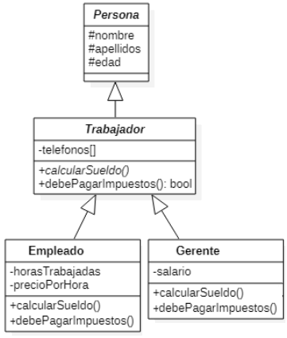
🖼️ Figura 3.5: Estructura d'herència de classes de l'exercici 313
Utilitzant les classes dels exercicis anteriors (per a una millor comprensió copia les classes anteriors a 314PersonaY.php, 314TrabajadorY.php, 314EmpleadoY.php i 314GerenteY.php):
Crea una classe Empresa (314EmpresaY.php) que, a més del nom i l'adreça, continga una propietat amb un array de Trabajadors, ja siguen Empleados o Gerentes.
Afig getters/setters per al nom i l'adreça.
Afig mètodes per a afegir i llistar els treballadors:
public function anyadirTrabajador(Trabajador $t)
public function listarTrabajadoresHtml() : string (utilitza Trabajador::toHtml(Persona $p)).
Afig un mètode per a obtindre el cost total en nòmines.
public function getCosteNominas(): float (recorre els treballadors i invoca el mètode calcularSueldo()).
Copia les classes de l'exercici anterior i modifica-les (per a una millor comprensió copia les classes anteriors a 315PersonaI.php, 315TrabajadorI.php, 315EmpleadoI.php i 315GerenteI.php):
a) Crea una interfície JSerializable (315jSerializable.php), de manera que oferisca els mètodes:
toJSON(): string → utilitza la funció json_encode(mixed). Tin en compte que, com que tenim les propietats dels objectes privades, has de recórrer les propietats i col·locar-les en un mapa. Per exemple:
Abans de res, crea un repositori privat en GitHub i puja el projecte actual de Videoclub. Una vegada creat, convida el teu professor al repositori com a col·laborador.
Recorda els passos que cal seguir per a crear un repositori:
Inicialitza en local el teu repositori de git, mitjançant git init.
Afig i puja els canvis al teu repositori, mitjançant git add . i després git commit -m 'Iniciar proyecto'.
Connecta el teu repositori amb GitHub i puja els canvis (mira les instruccions de GitHub: comandaments git remote i git push).
Abans de començar amb este projecte, crea una etiqueta mitjançant git tag Videoclub i puja els canvis a GitHub.
A partir d'este moment, a cada exercici hauràs de fer un commit amb el nom de l'exercici (per exemple, quan acabes l'Exercici 320 hauràs d'executar l'ordre git commit -m "ejercicio 320").
El projecte Videoclub següent està pensat des d'un punt de vista formatiu (no és un projecte real). Algunes de les decisions que es prenen no s'han d'usar (com fer echo dins de les classes) o provar el codi comparant el resultat en el navegador.
En els exercicis següents simularem un xicotet projecte d'un videoclub (basat en la proposta que fa el tutorial de desarrolloweb.com), que realitzarem mitjançant un desenvolupament incremental.
Cada classe ha d'anar en un fitxer php separat.
Per a facilitar-ne la implementació, es mostra l'estructura UML del model i un fragment de codi per a provar les classes.
🖼️ Figura 3.6: Estructura de la classe Soporte de l'exercici 321
Crea una classe per a emmagatzemar suports (Soporte.php). Esta classe serà la classe mare dels diferents suports amb què treballe el nostre videoclub (cintes de vídeo, videojocs, etc...):
Crea el constructor que inicialitze les seues propietats. Fixa't que la classe no té mètodes setters.
Definix una constant mitjançant una propietat privada i estàtica anomenada IVA amb un valor del 21%.
Crea un fitxer (inicio.php) per a usar les classes i copia el fragment següent:
Exemple
<?phpinclude_once("Soporte.php");$soporte1=newSoporte("Tenet",22,3);echo"<strong>".$soporte1->titulo."</strong>";echo"<br>Precio: ".$soporte1->getPrecio()." €";echo"<br>Precio con IVA: ".$soporte1->getPrecioConIVA()." €";echo"<br/><br/><br/>";$soporte1->muestraResumen();
🖼️ Figura 3.8: La classe CintaVideo hereta de la classe Soporte (exercici 322)
Crea la classe CintaVideo, que hereta de Soporte. Afig l'atribut duracion i sobreescriu tant el constructor com el mètode muestraResumen (des de CintaVideo hauràs de cridar el mètode muestraResumen del pare).
Afig a inicio.php el codi per a provar la classe:
Exemple
<?phpinclude_once"CintaVideo.php";$miCinta=newCintaVideo("Los cazafantasmas",23,3.5,107);echo"<strong>".$miCinta->titulo."</strong>";echo"<br>Precio: ".$miCinta->getPrecio()." €";echo"<br>Precio con IVA: ".$miCinta->getPrecioConIva()." €";echo"<br/><br/><br/>";$miCinta->muestraResumen();
🖼️ Figura 3.10: Les classes CintaVideo i Dvd hereten de la classe Soporte (exercici 323)
Crea la classe Dvd, que hereta de Soporte. Afig els atributs idiomas (que siga un array com "es", "en", ...) i formatoPantalla. A continuació sobreescriu tant el constructor com el mètode muestraResumen.
Afig a inicio.php el codi per a provar la classe:
Exemple
<?phpinclude_once"Dvd.php";$miDvd=newDvd("Origen",24,15,["es","en","fr"],"16:9");echo"<strong>".$miDvd->titulo."</strong>";echo"<br>Precio: ".$miDvd->getPrecio()." €";echo"<br>Precio con IVA: ".$miDvd->getPrecioConIva()." €";echo"<br/><br/><br/>";$miDvd->muestraResumen();
Crea la classe Juego, que hereta de Soporte. Afig els atributs consola, minNumJugadores i maxNumJugadores.
A continuació afig el mètode muestraJugadoresPosibles, que ha de mostrar Per a un jugador, Per a X jugadors o De X a Y jugadors depenent dels valors dels atributs creats.
Finalment, sobreescriu tant el constructor com el mètode muestraResumen.
Afig a inicio.php el codi per a provar la classe:
Exemple
<?phpinclude_once"Juego.php";$miJuego=newJuego("The Last of Us Part II",49.99,"PS4",1,1);echo"<strong>".$miJuego->titulo."</strong>";echo"<br>Precio: ".$miJuego->getPrecio()." €";echo"<br>Precio con IVA: ".$miJuego->getPrecioConIva()." €";echo"<br/><br/><br/>";$miJuego->muestraResumen();
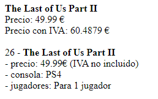
🖼️ Figura 3.12: Resultat de la pàgina inicio.php
Arribats a este punt, el nostre model és semblant al diagrama següent:
🖼️ Figura 3.13: Estructura d'herència per a l'exercici 324
🖼️ Figura 3.14: Estructura de la classe Cliente per a l'exercici 325
Crea la classe Cliente. El constructor rebrà el nombre, numero i maxAlquilerConcurrente, este últim opcional i amb 3 com a valor per defecte.
Després, afig getter/setter únicament a numero, i un getter a numSoportesAlquilados (este camp emmagatzemarà un comptador del total de lloguers que ha realitzat).
L'array de suports llogats $soportesAlquilados contindrà classes que hereten de Soporte.
Finalment, afig el mètode muestraResumen que mostre el nom i la quantitat de lloguers (grandària de l'array soportesAlquilados).
tieneAlquilado(Soporte $s): bool : recorre l'array de suports i comprova si hi està el suport llogat.
alquilar(Soporte $s): bool : ha de comprovar si el suport està llogat i si no ha superat el límit de lloguers. En llogar, incrementarà numSoportesAlquilados i emmagatzemarà el suport en l'array. Per a cada cas ha de mostrar un missatge que informe del que ha passat.
Continuem amb Cliente per a afegir les operacions:
devolver(int $numSoporte): bool : ha de comprovar que el suport estava llogat i actualitzar la quantitat de suports llogats. Per a cada cas ha de mostrar un missatge que informe del que ha passat.
listarAlquileres(): void : informa de quants lloguers té el client i els mostra.
Crea el fitxer inicio2.php amb el codi font següent per a provar la classe:
Exemple
<?phpinclude_once"CintaVideo.php";include_once"Dvd.php";include_once"Juego.php";include_once"Cliente.php";//instanciamos un par de objetos cliente$cliente1=newCliente("Bruce Wayne",23);$cliente2=newCliente("Clark Kent",33);echo"<br/>";//mostramos el número de cada cliente creado echo"<br>El identificador del cliente 1 es: ".$cliente1->getNumero();echo"<br>El identificador del cliente 2 es: ".$cliente2->getNumero();//instancio algunos soportes $soporte1=newCintaVideo("Los cazafantasmas",3.5,107);$soporte2=newJuego("The Last of Us Part II",49.99,"PS4",1,1);$soporte3=newDvd("Origen",15,["es","en","fr"],"16:9");$soporte4=newDvd("El Imperio Contraataca",3,["es","en"],"16:9");//alquilo algunos soportes$cliente1->alquilar($soporte1);$cliente1->alquilar($soporte2);$cliente1->alquilar($soporte3);//voy a intentar alquilar de nuevo un soporte que ya tiene alquilado$cliente1->alquilar($soporte1);//el cliente tiene 3 soportes en alquiler como máximo//este soporte no lo va a poder alquilar$cliente1->alquilar($soporte4);//este soporte no lo tiene alquilado$cliente1->devolver(4);//devuelvo un soporte que sí que tiene alquilado$cliente1->devolver(2);//alquilo otro soporte$cliente1->alquilar($soporte4);//listo los elementos alquilados$cliente1->listarAlquileres();//este cliente no tiene alquileres$cliente2->devolver(2);
Arribats a este punt, relacionarem els clients i els suports mitjançant la classe Videoclub. Així doncs, crea la classe que representa la imatge posterior, tenint en compte que:
productos és un array de Soporte.
socios és un array de Cliente.
Els mètodes públics d'incloure algun suport crearan la classe i cridaran el mètode privat incluirProducto, que és l'encarregat d'introduir-lo dins de l'array.
El model complet quedarà de la manera següent:
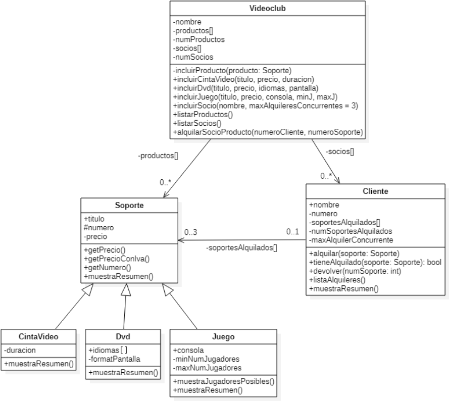
🖼️ Figura 3.16: Estructura d'herència de les classes implicades (exercici 328)
I per a provar el projecte, dins d'inicio3.php col·locarem:
Exemple
<?phpinclude_once"Videoclub.php";// No incluimos nada más$vc=newVideoclub("Videoclub CataDAW");//Incluir unos cuantos soportes de prueba $vc->incluirJuego("God of War",19.99,"PS4",1,1);$vc->incluirJuego("The Last of Us Part II",49.99,"PS4",1,1);$vc->incluirDvd("Torrente",4.5,["es"],"16:9");$vc->incluirDvd("Origen",4.5,["es","en","fr"],"16:9");$vc->incluirDvd("El Imperio Contraataca",3,["es,en"],"16:9");$vc->incluirCintaVideo("Los cazafantasmas",3.5,107);$vc->incluirCintaVideo("El nombre de la Rosa",1.5,140);//Listar los productos $vc->listarProductos();//Crear algunos socios $vc->incluirSocio("Elsa Pato");$vc->incluirSocio("Lola Mento",2);$vc->alquilarSocioProducto(1,1);$vc->alquilarSocioProducto(1,2);$vc->alquilarSocioProducto(1,3);//Alquilar otra vez el soporte 2 al socio 1. // no debe dejarme porque ya lo tiene alquilado $vc->alquilarSocioProducto(1,2);//Alquilar el soporte 6 al socio 1. //no se puede porque el socio 1 tiene 2 alquileres como máximo $vc->alquilarSocioProducto(1,6);//Listar los socios $vc->listarSocios();
Modifica les operacions de llogar, tant en Cliente (mètodes alquilar, devolver) com en Videoclub (mètodes incluirProducto, incluirCintaVideo, incluirDvd, incluirJuego, incluirSocio, listarProductos, listarSocios, alquilarSocioProducto) , per a donar suport a l'encadenament de mètodes.
Posteriorment, modifica el codi de prova per a utilitzar esta tècnica.
I per a provar el projecte, dins d'inicio4.php col·locarem:
Exemple
<?phpinclude_once"Videoclub.php";// No incluimos nada más$vc=newVideoclub("Videoclub CataDAW");echo"VIDEOCLUB 2.0:<br/><br/>";// Incluir soportes y crear socios mediante encadenamiento$vc->incluirJuego("God of War",19.99,"PS4",1,1)->incluirJuego("The Last of Us Part II",49.99,"PS4",1,1)->incluirDvd("Torrente",4.5,["es"],"16:9")->incluirDvd("Origen",4.5,["es","en","fr"],"16:9")->incluirDvd("El Imperio Contraataca",3,["es","en"],"16:9")->incluirCintaVideo("Los cazafantasmas",3.5,107)->incluirCintaVideo("El nombre de la Rosa",1.5,140)// Mostrar los productos registrados->listarProductos()// Registrar socios->incluirSocio("Elsa Pato")->incluirSocio("Lola Mento",2)// Alquileres del socio 1->alquilarSocioProducto(1,2)->alquilarSocioProducto(1,3)->alquilarSocioProducto(1,2)// Soporte ya alquilado// Alquileres del socio 2 (máximo 2)->alquilarSocioProducto(2,5)->alquilarSocioProducto(2,6)->alquilarSocioProducto(2,7)// Supera el límite// Comprobar cliente y soporte inexistentes->alquilarSocioProducto(99,1)->alquilarSocioProducto(1,99)// Mostrar socios->listarSocios();
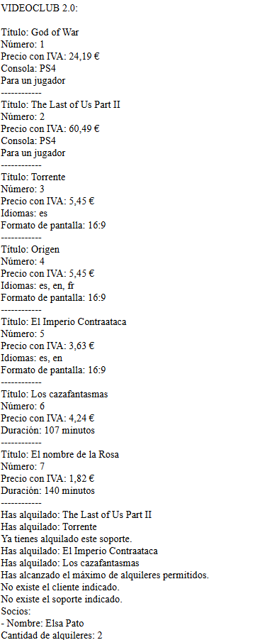
🖼️ Figura 3.18: Resultat de la pàgina inicio4.php
Git del projecte
Recorda, per a cada exercici, fer un commit amb el seu nom (per exemple, quan acabes este últim exercici hauràs d'executar l'ordre git commit -m "ejercicio 330").
Col·loca totes les classes/interfícies en Dwes\ProyectoVideoclub.
Cada classe ha de fer include_once dels recursos que empra.
Col·loca el fitxer o els fitxers de prova en l'arrel (sense espai de noms).
Des del fitxer de proves, utilitza use per a poder fer accessos sense qualificar:
<?phpinclude_once"Videoclub.php";useDwes\ProyectoVideoclub\Videoclub;$vc=newVideoclub("Videoclub CataDAW");// Incluir soportes de prueba y crear algunos socios con encadenamiento de métodos$vc->incluirJuego("God of War",19.99,"PS4",1,1)->incluirJuego("The Last of Us Part II",49.99,"PS4",1,1)->incluirDvd("Torrente",4.5,["es"],"16:9")->incluirDvd("Origen",4.5,["es","en","fr"],"16:9")->incluirDvd("El Imperio Contraataca",3,["es","en"],"16:9")->incluirCintaVideo("Los cazafantasmas",3.5,107)->incluirCintaVideo("El nombre de la Rosa",1.5,140)->listarProductos()// Listar productos después de añadirlos->incluirSocio(ElsaPato") ->incluirSocio("LolaMento", 2) ->alquilarSocioProducto(1, 2) ->alquilarSocioProducto(1, 3) ->alquilarSocioProducto(1, 2) // Intento de alquilar un soporte ya alquilado ->alquilarSocioProducto(2, 6) // Intento de alquilar más de lo permitido ->listarSocios(); // Listar socios después de realizar las operaciones de alquiler?>
A continuació crearem un conjunt d'excepcions d'aplicació. Estes excepcions són simples, no necessiten sobreescriure cap mètode. Així doncs, crea l'excepció d'aplicació VideoclubException en el namespaceDwes\ProyectoVideoclub\Util. Posteriorment crea els fills següents (han d'heretar de VideoclubException), cadascun en el seu propi fitxer:
En Cliente, modifica els mètodes alquilar i devolver, perquè facen ús de les noves excepcions (llançant-les quan siga necessari) i funcionen com a mètodes encadenats. Cal destacar que en estos mètodes no es capturen estes excepcions, només es llancen.
En Videoclub, modifica alquilarSocioProducto per a capturar totes les excepcions que ara llança Cliente i informar l'usuari en conseqüència.
Modificarem el projecte perquè el videoclub sàpia quins productes estan llogats i quins no:
En Soporte, crea una propietat pública el nom de la qual siga alquilado, que inicialment estarà a false. Quan es llogue, es posarà a true. En retornar-lo, la tornarem a posar a false.
En Videoclub, crea dues noves propietats numProductosAlquilados i numTotalAlquileres i els seus mètodes getters.
Crea un nou mètode en Videoclub anomenat alquilarSocioProductos(int numSocio, array numerosProductos), que ha de rebre un array amb els productes que cal llogar.
Abans de llogar-los, ha de comprovar que tots els suports estiguen disponibles, de manera que si un no ho està, no se'n llogue cap.
RA4. Desenvolupa aplicacions web incrustades en llenguatges de marques analitzant i incorporant funcionalitats segons especificacions.
a) S'han identificat els mecanismes disponibles per al manteniment de la informació que concernix un client web concret i se n'han assenyalat els avantatges.
b) S'han utilitzat sessions per a mantindre l'estat de les aplicacions web.
c) S'han utilitzat cookies per a emmagatzemar informació en el client web i per a recuperar-ne el contingut.
d) S'han identificat i caracteritzat els mecanismes disponibles per a l'autenticació d'usuaris.
e) S'han escrit aplicacions que integren mecanismes d'autenticació d'usuaris.
f) S'han fet adaptacions a aplicacions web existents com ara gestors de continguts o altres.
g) S'han utilitzat eines i entorns per a facilitar la programació, prova i depuració del codi.
PATH_INFO: ruta extra després de la petició (p. ex. si la URL és http://www.php.com/php/pathInfo.php/algo/cosa?foo=bar, aleshores $_SERVER['PATH_INFO'] serà /algo/cosa).
REMOTE_HOST: hostname que va fer la petició.
REMOTE_ADDR: IP del client.
AUTH_TYPE: tipus d'autenticació (p. ex. Basic).
REMOTE_USER: nom de l'usuari autenticat.
Apache crea una clau per a cada capçalera HTTP, en majúscules i substituint els guions per guions baixos:
HTTP_USER_AGENT: agent (navegador).
HTTP_REFERER: pàgina des de la qual es va fer la petició.
<?phpecho$_SERVER["HTTP_USER_AGENT"]."<br>";// Mozilla/5.0 (Windows NT 10.0; Win64; x64) AppleWebKit/537.36 (KHTML, like Gecko) Chrome/87.0.4280.88 Safari/537.36
A l'hora d'enviar un formulari, hem de tindre clar quan usar el mètode GET o el mètode POST:
GET: els paràmetres es passen en la URL i són visibles directament en la barra d'adreces del navegador.
<2048 caràcters (depenent del navegador i del servidor).
Només accepta caràcters ASCII (alfanumèrics, espais codificats, etc.).
Permet emmagatzemar l'adreça completa (guardar la URL en marcadors o en l'historial).
Idempotent: dues crides amb les mateixes dades sempre han de donar el mateix resultat.
El navegador pot guardar en memòria cau les crides (per a agilitzar les visites repetides a la mateixa URL).
Exemple
https://ejemplo.com/buscar?nombre=Alba&edad=2
POST: paràmetres ocults (encara que no són visibles en la URL, les dades no estan xifrades; és menys probable que els usuaris manipulen manualment les dades).
Sense límit de dades.
Permet dades binàries (imatges, fitxers, JSON, etc.).
No es poden guardar en memòria cau (els navegadors no emmagatzemen les sol·licituds POST en memòria cau ni les inclouen en l'historial; i així no es repetixen accidentalment).
No idempotent (generalment canvien l'estat del servidor, com ara actualitzar una base de dades).
Així doncs, per a recollir les dades accedirem a l'array depenent del mètode del formulari que ens ha invocat:
Per als apartats següents ens basarem en el formulari d'exemple següent:
<formaction="formulario.php"method="GET"><p><labelfor="nombre">Nombre del alumno:</label><inputtype="text"name="nombre"id="nombre"value=""/></p><p><inputtype="checkbox"name="modulos[]"id="modulosDWES"value="DWES"/><labelfor="modulosDWES">Desarrollo web en entorno servidor</label></p><p><inputtype="checkbox"name="modulos[]"id="modulosDWEC"value="DWEC"/><labelfor="modulosDWEC">Desarrollo web en entorno cliente</label></p><inputtype="submit"value="Enviar"name="enviar"/></form>
Pel que fa a la validació, sempre és convenient fer validació doble:
En el client mitjançant JS.
En el servidor, abans de cridar la lògica de negoci, és convenient tornar a validar les dades.
<?phpif(isset($_GET["parametro"])){$par=$_GET["parametro"];// comprobar si $par tiene el formato adecuado, su valor, etc...}
Llibreries de validació
Hi ha diverses llibreries que faciliten la validació dels formularis, com ara respect/validation o particle/validator. Quan estudiem Laravel aprofundirem en la validació de manera declarativa.
Un sticky form és un formulari que recorda els seus valors. Per a això, hem d'omplir els atributs value dels elements HTML amb la informació que contenien:
<?phpif(!empty($_POST['nombre'])&&!empty($_POST['modulos'])){// Aquí se incluye el código a ejecutar cuando los datos son correctos}else{/* Generamos el formulario: * El operador ?? verifica si el valor a la izquierda existe y no es null. * Si es así, se utiliza ese valor. Si no, se toma el valor a la derecha * como valor predeterminado. */$nombre=$_POST['nombre']??"";$modulos=$_POST['modulos']??[];?> <form action="<?phpecho$_SERVER['PHP_SELF'];?>" method="POST"> <p> <label for="nombre">Nombre alumno:</label> <input type="text" name="nombre" id="nombre" value="<?=$nombre?>" /> </p> <p> <input type="checkbox" name="modulos[]" id="modulosDWES" value="DWES"<?phpif(in_array("DWES",$modulos))echo'checked="checked"';?> /> <label for="modulosDWES">Desarrollo web en entorno servidor</label> </p> <p> <input type="checkbox" name="modulos[]" id="modulosDWEC" value="DWEC"<?phpif(in_array("DWEC",$modulos))echo'checked="checked"';?> /> <label for="modulosDWEC">Desarrollo web en entorno cliente</label> </p> <input type="submit" value="Enviar" name="enviar"/> </form><?php}// cierre del else?>
upload_tmp_dir: directori temporal. No cal configurar-lo, agafarà el predeterminat del sistema.
post_max_size: grandària màxima de les dades POST. Ha de ser major que upload_max_filesize.
max_file_uploads: nombre màxim de fitxers que es poden carregar alhora.
max_input_time: temps màxim emprat en la càrrega (GET/POST i upload → normalment es configura en 60).
memory_limit: 128M.
max_execution_time: temps d'execució d'un script (no té en compte l'upload).
Vegem de quina informació disposem en l'array $_FILES per a una imatge anomenada perfil.png pujada mitjançant el nostre formulari:
<form enctype="multipart/form-data" action="<?phpecho$_SERVER['PHP_SELF'];?>" method="POST"> Archivo: <input name="archivoEnviado" type="file" /> <br /> <input type="submit" name="btnSubir" value="Subir" /></form><?phpif(isset($_POST['btnSubir'])){echo$_FILES['archivoEnviado']['name'];echo"<br>";echo$_FILES['archivoEnviado']['tmp_name'];echo"<br>";echo$_FILES['archivoEnviado']['type'];echo"<br>";echo$_FILES['archivoEnviado']['size'];}else{echo"No se ha pulsado el botón de subir";}?>
🖼️ Figura 4.3: Paràmetres de $_FILES
Cada fitxer carregat en $_FILES té:
name: nom.
tmp_name: nom temporal assignat al fitxer pel servidor. Este nom és únic i permet identificar-lo dins de la carpeta de temporals.
size: grandària en bytes.
type: tipus MIME.
error: codi d'error de la pujada, en el nostre cas 0 o UPLOAD_ERR_OK, que indica que no s'ha produït cap error. Codis d'error de pujada de fitxers.
Per a carregar els fitxers, accedim a l'array $_FILES:
<?phpif(isset($_POST['btnSubir'])&&$_POST['btnSubir']=='Subir'){if(isset($_FILES['archivoEnviado'])&&is_uploaded_file($_FILES['archivoEnviado']['tmp_name'])){// subido con éxito$nombre=$_FILES['archivoEnviado']['name'];move_uploaded_file($_FILES['archivoEnviado']['tmp_name'],"./uploads/{$nombre}");echo"<p>Archivo $nombre subido con éxito</p>";}}else{echo"<p>Error al subir el archivo: ".$_FILES['archivoEnviado']['error']."</p>";}
Has de tindre en compte:
que la carpeta ./uploads estiga creada prèviament i amb permisos d'escriptura.
PHP té un límit en la grandària dels fitxers que es poden pujar, configurat en php.ini mitjançant les directives upload_max_filesize i post_max_size.
4.1. Filtratge amb PHP dels tipus de fitxers pujats amb HTML¶
Una vegada sabem com accedir a la informació dels fitxers pujats, ens centrarem en el filtratge dels tipus de fitxers acceptats. Limitar el tipus de fitxer pujat és recomanable per a evitar possibles problemes de seguretat.
Per a este exemple es comprovarà que la imatge pujada siga en efecte una imatge amb una de les extensions més comunes i que la seua grandària siga menor d'1 MB:
<?php$extensiones=['image/jpg','image/jpeg','image/png'];$max_tamanyo=1024*1024*8;if(in_array($_FILES['archivoEnviado']['type'],$extensiones)){echo'Es una imagen';if($_FILES['archivoEnviado']['size']<$max_tamanyo){echo'Pesa menos de 1 MB';}}?>
4.2. Escriptura d'imatges en una carpeta del servidor¶
Una vegada tinguem els nostres fitxers filtrats, procedirem a guardar-los de manera permanent en una carpeta del nostre servidor.
Les imatges o fitxers pujats mitjançant els formularis HTML s'emmagatzemen sempre en una carpeta temporal del sistema, per tant haurem de moure'ls per a poder guardar-los permanentment.
L'exemple següent seria un script allotjat en la carpeta arrel de la nostra web, p. ex. index.php:
<?php$ruta_indexphp=dirname(realpath(__FILE__));$ruta_fichero_origen=$_FILES['archivoEnviado']['tmp_name'];$ruta_nuevo_destino=$ruta_indexphp.'/uploads/'.$_FILES['imagen1']['name'];if(in_array($_FILES['archivoEnviado']['type'],$extensiones)){echo'Es una imagen';if($_FILES['archivoEnviado']['size']<$max_tamanyo){echo'Pesa menos de 1 MB';if(move_uploaded_file($ruta_fichero_origen,$ruta_nuevo_destino)){echo'Fichero guardado con éxito';}}}?>
El nom temporal del fitxer pujat, que es troba en la carpeta de temporals, és $ruta_fichero_origen.
La ruta completa de destinació del fitxer, que es compon d'una banda de la ruta arrel de l'script on estem treballant (estem programant en index.php), més el nom de la carpeta que s'ha creat per a guardar les imatges (/uploads) i, finalment, el nom definitiu que tindrà el fitxer (el nom original del fitxer).
4.3. Seguretat en l'escriptura d'imatges en una carpeta del servidor¶
En guardar els fitxers pujats pels usuaris en el nostre servidor, pot passar que no filtrem els fitxers introduïts, o que guardem fitxers susceptibles de provocar problemes de seguretat.
Per a evitar problemes d'este tipus el millor serà incloure en la carpeta on emmagatzemem els fitxers (p. ex. en la carpeta ./uploads) un xicotet script htaccess que evite l'execució de codi:
Amb estes dues línies en un fitxer amb extensió .htaccess evitarem una possible execució de codi per part d'usuaris malintencionats. Recorda que has d'incloure este fitxer en la mateixa carpeta on emmagatzemes els fitxers.
I ja està, amb això tindríem acabat un formulari per a pujar imatges amb PHP totalment funcional, amb comprovacions de seguretat per a evitar pujades de fitxers inesperades que puguen provocar problemes o atacs inesperats.
Mostrar les imatges guardades en la nostra carpeta d'emmagatzematge és senzill, només haurem d'incloure la ruta fins al fitxer en una etiqueta IMG d'HTML:
<a href="uploads/nombreImagen.jpg"> Descarga de la imagen </a>
Si volem incloure un enllaç de descàrrega per al fitxer emmagatzemat, en compte d'utilitzar una etiqueta IMG usarem una etiqueta d'enllaç amb la ruta al fitxer en l'atribut HREF:
<a href="uploads/nombreImagen.jpg"> Descarga de la imagen </a>
Este enllaç farà que l'usuari descarregue el fitxer en qüestió; no obstant això, si el fitxer és, per exemple, una imatge o un PDF, l'usuari, en compte d'aconseguir una descàrrega directa, en visualitzarà el contingut, i l'haurà de descarregar fent ús de l'opció descarregar del menú desplegable amb clic dret.
Evitar la visualització de fitxers és possible gràcies a HTML5 i als navegadors més moderns: Chrome, Firefox, Opera. Haurem d'incloure l'atribut download en l'etiqueta d'enllaç anterior; així, l'enllaç final per a una descàrrega forçada quedaria així:
<a href="uploads/nombreImagen.jpg" download="nombreImagen">Descarga la imagen</a>
Es retornen mitjançant la funció header(cadena). Mitjançant les capçaleres podem configurar el tipus de contingut, el temps d'expiració, redirigir el navegador, especificar errors HTTP, etc.
La capçalera ha de ser el primer que es retorna
El motiu és que tan prompte com un programa genera contingut HTML, el servidor genera automàticament la informació d'estat i els camps de capçalera, i a continuació envia el contingut generat. Si després el programa conté una instrucció header(), es produïx un error perquè les capçaleres ja s'han enviat (ni tan sols has de deixar una línia en blanc).
Es pot comprovar en les eines del desenvolupador dels navegadors web mitjançant Developer Tools > Network > (doble clic ) > Headers.
És molt comú configurar les capçaleres per a evitar consultes a la memòria cau o provocar-ne la renovació.
Exemple d'ús de header
<?phpheader("Expires: Sun, 31 Jan 2025 23:59:59 GMT");// tres horas$now=time();$horas3=gmstrftime("%a, %d %b %Y %H:%M:%S GMT",$now+60*60*3);// convierte en una cadena formateada en GMT (Tiempo Universal Coordinado)header("Expires: {$horas3}");// un año$now=time();$anyo1=gmstrftime("%a, %d %b %Y %H:%M:%S GMT",$now+365*86440);header("Expires: {$anyo1}");// se marca como expirado (fecha en el pasado)$pasado=gmstrftime("%a, %d %b %Y %H:%M:%S GMT");header("Expires: {$pasado}");// evitamos cache de navegador y/o proxyheader("Expires: Mon, 26 Jul 1997 05:00:00 GMT");// Fecha en el pasadoheader("Last-Modified: ".gmdate("D, d M Y H:i:s")." GMT");// Fecha de última modificaciónheader("Cache-Control: no-store, no-cache, must-revalidate");// Control estricto de la cachéheader("Cache-Control: post-check=0, pre-check=0",false);// Directiva adicional para control de cachéheader("Pragma: no-cache");// Compatibilidad con HTTP 1.0
Estes línies envien diverses capçaleres per a evitar completament que el navegador o el proxy emmagatzemen el recurs en memòria cau:
header("Expires: Mon, 26 Jul 1997 05:00:00 GMT");: Marca el recurs com a expirat fa molt de temps, la qual cosa força el navegador a sol·licitar sempre una còpia nova del recurs des del servidor.
header("Last-Modified: " . gmdate("D, d M Y H:i:s") . " GMT");: Envia la data i l'hora actuals com a última modificació del recurs. Això ajuda el navegador a saber quan va ser l'última vegada que es va actualitzar el contingut, la qual cosa pot influir en com gestiona la memòria cau.
header("Cache-Control: no-store, no-cache, must-revalidate");: Esta capçalera té tres parts importants:
no-store: Impedix que el navegador emmagatzeme el recurs en memòria cau.
no-cache: Obliga el navegador a verificar sempre amb el servidor si el recurs ha canviat abans d'usar una còpia emmagatzemada.
must-revalidate: El navegador ha de validar sempre el recurs amb el servidor abans d'usar una versió emmagatzemada.
header("Cache-Control: post-check=0, pre-check=0", false);: Esta capçalera és per a navegadors i proxies antics, i indica que no s'ha de fer cap verificació de memòria cau abans o després d'emmagatzemar el recurs.
header("Pragma: no-cache");: Esta és una directiva utilitzada en HTTP 1.0 (anterior a HTTP/1.1) que també impedix la memòria cau. S'inclou per compatibilitat amb navegadors antics.
HTTP és un protocol stateless (sense estat). Per això, se simula l'estat mitjançant l'ús de cookies, tokens o sessions. L'estat és necessari per a processos com ara el carret de la compra, operacions associades a un usuari, etc. El mecanisme de PHP per a gestionar la sessió empra cookies de manera interna. Les cookies s'emmagatzemen en el navegador, i la sessió en el servidor web.
Les cookies s'emmagatzemen en l'array global $_COOKIE. El que col·loquem dins d'este array es guardarà en el client
Acceptar cookies
Cal tindre present que el client pot no voler emmagatzemar-les.
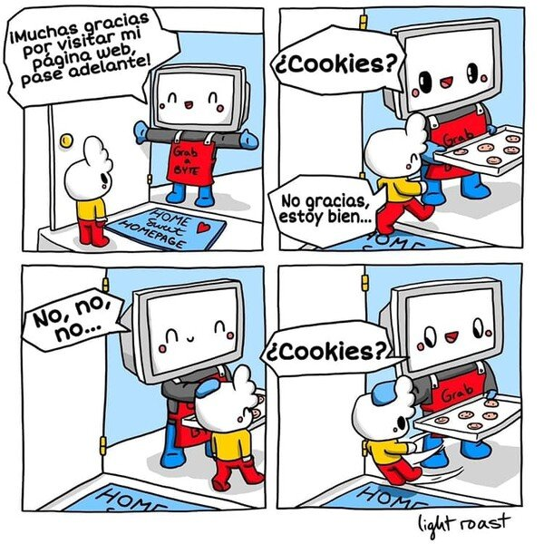
🖼️ Figura 4.4: Tira còmica que representa l'obligatorietat d'acceptar les cookies en algunes pàgines web
La majoria de navegadors moderns tenen una limitació de 180-200 cookies per domini (amb una grandària màxima de 4KB per cookie) i de 4000-8000 en total en el navegador.
En PHP, per a crear una cookie s'utilitza la funció setcookie:
Cal destacar que el nom no pot contindre espais ni el caràcter ;.
Exemple
Per exemple, mitjançant cookies podem comprovar la quantitat de visites diferents que fa un usuari:
<?php$accesosPagina=0;if(isset($_COOKIE['accesos'])){$accesosPagina=$_COOKIE['accesos'];// recuperamos una cookiesetcookie('accesos',++$accesosPagina);// le asignamos un valor}?>
Inspeccionar les cookies
Si volem veure què contenen les cookies que tenim emmagatzemades en el navegador, se'n pot comprovar el valor en Dev Tools > Storage
🖼️ Figura 4.5: Exemple per a mostrar en cookiesEj.html
Creem el fitxer cookiesEjTmp.php, en el qual es comprova si s'ha enviat el paràmetre idioma; si és així, crea una cookie de nom idioma, valor $_GET['idioma'], temps 1 hora i que treballa des de l'arrel \.
A més, s'ha afegit una capçalera que redirigirà a la pàgina cookiesEj.php:
La sessió afig la gestió de l'estat a HTTP, i en este cas emmagatzema la informació en el servidor. Cada visitant té un ID de sessió únic, que per defecte s'emmagatzema en una cookie anomenada PHPSESSID. Si el client no té les cookies actives, l'ID es propaga en cada URL dins del mateix domini. Cada sessió té associat un magatzem de dades mitjançant l'array global $_SESSION, en el qual podem emmagatzemar i recuperar informació.
La sessió comença en executar un script PHP. Es genera un nou ID i es carreguen les dades del magatzem:
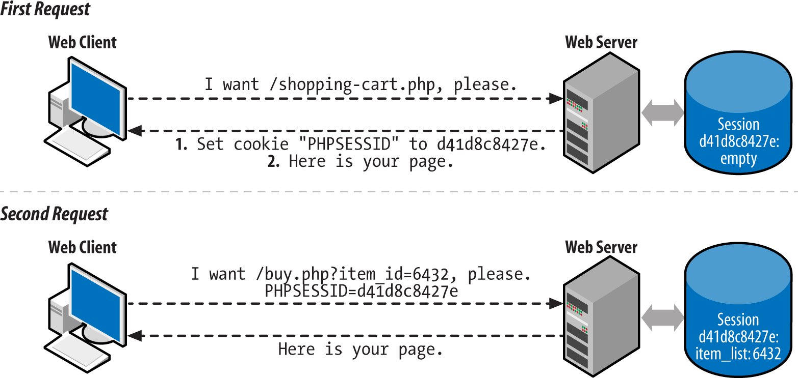
🖼️ Figura 4.7: Resultat d'una segona petició al servidor amb sessions
El treball amb sessions té tres parts:
Creació o obertura de la sessió:
Quan alguna pàgina crea una sessió utilitzant la capçalera session_start();(recorda que les capçaleres han d'anar just després de <?php), el servidor associa al navegador de l'usuari un identificador d'usuari únic. L'identificador es guarda en l'usuari en forma de cookie o, si el navegador de l'usuari no permet la creació de cookies, afegint l'identificador en l'adreça de la pàgina.
Utilització de la sessió:
Si ja s'ha creat la sessió, les pàgines sol·licitades pel mateix navegador poden guardar i recuperar informació en el servidor, informació que s'associa a l'identificador d'usuari, per la qual cosa no és accessible a altres usuaris. La informació es conserva fins que l'usuari o el servidor destruïxen la sessió.
Destrucció o tancament de la sessió:
Tant l'usuari com el servidor poden tancar la sessió. L'usuari pot destruir la sessió tancant el navegador. El servidor pot destruir la sessió quan alguna pàgina utilitze la funció session_destroy(); o al cap d'un temps determinat (definit mitjançant la funció session_set_cookie_params()).
Les operacions que podem fer amb la sessió són:
<?phpsession_start();// carga la sesiónsession_id()// devuelve el id$_SESSION[clave]=valor;// inserciónsession_destroy();// destruye la sesiónunset($_SESSION[clave]);// borrado
Utilització de la sessió
Vegem amb un exemple com podem inserir dades en la sessió en una pàgina per a accedir després a eixes dades en una altra pàgina.
<?phpsession_start();// inicializamos$_SESSION["ies"]="IES Mestre Ramon Esteve";// asignación$instituto=$_SESSION["ies"];// recuperaciónecho"Estamos en el $instituto";?><br /><a href="sesion2.php">Y luego</a>
<?phpsession_start();$instituto=$_SESSION["ies"];// recuperaciónecho"Otra vez, en el $instituto";?>
Configurar la sessió en php.ini
Les propietats següents de php.ini permeten configurar alguns aspectes de la sessió:
session.save_handler: controlador que gestiona com s'emmagatzema (valor files).
session.save_path: ruta on s'emmagatzemen els fitxers amb les dades (si tenim un clúster, podríem usar /mnt/sessions en tots els servidors de manera que apunten a una carpeta compartida).
session.name: nom de la sessió (PHSESSID).
session.auto_start: Es pot fer que es carregue automàticament amb cada script. Per defecte està deshabilitat.
session.cookie_lifetime: temps de vida per defecte.
Més informació en la documentació oficial.
Cookie VS session
Les sessions no s'han de confondre amb les cookies. Les cookies són un mètode que permet guardar informació en l'ordinador del client per a recuperar-la en el futur, mentre que en les sessions la informació es manté en el servidor fins que es tanca la sessió (per intervenció de l'usuari o per temps). En el manual de PHP s'oferix un capítol dedicat a les sessions.
Exemple
Heus ací un exemple gràfic d'utilització de sessions. Programa de dues pàgines que mostra gràficament els vots recollits per dues opcions.
La primera pàgina conté un formulari amb tres botons de tipus submit amb el mateix atribut name.
Dos botons permeten votar una o l'altra opció.
El tercer botó posa a zero els comptadors de vots.
La segona pàgina rep la dada, modifica la variable de sessió que conté el nombre de vots de l'opció triada (o de totes dues) i redirigix a la primera pàgina.
Els dos números es guarden en dues variables de sessió. Si les variables de sessió no estan definides, se'ls donarà el valor 0.
Les franges corresponents als vots s'allarguen de 10px en 10px i no tenen límit de grandària.
<?php// Accedemos a la sesiónsession_name("sesion1");session_start();// Si algún contador no está guardado en la sesión, ponemos ambos a ceroif(!isset($_SESSION["a"])||!isset($_SESSION["b"])){$_SESSION["a"]=$_SESSION["b"]=0;}?><!-- ... --><body><h2>Votar una opción</h2><form action="ps2.php" method="get"> <table> <tr> <td style="vertical-align: top;"> <button type="submit" name="accion" value="a" style="font-size: 60px; line-height: 50px; color: hwb(200 0% 0%);"> ✔ </button> </td> <td><?php// Dibujamos la primera barraprint" <svg width=\"$_SESSION[a]\" height=\"50\">\n";print" <line x1=\"0\" y1=\"25\" x2=\"$_SESSION[a]\" y2=\"25\" stroke=\"hwb(200 0% 0%)\" stroke-width=\"50\" />\n";print" </svg>\n";?> </td> </tr> <tr> <td> <button type="submit" name="accion" value="b" style="font-size: 60px; line-height: 50px; color: hwb(35 0% 0%)">✔ </button> </td><?php// Dibujamos la segunda barraprint" <td>\n";print" <svg width=\"$_SESSION[b]\" height=\"50\">\n";print" <line x1=\"0\" y1=\"25\" x2=\"$_SESSION[b]\" y2=\"25\" stroke=\"hwb(35 0% 0%)\" stroke-width=\"50\" />\n";print" </svg>\n";print" </td>\n";?> </tr> </table> <p> <button type="submit" name="accion" value="cero">Poner a cero</button> </p></form></body></html>
<?phpsession_name("sesion1");session_start();// Si alguno de los números de votos no está guardado en la sesión, redirigimos a la primera páginaif(!isset($_SESSION["a"])||!isset($_SESSION["b"])){header("Location:ps1.php");exit;}$accion=$_GET['accion'];// Dependiendo de la acción recibida, modificamos el número correspondienteif($accion=="a"){$_SESSION["a"]+=10;}elseif($accion=="b"){$_SESSION["b"]+=10;}elseif($accion=="cero"){$_SESSION["a"]=$_SESSION["b"]=0;}// Volvemos al formularioheader("Location:ps1.php");
Una sessió establix una relació anònima amb un usuari particular, de manera que podem saber si és el mateix usuari entre dues peticions diferents. Si preparem un sistema de login, podrem saber qui utilitza la nostra aplicació.
Per a això, preparem un senzill sistema d'autenticació:
Mostrar el formulari login/password.
Comprovar les dades enviades.
Afegir el login a la sessió.
Comprovar el login en la sessió per a fer tasques específiques de l'usuari.
Eliminar el login de la sessió quan l'usuari la tanca.
Vegem en codi cada pas del procés. Comencem amb el fitxer index.php:
En fer submit ens porta a login.php, que fa de controlador:
<?php// Comprobamos si ya se ha enviado el formularioif(isset($_POST['enviar'])){$usuario=$_POST['inputUsuario'];$password=$_POST['inputPassword'];// validamos que recibimos ambos parámetrosif(empty($usuario)||empty($password)){$error="Debes introducir un usuario y contraseña";include"index.php";}else{if($usuario=="admin"&&$password=="admin"){// almacenamos el usuario en la sesiónsession_start();$_SESSION['usuario']=$usuario;// cargamos la página principalinclude"main.php";}else{// Si las credenciales no son válidas, se vuelven a pedir$error="Usuario o contraseña no válidos!";include"index.php";}}}
Depenent de l'usuari que haja iniciat la sessió, anirem a una vista o a una altra. Per exemple, en main.php tindríem:
<?php// Recuperamos la información de la sesiónif(!isset($_SESSION)){session_start();}// Y comprobamos que el usuario se haya autentificadoif(!isset($_SESSION['usuario'])){die("Error - debe <a href='index.php'>identificarse</a>.<br />");}?><!DOCTYPE html><html lang="es"><head> <meta charset="UTF-8"> <meta name="viewport" content="width=device-width, initial-scale=1.0"> <title>Listado de productos</title></head><body> <h1>Bienvenido <?=$_SESSION['usuario']?></h1> <p>Pulse <a href="logout.php">aquí</a> para salir</p> <p>Volver al <a href="main.php">inicio</a></p> <h2>Listado de productos</h2> <ul> <li>Producto 1</li> <li>Producto 2</li> <li>Producto 3</li> </ul></body></html>
Finalment, necessitem l'opció de tancar la sessió, que col·loquem en logout.php:
<?php// Recuperamos la información de la sesiónsession_start();// Y la destruimossession_destroy();header("Location: index.php");?>
!!!note "Autenticació en producció
En l'actualitat l'autenticació d'usuaris no es fa gestionant la sessió directament, sinó mitjançant algun framekwork que abstrau tot el procés o amb la integració de mecanismes d'autenticació de tipus OAuth, com estudiarem en el segon bloc del nostre temari, Laravel.
Exercicis a realitzar
Exercici 410
Exercici 411
Exercici 412
Exercici 413
Exercici 414
Exercici 415
Realitzar, a més, l'activitat projecte Videoclub 3.0
En esta pàgina treballes 14 criteris d'avaluació (RA3, RA4, RA5, RA8)
RA3.f S'han emprat mètodes per a recuperar la informació introduïda en el formulari. (Variables de servidor i peticions, Formularis, validació i fitxers)
RA8.a S'han identificat les diferències entre l'execució de codi en el servidor i en el client web. (Variables de servidor i peticions)
RA3.e S'han utilitzat formularis web per a interactuar amb l'usuari del navegador web. (Formularis, validació i fitxers)
RA8.e S'han utilitzat estes tecnologies i frameworks, per a generar pàgines web que incloguen verificació de formularis. (Formularis, validació i fitxers)
RA4.a S'han identificat els mecanismes disponibles per al manteniment de la informació que concernix un client web concret i s'han assenyalat els seus avantatges. (Cookies i sessió)
RA4.b S'han utilitzat mecanismes per a mantenir l'estat de les aplicacions web. (Cookies i sessió, Videoclub 3.0)
RA4.c S'han utilitzat mecanismes per a emmagatzemar informació en el client web i per a recuperar el seu contingut. (Cookies i sessió)
RA4.d S'han identificat i caracteritzat els mecanismes disponibles per a l'autenticació d'usuaris. (Autenticació amb controlador i vistes)
RA4.e S'han escrit aplicacions que integren mecanismes d'autenticació d'usuaris. (Autenticació amb controlador i vistes, Videoclub 3.0)
RA5.a S'han identificat els avantatges de separar la lògica de negoci dels aspectes de presentació de l'aplicació. (Autenticació amb controlador i vistes)
RA5.f S'han escrit aplicacions web amb manteniment d'estat i separació de la lògica de negoci. (Autenticació amb controlador i vistes, Videoclub 3.0)
RA5.c S'han utilitzat objectes i controls en el servidor per a generar l'aspecte visual de l'aplicació web en el client. (Videoclub 3.0)
RA5.d S'han utilitzat formularis generats de manera dinàmica per a respondre als esdeveniments de l'aplicació web. (Videoclub 3.0)
RA8.d S'han utilitzat estes tecnologies i frameworks per a generar pàgines web que incloguen interacció amb l'usuari. (Videoclub 3.0)
403validacion.php: a partir del formulari anterior, introduïx validacions en HTML mitjançant l'atribut required dels camps (usa també els tipus adequats per a cada camp), i comprova els tipus de les dades i que complixen els valors esperats (per exemple, en els checkboxes, que els valors recollits formen part de tots els possibles).
Prova a passar-li dades errònies via URL i comprova'n el comportament.
404subida.html i 404subida.php: crea un formulari que permeta pujar un fitxer al servidor. A més del fitxer, ha de demanar en el mateix formulari dos camps numèrics que sol·liciten l'amplària i l'altura. Comprova que tant el fitxer com les dades arriben correctament.
405subidaImagen.php: modifica l'exercici anterior perquè únicament permeta pujar imatges (comprova la propietat type del fitxer pujat). Si l'usuari selecciona un altre tipus de fitxer, se l'ha d'informar de l'error i permetre-li que pugen un nou fitxer.
En el cas de pujar el tipus correcte, visualitza la imatge amb l'amplària i l'altura rebudes com a paràmetre.
406contadorVisitas.php: Mitjançant l'ús de cookies, informa l'usuari de si és la seua primera visita o, si no ho és, mostra'n el valor (valor d'un comptador). A més, has de permetre que l'usuari reinicialitze el seu comptador de visites.
407fondo.php: Mitjançant l'ús de cookies, crea una pàgina amb un desplegable amb diversos colors, de manera que l'usuari puga canviar el color de fons de la pàgina (atribut bgcolor). En tancar la pàgina, esta ha de recordar, almenys durant 24h, el color triat, i la pròxima vegada que es carregue la pàgina, ho ha de fer amb l'últim color seleccionat.
408fondoSesion1.php: Modifica l'exercici anterior per a emmagatzemar el color de fons en la sessió i no emprar cookies. A més, ha de contindre un enllaç al fitxer següent.
408fondoSesion2.php: Ha de mostrar el color i donar la possibilitat de:
tornar a la pàgina anterior mitjançant un enllaç
i, mitjançant un altre enllaç, buidar la sessió i tornar a la pàgina anterior.
Fent ús de la sessió, dividirem el formulari de l'exercici 402formulario.php en 2 subformularis:
409formulario1.php envia les dades (nom i cognoms, correu electrònic, url i sexe) a 409formulario2.php.
409formulario2.php llig les dades i les posa en la sessió. A continuació, mostra la resta de camps del formulari que cal omplir (convivents, aficions i menú). Envia estes dades a 409formulario3.php.
409formulario3.php recull les dades enviades en el pas anterior i, juntament amb les que ja estaven en la sessió, es mostren totes les dades en una taula/llista desordenada.
411login.php: fa de controlador, per la qual cosa ha de comprovar les dades rebudes (només permet l'entrada de usuario / usuario) i, si tot és correcte, cedir el control a la vista de l'exercici següent. No conté codi HTML.
414series.php: Afig una nova vista semblant a 412peliculas.php que mostre un "Llistat de sèries" amb una llista desordenada amb tres sèries. Tant 412pelicuas.php com la vista acabada de crear han de tindre un xicotet menú (senzill, mitjançant enllaços) que permeta passar d'un llistat a l'altre. Comprova que, si s'accedix directament a qualsevol de les vistes via URL del navegador sense tindre un usuari identificat, no es mostra el llistat.
Per al Videoclub, crearem una pàgina index.php amb un formulari que continga un formulari de login/password. Es comprovaran les dades en login.php. Els possibles usuaris són admin/admin o usuario/usuario
Si l'usuari és correcte, en main.php mostra un missatge de benvinguda amb el nom de l'usuari, juntament amb un enllaç per a tancar la sessió, que el portaria de nou al login.
Si l'usuari és incorrecte, ha de tornar a carregar el formulari i informar l'usuari que l'accés és incorrecte.
Si l'usuari és administrador, es carregaran en la sessió les dades de suports i clients del videoclub que teníem en les nostres proves. En la unitat següent les obtindrem de la base de dades. En mainAdmin.php, a més de la benvinguda, ha de mostrar:
Modificarem la classe Cliente per a emmagatzemar el user i la password de cada client. Després de codificar els canvis, modifica el llistat de clients de mainAdmin.php per a afegir l'usuari al llistat.
Si l'usuari que accedix no és administrador i coincidix amb algun dels clients que tenim carregats després del login, ha de carregar mainCliente.php, on es mostrarà un llistat dels lloguers del client. Per a això, modificarem la classe Cliente per a oferir el mètode getAlquileres() : array, que cridarem i després recorrerem per a mostrar el llistat sol·licitat.
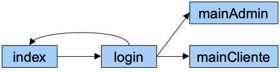
🖼️ Figura 4.9: Lògica de l'estructura de pàgines de l'exercici 423
A més de mostrar el llistat de clients, oferirem l'opció de donar d'alta un nou client en formCreateCliente.php. Les dades s'enviaran mitjançant POST a createCliente.php, que les introduirà en la sessió. Una vegada creat el client, ha de tornar a carregar mainAdmin.php, on es podrà veure el client inserit. Si hi ha alguna dada incorrecta, ha de tornar a carregar el formulari d'alta.
Crea en formUpdateCliente.php un formulari que permeta editar les dades d'un client. Has de recollir les dades en updateCliente.php. Les dades del client s'han de poder modificar des de la mateixa pàgina d'un client, així com des del llistat de l'administrador.
Des del llistat de clients de l'administrador has d'oferir la possibilitat d'esborrar un client. En el navegador, abans de redirigir al servidor, l'usuari ha de confirmar mitjançant JS que realment vol eliminar el client. Finalment, en removeCliente.php elimina el client de la sessió. Una vegada eliminat, ha de tornar al llistat de clients.
🖼️ Figura 4.10: Lògica de l'estructura de pàgines de l'exercici 426
Fent una ullada al mòdul de primer curs Bases de Dades sabem que una base de dades té molts camps amb els seus noms i valors; però, a més, sabem que la base de dades ha de tindre un nom. Per tant, tindríem l'estructura següent per a una base de dades:
Utilitzarem el llenguatge de consulta estructurada (Structured Query Language) SQL per a fer les consultes a les nostres bases de dades i per a mostrar el contingut en les diferents interfícies web que creem al llarg de la unitat. Si vols saber-ne més detalls, visita Wiki SQL.
Exemple d'una sentència SQL en què seleccionem totes les files i columnes de la nostra taula anomenada pais:
SELECT*FROMpais
Estes sentències es poden invocar des de la consola de comandaments mitjançant l'intèrpret mysql (instal·lat prèviament en el sistema) o a través de l'eina phpMyAdmin.
Les sentències SQL també les podem usar dins del nostre codi PHP, de manera que, quan es carregue la nostra interfície web, llance una sentència SQL per a mostrar les dades que vulguem.
<?php// Listado de clientes, ordenados por DNI de manera ASCendente$clientesOrdenadosPorDNI="SELECT * FROM `pasajero` ORDER BY `dni` ASC";?>
Este programari funciona sobre Apache i PHP i és una interfície web per a gestionar les bases de dades que tinguem disponibles en el nostre servidor local. Molts hostings oferixen esta eina per defecte per a poder gestionar les BD que tinguem configurades en el nostre compte.
Quan seleccionem una base de dades de la llista, el sistema ens mostra diverses pestanyes amb les quals interactuar amb la base de dades en qüestió:
Estructura : podem veure les diferents taules que formen la nostra base de dades.
SQL : si volem injectar codi SQL perquè el sistema l'interprete.
Buscar : per a buscar per termes, en la nostra base de dades, aplicant diferents filtres de cerca.
Generar consulta : semblant a SQL però de manera gràfica, sense haver de saber res del llenguatge.
Exportar i importar : com el seu nom indica, per a fer qualsevol de les 2 operacions sobre la base de dades.
Operaciones : diferents opcions avançades per a fer en la nostra base de dades, de les quals destacarem l'opció Cotejamiento, on podrem canviar la col·lació de la nostra taula.
Compte amb això!
Perquè podem eliminar dades sense voler, ja que en canviar la col·lació podem suprimir caràcters no admesos per la nova col·lació.
No aprofundirem en la resta d'opcions, però, en la pestanya Más, hi ha l'opció Diseñador per a poder editar les relacions entre taules d'una manera gràfica (fent clic i arrossegant), que veurem més avant.
PHP fa ús d'esta extensió millorada per a poder comunicar-se amb les bases de dades, ja siguen MySQL (4.1 o superior) o MariaDB.
Per a qualsevol consulta que vulguem fer a una base de dades necessitarem fer ús de l'extensió mysqli().
Vegem com connectar-nos amb una base de dades a través del codi PHP:
<?php// ▒▒ pruebas.php ▒▒// "SERVIDOR", "USUARIO", "CONTRASEÑA", "BASE DE DATOS"$conexion=mysqli_connect("d939ebf6a741","tuUsuario","tuContraseña","tuBaseDeDatos");// COMPROBAMOS LA CONEXIÓNif(mysqli_connect_errno()){echo"Failed to connect to MySQL: ".mysqli_connect_error();exit();}echo"<h1>Bienvenid@ a MySQL !!</h1>";?>
servidor: el servidor on es troba la base de dades que volem usar sol ser localhost.
servidor en docker
En el nostre cas, com que utilitzem Docker, serà el nom de la imatge mysql:8.0 que apareix en deixar el ratolí damunt en Visual Studio Code.
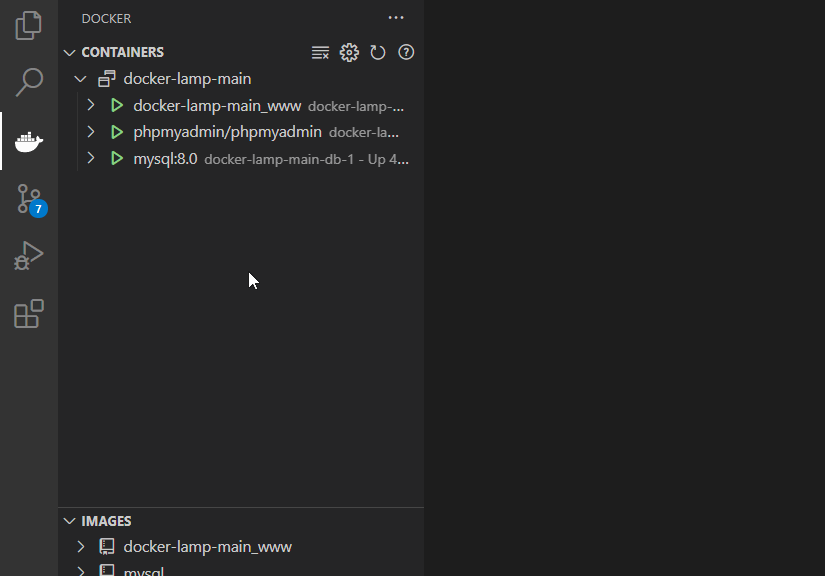
🖼️ Figura 5.4: El nom del servidor, en Docker, serà l'ID o codi del contenidor del servidor MySql</figcaption
usuarioDB: l'usuari de la base de dades.
passwordDB: la contrasenya per a eixe usuari de la base de dades.
baseDeDatos: nom de la base de dades que vulguem usar.
Si tot ha anat bé, haureu vist un missatge que diu Bienvenid@ a MySQL !!
Ara que ja sabem com connectar-nos a una base de dades allotjada en el nostre servidor, el que necessitem saber és com recuperar dades emmagatzemades en la base de dades.
Durant la instal·lació de la imatge de Docker, s'ha creat una taula anomenada Pruebas que conté diversos registres de diferents persones.
Recuperarem eixes dades per a veure de quina manera es fa amb PHP.
<?php// ▒▒ pruebas.php ▒▒$conexion=mysqli_connect("d939ebf6a741","usuario","1234","pruebadb");// COMPROBAMOS LA CONEXIÓNif(mysqli_connect_errno()){echo"Failed to connect to MySQL: ".mysqli_connect_error();exit();}// CONSULTA A LA BASE DE DATOS$consulta="SELECT * FROM `productos`";$listaproductos=mysqli_query($conexion,$consulta);// COMPROBAMOS SI EL SERVIDOR NOS HA DEVUELTO RESULTADOSif($listaproductos){// RECORREMOS CADA RESULTADO QUE NOS DEVUELVE EL SERVIDORforeach($listaproductosas$elemento){echo"$elemento[id] - $elemento[descripcion] - $elemento[stock] <br> ";}}?>
Si tot ha anat bé, per pantalla veuràs el llistat següent:
De la mateixa manera que hem vist amb mysqli, PHP Data Objects (o PDO) és un driver de PHP que s'utilitza per a treballar amb la base de dades mitjançant una interfície d'objectes. Hui dia, és el que més s'utilitza per a gestionar informació des d'una base de dades, ja siga relacional o no relacional.
De la mateixa manera que passava amb els objectes nadius en PHP, en la interfície de MySQL el moment de la connexió és diferent:
Recorda canviar el valor de host de localhost per l'ID del contenidor mysql:8.0.
A més, amb PDO podem usar les excepcions amb try/catch per a gestionar els errors que es produïsquen en la nostra aplicació. Per a això, com fèiem abans, hem d'encapsular el codi entre blocs try / catch:
<?php$host="localhost";$db="prueba";// dsn (Nombre del Origen de Datos, DSN)$dsn="mysql: host=$host; dbname=$db";$usuario="dwes";$contrasenya="dwes";try{$con=newPDO($dsn,$usuario,$contrasenya);$con->setAttribute(PDO::ATTR_ERRMODE,PDO::ERRMODE_EXCEPTION);}catch(PDOException$e){echo'Fallo en la conexión: '.$e->getMessage();}
Els passos que hem seguit han sigut:
1r ) Creem la connexió amb la base de dades a través del constructor PDO passant-li la informació de la base de dades.
2n ) Establim els paràmetres per a gestionar les excepcions; en este cas hem utilitzat:
PDO::ATTR_ERRMODE, que indica a PHP que volem un informe d'errors.
PDO::ERRMODE_EXCEPTION: amb este atribut obliguem a llançar excepcions, i a més és l'opció més humana i llegible que hi ha a l'hora de controlar errors.
3r ) Davant de qualsevol error que es llance a través de PDO, el sistema llançarà una PDOException.
De la mateixa manera que creàvem el nostre fitxer de funcions funciones-php i hi allotjàvem totes les funcions que s'usen de manera global en l'aplicació, podem establir un fitxer de constants on definim els paràmetres de connexió amb la base de dades.
Es tracta de sentències que s'establixen com si foren plantilles de l'SQL que llançarem, i que accepten paràmetres que s'establixen després de la declaració de la sentència preparada.
Les sentències preparades eviten la injecció d'SQL (SQL Injection) i milloren el rendiment de les nostres aplicacions o pàgines web.
<?php$sql="INSERT INTO productos VALUES (?, ?, ?)";
Cada interrogant és un paràmetre que establirem unes quantes línies més avall.
Una vegada tenim la plantilla de la nostra consulta, hem de continuar amb la preparació juntament amb 3 mètodes més de PHP per a executar-la completament:
1r ) prepare: prepara la sentència abans que s'execute.
2n ) bind: el tipus d'unió (bind) de dada. Pot ser mitjançant ? o :parametro .
3r ) execute: s'executa la consulta unint la plantilla amb les variables o paràmetres que hem establit.
Exemple de paràmetres
<?php// Borrado con parámetrosinclude"config/database.inc.php";$conexion=null;try{$cantidad=$_GET["cantidad"];$conexion=newPDO(DSN,USUARIO,PASSWORD);$conexion->setAttribute(PDO::ATTR_ERRMODE,PDO::ERRMODE_EXCEPTION);$sql="DELETE FROM productos WHERE stock = ?";$sentencia=$conexion->prepare($sql);$isOk=$sentencia->execute([$cantidad]);$cantidadAfectada=$sentencia->rowCount();echo$cantidadAfectada." fila(s) afectada(s).";}catch(PDOException$e){echo$e->getMessage();}$conexion=null;
Exemple de bindParam
Molt semblant a utilitzar paràmetres, però esta vegada la variable està dins de la sentència SQL; en este cas l'hem anomenada :cant
<?phpinclude"config/database.inc.php";$conexion=null;try{$cantidad=$_GET["cantidad"]??0;$conexion=newPDO(DSN,USUARIO,PASSWORD);$conexion->setAttribute(PDO::ATTR_ERRMODE,PDO::ERRMODE_EXCEPTION);$sql="DELETE FROM productos WHERE stock = :cant";$sentencia=$conexion->prepare($sql);$sentencia->bindParam(":cant",$cantidad);$isOk=$sentencia->execute();$cantidadAfectada=$sentencia->rowCount();echo$cantidadAfectada." fila(s) afectada(s).";}catch(PDOException$e){echo$e->getMessage();}$conexion=null;
Utilitzarem bindValue() quan hàgem d'inserir dades només una vegada. En canvi, haurem d'usar bindParam() quan hàgem de passar dades múltiples, com ara un array.
<?php// ▒▒▒ FALTA CONEXIÓN A BD ▒▒▒▒// se asignan nombre a los parametros$sql="DELETE FROM productos WHERE stock = :cant";$sentencia=$conexion->prepare($sql);// bindValue enlaza por VALOR$cantidad=0;$sentencia->bindValue(":cant",$cantidad);$cantidad=1;// se eliminan con cant = 0$isOk=$sentencia->execute();// bindParam enlaza por REFERENCIA$cantidad=0;$sentencia->bindParam(":cant",$cantidad);$cantidad=1;// se eliminan con cant = 1$isOk=$sentencia->execute();
A l'hora d'inserir registres en una base de dades, hem de tindre en compte que en la taula hi pot haver valors autoincrementats. Per a tindre-ho en compte, el que hem de fer és deixar buit eixe camp autoincrementat; però, a l'hora de fer la connexió, l'hem de recuperar amb el mètode lastInsertId().
<?phpinclude"config/database.inc.php";try{$descripcion=$_GET["descripcion"]??"PRODUCTO X";$stock=$_GET["stock"]??0;$conexion=null;$conexion=newPDO(DSN,USUARIO,PASSWORD);$conexion->setAttribute(PDO::ATTR_ERRMODE,PDO::ERRMODE_EXCEPTION);$sql="insert into productos (descripcion, stock) values (:desc, :stock)";$sentencia=$conexion->prepare($sql);$sentencia->bindParam(":desc",$descripcion);$sentencia->bindParam(":stock",$stock);$isOk=$sentencia->execute();$idGenerado=$conexion->lastInsertId();}catch(PDOException$e){echo$e->getMessage();}
A l'hora de recuperar els resultats d'una consulta, n'hi haurà prou d'invocar el mètode PDOStatement::fetch per a llistar les files generades per la consulta.
Però hem de triar el tipus de dada que volem rebre entre els 3 que hi ha disponibles:
PDO::FETCH_ASSOC : array indexat les claus del qual són el nom de les columnes.
PDO::FETCH_NUM : array indexat les claus del qual són números.
PDO::FETCH_BOTH : valor per defecte. Retorna un array indexat les claus del qual són tant el nom de les columnes com números.
🖼️ Figura 5.5: Resultat d'un FETCH_NUM, un FETCH_ASSOC i un FETCH_BOTH
<?php// consulta con array asociativo.phpinclude"config/database.inc.php";$conexion=null;try{$conexion=newPDO(DSN,USUARIO,PASSWORD);$conexion->setAttribute(PDO::ATTR_ERRMODE,PDO::ERRMODE_EXCEPTION);$sql="select * from productos";$sentencia=$conexion->prepare($sql);$sentencia->setFetchMode(PDO::FETCH_ASSOC);$sentencia->execute();while($fila=$sentencia->fetch()){echo"Id:".$fila["id"]."<br />";echo"Descripción:".$fila["descripcion"]."<br />";echo"Stock:".$fila["stock"]."<br /><br />";}}catch(PDOException$e){echo$e->getMessage();}$conexion=null;
Recuperar dades amb una matriu com a resultat de la nostra consulta:
<?php// consulta con array asociativoinclude"config/database.inc.php";$conexion=null;try{$conexion=newPDO(DSN,USUARIO,PASSWORD);$conexion->setAttribute(PDO::ATTR_ERRMODE,PDO::ERRMODE_EXCEPTION);$sql="SELECT * FROM productos";$sentencia=$conexion->prepare($sql);$sentencia->setFetchMode(PDO::FETCH_ASSOC);$sentencia->execute();// recuperado en la matriz $productos$productos=$sentencia->fetchAll();foreach($productosas$elemento){echo"Id:".$elemento["id"]."<br />";echo"Descripción:".$elemento["descripcion"]."<br />";echo"Stock:".$elemento["stock"]."<br /><br />";}}catch(PDOException$e){echo$e->getMessage();}$conexion=null;
Però si el que volem és llegir dades en forma d'objecte utilitzant PDO::FETCH_OBJ, hem de crear un objecte amb propietats públiques amb el mateix nom que les columnes de la taula que consultarem.
<?php// consulta con formato de objetoinclude"config/database.inc.php";$conexion=null;try{$conexion=newPDO(DSN,USUARIO,PASSWORD);$conexion->setAttribute(PDO::ATTR_ERRMODE,PDO::ERRMODE_EXCEPTION);$sql="SELECT * FROM productos";$sentencia=$conexion->prepare($sql);$sentencia->setFetchMode(PDO::FETCH_OBJ);$sentencia->execute();while($p=$sentencia->fetch()){echo"Id:".$p->id."<br />";echo"Descripción:".$p->descripcion."<br />";echo"Stock:".$p->stock."<br />";}}catch(PDOException$e){echo$e->getMessage();}$conexion=null;
Fa temps que creem classes en PHP, i les consultes també admeten este tipus de dades mitjançant l'ús de PDO::FETCH_CLASS.
Si usem este mètode, hem de tindre en compte que els noms dels atributs privats han de coincidir amb els noms de les columnes de la taula que gestionarem.
Així doncs, si per algun motiu canviem l'estructura de la taula, HEM DE CANVIAR la nostra classe perquè tot continue funcionant.
<?php// clase ProductoclassProducto{privateint$id;privatestring$descripcion;private?int$stock;publicfunctiongetId():int{return$this->id;}publicfunctiongetDescripcion():string{return$this->descripcion;}publicfunctiongetStock():?int{return$this->stock;}}?><?php// Consultar a través de la clase Producto$sql="SELECT * FROM productos";$sentencia=$conexion->prepare($sql);// Aquí 'Tienda' es el nombre de nuestra clase$sentencia->setFetchMode(PDO::FETCH_CLASS,"Producto");$sentencia->execute();while($p=$sentencia->fetch()){echo"Id: ".$p->getId()."<br />";echo"Descripcion: ".$p->getDescripcion()."<br />";echo"Stock: ".$p->getStock()."<br /><br />";//var_dump($p);}
Però, què passa si les nostres classes tenen constructor? Doncs que hem d'indicar al mètode FECTH que ompli les propietats després de cridar el constructor, i per a això fem ús de PDO::FETCH_PROPS_LATE.
<?php// clase ProductoclassProducto{publicfunction__construct(publicint$id=1,publicstring$descripcion="x",publicint$stock=1){}publicfunctiongetId():int{return$this->id;}publicfunctiongetDescripcion():string{return$this->descripcion;}publicfunctiongetStock():int{return$this->stock;}}?><?php// consulta con array asociativo.phpinclude"config/database.inc.php";$conexion=null;try{$conexion=newPDO(DSN,USUARIO,PASSWORD);$conexion->setAttribute(PDO::ATTR_ERRMODE,PDO::ERRMODE_EXCEPTION);$sql="SELECT * FROM productos";$sentencia=$conexion->prepare($sql);$sentencia->setFetchMode(PDO::FETCH_CLASS|PDO::FETCH_PROPS_LATE,"Producto");$sentencia->execute();//$productos = $sentencia -> fetchAll();while($p=$sentencia->fetch()){echo"Id:".$p->id."<br />";echo"Descripción:".$p->descripcion."<br />";echo"Stock:".$p->stock."<br /><br />";}}catch(PDOException$e){echo$e->getMessage();}$conexion=null;
🖼️ Figura 5.6: Exemple d'introducció d'usuari i contrasenya
Per a gestionar un sistema complet de login i password amb contrasenyes xifrades, necessitem un mètode que xifre eixes cadenes que l'usuari introduïx com a contrasenya, tant en el formulari de registre com en el del login, ja que, en codificar una contrasenya, després hem de descodificar-la per a comprovar que les dues contrasenyes (la que introduïx l'usuari en el login i la que tenim en la base de dades) coincidixen.
Necessitem, doncs:
1r ) password_hash() per a emmagatzemar la contrasenya en la base de dades a l'hora de fer l'INSERT.
PASSWORD_DEFAULT: emmagatzemem la contrasenya usant el mètode de xifratge bcrypt.
PASSWORD_BCRYPT: emmagatzemem la contrasenya usant l'algorisme CRYPT_BLOWFISH compatible amb crypt().
2n ) password_verify() per a verificar l'usuari i la contrasenya.
Ara que tenim l'usuari codificat i guardat en la base de dades, el recuperarem per a poder iniciar-li la sessió correctament.
<?php// Recuperar usuario y password en BDinclude"config/database.inc.php";$conexion=null;try{$conexion=newPDO(DSN,USUARIO,PASSWORD);$conexion->setAttribute(PDO::ATTR_ERRMODE,PDO::ERRMODE_EXCEPTION);$usu=$_POST["usuario"]??"";$sql="select * from usuarios where usuario = :usu";$sentencia=$conexion->prepare($sql);$sentencia->bindParam(':usu',$usu);$sentencia->execute();$usuario=$sentencia->fetch();if($usuario&&password_verify($_POST['password'],$usuario['password'])){echo"OK!";}else{echo"Usuario y/o contraseña no son correctos.";}}catch(PDOException$e){echo$e->getMessage();}$conexion=null;
Exercicis a realitzar
Ejercicio 508
Realitzar, a més, l'activitat projecte CholloCenter
r+ : Obertura per a lectura i escriptura. Punter al principi del fitxer.
w : Obertura per a escriptura. Punter al principi del fitxer i el sobreescriu. Si no existix, s'intenta crear.
w+ : Obertura per a lectura i escriptura. Punter al principi del fitxer i el sobreescriu. Si no existix, s'intenta crear.
a : Obertura per a escriptura. Punter al final del fitxer. Si no existix, s'intenta crear.
a+ : Obertura per a lectura i escriptura. Punter al final del fitxer. Si no existix, s'intenta crear.
x : Creació i obertura només per a escriptura. Punter al principi del fitxer. Si el fitxer ja existix, donarà l'error E_WARNING. Si no existix, s'intenta crear.
x+ : Creació i obertura per a lectura i escriptura. Mateix comportament que x.
c : Obertura per a escriptura. Si no existix, es crea. Si existix, no se sobreescriu ni dona cap error. Punter al principi del fitxer.
c+ : Obertura per a lectura i escriptura. Mateix comportament que C.
b : Quan es treballa amb fitxers binaris com jpg, pdf, png i altres. Se sol col·locar al final del mode, és a dir, rb, r+b, x+b, wb...
Per a poder llegir un fitxer necessitem usar la funció fread() de PHP:
<?php// ▒▒ Abriendo un archivo y leyendo su contenido ▒▒$file="miarchivo.txt";$fp=fopen($file,"r");// $contents guardará el contenido// filesize() nos devuelve el tamaño del archivo en cuestión$contents=fread($fp,filesize($file));print$contents;// Cerramos la conexión con el archivofclose($fp)?>
Si el que volem és escriure en un fitxer, haurem de fer ús de la funciófwrite() :
<?php// ▒▒ Escribiendo en un archivo ▒▒$file="miarchivo.txt";$texto="Hola qué tal";$fp=fopen($file,"w");fwrite($fp,$texto);fclose($fp);?>
Amb PHP i el seu mètode stat() podem obtindre informació sobre els fitxers que li indiquem. Este mètode retorna fins a un total de 12 elements amb informació sobre el nostre fitxer.
0 dev número de dispositivo
1 ino número de i-nodo
2 mode modo de protección del i-nodo
3 nlink número de enlaces
4 uid ID de usuario del propietario
5 gid ID de grupo del propietario
6 rdev tipo de dispositivo, si es un dispositivo i-nodo
7 size tamaño en bytes
8 atime momento del último acceso (tiempo Unix)
9 mtime momento de la última modificación (tiempo Unix)
10 ctime momento de la última modificación del i-nodo (tiempo Unix)
11 blksize tamaño del bloque E/S del sistema de ficheros
12 blocks número de bloques de 512 bytes asignados
Uns quants exemples...
<?php// ▒▒ Información del archivo ▒▒$file="miarchivo.txt";$texto="Todos somos muy ignorantes, lo que ocurre es que no todos ignoramos las mismas cosas.";$fp=fopen($file,"w");fwrite($fp,$texto);$datos=stat($file);echo$datos[3]."<br>";// Número de enlaces, 1echo$datos[7]."<br>";// Tamaño en bytes, 85echo$datos[8]."<br>";// Momento de último acceso, 1444138104echo$datos[9]."<br>";// Momento de última modificación, 1444138251?>
Amb PHP podem gestionar tota mena de fitxers, com ja hem vist, però què passa si volem generar fitxers PDF amb dades tretes d'una base de dades?
Gràcies a una classe escrita en PHP, podem generar fitxers PDF sense necessitat d'instal·lar llibreries addicionals en el nostre servidor.
Per a això, com que tenim composer dins del nostre projecte en XAMPP o dins de la nostra imatge de Docker, usarem composer per a instal·lar esta dependència.
Instal·lar una biblioteca des de Composer
1r inicia Composer
Executa el comandament per a inicialitzar un fitxer composer.json en el teu projecte.
/opt/lampp/bin/php/usr/local/bin/composerinit
2n instal·la una biblioteca per a PDF, com ara FPDF (n'hi ha d'altres, com Dompdf):
3r Verifica la instal·lació
Composer descarregarà la biblioteca en la carpeta vendor/ i actualitzarà el fitxer composer.json amb les dependències.
Confirma que s'han creat la carpeta vendor/ i el fitxer composer.lock.
1r inicia Composer
Executa el comandament per a inicialitzar un fitxer composer.json en el teu projecte.
phpC:\xampp\php\composer.pharinit
O, si Composer està configurat globalment en el teu sistema, pots executar simplement:
composerinit
2n Instal·la setasign/fpdf Si Composer està configurat globalment, executa:
composerrequiresetasign/fpdf
Si estàs usant composer.phar en el directori de PHP de XAMPP, utilitza:
phpC:\xampp\php\composer.pharrequiresetasign/fpdf
3r Verifica la instal·lació
Composer descarregarà la biblioteca en la carpeta vendor/ i actualitzarà el fitxer composer.json amb les dependències.
Confirma que s'han creat la carpeta vendor/ i el fitxer composer.lock.
Exemple de Hola Mundo convertit a PDF
<?phprequire_once__DIR__.'/vendor/autoload.php';// Instanciamos la clase// P = Portrait | mm = unidades en milímetros | A4 = formato$pdf=newFPDF('P','mm','A4');// Añadimos una página$pdf->AddPage();// Establecemos la fuente y el tamaño de letra$pdf->SetFont('Arial','B',18);// Imprimimos una celda con el texto que nosotros queramos$pdf->Cell(60,20,'Hola clase DWES!');// Terminamos el PDF$pdf->Output();?>
Hi ha molts exemples i tutorials, així com documentació de la classe FPDF, en la pàgina oficial.
<?phprequire_once__DIR__.'/vendor/autoload.php';classMiPdfextendsFPDF{// CabecerafunctionHeader(){// Añadimos un logotipo$this->Image('logo.png',10,7,22);// establecemos la fuente y el tamaño$this->SetFont('Arial','B',18);// Movemos el contenido un poco a la derecha$this->Cell(60);// Pintamos la celda$this->Cell(80,10,'IES Mestre Ramon Esteve',1,3,'C');// Pasamos a la siguiente línea$this->Ln(15);}// Pie de páginafunctionFooter(){// Nos posicionamos a 1.5 cm desde abajo del todo de la página$this->SetY(-15);// Arial italic 8$this->SetFont('Arial','I',8);// Número de página$this->Cell(0,10,'pagina '.$this->PageNo().' | {nb}',0,0,'C');}}// Instanciamos la clase$pdf=newMiPdf();// Definimos un alias para la numeración de páginas$pdf->AliasNbPages();$pdf->AddPage();$pdf->SetFont('Times','',14);for($i=1;$i<=30;$i++){$pdf->Cell(0,10,'Numero de linea: '.$i,0,1);}//$pdf->Output();$pdf->Output('documento.pdf','I');?>
En esta pàgina treballes 13 criteris d'avaluació (RA4, RA5, RA6, RA8, RA9)
RA6.a S'han analitzat les tecnologies que permeten l'accés mitjançant programació a la informació disponible en magatzems de dades. (Base de dades lol)
RA6.b S'han creat aplicacions que establisquen connexions amb bases de dades. (CRUD amb PDO)
RA6.c S'ha recuperat informació emmagatzemada en bases de dades. (CRUD amb PDO)
RA6.d S'ha publicat en aplicacions web la informació recuperada. (CRUD amb PDO, Projecte CholloCenter)
RA6.f S'han creat aplicacions web que permeten l'actualització i l'eliminació d'informació disponible en una base de dades (CRUD amb PDO, Projecte CholloCenter)
RA8.d S'han utilitzat estes tecnologies i frameworks per a generar pàgines web que incloguen interacció amb l'usuari. (CRUD amb PDO)
RA4.e S'han escrit aplicacions que integren mecanismes d'autenticació d'usuaris. (Filtres i login xifrat, Projecte CholloCenter)
RA6.e S'han utilitzat conjunts de dades per a emmagatzemar la informació. (Filtres i login xifrat)
RA8.f S'han utilitzat estes tecnologies i frameworks per a generar pàgines web que incloguen modificació dinàmica del seu contingut i la seua estructura. (Filtres i login xifrat)
RA9.c S'ha creat una aplicació web que recupere i processe repositoris d'informació ja existents. (Fitxers TXT i CSV)
RA9.d S'han creat repositoris específics a partir d'informació existent en magatzems d'informació. (Fitxers TXT i CSV)
RA5.f S'han escrit aplicacions web amb manteniment d'estat i separació de la lògica de negoci. (Projecte CholloCenter)
RA6.h S'han provat i documentat les aplicacions web. (Projecte CholloCenter)
En la nostra base de dades lol, que s'ha creat en l'exercici anterior, crearem la taula campeon amb els camps següents (no oblides posar el tipus de dades de cada un dels camps):
Omple la taula campeon amb almenys 10 registres, amb les dades que tu vulgues o, si ho preferixes, pots basar-te en la pàgina oficial del joc, però NO ET POSES A JUGAR !!
Ajuda SQL
Per a la creació de la taula campeon i les seues tuples d'exemple (Exercici 502 i Exercici 503), ací et deixe l'SQL que cal importar en la base de dades lol: lol_campeon.sql
Crea 504campeones.php i llista tots els campions del LOL que has posat en la teua base de dades (1r connexió a la BD i 2n foreach per a cada campió que tingues en la taula campeon).
Modifica el fitxer 504campeones.php i guarda'l com a 505campeones.php. Posa al costat de cada un dels campions llistats un botó per a editar i un altre per a borrar. Cada un d'eixos botons farà la funció corresponent depenent de l'id del campió seleccionat:
En fer clic en el botó editar, l'usuari serà redirigit al fitxer 505editando.php, on es mostrarà un formulari amb els camps omplits amb les dades del campió seleccionat. En prémer el botó de guardar, les dades es guardaran en la base de dades i l'usuari serà redirigit a la llista de campions per a poder veure els canvis.
En fer clic en el botó borrar, es preguntarà a l'usuari, a través d'un missatge de JavaScript (prompt), si està segur que vol esborrar el campió seleccionat. En el missatge de confirmació ha d'aparéixer el nom del campió seleccionat. Si l'usuari fa clic en Aceptar, el campió s'eliminarà de la base de dades i l'usuari serà redirigit novament al llistat de campions per a comprovar que, efectivament, eixe campió s'ha eliminat de la llista.
Modifica el fitxer 504campeones.php i guarda'l com a 506campeones.php perquè es mostre com una taula amb les columnes de la mateixa taula de la base de dades, és a dir, id, nombre, rol, dificultad, descripción. Al costat del nom de cada columna, posa 2 icones que siguen ˄˅ i que cada una ordene el llistat en funció de la que s'haja premut.
Si s'ha premut en Nombre la icona ˄, el llistat ha d'aparéixer ordenat per nom ascendent. Si, al contrari, s'ha premut ˅, s'haurà d'ordenar per nom descendent.
Tingues en compte que cada icona ha de dur un enllaç al llistat que continga paràmetres en la URL que satisfacen les opcions seleccionades, així que feu ús de $_GET per a poder capturar-los i escriviu les consultes SQL que calguen per a fer cada un dels filtres.
Icones
Pots usar Font Awesome per a les icones, però és opcional.
Crea una taula nova dins de la base de dades lol que ja tens i crea un sistema de login amb usuaris. Introduïx en la base de dades almenys 3 usuaris diferents amb contrasenyes diferents. Recorda que:
La taula nova s'ha d'anomenar usuario.
Els camps que cal crear en la nova taula han de ser:
- id [*]
- nombre
- usuario
- password
- email
Les contrasenyes s'han de xifrar abans de guardar les dades en la base de dades.
Crea el formulari 508registro.php, on l'usuari introduïsca les dades de registre, i vincula'l amb 508nuevoUsuario.php perquè recullga les dades mitjançant POST i les inserisca en la base de dades si tot ha anat bé.
Queda TOTALMENT PROHIBIT accedir a 608nuevoUsuario.php sense el formulari omplit.
La sentència d'INSERT ha d'estar controlada perquè no es puga introduir cap dada en blanc. Tingues en compte que estàs modificant la base de dades i no volem camps mal omplits.
Si tot ha anat bé, mostra un missatge per pantalla que diga El usuario XXX ha sido introducido en el sistema con la contraseña YYY.
Entra en loremipsum.com i genera un text de 3 paràgrafs. Copia el text generat i guarda'l en un fitxer nou anomenat 509loremIpsum.txt. Genera un fitxer PHP anomenat 509loremIpsum.php i mostra per pantalla el text del fitxer txt que acabes de crear, la seua grandària en Kilobytes, la data de l'última modificació i l'ID d'usuari que va crear el fitxer.
Torna a carregar el fitxer 506campeones.php i canvia-li el nom a 510campeones.php, però en compte de mostrar la taula per pantalla, genera un fitxer CSV 510campeones.csv i un altre 510campeonesCSV.php on mostres per pantalla el contingut del fitxer 510campeones.csv.
Treballarem amb una base de dades on emmagatzemarem la informació relacionada amb ofertes que publiquen els usuaris i les llistarem en funció de diversos filtres (noves, més votades, més vistes, més comentades, entre altres), a l'estil més pur de Chollometro.
Estructura el projecte i pensa en les taules i bases de dades que necessiteu per a crear el projecte. Crea els UML necessaris amb noms com 515UMLnombreTabla, posant-hi tots els camps que calguen, així com les relacions que consideres necessàries. Establix un sistema de fitxers per al projecte, tenint en compte que hi haurà imatges, CSS, funcions PHP, constants i fins i tot JavaScript (però bàsic) per a controlar els esdeveniments de l'usuari al llarg de la interfície.
Crea un sistema de login/password amb els rols administrador i usuario. De moment, que es validen els usuaris correctament utilitzant xifratge en la contrasenya.
Administrador: Pot veure tots els usuaris registrats, així com els administradors i les gangues creades en la base de dades.
Usuario: Pot veure les seues pròpies gangues, editar-les i esborrar-les, a més de crear-ne de noves.
Crea la vista on es mostren totes les gangues creades. Esta vista la pot veure qualsevol usuari, registrat o no en el sistema. Tingues en compte que esta vista serà la vista general de la web, així que pots anomenar-la index.php, on després aplicarem filtres per $_GET.
Introducció a Laravel Descobrix què és Laravel, la seua filosofia com a framework "opinat" i l'ecosistema complet que l'envolta. Aprendràs sobre Artisan (CLI), Tinker (REPL interactiu) i el Service Container com a cervell organitzador de Laravel.
Arquitectura Client-Servidor Comprén com es comuniquen les aplicacions web modernes. Exploraràs el model client-servidor, els ports de comunicació, el protocol HTTP/HTTPS, els mètodes HTTP (GET, POST, PUT, DELETE) i el concepte de stateless.
La llar de Laravel Coneix on viu i s'executa la teua aplicació: servidors web (Nginx/Apache) com a "porters" de l'aplicació, i tipus d'allotjament (Compartit, VPS, Dedicat, IaaS/Núvol) per a allotjar aplicacions Laravel.
Eines del desenvolupador Configura el teu entorn de desenvolupament professional amb les eines essencials: CLI/Terminal (WSL2 en Windows), editors de codi (VS Code/PHPStorm), gestors de dependències (Composer i npm), control de versions (Git), gestors de versions (NVM), entorns amb Docker i Laravel Sail, i eines de qualitat de codi (PHPStan, PHP_CodeSniffer, Laravel Pint) i depuració (Laravel Telescope).
Introducció al Frontend amb Vite i Tailwind Aprén a integrar eines modernes de frontend amb Laravel: Vite com a compilador ultraràpid (modes desenvolupament i producció), i Tailwind CSS com a framework "utility-first" amb procés de purge per a CSS ultraoptimitzat.
Anatomia de Laravel Explora l'estructura de directoris essencial (app/, routes/, resources/, database/, public/), fitxers clau (.env, index.php), el patró MVC (Model-Vista-Controlador).
Objectiu 1: Comprendre què és Laravel com a framework "opinat" de PHP, la seua filosofia de desenvolupament, identificant-ne els avantatges i els components de l'ecosistema (Artisan, Tinker, Service Container).
Objectiu 2: Entendre l'arquitectura client-servidor, els ports de comunicació, el protocol HTTP/HTTPS, els mètodes HTTP (CRUD), el concepte stateless i com Laravel processa peticions web.
Objectiu 3: Identificar on s'executen les aplicacions Laravel: servidors web (Nginx/Apache) i tipus d'allotjament (Compartit, VPS, Dedicat, IaaS/Núvol).
Objectiu 4: Configurar un entorn de desenvolupament professional amb CLI/Terminal, editors (VS Code/PHPStorm), gestors de dependències (Composer/npm), control de versions (Git), Docker amb Laravel Sail i eines de qualitat de codi (PHPStan, PHP_CodeSniffer, Laravel Pint, Telescope).
Objectiu 5: Conéixer les eines modernes de frontend: Vite com a compilador ultraràpid (desenvolupament vs producció) i Tailwind CSS com a framework utility-first amb procés de purge.
Objectiu 6: Explorar l'estructura de directoris de Laravel, fitxers clau (.env, public/), el patró MVC i el flux complet de petició-resposta.
Objectius generals del curs
Objectius de la sessió 1
Objectiu general 2
Objectiu 1: Comprendre Laravel com a framework "opinat" i el seu ecosistema
Objectiu general 2
Objectiu 2: Entendre client-servidor, HTTP/HTTPS i mètodes CRUD
Objectiu general 2
Objectiu 3: Identificar servidors web i tipus d'allotjament
Objectiu general 1
Objectiu 4: Configurar l'entorn amb CLI, editors, Composer, npm, Git i Docker/Sail
Objectiu general 1
Objectiu 5: Conéixer Vite i Tailwind CSS amb optimització del frontend
Objectiu general 2
Objectiu 6: Explorar l'estructura, el patró MVC i el flux petició-resposta
Configurar un entorn de desenvolupament professional complet amb Docker, Laravel Sail i eines de qualitat de codi, creant un projecte Laravel funcional amb pàgina de benvinguda personalitzada i verificant el funcionament correcte de tots els servicis.
Laravel és un framework d'aplicacions web basat en PHP, dissenyat amb una sintaxi expressiva i elegant. La seua filosofia és eliminar la necessitat de desenvolupar funcionalitats que ja existixen, proporcionant eines per a tasques comunes com l'enrutament, l'autenticació, les sessions i la gestió de la memòria cau. L'objectiu de Laravel és permetre al desenvolupador centrar-se a construir funcionalitats noves sense necessitat de "reinventar la roda".
Un framework és com un conjunt d'eines i regles preestablides que permeten construir aplicacions web de manera més ràpida i organitzada. En compte d'escriure tot el codi des de zero (cosa que seria com construir una casa rajola a rajola), un framework et proporciona els "fonaments" i les "estructures" bàsiques ja preparades.
Per a què servix açò? Suposem que es pretén crear una aplicació web per a gestionar un blog. Sense framework, s'hauria de programar manualment com gestionar les peticions del navegador, com connectar-se a la base de dades, com validar formularis, etc. Amb Laravel, totes estes tasques comunes ja estan resoltes i optimitzades, cosa que permet centrar-se en la lògica específica del blog.
Es considera un framework "opinat". Açò significa que, basant-se en anys d'experiència de la comunitat, pren decisions ben fonamentades sobre la millor manera d'estructurar una aplicació. Esta característica proporciona una base sòlida i convencions clares per a tindre un codi net, mantenible i escalable.
Laravel té moltes semblances amb altres frameworks moderns com Django (Python) o Rails (Ruby). Els conceptes de MVC, migracions de base de dades i sistemes de rutes són alguns dels conceptes comuns entre ells.
Laravel és molt més que el seu nucli; és un conjunt d'eines i servicis dissenyats per a treballar en perfecta harmonia. Per a començar, ens centrarem en dos dels components més importants que s'usaran des del primer dia.
1.1.1. Artisan: L'assistent de comandaments personal (CLI)¶
Artisan és la interfície de línia de comandaments (CLI) que s'inclou amb cada aplicació Laravel.
Què és una CLI (Command Line Interface)?
Una CLI és una manera d'interactuar amb programes escrivint comandaments de text en compte de fer clic en botons. És com tindre una conversa directa amb l'aplicació Laravel a través de la terminal. Encara que pot paréixer intimidant al principi, és increïblement potent i ràpida quan t'hi acostumes.
Servix per a accelerar dràsticament el desenvolupament i reduir errors. Amb un simple comandament, Artisan pot generar l'estructura base de components clau de l'aplicació, assegurant que el codi se situe en el lloc correcte i seguisca les convencions del framework.
Alguns exemples d'accions que s'executen diàriament són:
# Iniciar el servidor de desarrollo local para ver la aplicación en el navegador.
phpartisanserve
# Crear un nuevo controlador para gestionar la lógica de las peticiones.# Este comando creará el fichero 'EjemploController.php' en app/Http/Controllers/
phpartisanmake:controllerEjemploController
# Crear un modelo para interactuar con la base de datos y, a la vez,# generar el archivo de migración para definir la estructura de su tabla.
phpartisanmake:modelEjemplo-m
# Ejecutar las migraciones para construir la estructura de la base de datos.
phpartisanmigrate
Laravel Tinker és una consola interactiva REPL (Read-Eval-Print Loop) que ve inclosa amb Laravel i permet interactuar amb l'aplicació en temps real. És una eina fonamental per a provar codi, consultar la base de dades i experimentar sense necessitat de crear fitxers temporals.
Un REPL és un entorn interactiu on pots escriure codi PHP línia a línia i veure els resultats immediatament. És com tindre una conversa en directe amb la teua aplicació Laravel: escrius un comandament, prems Enter, i veus el resultat a l'instant.
El Service Container és el mecanisme que permet a Laravel crear automàticament els objectes que el codi necessita, sense haver d'instanciar-los manualment.
En compte d'escriure $procesador = new ProcesadorDePagos() en cada funció, el codi simplement declara que necessita eixe objecte en el constructor de la classe. Laravel s'encarrega automàticament de crear-lo i injectar-lo quan siga necessari.
Ara que s'ha presentat Laravel com el "Xef", cal entendre el "restaurant" on treballa: la web. Tota aplicació Laravel viu dins d'un ecosistema de comunicació ben definit conegut com l'arquitectura Client-Servidor. Comprendre este flux és fonamental, perquè és el camí exacte que recorre cada petició des de l'usuari fins al codi i de tornada.
Este model de comunicació és l'espina dorsal de la web. En ell, les responsabilitats es dividixen clarament entre dos actors principals:
El Client: És qui inicia la comunicació. La seua faena és sol·licitar recursos o servicis. En este context, el client per excel·lència és el navegador web de l'usuari (Chrome, Firefox, Safari).
El Servidor: És qui està permanentment escoltant i esperant eixes peticions. S'encarrega de processar-les, executar la lògica necessària i tornar una resposta.
Dins d'un servidor poden existir diferents programes que estan pendents de les crides dels clients. A estos programes, encara que semble redundant, també se'ls anomena "servidors" o servicis. Alguns exemples podrien ser el servidor FTP, el servidor DNS o el servidor web.
Però si un servidor (la màquina) té només una adreça IP, com sap a quin programa s'envia la petició del client?
Per a saber a quin servidor "programa" s'ha de dirigir cada petició del client, s'establixen els ports. Els ports són un número que s'assigna a cada servici de manera que, si una petició arriba a eixe port, només eixe servici l'atendrà.
Laravel es troba dins d'un servidor web que sempre està atenent peticions dels clients web, habitualment pels ports 80 i 443.
Quan algú visita la pàgina web, en realitat està enviant una petició a este servidor, que processa la sol·licitud i torna la resposta corresponent.
graph LR
subgraph "Servidor"
subgraph "Port 21"
SF[📁 Servidor FTP<br/>Transferència de fitxers]
end
subgraph "Port 80/443"
SW[🖥️ Servidor web<br/>Nginx/Apache] --> L[⚡ Laravel<br/>Aplicació PHP]
end
end
subgraph "Clients"
subgraph "Client 1"
C1[📂 Client FTP<br/>Gestor de fitxers]
end
subgraph "Client 2"
C2[🌐 Navegador web<br/>Client HTTP]
end
end
C1 -->|FTP<br/>Port 21| SF
C2 -->|HTTP/HTTPS<br/>Port 80/443| SW
SW -->|Resposta HTTP| C2
SF -->|Fitxers| C1
L -->|Dades processades| SW
🖼️ Figura 6.1: Peticions a servidors, els quals processen la petició i envien la resposta
Esta separació és el que permet que l'aplicació Laravel puga atendre milers d'usuaris simultàniament. Cada conversa és un cicle de petició i resposta.
Client i servidor necessiten un idioma comú per a entendre's. Eixe idioma és el Protocol de Transferència d'Hipertext (HTTP). Un protocol és com un conjunt de regles d'etiqueta per a la comunicació. Imagina que estàs en una reunió internacional: tots han de seguir les mateixes regles sobre quan parlar, com saludar, etc., perquè la comunicació funcione. HTTP és el "protocol d'etiqueta" que permet que els navegadors i els servidors s'entenguen perfectament.
Hui en dia, la versió segura d'este protocol, HTTPS (HTTP Secure), no és una opció, sinó l'estàndard absolut. HTTPS simplement afig una capa de xifratge (TLS) a la comunicació, i garantix que les dades viatgen de manera privada i íntegra. L'aplicació Laravel, per defecte, funcionarà sobre HTTPS.
HTTPS xifra tota la comunicació entre el navegador i el servidor Laravel. Açò significa que si algú intercepta les dades (com ara una contrasenya o informació personal), no podrà llegir-les. Els navegadors moderns marquen com a "no segures" les pàgines que no usen HTTPS, i Google penalitza en els seus resultats de busca els llocs sense xifratge.
Dins de l'idioma HTTP, els mètodes són els "verbs" que indiquen al servidor la intenció de la petició del client. En compte d'inventar accions, REST aprofita estos verbs estàndard.
Quan es treballe amb Laravel, s'associaran estos mètodes a les operacions CRUD (Crear, Llegir, Actualitzar, Esborrar) de manera constant:
GET: Llegir un recurs. És l'acció més comuna. Quan s'escriu midominio.com/usuarios en el navegador, este envia una petició GET. Li està dient a Laravel: "Dona'm la llista d'usuaris".
POST: Crear un recurs nou. Quan un usuari emplena un formulari de registre i prem "Enviar", el navegador envia una petició POST amb les dades del nou usuari en el cos. Li diu a Laravel: "Crea este usuari".
PUT / PATCH: Actualitzar un recurs existent. PUT reemplaça el recurs complet, mentre que PATCH aplica una modificació parcial. Li diuen a Laravel: "Actualitza les dades d'este usuari".
DELETE: Eliminar un recurs. Li diu a Laravel: "Esborra este usuari".
CRUD és un acrònim que significa Create (Crear), Read (Llegir), Update (Actualitzar) i Delete (Eliminar). Són les quatre operacions bàsiques que pots realitzar amb qualsevol recurs (com ara usuaris, productes, articles, etc.). Laravel està dissenyat per a gestionar estes operacions de manera molt elegant i consistent.
Estos mètodes són el cor del sistema d'Enrutament de Laravel. En el fitxer routes/web.php del projecte, es definirà explícitament quina ruta i quin mètode HTTP han d'executar una porció del codi. Per exemple: Route::get('/usuarios', ...) li diu a Laravel que escolte peticions GET en la URL /usuarios.
2.3. El cicle de vida complet d'una petició a Laravel¶
Des que un usuari prem "Enter" fins que veu la pàgina, ocorren una sèrie de passos a la velocitat de la llum. Entendre este viatge donarà un context immens sobre com funciona tot.
Escenari: Un usuari escriu https://miapplaravel.com/productos en el seu navegador.
Fase 1: Resolució (Client)
Resolució DNS: El navegador no sap on està miapplaravel.com. Pregunta al DNS (Sistema de Noms de Domini), que actua com l'"agenda de contactes" d'Internet, i este li respon amb l'adreça IP del servidor on s'allotja la teua aplicació.
Connexió TCP i TLS: El navegador establix una connexió fiable (TCP) amb eixa IP en el port 443 (l'estàndard per a HTTPS) i negocia una connexió xifrada (TLS handshake). Ja hi ha un canal segur.
Fase 2: La petició (Client → Servidor)
Construcció de la petició HTTP: El navegador crea el missatge de petició. El fonamental és:
* Este missatge viatja per Internet fins al teu servidor.
Fase 3: Processament (Servidor Laravel)
Recepció: Un programari servidor web (com Nginx o Apache) rep la petició i, sabent que és per a una aplicació PHP, la passa al punt d'entrada de Laravel (public/index.php).
El Kernel de Laravel: La petició entra al cor de Laravel, que la dirigix a través d'una sèrie de middlewares (filtres de seguretat, autenticació, etc.).
Enrutament: Laravel consulta el seu "mapa" de rutes (routes/web.php) i veu que la petició GET /productos ha de ser gestionada pel mètode index de la classe ProductoController.
Lògica de negoci: El ProductoController s'executa. Li demana al ModelProducto que recupere tots els productes de la base de dades.
Generació de la resposta: El controlador pren la llista de productes i la passa a una Vista (una plantilla de Blade). Blade genera l'HTML final.
Els middlewares
Són com filtres de seguretat que revisen cada petició abans que arribe al codi. Poden verificar si l'usuari està autenticat, si té permisos per a accedir a una pàgina determinada, etc.
Fase 4: La resposta (Servidor → Client)
Construcció de la resposta HTTP: Laravel empaqueta l'HTML generat en una resposta HTTP, encapçalada per un codi d'estat:
El codi 200 OK li diu al navegador que tot ha anat bé.
Fase 5: Renderització (Client)
Interpretació: El navegador rep la resposta, llig l'HTML i renderitza la pàgina visualment per a l'usuari.
Recursos addicionals: Si l'HTML inclou referències a fitxers CSS, JavaScript o imatges, el navegador iniciarà nous cicles de petició/resposta per a cada un d'ells, fins que la pàgina estiga completa.
HTTP és stateless, cosa que significa que cada petició és un esdeveniment aïllat i independent. El servidor no guarda cap record de les peticions anteriors d'un mateix client. Per a gestionar "estats" com un inici de sessió o un carret de la compra, Laravel construïx una capa per damunt d'HTTP, usant mecanismes com les sessions i les cookies, que sí que recorden l'usuari entre peticions.
S'ha explorat l'arquitectura d'una aplicació Laravel, el flux d'una petició i el format de les dades. S'entén la lògica de la comunicació, però falta una peça crucial del trencaclosques: on s'executa físicament tot este codi? Una aplicació Laravel no viu en el buit; necessita una llar a Internet.
Com es va veure en l'apartat 2 - L'arquitectura client-servidor, quan una petició HTTP arriba des d'Internet a l'adreça IP del servidor, no és Laravel qui la rep directament. La primera línia de defensa i gestió és un programari especialitzat anomenat servidor web.
Laravel és una aplicació PHP que necessita ser executada per un intèrpret de PHP. El servidor web s'encarrega de rebre les peticions HTTP i decidir què fer-ne: si és un fitxer estàtic (com una imatge), el servix directament; si és una petició que requerix processament PHP (com una pàgina dinàmica), passa la petició a Laravel perquè la processe.
Els servidors web més populars en el món professional són:
Nginx: Conegut pel seu altíssim rendiment i eficiència, especialment amb càrregues de treball elevades. És una elecció extremadament popular per a desplegar aplicacions Laravel.
Apache HTTP: Un servidor robust, flexible i amb una comunitat enorme. Durant anys va ser l'estàndard i continua sent molt utilitzat.
Connexió amb Laravel:
Com es veurà més endavant, Laravel usa una llibreria preparada per a desplegar-se automàticament anomenada Sail. Esta alça un contenidor de Docker que ja inclou un servidor web Nginx preconfigurat per a funcionar a la perfecció amb l'aplicació. Sail s'encarrega d'esta complexitat, però és vital saber que este "porter" sempre està ahí, treballant en segon pla.
La "llar" física d'una aplicació és un ordinador potent i permanentment connectat a Internet, conegut com a servidor (maquinari). Encara que és possible tindre un PC propi fent estes funcions, a la llarga resulta costós i complex de mantindre.
Mantindre un servidor propi per a allotjar pàgines web requerix una connexió elèctrica i a Internet constant, a més dels manteniments corresponents de seguretat i estabilitat del programari. Per això, la millor opció és contractar un servici extern dedicat a l'Hosting (allotjament).
L'Hosting és el servici que proporciona espai en un servidor per a allotjar una aplicació web. És com llogar un espai en un edifici d'oficines: en compte de construir un edifici propi, es llogua un espai en un que ja existix i està equipat amb tot el necessari (electricitat, internet, seguretat, etc.).
Triar el tipus d'allotjament adequat depén de les necessitats del projecte (trànsit esperat, pressupost, nivell de control). Estes són les tres opcions principals:
Servidor compartit (Shared Hosting): És l'opció més econòmica. L'aplicació "conviu" en el mateix servidor i compartix els recursos (CPU, RAM) amb moltes altres pàgines web.
Servidor dedicat (Dedicated Server): Es llogua una màquina física completa per a ús exclusiu. Es té control total sobre el maquinari i el programari, i tots els recursos són exclusivament per a l'aplicació.
Servidor virtual privat (VPS): És el punt intermedi i l'opció més popular per a aplicacions Laravel serioses. Un servidor físic es dividix en diverses màquines virtuals aïllades. Cada VPS té els seus propis recursos (CPU, RAM) garantits, encara que compartisquen la mateixa màquina física.
La virtualització és una tecnologia que permet executar múltiples sistemes operatius "virtuals" en una sola màquina física. És com tindre diversos ordinadors funcionant dins d'un sol ordinador. Açò permet que un servidor físic puga allotjar múltiples aplicacions de manera aïllada i segura.
Infraestructura com a Servici IaaS (Infrastructure as a Service) i el núvol: És l'evolució dels allotjaments anteriors. En compte de llogar un servidor amb recursos fixos, es llogua capacitat de computació sota demanda.
Açò significa que el servidor pot adaptar-se automàticament: si de sobte rep molt de trànsit, la plataforma pot assignar més recursos a l'instant i, quan el trànsit baixa, els allibera. Es paga només pel que s'usa. Actualment els proveïdors que lideren este tipus de servici són Amazon Web Services (AWS), Google Cloud i Microsoft Azure.
S'ha explorat què és Laravel, com funciona l'arquitectura client-servidor i on s'allotgen les aplicacions web. Abans de començar a desenvolupar amb Laravel, és fonamental conéixer el conjunt d'eines que tot desenvolupador professional ha de dominar. Estes eines permeten treballar de manera eficient, col·laborativa i consistent.
La terminal és l'eina més fonamental en el desenvolupament modern. Encara que les interfícies gràfiques són intuïtives, la CLI oferix potència, velocitat i capacitat d'automatització incomparables.
En entorns Windows, WSL2 (Windows Subsystem for Linux) permet executar un sistema Linux complet (com Ubuntu) sense màquines virtuals pesades. Açò proporciona accés directe a eines Unix/Linux, que són l'estàndard en desenvolupament web.
Docker Desktop en Windows requerix WSL2 per a funcionar. WSL2 actua com a motor per a executar contenidors de manera nativa. Per això s'introduïx des del principi del curs.
En macOS i Linux, Docker funciona directament sobre el sistema operatiu sense necessitat de WSL.
apt, Homebrew, winget: Són eines de línia de comandaments que automatitzen la instal·lació, l'actualització i l'eliminació de programari. Cada sistema operatiu té el seu: apt (en Ubuntu/WSL), Homebrew (en macOS) o winget (en Windows).
Un editor de codi modern o un Entorn de Desenvolupament Integrat (IDE) és indispensable. Les dues opcions estàndard en la indústria per al desenvolupament amb PHP i Laravel són:
Visual Studio Code (VS Code): Un editor de codi gratuït, lleuger i extremadament versàtil. S'ha convertit en l'estàndard de facto gràcies al seu enorme ecosistema d'extensions, que permet personalitzar-lo per a qualsevol llenguatge o tasca.
PHPStorm: Un IDE de pagament especialitzat en PHP, preferit en molts entorns professionals per les seues potents eines d'anàlisi i refactorització de codi.
Les aplicacions modernes no es construïxen des de zero. Es recolzen en centenars de llibreries (paquets de codi reutilitzable) desenvolupades per la comunitat. Els gestors de dependències automatitzen la descàrrega, la instal·lació i l'actualització d'estes llibreries.
Composer és el gestor de dependències estàndard per a PHP i és absolutament essencial en l'ecosistema Laravel. Permet declarar les llibreries que el projecte necessita i s'encarrega d'instal·lar-les automàticament.
Alguns comandaments fonamentals:
# Crear un nuevo proyecto Laravel
composercreate-projectlaravel/laravelnombre-proyecto
# Instalar todas las dependencias definidas en composer.json
composerinstall
# Añadir una nueva librería al proyecto
composerrequirenombre/paquete
# Actualizar todas las dependencias a sus últimas versiones compatibles
composerupdate
El fitxer composer.json en l'arrel del projecte Laravel definix totes les dependències de PHP que l'aplicació necessita. Composer les descarrega del repositori central Packagist.
Per al frontend (CSS, JavaScript), Laravel utilitza eines de l'ecosistema Node.js. npm (Node Package Manager) és el gestor de paquets que ve inclòs amb Node.js i permet instal·lar llibreries JavaScript.
Alguns comandaments essencials:
# Instalar todas las dependencias de Node.js definidas en package.json
npminstall
# Añadir una nueva librería JavaScript
npminstallnombre-paquete
# Compilar assets de desarrollo con Vite (con recarga automática)
npmrundev
# Compilar assets para producción (optimizados)
npmrunbuild
El fitxer package.json definix totes les dependències de JavaScript/Node.js del projecte. npm les descarrega del repositori npm registry.
Per què Laravel necessita Node.js si és PHP?
Laravel (backend) està escrit en PHP, però les eines modernes de frontend (Vite, Tailwind CSS, etc.) estan construïdes amb JavaScript/Node.js. npm gestiona estes eines i llibreries de frontend que compilen i optimitzen els assets (CSS, JS) de l'aplicació.
El control de versions és un sistema que registra els canvis en els fitxers al llarg del temps, i permet tornar a una versió anterior si alguna cosa ix malament. És la xarxa de seguretat de tot desenvolupador.
El sistema de control de versions distribuït més utilitzat del món és Git. Aprendre Git no és opcional, és una habilitat fonamental.
Què passa quan un projecte antic necessita Node.js 16 i un de nou requerix Node.js 20? Instal·lar i desinstal·lar versions manualment seria un caos. Ací és on entren els gestors de versions.
NVM (Node Version Manager) és una eina de línia de comandaments que permet instal·lar i canviar entre múltiples versions de Node.js en la mateixa màquina amb un simple comandament. Açò és crucial per a mantindre la compatibilitat de cada projecte sense que interferisquen entre si.
# Instalar la última versión LTS (Long Term Support) de Node.js
nvminstall--lts
# Listar todas las versiones instaladas
nvmlist
# Cambiar a una versión específica de Node.js
nvmuse20
Cada versió de Node.js instal·lada amb NVM inclou la seua pròpia versió de npm, cosa que garantix una compatibilitat total.
4.6. L'entorn de desenvolupament: Docker i Laravel Sail¶
Perquè una aplicació Laravel funcione, necessita una pila de programari: un sistema operatiu, un servidor web (com Nginx), una base de dades (com MySQL) i PHP.
L'enfocament tradicional era instal·lar estes eines directament en l'ordinador (usant paquets com XAMPP). Açò creava inconsistències: un desenvolupador podia tindre PHP 8.1 i un altre PHP 8.2, cosa que provocava errors difícils de rastrejar.
Per a resoldre açò, la indústria va adoptar la contenidorització. L'eina per excel·lència per a fer-ho és Docker.
Docker és una tecnologia que permet empaquetar una aplicació juntament amb totes les seues dependències en un "contenidor". Este contenidor és una unitat aïllada i portable que s'executa de la mateixa manera en qualsevol sistema.
Laravel Sail: L'assistent de Docker per a Laravel¶
Configurar Docker des de zero requerix escriure fitxers de configuració (docker-compose.yml). Per a simplificar radicalment este procés, l'equip de Laravel va crear Sail.
Laravel Sail és una interfície de línia de comandaments que actua com un "assistent" per a Docker. En crear un projecte nou, Laravel genera automàticament el fitxer docker-compose.yml amb tots els servicis necessaris (PHP, Nginx, MySQL, etc.), preconfigurats per a funcionar en perfecta harmonia.
Amb Sail, en compte d'executar php artisan migrate, s'executa sail artisan migrate. Este simple canvi indica a la màquina que execute el comandament artisandins del contenidor Docker, usant la versió exacta de PHP i les extensions que el projecte necessita, cosa que garantix un entorn 100% consistent.
Al costat d'un backend potent com Laravel, les aplicacions web modernes necessiten eines de frontend eficients per a construir interfícies d'usuari atractives i ràpides. Les dues eines clau en l'ecosistema actual de Laravel són Vite i Tailwind CSS.
Antigament, les aplicacions Laravel usaven una eina anomenada laravel-mix per a compilar els fitxers de frontend (CSS i JavaScript). No obstant això, a partir de Laravel 9, el framework va adoptar Vite com a compilador per defecte.
Vite és una eina de construcció de frontend moderna que millora significativament l'experiència de desenvolupament. El seu principal avantatge és la velocitat. Durant el desenvolupament, Vite utilitza el suport natiu del navegador per a mòduls de JavaScript (ESM) per a servir el codi. Açò significa que els canvis en els fitxers CSS o JS es reflectixen en el navegador de manera quasi instantània, sense necessitat d'esperar llargs temps de recàrrega.
En un projecte Laravel, Vite es configura a través del fitxer vite.config.js en l'arrel del projecte. Este fitxer definix quins recursos s'han de processar:
La directiva @vite és intel·ligent: en desenvolupament enllaça amb el servidor de Vite, i en producció enllaça amb els fitxers compilats en public/build/.
5.2. Tailwind CSS: Enfocament revolucionari per al CSS¶
Tailwind CSS és un framework de CSS "utility-first" (centrat en utilitats). En compte d'escriure CSS semàntic en fitxers separats (per exemple, creant una classe .product-card), construïxes els teus dissenys aplicant directament classes predefinides en el teu HTML.
Desenvolupament ràpid: No cal inventar noms de classes ni canviar constantment entre l'HTML i els fitxers CSS. El disseny es construïx directament en el marcatge.
Consistència: En usar un sistema de disseny predefinit (colors, espaiat, grandàries de font), les interfícies són visualment consistents per defecte.
Optimització: En producció, Tailwind escaneja els fitxers i genera un CSS que conté únicament les classes utilitzades, i resulten fitxers increïblement xicotets.
Esta configuració permet usar totes les classes d'utilitat de Tailwind en les vistes de Laravel, cosa que facilita la creació d'interfícies modernes i responsives.
Una de les característiques més potents de Tailwind és el seu sistema de purge (purga o neteja). El problema dels frameworks CSS tradicionals és que inclouen milers de classes, encara que només n'uses unes poques, i això fa que el fitxer CSS final siga enorme.
Tailwind resol açò de manera brillant:
Durant el desenvolupament: Tailwind genera un CSS amb totes les seues classes d'utilitat disponibles (diversos MB). Açò permet usar qualsevol classe sense preocupacions.
Durant el build de producció:
Tailwind escaneja tots els fitxers especificats en content del tailwind.config.js (*.blade.php, *.js, etc.)
Busca totes les classes de Tailwind que realment s'estan usant (ex.: bg-blue-500, text-center)
Elimina totes les classes que NO apareixen en cap fitxer
Genera un CSS final que conté únicament les classes utilitzades
Resultat: Un fitxer CSS de producció que pot pesar només 10-20 KB en compte de diversos MB, fins i tot en aplicacions grans.
La primera vegada que s'obri un projecte Laravel, la quantitat de carpetes i fitxers pot resultar intimidant. No obstant això, l'estructura és lògica i predictible. No cal conéixer cada fitxer per a començar a desenvolupar; n'hi ha prou d'entendre els directoris principals.
Estes són les principals carpetes que cal conéixer:
app/: El centre neuràlgic. Ací viu la major part del codi, la lògica de negoci de l'aplicació.
Http/Controllers: Els Controladors, que actuen com a "gestors de trànsit". Reben les peticions de l'usuari, processen la lògica i decidixen quina resposta enviar.
Models: Els Models, que representen les taules de la base de dades. Un model User, per exemple, es correspon amb la taula users i permet interactuar-hi de manera senzilla.
routes/: El mapa de carreteres. Ací es definixen totes les URL (rutes) de l'aplicació i a quin mètode de quin controlador han de cridar. El fitxer principal per a aplicacions web és web.php.
resources/: La façana i els actius. Conté tot el que veu l'usuari final.
views: Ací es guarden les plantilles Blade, que són els fitxers "HTML amb superpoders" de l'aplicació.
css, js: Els fitxers d'estils i JavaScript sense compilar.
database/: Els fonaments. Tot el que està relacionat amb la base de dades.
migrations: Són com "plànols de construcció" per a la base de dades. Cada fitxer definix l'estructura d'una taula (columnes, tipus de dades, etc.).
seeders: Classes que permeten "poblar" la base de dades amb dades de prova o inicials.
public/: La porta d'entrada. És l'única carpeta accessible públicament de l'aplicació. Conté el fitxer index.php, que inicia tot el procés, així com els recursos ja compilats (CSS, JS, imatges).
.env: El tauler de control secret. Este és el fitxer de configuració de l'entorn. Ací es guarda informació sensible que varia entre màquines, com les credencials de la base de dades o les claus d'API externes. Este fitxer mai s'ha de pujar al control de versions (Git)!.
L'estructura bàsica de Laravel seguix el patró de disseny MVC (Model-Vista-Controlador), que separa l'aplicació en tres components amb responsabilitats ben definides:
Model (Model): Gestiona les dades i la lògica de negoci
Vista (View): S'encarrega de la presentació (el que veu l'usuari)
Controlador (Controller): Actua com a intermediari entre el model i la vista
graph TD
subgraph "🎯 Laravel"
subgraph "🏗️ Estructura de base de dades"
A[📋 Migracions] -->|Definixen l'estructura| B[🗄️ Taules en BD]
C[🌱 Seeders] -->|Poblen amb dades| B
D[🏭 Factories] -->|Generen dades de prova| C
end
subgraph "🎯 Patró MVC"
E[📊 Model<br/>Lògica de dades] -->|Interactua amb| B
F[🎮 Controlador<br/>Lògica de negoci] -->|Utilitza el| E
E -->|Rep dades| G[🖼️ Vista<br/>Interfície d'usuari]
F -->|Utilitza la vista amb les dades| G
J[🛣️ Rutes<br/>web.php]
end
end
subgraph "👤 Usuari"
J -->|Dirigix la petició a| F
I[🌐 Navegador] -->|Envia petició HTTP a| J
F -->|📤 Resposta HTML amb la Vista| I
end
🖼️ Figura 6.2: Diagrama del model-vista-controlador (MVC) que seguix Laravel
Conjunt d'eines i regles preestablides que permeten construir aplicacions web de manera més ràpida i organitzada.
Framework "opinat"
Framework que pren decisions ben fonamentades sobre la millor manera d'estructurar una aplicació basant-se en l'experiència de la comunitat.
Laravel
Framework d'aplicacions web basat en PHP, dissenyat amb una sintaxi expressiva i elegant.
Artisan
Interfície de línia de comandaments (CLI) inclosa amb Laravel per a accelerar el desenvolupament generant components automàticament.
Tinker
Consola interactiva REPL (Read-Eval-Print Loop) per a provar codi PHP en temps real amb Laravel.
Service Container
Mecanisme que permet a Laravel crear automàticament els objectes que el codi necessita mitjançant injecció de dependències.
Client-Servidor
Model de comunicació en què el client (navegador) sol·licita recursos i el servidor (Laravel) els processa i respon.
Port
Número que identifica servicis específics en un servidor (80 per a HTTP, 443 per a HTTPS, 8000 per a desenvolupament).
HTTP
Protocol de Transferència d'Hipertext, l'idioma comú per a la comunicació web.
HTTPS
Versió segura d'HTTP que afig xifratge TLS a la comunicació per a garantir la privacitat i la integritat de les dades.
Stateless
HTTP no guarda memòria entre peticions; cada petició és independent. Laravel usa sessions/cookies per a mantindre l'estat.
CRUD
Create, Read, Update, Delete - les 4 operacions bàsiques corresponents a POST, GET, PUT/PATCH, DELETE en HTTP.
Nginx/Apache
Servidors web que actuen com a "porters": reben peticions HTTP i les passen a Laravel per al processament PHP.
Hosting
Servici que proporciona espai en un servidor per a allotjar una aplicació web (Compartit, VPS, Dedicat, IaaS/Núvol).
Composer
Gestor de dependències estàndard per a PHP, essencial en l'ecosistema Laravel.
npm
Node Package Manager, gestor de paquets per a JavaScript i eines de frontend.
Git
Sistema de control de versions distribuït que registra els canvis en els fitxers al llarg del temps.
Docker
Tecnologia que permet empaquetar aplicacions amb les seues dependències en contenidors aïllats i portables.
Laravel Sail
Interfície de línia de comandaments que simplifica Docker per a Laravel i genera la configuració automàticament.
Vite
Eina de compilació moderna per a frontend adoptada per Laravel, amb una velocitat de desenvolupament instantània.
Tailwind CSS
Framework CSS "utility-first" que construïx dissenys amb classes predefinides directament en l'HTML.
Purge
Procés de Tailwind que elimina les classes no utilitzades en producció i genera un CSS ultraoptimitzat (10-20 KB).
MVC
Patró de disseny que separa l'aplicació en Model (dades), Vista (presentació) i Controlador (coordinador).
.env
Fitxer de configuració de l'entorn que conté informació sensible (credencials de BD, claus d'API). No l'has de pujar mai a Git!
Laravel Telescope
Eina de depuració que permet monitorar sol·licituds, excepcions, consultes de base de dades, esdeveniments i més en temps real.
PHPStan
Eina d'anàlisi estàtica de codi PHP que troba errors sense executar el codi, i millora la qualitat del programari.
PHP_CodeSniffer
Eina que detecta, i pot corregir automàticament, les infraccions d'estàndards de codificació com PSR-12.
Laravel Pint
Eina oficial de Laravel per a formatar codi PHP, dissenyada per a mantindre un estil de codi net i consistent.
PSR-12
Estàndard de codificació PHP que definix regles de format per a escriure codi PHP consistent i llegible.
FAQ (Preguntes freqüents sobre la pràctica)
En executar wsl --install em diu que WSL ja està instal·lat. Què faig?
Açò és normal si ja havies instal·lat WSL abans. Pots verificar quines distribucions tens amb wsl -l -v. Si no tens Ubuntu 24.04, instal·la-la amb wsl --install -d Ubuntu-24.04. Si ja la tens, simplement obri Windows Terminal i selecciona Ubuntu.
Docker Desktop no arranca o mostra errors relacionats amb WSL2
Assegura't que WSL2 està instal·lat correctament executant wsl --status en PowerShell. Si veus errors, intenta:
Actualitzar WSL amb wsl --update,
Reiniciar el servici amb wsl --shutdown i tornar a obrir Ubuntu,
Verificar en Docker Desktop Settings > Resources > WSL Integration que Ubuntu està habilitat.
El comandament sail up -d --build falla amb "port is already allocated"
El port 80 o 3306 l'està usant un altre servici (Apache, MySQL local, un altre projecte Docker). Solucions:
Para els servicis locals: sudo systemctl stop apache2 mysql en Ubuntu/WSL,
Canvia els ports en el .env del teu projecte (per exemple: APP_PORT=8000),
Verifica projectes Docker anteriors amb docker ps i para'ls amb sail down.
Veig "Connection refused" en intentar accedir a l'aplicació
Verifica que els contenidors s'estan executant amb sail ps. Si estan "Up", el problema pot ser:
Espera 30-60 segons després d'executar sail up, els contenidors tarden a estar preparats,
Verifica que no tens Apache local usant el port 80: sudo systemctl status apache2,
Intenta accedir a http://localhost:80 explícitament o al port configurat en el teu .env.
Les migracions fallen amb "Access denied for user"
Verifica el teu fitxer .env:
DB_HOST ha de ser mysql (no 127.0.0.1),
DB_USERNAME ha de ser sail,
DB_PASSWORD ha de ser password,
DB_DATABASE ha de coincidir amb la base inicialitzada. Executa sail artisan config:clear després de canviar la configuració. Reiniciar no canvia les credencials guardades en un volum MySQL existent; consulta la fase 5 de l'Opció A.
No es troba el comandament sail després de crear l'àlies
Has de recarregar el fitxer de configuració del shell:
En Ubuntu/WSL executa source ~/.bashrc,
En macOS executa source ~/.zshrc,
O simplement tanca i torna a obrir la terminal. Verifica que estàs en el directori del projecte abans d'usar sail.
npm install o npm run build fallen amb errors de permisos
Açò pot ocórrer per permisos de fitxers entre Windows/WSL. Solucions:
Executa els comandaments amb sail npm install en compte de npm install directament,
Si el projecte està en una carpeta de Windows (/mnt/c/...), mou-lo al teu home de WSL (~/development/),
Executa sail down i sail up -d per a reiniciar els contenidors.
Telescope mostra "419 Page Expired" o errors CSRF
Açò sol passar després de reiniciar els contenidors. Solucions:
Neteja la memòria cau amb sail artisan config:clear i sail artisan cache:clear,
Esborra les cookies del navegador per a localhost,
Verifica que el fitxer .env té una APP_KEY generada (si no, executa sail artisan key:generate).
Els estils de Tailwind no s'apliquen en la pàgina de benvinguda
Verifica:
Que has executat sail npm install per a instal·lar les dependències,
Que has executat sail npm run build per a compilar els assets,
Que el fitxer resources/css/app.css té el contingut correcte,
Que en welcome.blade.php hi ha la directiva @vite(['resources/css/app.css']),
Neteja la memòria cau del navegador (Ctrl+F5 o Cmd+Shift+R).
PHPStan o PHP_CodeSniffer mostren molts errors en fitxers que no he modificat
És normal. Estàs analitzant codi generat per Laravel que seguix les seues pròpies convencions. Pots:
Ignorar estos fitxers afegint-los a la configuració d'exclusió,
Centrar-te només a analitzar el teu codi en app/ amb comandaments específics,
PHPStan i PHPCS són ampliacions opcionals en l'Opció A. Per a PHPStan es demana una anàlisi sense errors: revisa cada diagnòstic i corregix o configura l'anàlisi amb criteri. En PHPCS s'admet mostrar les diferències d'estil detectades.
Puc parar els contenidors quan no estic treballant?
Sí, és recomanable per a alliberar recursos. Usa sail down per a parar els contenidors (les dades persistixen en volums). Per a tornar a treballar, executa sail up -d. Si vols eliminar-ho TOT, incloses les dades: sail down -v (compte, açò esborra la base de dades!).
En personalitzar la botiga, quins fitxers he de modificar?
Només necessites modificar resources/views/welcome.blade.php canviant els textos i les dades estàtiques (nom de la botiga, productes, contacte, xarxes socials). NO modifiques l'estructura HTML ni el CSS de resources/css/app.css. L'objectiu és personalitzar el contingut, no el disseny.
El projecte consistix a desenvolupar una pàgina web d'una botiga en línia feta amb Laravel, on l'objectiu és mostrar un catàleg de productes de manera clara i ordenada. La web tindrà una portada amb seccions típiques de comerç electrònic: productes destacats, novetats o "el més venut", i un bloc d'ofertes o productes amb descompte per a atraure l'atenció. La idea és que l'usuari puga entrar i, en pocs segons, entendre què ven la botiga i què val la pena veure primer.
A més, el catàleg s'organitzarà per categories (per exemple: informàtica, accessoris, llar, etc.), de manera que l'usuari puga filtrar-hi o navegar-hi per a trobar el que busca. Cada producte tindrà la seua fitxa amb informació bàsica (nom, preu, descripció, imatge, estoc si es treballa) i es planteja també una lògica de negoci senzilla: marcar productes com a "destacats", aplicar descomptes/ofertes, i mostrar llistats coherents (per categoria, per oferta, per destacats).
En resum: un minicomerç electrònic realista per a practicar el flux complet de Laravel (rutes, controladors, vistes, base de dades i dades d'exemple).
Esta primera pràctica guiada, que consistix en la configuració de l'entorn per al projecte en Laravel, la podrem fer de dues maneres:
Opció A: Pràctica per a lliurar d'entorn modern amb Docker
L'objectiu d'esta pràctica és configurar un entorn de desenvolupament professional i desacoblat, utilitzant eines modernes com un entorn de línia de comandaments potent, Docker i Laravel Sail. Este enfocament aïlla les dependències de cada projecte, evita conflictes en el nostre sistema amfitrió i ens prepara per a un flux de treball semblant al que es troba en la indústria del desenvolupament de programari.
Esta guia s'adreça a Windows amb WSL2 i Ubuntu 24.04, amb Laravel 12, PHP 8.4 i Tailwind CSS 4. macOS i altres distribucions Linux requerixen instruccions pròpies per a instal·lar eines i configurar el shell.
Abans de començar, és fonamental entendre per què adoptem este model:
Sistema amfitrió net: Mantenim el nostre sistema operatiu principal (Windows) net, i l'utilitzem per a aplicacions d'interfície gràfica com el navegador, Visual Studio Code i Docker Desktop.
Entorn de desenvolupament unificat: Totes les eines de línia de comandaments (CLI), llenguatges i servidors residiran en un entorn Unix-like (Ubuntu 24.04 dins de WSL2). Açò ens oferix potència i compatibilitat.
Docker i Laravel Sail per a projectes aïllats: Cada projecte s'executarà en el seu propi conjunt de contenidors Docker. Açò n'aïlla les dependències i proporciona un entorn de desenvolupament reproduïble entre els membres de l'equip. Els ports publicats han d'estar disponibles en l'amfitrió. Sail està pensat per a desenvolupament local; producció requerix la seua pròpia configuració.
FASE 1: Posant les bases (terminal, eines i Docker)¶
En esta fase instal·larem el programari fonamental en el nostre sistema amfitrió.
1.1. Preparar l'entorn base: Terminal i gestor de paquets¶
Necessitem una terminal potent i un gestor de paquets per a instal·lar programari fàcilment.
Usarem PowerShell com a Administrador per a estos comandaments. WSL2 ens proporciona un entorn Linux complet dins de Windows.
Instal·la WSL2 i Ubuntu 24.04 LTS:
@@CODE@@
Reinicia l'equip si se sol·licita. En tornar, s'obrirà una terminal d'Ubuntu que et demanarà que crees un usuari i una contrasenya. Anota'ls!
Instal·la Windows Terminal utilitzant winget:
@@CODE@@
Atenció
Si winget no està disponible, instal·la o actualitza App Installer (Instal·lador d'aplicacions) des de la Microsoft Store. Windows Terminal i WinGet són eines diferents.
1.2. Instal·lar Visual Studio Code i Docker Desktop¶
Estes són les nostres eines principals de desenvolupament.
Executa estos comandaments en PowerShell com a Administrador:
@@CODE@@
Per a Docker-Desktop, descarrega'l i instal·la'l des de la seua pàgina oficial. Assegura't que l'opció "Use WSL 2 based engine" està marcada durant la instal·lació.
1.3. Configurar la integració de Docker (només Windows)¶
Si estàs en Windows, hem d'assegurar-nos que Docker i WSL2 es comuniquen correctament.
Obri Docker Desktop.
Ves a Settings > Resources > WSL Integration.
Assegura't que la integració amb Ubuntu-24.04 està activada.
🖼️ Figura 6.3: Casella d'integració activada
FASE 2: Preparant el nostre taller (dins de l'entorn de desenvolupament)¶
Atenció
A partir d'ara, tots els comandaments s'executen dins del teu entorn de desenvolupament:
Obri Windows Terminal i selecciona Ubuntu-24.04. Utilitzarem Bash dins de WSL2.
2.1. Instal·lar eines bàsiques de desenvolupament¶
Instal·lem utilitats essencials com curl i eines de compilació.
@@CODE@@
2.2. Instal·lar Node.js a través de NVM (Node Version Manager)¶
NVM ens permet gestionar múltiples versions de Node.js.
Executa l'script d'instal·lació dins d'Ubuntu/WSL:
@@CODE@@
Tanca i torna a obrir la terminal perquè el comandament nvm estiga disponible.
Ara, instal·la l'última versió estable (LTS) de Node.js.
@@CODE@@
Comprova que tot és correcte (comandament universal):
Usarem el PPA d'Ondřej Surý per a instal·lar PHP 8.4. PHP i Composer en WSL permeten crear el projecte i preparar Sail; després executarem els comandaments del projecte dins dels contenidors.
@@CODE@@
Ara, instal·lem Composer de manera global:
@@CODE@@
Comprova que les instal·lacions són correctes (comandaments universals):
Instal·la primer l'extensió WSL de Microsoft en VS Code per a Windows. Després tria una d'estes dues opcions:
Obri VS Code des de la terminal de WSL:
@@CODE@@
No reconeix l'ordre code .
Si no reconeix l'ordre code ., afig en la variable PATH, dins de les variables d'entorn, la ruta següent:
@@CODE@@
Obri VS Code des de VS Code directament: És fonamental per a connectar VS Code amb el teu entorn Ubuntu i executar-lo sota WSL.
🖼️ Figura 6.4: Connectar a WSL
Ves al panell d'Extensions: VS Code et demanarà instal·lar extensions "en el servidor WSL".
🖼️ Figura 6.5: Accés des de WSL: UbuntuXX.XX
Instal·la les següents:
Laravel Extra Intellisense (Amir)
PHP Intelephense (Ben Mewburn)
Laravel Blade Snippets (Winnie Lin)
Tailwind CSS IntelliSense (Tailwind Labs)
PHP Debug (xdebug)
DBCode - Database Management (dbcode.io)
MySQL: per a connectar-te a la base de dades i executar scripts.
🖼️ Figura 6.6: Extensió MySQL de Visual Studio Code per a connectar-se a les BD
FASE 3: Creació i vinculació del projecte "Tenda"¶
Esta fase es fa en Ubuntu dins de WSL2. Guarda el projecte en ~/development, dins del sistema de fitxers de Linux, per a evitar problemes de rendiment i de permisos amb /mnt/c.
Crear el projecte de la pràctica
Crearem un projecte, de nom tenda, que seguirem al llarg de les unitats pràctiques següents.
Ara que el projecte està creat, li donarem vida amb els contenidors de Sail. Tots els comandaments s'executen des de la terminal, dins del directori del teu projecte (tenda).
El flag -d (detached mode) executa els contenidors en segon pla i allibera la teua terminal per a altres comandaments. Sense este flag, la terminal quedaria ocupada mostrant els registres (logs) dels contenidors.
Exemple de resposta
@@CODE@@
Pràctica: (1) Captura de pantalla requerida
Fes una captura de pantalla de la teua terminal on es veja el comandament sail up -d --build executant-se correctament amb tots els contenidors iniciats.
En la captura ha de ser visible el teu prompt usuario@equipo:~/ruta/proyecto$.
Problemes d'arrancada
Consulta primer l'estat i els registres per a identificar el servici que falla:
@@CODE@@
Si el problema correspon a MySQL, prova de reiniciar-lo:
@@CODE@@
Si necessites recrear els contenidors conservant les dades:
@@CODE@@
Reinicialitzar només si és necessari
sail down -v elimina els volums del projecte, incloses les dades de MySQL. Usa'l únicament si vols començar des de zero i pots perdre eixes dades. Després, sail up -d inicialitzarà els servicis amb la configuració de .env.
Evita docker system prune -f com a solució rutinària: neteja recursos sense usar de tot el motor Docker i pot afectar altres projectes. Sense --volumes, no elimina volums. Consulta la documentació de Docker.
Problemes de permisos en Linux (Ubuntu)
Si després d'executar sail up et trobes amb errors de "Permission Denied" (Permís denegat) en intentar executar comandaments o en carregar la web, és molt probable que els fitxers del teu projecte tinguen permisos incorrectes.
Per a solucionar-ho, executa estos comandaments en la terminal del teu sistema (no dins de Sail):
Parar els contenidors:
@@CODE@@
Canviar el propietari dels fitxers (situa't en la carpeta del teu projecte):
@@CODE@@
Tornar a alçar els contenidors:
@@CODE@@
Açò assegura que el teu usuari siga el propietari de tots els fitxers i evita conflictes amb Docker.
En la primera arrancada amb un volum buit, MySQL crea la base indicada en DB_DATABASE (tenda) i l'usuari de DB_USERNAME (sail), amb la seua contrasenya i permisos. No cal crear la base manualment ni connectar-se com a root.
Espera que MySQL aparega com a healthy en sail ps i comprova la connexió:
@@CODE@@
Dins del client:
@@CODE@@
La base seleccionada ha de ser tenda. No té per què existir-ne una altra anomenada laravel: el nom depén de la configuració usada en inicialitzar el volum.
Si ja tenies un volum de MySQL
Canviar .env i reiniciar no torna a crear usuaris, contrasenyes o bases de dades en un volum existent. Revisa els registres i la configuració original. Si necessites conservar les dades, fes una còpia de seguretat i adapta la base i els seus permisos amb les credencials d'administració originals. Si pots descartar les dades del projecte, pots reinicialitzar els volums com s'explica en «Problemes d'arrancada».
Ara que la base de dades tenda existix, podem executar les migracions:
@@CODE@@
Exemple de resposta
@@CODE@@
El comandament executa les migracions pendents i les dades d'exemple del seeder. No uses migrate:refresh per a comprovar la connexió: reverteix i torna a executar les migracions i pot eliminar dades existents.
Abans de configurar DBCode, necessitem verificar el port exacte en què MySQL està escoltant dins del nostre contenidor.
Executa el comandament següent per a veure l'estat dels teus contenidors i els seus ports:
@@CODE@@
Exemple de resposta
@@CODE@@
En la columna PORTS, busca la línia de mysql. Veuràs alguna cosa com 0.0.0.0:3306->3306/tcp, on el primer número (abans de ->), en este cas 3306, és el port exposat en la teua màquina local.
Port per defecte
Per defecte, Laravel Sail exposa MySQL en el port 3306. Si el port està ocupat, Sail no en selecciona un altre automàticament. Afig FORWARD_DB_PORT=3307 en .env i recrea els contenidors amb sail down i sail up -d. Laravel continuarà usant DB_HOST=mysql i DB_PORT=3306; el client extern utilitzarà el port publicat, en este cas 3307.
Configura DBCode amb host 127.0.0.1, el port publicat, base tenda, usuari sail i contrasenya password. Comprova la connexió des de la sessió de VS Code en WSL:
🖼️ Figura 6.7: Configuració de la connexió a DBCode
Revisem si s'han fet les migracions:
🖼️ Figura 6.8: Taules de les migracions en BD > tables
Una vegada completada la configuració, és important verificar que tots els servicis funcionen correctament. Executa els comandaments següents per a confirmar-ho:
Verificar l'estat dels contenidors
@@CODE@@
El comandament sail ps mostra l'estat actual dels contenidors Docker que utilitza el teu entorn de desenvolupament de Laravel Sail. En executar-lo, veuràs una taula amb informació com el nom del contenidor, la imatge utilitzada, el servici que representa (per exemple, laravel.test, mysql, redis), el temps que porten en execució i els ports exposats. Si tot funciona correctament, els contenidors apareixeran amb l'estat "Up" o "running", cosa que indica que els servicis (aplicació Laravel, base de dades MySQL, Redis, etc.) estan actius i preparats per a usar-se.
Exemple de resposta
@@CODE@@
Verificar les connexions de base de dades
@@CODE@@
En executar l'status ens mostrarà quines "taules" estan creades en MySQL.
Utilitzarem Tailwind CSS 4 mitjançant Vite, sense carregar Tailwind des de CDN. Conserva l'@import 'tailwindcss'; i les directives @source de l'app.css generat per Laravel 12. Els colors i el mode fosc es configuren en CSS. Consulta la documentació de temes i mode fosc.
Instal·lar les dependències de Node.js:
@@CODE@@
Exemple de resposta
@@CODE@@
Afegir estils personalitzats: Obri el fitxer resources/css/app.css i afig al final del fitxer (després del contingut existent) els estils personalitzats següents:
@@CODE@@
No modifiques el contingut existent
El fitxer app.css ja conté configuració important de Tailwind CSS. Només has d'afegir estos estils al final del fitxer, sense modificar les línies que ja hi ha.
Obrir el fitxer Blade principal: Obri resources/views/welcome.blade.php i substituïx tot el seu contingut pel codi següent:
@@CODE@@
Compilar els assets:
Perquè es carregue el CSS personalitzat, executa el comandament següent per a compilar els assets:
@@CODE@@
Comandaments de compilació per a desenvolupament continu
Si s'estan fent canvis freqüents en CSS/JS, caldria mantindre una consola oberta i executar sail npm run dev. D'esta manera, es compilen els assets i s'actualitzen els canvis automàticament.
Si tornes a anar a localhost, hauries de veure la teua aplicació Laravel en funcionament amb els estils personalitzats aplicats.
🖼️ Figura 6.10: Botiga personalitzada (en Sail: http://localhost)
Pràctica: (3) Captura de pantalla requerida
Personalitza la teua Welcome:
Tria una temàtica per a la teua botiga en línia (per exemple: llibreria, botiga de roba, electrònica, productes ecològics, etc.).
Substituïx totes les dades estàtiques de l'exemple (nom de la botiga, seccions, productes, dades de contacte, xarxes socials, etc.) per informació relacionada amb la temàtica que hages triat.
No modifiques l'estructura HTML ni el CSS, només canvia els textos, imatges i dades perquè reflectisquen la teua botiga personalitzada.
Exemple: Si tries una botiga de llibres, canvia "Mi Tienda" pel nom de la teua llibreria, els productes per llibres, les dades de contacte per les teues, etc.
Així, la teua pàgina Welcome serà única i adaptada al teu projecte.
Laravel Telescope és una eina de depuració per a Laravel que et permet monitorar sol·licituds, excepcions, consultes de base de dades, esdeveniments i més. Ací t'explique com integrar-la en el teu projecte:
Executa este comandament en la terminal dins del directori del teu projecte:
@@CODE@@
Exemple de resposta
@@CODE@@
@@CODE@@
Exemple de resposta
@@CODE@@
@@CODE@@
Exemple de resposta
@@CODE@@
Una vegada configurat, accedix a Telescope en una nova pestanya o finestra del teu navegador visitant Telescope.
🖼️ Figura 6.11: Menú de Telescope
En recarregar la pàgina inicial de Laravel veuràs com la pantalla de Telescope et proporciona informació sobre les rutes visitades.
🖼️ Figura 6.12: Des de Telescope > Requests podrem veure les rutes visitades
Pràctica: (4) Captura de pantalla requerida
Fes una captura de pantalla de Telescope on es vegen les rutes visitades després de recarregar la pàgina inicial. En la captura ha d'aparéixer la teua terminal amb el prompt usuario@equipo:~/ruta/proyecto$ visible.
Pren-te el temps necessari per a revisar les diferents opcions que té Telescope. És una eina molt útil i potent que pot ajudar-te durant la realització de les pràctiques futures.
El lliurament bàsic inclou l'entorn, la botiga, Telescope i Laravel Pint (apartat 6.5). Pint unifica el format amb les convencions de Laravel.
Els apartats 6.3 (PHPStan) i 6.4 (PHP_CodeSniffer) són ampliacions opcionals; les seues captures (5 i 6) només es lliuren si es fan. PHPStan busca problemes mitjançant anàlisi estàtica; PHPCS comprova un estàndard d'estil com PSR-12. PHPCS i Pint poden aplicar convencions diferents: no s'exigix que tots dos validen simultàniament el mateix codi. Usa Pint com a formatador de referència del projecte.
6.3. Ampliació opcional: PHPStan per a l'anàlisi estàtica de codi¶
Obri una terminal en l'arrel del teu projecte.
Executa el comandament següent per a instal·lar PHPStan:
@@CODE@@
Exemple de resposta
@@CODE@@
Crear el fitxer phpstan.neon en l'arrel del projecte:
@@CODE@@
Afig la configuració següent:
@@CODE@@
Executa l'anàlisi:
@@CODE@@
Exemple de resposta
@@CODE@@
Pràctica: (5) Captura de pantalla requerida
Fes una captura de pantalla de la teua terminal on es veja el comandament sail php vendor/bin/phpstan analyse executat correctament sense errors. En la captura ha de ser visible el teu prompt usuario@equipo:~/ruta/proyecto$.
6.4. Ampliació opcional: PHP_CodeSniffer per a la validació d'estil¶
Obri una terminal en l'arrel del teu projecte.
@@CODE@@
Exemple de resposta
@@CODE@@
Crea un fitxer de configuració .phpcs.xml en l'arrel:
@@CODE@@
Afig la configuració següent:
@@CODE@@
Executa la validació:
@@CODE@@
Exemple de resposta
@@CODE@@
Pràctica: (6) Captura de pantalla requerida
Fes una captura de pantalla de la teua terminal on es veja el comandament sail php vendor/bin/phpcs --standard=PSR12 app --report=summary executat. En la captura ha de ser visible el teu prompt usuario@equipo:~/ruta/proyecto$.
Per a corregir automàticament els errors d'estil, pots usar el comandament següent:
Crea un fitxer de configuració pint.json en l'arrel del projecte:
@@CODE@@
@@CODE@@
Si només vols verificar si el codi necessita format sense aplicar els canvis, usa l'opció --test:
@@CODE@@
Exemple de resposta
@@CODE@@
Explicació de l'error
Laravel Pint detecta un problema d'estil quan s'usen diversos use de traits dins d'una classe i no es deixa una línia en blanc entre ells. És a dir, cada declaració use d'un trait ha d'estar separada almenys per una línia en blanc per a complir l'estàndard d'estil.
Exemple de codi incorrecte
@@CODE@@
Exemple de codi correcte
@@CODE@@
La línia en blanc entre els use de traits és la que soluciona l'error informat per Pint.
Pots executar Pint per a formatar el teu codi en qualsevol moment amb el comandament següent:
En esta sessió s'exploren els fonaments arquitectònics de Laravel. S'estudia el cicle de vida complet de les peticions HTTP, des de index.php fins a la resposta final, passant pel Service Container, el middleware i el flux de processament. Es domina el sistema de rutes i controladors RESTful, aplicant el principi de Separació de Responsabilitats.
Es construïxen interfícies dinàmiques amb Blade: el motor de plantilles de Laravel, layouts mestres reutilitzables, herència de plantilles amb directives avançades (@parent, @show, @append), i stacks per a l'acumulació de contingut. S'aprén a integrar dades en vistes usant múltiples mètodes (compact(), with(), View Composers), gestionar dades flash, i aplicar operadors null-safe per a vistes robustes.
Finalment, es treballa amb dades mock organitzades usant traits reutilitzables (LoadsMockData), transformant dades amb array_map() i array_filter(), i preparant la transició a una base de dades real (Sessió 3). L'objectiu és comprendre el flux complet request-response, crear aplicacions MVC professionals i dominar el patró d'exemples progressius (Layout → Vista → HTML final).
Cicle de vida de les peticions HTTP: S'estudia el viatge complet d'una petició HTTP en Laravel: des de index.php fins a la resposta final. S'explora el paper del middleware, el Service Container, i com cada component processa la petició en el framework.
Sistema de rutes i controladors: Es domina l'enrutament de Laravel per a gestionar les peticions web. S'aprén a definir rutes (web.php, api.php), gestionar paràmetres dinàmics, crear controladors resource, aplicar middleware i organitzar el codi professionalment.
Introducció a Blade: Es descobrix el motor de plantilles Blade de Laravel per a generar HTML dinàmic. S'aprén la sintaxi d'escapament ( vs {!! !!}), directives de control de flux (@if, @foreach, @empty), la variable $loop, directives d'autenticació i formularis per a crear vistes dinàmiques segures.
Layouts i herència en Blade: Es construïxen layouts mestres reutilitzables per a estructurar les aplicacions. Es domina l'herència amb @extends, @section, @yield, directives avançades (@parent, @show, @append), stacks per a l'acumulació de contingut (@push/@stack), i layouts niats per a arquitectures complexes.
Integració de dades amb vistes: Es connecten controladors amb vistes per a crear interfícies dinàmiques. S'aprenen mètodes de pas de dades (view([]), with(), compact()), redirecció amb dades flash, exemples complets controlador→vista→HTML, View Composers per a dades compartides, i bones pràctiques de separació de responsabilitats.
Dades mock per al desenvolupament: S'aprén a treballar amb dades mock per al desenvolupament sense una base de dades real. S'organitzen les dades en database/data/, es creen traits reutilitzables (LoadsMockData), es transformen dades amb array_map() i array_filter(), i es prepara la transició a una base de dades real en la Sessió 3.
Objectiu 1: Comprendre el cicle de vida complet de les peticions HTTP en Laravel: des de index.php, passant pel Service Container i el middleware, fins a la resposta final renderitzada.
Objectiu 2: Dominar el sistema de rutes i controladors RESTful, organitzant el codi amb el principi de Separació de Responsabilitats, aplicant middleware i creant controladors resource professionals.
Objectiu 3: Dominar el motor de plantilles Blade amb sintaxi d'escapament segur ( vs {!! !!}), directives de control de flux, autenticació, formularis i la variable $loop per a HTML dinàmic.
Objectiu 4: Construir layouts mestres reutilitzables amb herència de plantilles (@extends, @section, @yield), directives avançades (@parent, @show, @append), stacks i layouts niats.
Objectiu 5: Integrar dades en vistes usant múltiples mètodes (view([]), with(), compact()), gestionar dades flash, implementar View Composers per a dades compartides i aplicar operadors null-safe.
Objectiu 6: Treballar amb dades mock organitzades usant traits reutilitzables (LoadsMockData), transformar dades amb array_map() i array_filter(), i preparar la transició a una base de dades real.
Objectiu 7: Aplicar el patró d'exemples progressius (Layout → Vista → HTML final) per a comprendre la integració completa de components Blade.
Objectiu 8: Seguir bones pràctiques de Laravel: separació de responsabilitats, nomenclatura coherent, seguretat CSRF, validació i preparació per a l'escalabilitat.
Objectius generals del curs
Objectius de la sessió 2
Objectiu general 2
Objectiu 1: Comprendre el cicle de vida de les peticions HTTP
Objectiu general 2
Objectiu 2: Dominar l'enrutament i els controladors RESTful
Objectiu general 2
Objectiu 3: Dominar el motor Blade amb directives completes
Objectiu general 2
Objectiu 4: Construir layouts i directives avançades
Objectiu general 2
Objectiu 5: Integrar dades amb View Composers i bones pràctiques
Objectiu general 2
Objectiu 6: Treballar amb dades mock i traits reutilitzables
Objectiu general 2
Objectiu 7: Aplicar el patró d'exemples progressius
En la sessió 1 es van assentar les bases fonamentals del desenvolupament web amb Laravel. Es va explorar l'arquitectura client-servidor, comprenent com funciona el protocol HTTP/HTTPS, els mètodes HTTP (GET, POST, PUT, DELETE) que corresponen a operacions CRUD, i el concepte de stateless. També es van conéixer els servidors web (Nginx/Apache) que actuen com a "porters" de les aplicacions i els diferents tipus d'allotjament (hosting) (Compartit, VPS, Dedicat, IaaS/Núvol).
Es va introduir Laravel com a framework "opinat" de PHP, explorant el seu ecosistema complet: Artisan (la CLI per a generar components), Tinker (la consola interactiva REPL) i el Service Container (el cervell organitzador que resol dependències automàticament). Es va configurar un entorn de desenvolupament professional amb eines essencials com CLI/Terminal (WSL2 en Windows), editors de codi, gestors de dependències (Composer i npm), control de versions (Git), gestors de versions (NVM) i contenidorització amb Docker i Laravel Sail. També es van integrar eines de qualitat de codi (PHPStan, PHP_CodeSniffer, Laravel Pint) i de depuració (Laravel Telescope).
A més, es van conéixer les eines modernes de frontend: Vite com a compilador ultraràpid (amb els seus modes de desenvolupament i producció) i Tailwind CSS com a framework "utility-first" amb el seu procés de purge per a CSS ultraoptimitzat. Finalment, es va explorar l'anatomia de Laravel: la seua estructura de directoris (app/, routes/, resources/, database/, public/), fitxers clau com .env, i el patró MVC (Model-Vista-Controlador) amb el flux complet de petició-resposta.
Ara és moment d'aprofundir en el cicle de vida de les peticions. S'explorarà en detall com Laravel processa cada petició HTTP des que arriba al servidor fins que torna la resposta al client, comprenent el middleware, aprofundint en el Service Container i la injecció de dependències, i analitzant el flux intern complet que transforma una simple URL en una pàgina web dinàmica.
Quan un usuari accedix a una URL en una aplicació Laravel, s'inicia un procés que transforma una simple petició HTTP en una resposta HTML completa. Este procés es coneix com el cicle de vida d'una petició.
Totes les peticions HTTP en Laravel passen per un únic punt d'entrada: el fitxer public/index.php. Este fitxer actua com el "porter" de l'aplicació:
// public/index.php<?php// 1. Cargar el autoloader de Composerrequire_once__DIR__.'/../vendor/autoload.php';// 2. Crear la instancia de la aplicación Laravel$app=require_once__DIR__.'/../bootstrap/app.php';// 3. Procesar la petición y obtener la respuesta$response=$app->handle($request=Illuminate\Http\Request::capture());// 4. Enviar la respuesta al navegador$response->send();// 5. Finalizar la petición$app->terminate($request,$response);
index.php accessible
El fitxer index.php és l'únic fitxer PHP accessible directament des del navegador. Tots els altres fitxers de l'aplicació estan protegits per estar fora del directori public, cosa que afig una capa essencial de seguretat.
2. El Service Container i la injecció de dependències¶
Una de les característiques més potents de Laravel és el seu Service Container, també conegut com a contenidor de dependències. Este sistema gestiona automàticament la creació i la resolució d'objectes en tota l'aplicació.
En la Sessió 1: Introducció a Laravel es va introduir el concepte bàsic del Service Container com a "assistent personal". Quan Laravel necessita crear un objecte (com un controlador, un model, o qualsevol classe), el contenidor s'encarrega de:
Crear la instància de l'objecte.
Resoldre les seues dependències automàticament.
Gestionar el cicle de vida de l'objecte.
<?php// Ejemplo: Laravel resuelve automáticamente las dependenciasclassProductControllerextendsController{publicfunction__construct(privateLogger$logger// Laravel crea e "inyecta" un objeto de tipo Logger){}publicfunctionindex(){$this->logger->info('Accediendo a la lista de productos');}}
Funcionament del Service Container:
flowchart TD
A[Petició HTTP] --> B[Laravel necessita ProductController]
B --> C[Service Container]
C --> D{ProductController existix?}
D -->|No| E[Crear ProductController]
D -->|Sí| F[Tornar instància existent]
E --> G[Analitzar constructor]
G --> J[Necessita Logger]
J --> K[Crear Logger]
K --> L[Injectar dependències]
L --> M[ProductController preparat]
M --> N[Tornar a Laravel]
F --> N
N --> O[Executar mètode index]
Una vegada la petició arriba a index.php, Laravel carrega l'aplicació des de bootstrap/app.php, que s'encarrega de configurar i processar la petició. En este procés, Laravel determina a quina ruta s'ha de dirigir la petició, si ha de passar per algun middleware i com gestionar les excepcions.
El middleware és una capa de programari que processa les peticions HTTP abans que arriben als controladors. És com una sèrie de "filtres" que cada petició ha de travessar.
El middleware permet executar codi abans i després que una petició siga processada per l'aplicació. Alguns exemples comuns són:
A continuació es presenta el flux complet d'una petició HTTP en Laravel:
flowchart TD
A[Usuari] --> B[Navegador]
B --> C[Servidor web]
C --> D[index.php]
D --> E[bootstrap/app.php]
E --> F[Service Container]
F --> G[Middleware global]
G --> H[Resolució de ruta]
H --> I[Middleware de ruta]
I --> J[Controlador]
J --> K[Vista Blade]
K --> L[Resposta HTTP]
L --> B
B --> A
🖼️ Figura 7.2: Diagrama del flux complet d'una petició en Laravel
Este patró, que separa les responsabilitats i processa les peticions a través de capes ben definides, és la base del desenvolupament web modern i serà el pilar sobre el qual es construiran les aplicacions.
Quan un usuari accedix a una URL en una aplicació Laravel, el framework necessita saber exactament què ha de fer amb eixa sol·licitud. Esta responsabilitat recau en dos pilars fonamentals: el Sistema de rutes i els Controladors.
En esta secció s'explorarà el sistema d'enrutament de Laravel, aprenent a definir rutes, gestionar paràmetres dinàmics i crear controladors professionals seguint el patró MVC. Es comprendrà com separar clarament la lògica de negoci de la presentació, seguint les millors pràctiques del framework.
Laravel està dissenyat per a funcionar en anglés. Tots els noms de fitxers, classes, mètodes, variables i rutes han d'estar en anglés, seguint les convencions de l'idioma.
Laravel deduïx automàticament els noms usant regles de l'anglés.
ProductController → busca en resources/views/products/
Model Product → busca la taula products
<?php// Controladores (singular, PascalCase)ProductController,CategoryController,UserController,OfferController// Rutas (plural, kebab-case)/products,/categories,/users,/offers// Métodos (verbos en inglés, camelCase)index(),show(),create(),store(),edit(),update(),destroy()// Variables (descriptivas en inglés, camelCase)$product,$category,$totalPrice,$isActive
Seguir les convencions
A partir d'ara, tot el codi d'este curs seguirà estes convencions.
Les rutes són les encarregades de dirigir cada sol·licitud HTTP a la part corresponent de l'aplicació. Laravel utilitza un sistema d'enrutament que permet definir rutes de manera clara i mantenible.
Les rutes que responen a peticions del navegador es definixen principalment en estos fitxers:
routes/web.php: És el fitxer de rutes de l'aplicació web. Estes rutes gestionen sessions, cookies i protecció CSRF, cosa que les fa ideals per a qualsevol interfície amb què un usuari interactue.
routes/api.php: S'utilitza per a definir les rutes de les API RESTful de l'aplicació. Estes rutes no inclouen middleware de sessió ni CSRF per defecte.
routes/console.php: Per a definir comandaments d'Artisan personalitzats.
Com es va veure en la unitat 1, la web funciona amb diferents mètodes o "verbs" HTTP per a distintes accions. Laravel permet registrar rutes per a cada un d'ells de manera molt senzilla.
Els més comuns són:
Route::get($uri, $callback): per a sol·licitar i mostrar dades (p. ex. veure productes, categories).
Route::post($uri, $callback): per a enviar i crear dades noves (p. ex. crear un producte).
Route::put($uri, $callback): per a actualitzar un recurs complet (p. ex. actualitzar un producte).
Route::patch($uri, $callback): per a actualitzar parcialment un recurs (p. ex. canviar només el preu).
Route::delete($uri, $callback): per a eliminar un recurs (p. ex. eliminar un producte).
Les rutes definixen les pàgines que els usuaris poden visitar relacionades amb productes.
Exemple de com es podrien definir estes rutes en routes/web.php
<?php// Fichero: routes/web.phpuseIlluminate\Support\Facades\Route;useApp\Http\Controllers\ProductController;// Página de lista de productos - muestra todos los productosRoute::get('/products',[ProductController::class,'index'])->name('home');// Página de detalle de un productoRoute::get('/products/{id}',[ProductController::class,'show'])->name('products.show');// Página de creación de un nuevo productoRoute::get('/products/create',[ProductController::class,'create'])->name('products.create');Route::post('/products',[ProductController::class,'store'])->name('products.store');// Página de edición de un producto existenteRoute::get('/products/{id}/edit',[ProductController::class,'edit'])->name('products.edit');Route::put('/products/{id}',[ProductController::class,'update'])->name('products.update');// Eliminar un productoRoute::delete('/products/{id}',[ProductController::class,'destroy'])->name('products.destroy');
Laravel també permet definir rutes que responguen a múltiples verbs HTTP:
<?php// Responde a GET, POST y ambos se dirigen al mismo métodoRoute::match(['get','post'],'/products/search',[ProductController::class,'search']);// Responde a cualquier verbo HTTP y todas las rutas se dirigen al mismo métodoRoute::any('/tags',[ProductController::class,'handle']);
Per a casos molt simples en què una ruta només ha de mostrar una vista sense cap lògica addicional, es pot usar una drecera. Permeten definir una funció anònima (o closure) que torna una vista directament:
<?php// Fichero: routes/web.php// En lugar de esto:Route::get('/about',function(){returnview('about');});Route::get('/contact',function(){returnview('contact');});// Puedes usar esto:Route::view('/about','about');Route::view('/contact','contact');
Sovint caldrà enviar i capturar paràmetres per la URL. Per exemple, per a mostrar un producte específic es pot enviar l'identificador del producte: /products/123 on 123 és l'ID del producte. Laravel facilita la definició i la captura d'estos paràmetres.
Es definixen tancant el nom del paràmetre entre claus {}. Este valor es passarà automàticament com a argument a la funció del controlador.
<?php// En routes/web.phpuseApp\Http\Controllers\ProductController;// Definir una ruta con un parámetro obligatorio {id}Route::get('/products/{id}',[ProductController::class,'show']);
<?php// En app/Http/Controllers/ProductController.php// El método show recibe el ID del producto como argumentopublicfunctionshow(string$id):View{// Implementación del método}
Perquè un paràmetre siga opcional, s'afig un signe d'interrogació ? després del seu nom i es proporciona un valor per defecte en el mètode del controlador.
<?php// En routes/web.php// Definir una ruta con un parámetro opcional {category?}Route::get('/products/{category?}',[ProductController::class,'index']);
<?php// En app/Http/Controllers/ProductController.php// El parámetro $category es opcional y puede ser nullpublicfunctionindex(string$category=null):View{// Si no se especifica categoría, mostrar todos los productosreturnview('products.index',['category'=>$category]);}
<!-- En el fichero blade (vista): --><h1>
@if ($category)
Mostrando productos de {{ $category }}
@else
Mostrando todos los productos
@endif
</h1>
Es pot assegurar que un paràmetre de ruta tinga un format específic usant el mètode where(). Això és especialment útil per a validar que els paràmetres complixen el format esperat.
<?php// Solo acepta IDs numéricos para los productosRoute::get('/products/{id}',[ProductController::class,'show'])->where('id','[0-9]+');// Solo aceptará categorías con letras y guionesRoute::get('/category/{slug}',[CategoryController::class,'show'])->where('slug','[A-Za-z-]+');// Múltiples restriccionesRoute::get('/products/{id}/offer/{offerId}',[ProductController::class,'showOffer'])->where(['id'=>'[0-9]+','offerId'=>'[0-9]+']);
Laravel també permet el model binding, en què resol automàticament un model Eloquent basat en el paràmetre de la ruta:
<?php// Laravel automáticamente busca el modelo Product con el ID proporcionadoRoute::get('/products/{product}',[ProductController::class,'show']);
<?php// En el controlador, recibirás directamente el modelopublicfunctionshow(Product$product):View{// $product ya está resuelto automáticamentereturnview('products.show',['product'=>$product]);}
Avanç: Models
Per a entendre completament el model binding, cal conéixer els models Eloquent, que es veuran en detall més avant en el curs.
Assignar un nom a una ruta és una de les millors pràctiques en Laravel. En lloc de "hardcodejar" (escriure directament) les URL en les vistes i redireccions, es crida les rutes per un nom. Si en el futur es canvia la URL, no s'haurà de modificar res més en el codi.
Es definixen encadenant el mètode name() i és habitual posar un prefix que indique el recurs (com products) i l'acció (com index):
<?php// En routes/web.phpRoute::get('/products',[ProductController::class,'index'])->name('products.index');Route::get('/products/{id}',[ProductController::class,'show'])->name('products.show');
Després, en les vistes de Blade, es pot generar la URL fàcilment afegint la funció route() en la referència dels enllaços i, en lloc d'escriure la URL directament, s'usa el nom de la ruta:
<!-- Enlace a todos los productos: --><ahref="{{ route('products.index') }}">Todos los productos</a><!-- Enlace a un producto específico: --><ahref="{{ route('products.show', ['id' => $product->id]) }}">Ver detalles</a>
Quan diverses rutes compartixen característiques comunes, es poden agrupar per a mantindre el fitxer de rutes net i organitzat:
<?php// Agrupar rutas con un prefijo comúnRoute::prefix('admin')->group(function(){Route::get('/dashboard',[AdminController::class,'dashboard']);Route::get('/users',[AdminController::class,'users']);Route::get('/settings',[AdminController::class,'settings']);});// Agrupar rutas con middleware comúnRoute::middleware(['auth'])->group(function(){Route::get('/profile',[UserController::class,'profile']);Route::get('/settings',[UserController::class,'settings']);});// Agrupar rutas con un namespace comúnRoute::namespace('Admin')->group(function(){Route::get('/admin/users','UserController@index');Route::get('/admin/posts','PostController@index');});
Fins ara s'ha vist com definir rutes en Laravel i afegir-hi lògica directament en el fitxer de rutes usant funcions anònimes (closures), però això es convertix ràpidament en un problema:
<?phpRoute::get('/products/{id}',function(string$id){// Implementación de la lógica aquíreturnview('products.show',['product'=>$products[$id]]);});// ... y así con cada ruta
Els controladors resolen tots estos problemes organitzant la lògica en classes especialitzades, separant clarament les responsabilitats i facilitant el manteniment del codi.
Un controlador és una classe de PHP la responsabilitat de la qual és agrupar la lògica relacionada amb les peticions HTTP. Actua com un intermediari que rep la petició des de la ruta, interactua amb altres parts de l'aplicació (com els models, que es veuran més avant) i finalment prepara i torna una resposta, que normalment és una vista.
Els controladors permeten separar la lògica de negoci de la presentació, seguint el patró MVC (Model-Vista-Controlador).
Este és el tipus de controlador més potent i comú per a gestionar entitats de l'aplicació (com usuaris, productes, posts, etc.). Un controlador de recursos agrupa tota la lògica CRUD (Crear, Llegir, Actualitzar, Esborrar) per a un model.
Encara que les rutes resource són molt pràctiques, a vegades es necessiten rutes addicionals específiques per a funcionalitats que no encaixen en el patró CRUD estàndard. Quan es combina Route::resource() amb rutes personalitzades addicionals, l'orde de declaració es torna crucial.
L'orde és important
Les rutes personalitzades S'HAN DE DEFINIR ABANS de la ruta resource. Laravel processa les rutes en l'orde en què apareixen en el fitxer, i la primera que coincidisca amb la URL serà la que s'execute.
<?php// La ruta resource captura "on-sale" como un {id} de la ruta showRoute::resource('products',ProductController::class);Route::get('/products/on-sale',[ProductController::class,'onSale']);// ¡Nunca se ejecuta!
L'usuari visita /products/on-sale
Laravel comprova primer les rutes creades amb resource: Route::resource('products', ...)
Les rutes resource tenen GET /products/{id}, on {id} pot ser qualsevol cosa
Laravel interpreta "on-sale" com un ID i executa show('on-sale')
El controlador busca un producte amb ID "on-sale" i falla
La ruta personalitzada no s'arriba a assolir mai
<?php// La ruta custom se define primeroRoute::get('/products/on-sale',[ProductController::class,'onSale'])->name('products.on-sale');Route::resource('products',ProductController::class);
Es definirà la primera ruta i s'associarà a un mètode d'un controlador. Se substituirà la ruta de benvinguda per defecte perquè siga gestionada pel mateix controlador.
Ara s'obri el fitxer app/Http/Controllers/HomeController.php i s'afig un mètode públic, que es dirà index. Este mètode s'encarregarà de la lògica per a la pàgina d'inici. De moment, simplement tornarà la vista de benvinguda.
<?phpnamespaceApp\Http\Controllers;useIlluminate\Http\Request;useIlluminate\View\View;// Es buena práctica importar la clase ViewclassHomeControllerextendsController{/** * Muestra la página de inicio del blog. */publicfunctionindex():View{returnview('welcome');}}
Nota de PHP 8.4
Observa que hem afegit : View al mètode. Això s'anomena tipatge de retorn i indica a PHP que esta funció sempre ha de tornar un objecte de tipus View. És una pràctica moderna que fa el codi més robust i fàcil d'entendre.
Finalment, es torna al fitxer routes/web.php i es modifica la ruta arrel perquè, en lloc d'usar una funció, "cride" el mètode index del nou HomeController (a més, s'ha assignat un nom a la ruta per a utilitzar-lo posteriorment en les vistes).
<?php// Fichero: routes/web.phpuseIlluminate\Support\Facades\Route;useApp\Http\Controllers\HomeController;// ¡No olvides importar el controlador!/*|--------------------------------------------------------------------------| Web Routes|--------------------------------------------------------------------------*/// La sintaxis es: Route::verbo('url', [Controlador::class, 'metodo']);Route::get('/',[HomeController::class,'index'])->name('home');
Laravel inclou una gran quantitat de funcions auxiliars (helpers) que fan el desenvolupament més eficient i segur. Estes funcions estan disponibles globalment en tota l'aplicació i són especialment útils en controladors i vistes.
La funció abort() permet aturar l'execució de l'aplicació i tornar una resposta HTTP d'error de manera immediata. És molt útil per a validacions de seguretat i per a gestionar casos límit (edge cases).
<?php// En un controladorpublicfunctionshow(string$id):View{$product=$this->find($id);// Si el producto no existe, devolver error 404if(!$product){abort(404,'Producto no encontrado');}// Si el usuario no tiene permisos, devolver error 403if(!$this->userCanView($product)){abort(403,'No tienes permisos para ver este producto');}returnview('products.show',['product'=>$product]);}
En aplicacions reals, cal gestionar situacions en què alguna cosa ix malament: un usuari intenta accedir a un producte que no existix, o algú sense permisos intenta veure contingut privat. abort() permet gestionar estos casos de manera elegant i coherent.
La funció dd() (dump and die) és una eina de depuració que imprimix informació sobre variables i atura l'execució de l'script. És extremadament útil durant el desenvolupament per a inspeccionar dades.
<?phppublicfunctionindex():View{$products=$this->all();// Durante el desarrollo, puedes inspeccionar los datosdd($products);// Esto mostrará el contenido y detendrá la ejecuciónreturnview('products.index',['products'=>$products]);}
Durant el desenvolupament, cal verificar que les dades tenen l'estructura correcta abans de passar-les a les vistes. dd() permet inspeccionar arrays, objectes i qualsevol variable de manera clara i estructurada, evitant errors en temps d'execució.
Laravel proporciona funcions helper per a construir rutes de fitxers de manera segura i coherent, independentment del sistema operatiu.
database_path()
Esta funció torna la ruta completa al directori database de l'aplicació Laravel.
<?php// Cargar datos mock desde la carpeta database$products=requiredatabase_path('data/mock-products.php');// Acceder a un archivo de migración$migrationFile=database_path('migrations/2025_01_15_create_products_table.php');
base_path()
Esta funció torna la ruta completa al directori arrel de l'aplicació Laravel.
<?php// Acceder a archivos en la raíz del proyecto$configFile=base_path('config/app.php');// Acceder a archivos en subdirectorios$envFile=base_path('.env');$composerFile=base_path('composer.json');
En lloc d'escriure rutes com '../database/data/mock-products.php' o __DIR__ . '/../../database/data/mock-products.php', estos helpers donen rutes absolutes i segures. Això és especialment important quan l'aplicació es desplega en entorns diferents (desenvolupament, producció) on les rutes relatives poden fallar.
En esta secció es descobrirà el motor de plantilles Blade, aprenent la seua sintaxi especial, les directives bàsiques de control de flux i com crear vistes dinàmiques professionals.
Blade és el motor de plantilles de Laravel que compila les vistes a PHP pur i les guarda en memòria cau per a obtindre un rendiment òptim. A diferència d'escriure HTML mesclat amb PHP, Blade proporciona una sintaxi més curta i segura.
Escapar significa convertir caràcters especials en una representació segura per a evitar que siguen interpretats com a codi executable. És una tècnica fonamental de seguretat web.
{{ $product->description }}
Per què cal escapar?
Imagina que un usuari maliciós introduïx la cadena següent com a "nom" en un formulari:
<script>alert('Sitio hackeado!');</script>
Si no escapes esta entrada i la mostres directament:
// ❌ SIN escapar - PELIGROSO<?phpecho$user_name;?>// Resultado: // <script>alert('Sitio hackeado!');</script>// El navegador ejecutará el JavaScript malicioso
Què fa escapar
Escapar consistix a convertir caràcters especials en entitats que el navegador no executa. Per exemple:
< → <
> → >
" → "
' → '
Així el navegador mostra el contingut com a text i no com a HTML ni JavaScript.
Herència de plantilles:
header.phpfooter.php// product.php (incluye header y footer)
@extends('layouts.app')@section('content') <!-- contenido específico del producto -->@endsection
Blade utilitza una sintaxi especial que comença amb @ per a les seues directives. Esta sintaxi es compila a PHP pur, però és molt més llegible i segura.
Per a mostrar HTML sense escapar (cal usar-ho amb precaució), utilitza {!! !!}:
<!-- Escapado automático (seguro) --><p>{{ $product->description }}</p><!-- Si $product->description contiene <script>alert('hack')</script> --><!-- Se mostrará como texto: <script>alert('hack')</script> --><!-- Sin escapar (peligroso si no confías en el contenido) --><div>{!! $product->html_description !!}</div>
A continuació es mostren exemples de les directives de bucle en Blade.
Les més habituals són @foreach i @for, però Blade també oferix altres directives molt útils:
@forelse: És semblant a @foreach, però permet definir un bloc @empty que s'executa si la col·lecció està buida. És molt útil per a mostrar un missatge quan no hi ha elements per recórrer.
@while: Permet executar un bloc de codi mentre una condició siga certa, igual que en PHP pur, però amb la sintaxi de Blade.
Blade proporciona directives útils per a treballar amb formularis:
@csrf inserix automàticament un token secret dins del formulari.
Evita atacs del tipus CSRF (Cross-Site Request Forgery), que consistixen a enganyar un usuari autenticat perquè envie peticions malicioses al teu lloc.
@method('PUT | PATCH | DELETE') Els navegadors només permeten enviar formularis amb GET o POST. Però Laravel (i l'estàndard HTTP) admet més mètodes: PUT, PATCH, DELETE.
@error / @enderror Quan valides dades en un controlador i hi ha errors, Laravel redirigix de nou al formulari amb missatges d'error. La directiva @error('camp') comprova si hi ha un error per a eixe camp i, si n'hi ha, mostra el seu missatge.
Els layouts són la columna vertebral de qualsevol aplicació web professional, ja que permeten mantindre una estructura visual coherent i fer canvis globals des d'un únic punt de control.
Per què són essencials els layouts? En aplicacions reals, totes les pàgines compartixen elements estructurals comuns: la barra de navegació, el peu de pàgina (footer), els enllaços a fulls d'estil CSS i scripts JavaScript, les metaetiquetes de SEO. Sense un sistema de layouts, canviar una cosa tan simple com el logotip de l'empresa requeriria editar manualment centenars de fitxers individuals.
Els layouts eliminen este malson, ja que centralitzen l'estructura comuna i permeten que cada pàgina se centre únicament en el seu contingut específic.
L'herència de plantilles és una de les característiques més potents de Blade. Permet crear un layout base que definix l'estructura comuna de totes les pàgines i, després, estendre eixe layout en pàgines específiques.
<!-- resources/views/layouts/app.blade.php --><!DOCTYPE html><htmllang="es"><head><metacharset="utf-8"><title>@yield('title', 'Mi Tienda')</title><!-- CSS común cargado SIEMPRE --><linkrel="stylesheet"href="/css/app.css"><!-- Stack para CSS específico de cada página -->
@stack('styles')
</head><body><header><nav><!-- Navegación común --></nav></header><main>
@yield('content')
</main><footer><!-- Footer común --></footer><!-- JavaScript común cargado SIEMPRE --><scriptsrc="/js/app.js"></script><!-- Stack para JavaScript específico de cada página -->
@stack('scripts')
</body></html>
<!-- resources/views/products/show.blade.php -->
@extends('layouts.app')
@section('title', $product->name)
<!-- PUSH #1: Añade CSS específico de productos -->
@push('styles')
<linkrel="stylesheet"href="/css/products.css">
@endpush
@section('content')
<articleclass="product-card"><!-- Detalles del producto --></article>
@endsection
<!-- PUSH #2: Añade JavaScript específico de productos -->
@push('scripts')
<!-- Librería externa para la galería de imágenes --><scriptsrc="https://cdn.example.com/image-gallery.js"></script><!-- Script específico de productos --><scriptsrc="/js/products.js"></script>
@endpush
<!DOCTYPE html><htmllang="es"><head><metacharset="utf-8"><title>Portátil HP 15</title><!-- CSS común (del layout) --><linkrel="stylesheet"href="/css/app.css"><!-- ⬇️ TODO EL CONTENIDO DEL STACK 'styles' SE RENDERIZA AQUÍ ⬇️ --><linkrel="stylesheet"href="/css/products.css"><!-- ⬆️ FIN DEL STACK 'styles' ⬆️ --></head><body><header><nav><!-- Navegación común --></nav></header><main><articleclass="product-card"><!-- Detalles del producto --></article></main><footer><!-- Footer común --></footer><!-- JavaScript común (del layout) --><scriptsrc="/js/app.js"></script><!-- ⬇️ TODO EL CONTENIDO DEL STACK 'scripts' SE RENDERIZA AQUÍ ⬇️ --><scriptsrc="https://cdn.example.com/image-gallery.js"></script><scriptsrc="/js/products.js"></script><!-- ⬆️ FIN DEL STACK 'scripts' ⬆️ --></body></html>
Avantatges dels stacks
💡1. Càrrega selectiva de recursos:
La pàgina de productes carrega products.css i la biblioteca de galeria.
La pàgina de categories NO carrega eixos recursos (només els seus).
Millor rendiment! No carregues codi innecessari.
💡2. Múltiples push a la mateixa pila:
Pots fer @push('scripts') diverses vegades en la mateixa vista.
Tots els push s'acumulen en orde.
Útil quan tens codi HTML mesclat amb codi Blade.
💡3. Sense acoblament:
El layout NO sap quins recursos necessita cada pàgina.
Cada vista declara les seues pròpies dependències.
És fàcil afegir/llevar funcionalitats sense tocar el layout.
La directiva @include permet incloure una vista dins d'una altra. És útil per a components reutilitzables que solen ser fixos en totes les pàgines, com barres laterals, peus de pàgina, menús, etc.
<!-- resources/views/layouts/app.blade.php --><!DOCTYPE html><htmllang="es"><head><metacharset="utf-8"><title>@yield('title', 'Mi Tienda')</title></head><body>
@include('partials.header') <!-- Incluye el header común --><main>
@yield('content')
</main>
@include('partials.footer') <!-- Incluye el footer común --></body></html>
El contingut de partials/header.blade.php podria ser:
Per a crear aplicacions web dinàmiques, és fonamental integrar dades des del backend (controladors) cap a les vistes.
1. L'art de passar dades: del controlador a la vista¶
El controlador actua com a preparador d'informació: busca les dades necessàries, les processa, les estructura i les empaqueta perquè la vista les puga consumir de manera senzilla. Laravel proporciona múltiples mètodes per a fer esta transferència de dades, cada un amb els seus avantatges segons el context.
A vegades, després de processar una sol·licitud, cal redirigir l'usuari a una altra ruta o acció. Laravel ho facilita amb el mètode redirect().
public function store(Request $request){ // Implementación para guardar un nuevo producto // ... // Redirigir al usuario a la página del producto recién creado return redirect()->route('products.show', ['id' => $product->id]);}
Laravel permet passar dades temporals (flash data) durant una redirecció, que estaran disponibles en la sol·licitud següent. Això és útil per a missatges d'èxit o d'error.
public function store(Request $request){ // Implementación para guardar un nuevo producto // ... if ($error) { return redirect()->back() ->withInput() ->with('error', 'Hubo un problema al crear el producto.'); } // Redirigir al usuario a la página del producto recién creado return redirect()->route('products.show', ['id' => $product->id]) ->with('success', 'Producto creado exitosamente!');}
A vegades necessites que certes dades estiguen disponibles en totes les vistes sense passar-les manualment en cada controlador.
Cas d'ús: Nom de l'aplicació, usuari autenticat, configuració global
<?php// app/Providers/AppServiceProvider.phpnamespaceApp\Providers;useIlluminate\Support\ServiceProvider;useIlluminate\Support\Facades\View;classAppServiceProviderextendsServiceProvider{publicfunctionboot():void{// Compartir datos con TODAS las vistasView::share('appName','Mi Tienda Online');View::share('appVersion','1.0.0');View::share('currentYear',date('Y'));}}
En el desenvolupament d'aplicacions web, especialment durant les fases inicials d'un projecte, és una pràctica professional treballar amb dades mock (dades de prova simulades) en lloc de dependre immediatament d'una base de dades real. Les dades mock permeten desenvolupar i provar funcionalitats de manera àgil, sense la complexitat inicial de configurar i mantindre una base de dades completa.
Les dades mock oferixen múltiples beneficis durant el desenvolupament:
💡Desenvolupament ràpid: No requerix configuració de base de dades.
💡Dades coherents: Les mateixes dades per a tots els desenvolupadors de l'equip.
💡Proves fàcils: Dades predictibles per a les proves.
💡Simplicitat: Estructura simple i fàcil d'entendre.
💡Control de versions: Les dades mock es poden versionar amb Git.
💡Centralització: Un sol lloc per a modificar les dades de tota l'aplicació.
💡Sense duplicació: Evita repetir dades en cada controlador.
👥 Quan diversos desenvolupadors treballen en el mateix projecte:
Sense dades mock centralitzades: Cada desenvolupador crea les seues pròpies dades de prova. L'Ana té 5 productes, en Carlos en té 8 i la María en té 3. Caos total quan intenten integrar el seu codi.
Amb dades mock centralitzades: Tots compartixen mock-products.php amb els mateixos 10 productes. El codi de l'Ana funciona en l'ordinador d'en Carlos sense canvis.
Canvis coordinats: Si l'Ana actualitza el preu d'un producte en el mock, automàticament en Carlos i la María veuen eixe canvi en el seu pròxim git pull.
Proves coherents: Les proves funcionen igual per a tots perquè usen les mateixes dades base.
Les dades mock centralitzades són com tindre un "idioma comú" per a tot l'equip!
En Laravel, les dades mock s'organitzen típicament en el directori database/data/. Ací és on s'emmagatzemen els fitxers PHP que tornen arrays amb les dades simulades.
Cada fitxer mock torna un array PHP amb l'estructura de dades corresponent. A vegades pot ser útil tindre un array associatiu amb ID com a claus per a facilitar cerques ràpides.
Array d'elements simples:
<?phpreturn[['id'=>1,'name'=>'Categoría 1','description'=>'Descripción de la categoría 1'],['id'=>2,'name'=>'Categoría 2','description'=>'Descripción de la categoría 2'],];
* Array associatiu amb ID com a claus:
<?phpreturn[1=>['name'=>'Producto 1','description'=>'Descripción del producto 1''category_id'=>1],2=>['name'=>'Producto 2','description'=>'Descripción del producto 2''category_id'=>1],];
Depenent de les necessitats, pots triar el format que millor s'adapte al teu cas.
Helper database\_path()
Laravel proporciona el helper database_path(), que torna la ruta completa al directori database/ de l'aplicació. Això permet carregar fitxers de manera segura independentment del sistema operatiu.
Un trait és un mecanisme de reutilització de codi en PHP que permet compartir mètodes entre múltiples classes. És especialment útil quan diverses classes necessiten la mateixa funcionalitat però no poden heretar d'una classe comuna.
Els traits oferixen múltiples avantatges quan es treballa amb dades mock:
💡DRY (Don't Repeat Yourself): Elimina la duplicació de codi.
💡Manteniment centralitzat: Un sol lloc per a modificar la lògica de càrrega.
💡Coherència: Tots els controladors usen els mateixos mètodes.
💡Escalabilitat: És fàcil afegir mètodes nous al trait.
💡Llegibilitat: Els controladors se centren en la seua lògica específica.
💡Proves: És més fàcil provar la lògica de càrrega de dades.
Els traits són ideals per a centralitzar els mètodes de càrrega de dades mock que necessiten diversos controladors.
Si diversos controladors necessiten carregar dades des de fitxers mock, en lloc de repetir els mateixos mètodes en cada controlador, es pot crear un trait LoadsMockData que continga tots estos mètodes.
<?php// Fichero: app/Traits/LoadsMockData.phpnamespaceApp\Traits;traitLoadsMockData{/** * Load categories from mock file */protectedfunctiongetCategories():array{returnrequiredatabase_path('data/mock-categories.php');}/** * Load products from mock file */protectedfunctiongetProducts():array{returnrequiredatabase_path('data/mock-products.php');}/** * Load all mock data at once */protectedfunctiongetAllMockData():array{return['categories'=>$this->getCategories(),'offers'=>$this->getOffers(),'cart'=>$this->getCart(),'products'=>$this->getProducts(),];}}
Els traits s'inclouen en una classe usant la paraula clau use. Això fa que tots els mètodes del trait estiguen disponibles en la classe.
<?phpnamespaceApp\Http\Controllers;useApp\Traits\LoadsMockData;useIlluminate\Http\Request;useIlluminate\View\View;classProductControllerextendsController{useLoadsMockData;// ¡Una línea da acceso a todos los métodos!publicfunctionindex():View{// Implementación para listar productos$products=$this->getProducts();// Método del trait// ... lógica adicional ...}// Otros métodos del controlador...}
L'operador ?? (null coalescing) és perfecte per a buscar elements per ID:
// Buscar producto con ID 5$product = $products[3] ?? null;// Si existe: $product tiene los datos// Si no existe: $product es null// Luego validarif (!$product) { abort(404, 'Producto no encontrado');}
En esta pàgina treballes 4 criteris d'avaluació (RA5, RA8)
RA5.b S'han analitzat i utilitzat mecanismes i frameworks que permeten realitzar esta separació i les seues característiques principals. (Tenda: rutes, controladors i Blade)
RA5.c S'han utilitzat objectes i controls en el servidor per a generar l'aspecte visual de l'aplicació web en el client. (Tenda: rutes, controladors i Blade)
RA8.c S'han identificat les tecnologies i frameworks relacionades amb la generació per part del servidor de pàgines web amb guions embeguts. (Tenda: rutes, controladors i Blade)
RA8.g S'han aplicat estes tecnologies i frameworks en la programació d'aplicacions web. (Tenda: rutes, controladors i Blade)
L'objectiu d'esta pràctica és construir una botiga en línia completa amb Laravel, implementant el patró MVC (Model-Vista-Controlador). Es crearan rutes públiques, controladors per a gestionar la lògica de negoci i vistes Blade per a mostrar les dades de manera dinàmica.
Esta pràctica està dissenyada per a ser genèrica i personalitzable. A partir de la temàtica triada en la pràctica anterior, s'adaptaran tots els noms, categories i productes segons el tipus de botiga.
Obri el navegador i accedix a http://localhost. Hauries de veure la pàgina de benvinguda de Laravel que vas crear en la pràctica anterior.
Important
Si els contenidors no arranquen correctament, revisa que Docker s'estiga executant i que no hi haja altres serveis utilitzant els ports 80, 3306 o 6379.
Obri el navegador i accedix a http://tenda.test. Hauries de veure la pàgina de benvinguda de Laravel que vas crear en la pràctica anterior.
Hem decidit estructurar les dades mock com un array d'arrays (una matriu) en PHP perquè esta estructura és senzilla i fàcil de manipular. Cada element de l'array principal representa una entitat (per exemple, una categoria o un producte) i s'identifica per la seua clau numèrica o pel seu ID. Dins de cada element s'utilitza un array associatiu per a emmagatzemar els diferents atributs de l'entitat (com id, name, description, etc.). Esta manera d'organitzar-les facilita la lectura, la cerca i la modificació de les dades mock durant el desenvolupament.
En este projecte crearem diversos fitxers de dades mock per a centralitzar la informació de prova. Els principals mocks que crearem són:
mock-categories.php: contindrà les categories de productes.
mock-products.php: inclourà els productes de la botiga.
mock-offers.php: definirà les ofertes disponibles per als productes.
mock-cart.php: simularà l'estat del carret de la compra.
Crea el directori database/data/
Tots estos fitxers estaran ubicats al directori database/data/ per a mantindre'ls organitzats i accessibles.
slug: identificador amigable per a URL (per exemple, "electronica", "ropa-hombre").
description: descripció breu de la categoria.
Opcionalment, es poden afegir altres atributs com:
image: ruta o URL d'una imatge representativa de la categoria.
parent_id: si la categoria és filla d'una altra, este camp indica la categoria pare.
created_at / updated_at: dates de creació i d'actualització (si cal control de canvis).
Crea el fitxer database/data/mock-categories.php
Este en podria ser un exemple:
<?phpreturn[1=>['id'=>1,'name'=>'Categoría 1','slug'=>'categoria-1','description'=>'Descripción de la categoría 1'],2=>['id'=>2,'name'=>'Categoría 2','slug'=>'categoria-2','description'=>'Descripción de la categoría 2'],3=>['id'=>3,'name'=>'Categoría 3','slug'=>'categoria-3','description'=>'Descripción de la categoría 3'],4=>['id'=>4,'name'=>'Categoría 4','slug'=>'categoria-4','description'=>'Descripción de la categoría 4'],5=>['id'=>5,'name'=>'Categoría 5','slug'=>'categoria-5','description'=>'Descripción de la categoría 5']];
name: nom de l'oferta (per exemple, "Descuento Primavera").
slug: identificador amigable per a URL (per exemple, "descuento-primavera").
discount_percentage: percentatge de descompte que aplica l'oferta (per exemple, 20 per a un 20% de descompte).
description: descripció breu de l'oferta, que n'explica les condicions o els beneficis.
Opcionalment, pots afegir altres atributs com:
start_date: data d'inici de l'oferta.
end_date: data de finalització de l'oferta.
active: indica si l'oferta està activa o no.
product_ids: llista d'ID de productes als quals s'aplica l'oferta.
Crea el fitxer database/data/mock-offers.php
Este en podria ser un exemple:
<?phpreturn[1=>['id'=>1,'name'=>'Oferta 1','slug'=>'oferta-1','discount_percentage'=>20,'description'=>'Descuento especial del 20%'],2=>['id'=>2,'name'=>'Oferta 2','slug'=>'oferta-2','discount_percentage'=>15,'description'=>'Descuento del 15% en productos seleccionados'],3=>['id'=>3,'name'=>'Oferta 3','slug'=>'oferta-3','discount_percentage'=>30,'description'=>'Gran oferta del 30%']];
En esta pràctica simularem un carret de la compra senzill en què tots els ítems pertanyen a un únic usuari/sessió global. Això simplifica la lògica i ens permet centrar-nos en el patró MVC sense afegir la complexitat de la gestió d'usuaris.
Estructura del carret:
id: identificador únic de l'ítem al carret.
product_id: ID del producte afegit al carret.
quantity: quantitat d'unitats d'eixe producte.
added_at: data i hora en què es va afegir el producte.
Important
En esta pràctica NO gestionem usuaris ni sessions. En la pràctica d'autenticació s'afegirà user_id per a gestionar carrets de diversos usuaris.
Crea el fitxer database/data/mock-cart.php
Este en podria ser un exemple:
<?php// Simulación de items en el carrito (carrito único/global)// Todos los items pertenecen al mismo carritoreturn[1=>['id'=>1,'product_id'=>1,'quantity'=>2,'added_at'=>'2025-01-15 10:30:00'],2=>['id'=>2,'product_id'=>3,'quantity'=>1,'added_at'=>'2025-01-15 11:15:00'],3=>['id'=>3,'product_id'=>5,'quantity'=>4,'added_at'=>'2025-01-15 12:00:00']];
Crear el fitxer de productes
A continuació s'expliquen els atributs que ha de tindre cada producte al fitxer mock-products.php:
id: identificador únic del producte
name: nom del producte que es mostrarà a la botiga
description: descripció breu del producte
price: preu del producte (pot ser decimal)
category_id: identificador de la categoria a la qual pertany el producte
offer_id: ID de l'oferta aplicable a este producte (pot ser null si no té oferta)
Pots afegir més atributs personalitzats segons la temàtica de la teua botiga, per exemple: autor, ISBN, talla, color, marca, estoc, imatge, etc.
Regles de negoci importants
Una oferta es pot aplicar a diversos productes (relació 1:N).
Un producte només pot tindre una oferta activa alhora (o cap).
No tots els productes tenen ofertes (en eixe cas offer_id és null).
Crea el fitxer database/data/mock-products.php
Este en podria ser un exemple:
<?phpreturn[1=>['id'=>1,'name'=>'Producto 1','description'=>'Descripción del producto 1','price'=>29.99,'category_id'=>1,'offer_id'=>1// Tiene la oferta 1 (20% descuento)],2=>['id'=>2,'name'=>'Producto 2','description'=>'Descripción del producto 2','price'=>39.99,'category_id'=>1,'offer_id'=>null// No tiene oferta],3=>['id'=>3,'name'=>'Producto 3','description'=>'Descripción del producto 3','price'=>19.99,'category_id'=>2,'offer_id'=>2// Tiene la oferta 2 (15% descuento)],4=>['id'=>4,'name'=>'Producto 4','description'=>'Descripción del producto 4','price'=>49.99,'category_id'=>2,'offer_id'=>null// No tiene oferta],5=>['id'=>5,'name'=>'Producto 5','description'=>'Descripción del producto 5','price'=>34.99,'category_id'=>3,'offer_id'=>3// Tiene la oferta 3 (30% descuento)],6=>['id'=>6,'name'=>'Producto 6','description'=>'Descripción del producto 6','price'=>24.99,'category_id'=>3,'offer_id'=>1// Tiene la oferta 1 (20% descuento)]];
Captura de pantalla requerida
Fes una captura de pantalla dels teus fitxers de dades mock (database/data/products.php, categories.php, offers.php, etc.) ajustats a la temàtica que vas triar (per exemple, llibres, roba, electrònica, etc.). La captura ha de mostrar clarament com has personalitzat els noms, les descripcions i els camps dels productes, categories i ofertes segons la teua temàtica. Inclou el terminal amb el prompt usuario@equipo:~/ruta/proyecto$ visible.
FASE 3: Crear el trait per a carregar les dades mock¶
En esta secció crearem un trait anomenat LoadsMockData que ens permetrà carregar fàcilment les dades simulades (mock) de categories, ofertes, productes i carret des dels fitxers PHP ubicats a database/data/.
Este trait s'utilitzarà als controladors per a accedir a les dades d'exemple sense necessitat d'una base de dades real, cosa que facilita el desenvolupament i les proves de la botiga en línia.
L'objectiu és centralitzar la càrrega de dades mock i reutilitzar este codi en qualsevol controlador que el necessite.
A més, este trait inclourà un mètode auxiliar (helper) anomenat enrichProductsWithOffers() que serà fonamental per a preparar les dades abans d'enviar-les a les vistes. Este mètode:
Enriquix cada producte amb les dades completes de la seua oferta (nom, percentatge de descompte).
Calcula el preu final aplicant el descompte corresponent.
Evita escriure valors fixos (hardcode) a les vistes i als components.
D'esta manera, el component ProductCard rebrà tota la informació necessària sense haver de fer càlculs ni cerques a la vista.
<?phpnamespaceApp\Traits;traitLoadsMockData{/** * Load categories from mock file */protectedfunctiongetCategories():array{returnrequiredatabase_path('data/mock-categories.php');}/** * Load offers from mock file */protectedfunctiongetOffers():array{returnrequiredatabase_path('data/mock-offers.php');}/** * Load cart from mock file */protectedfunctiongetCart():array{returnrequiredatabase_path('data/mock-cart.php');}/** * Load products from mock file */protectedfunctiongetProducts():array{returnrequiredatabase_path('data/mock-products.php');}/** * Load all mock data at once */protectedfunctiongetAllMockData():array{return['categories'=>$this->getCategories(),'offers'=>$this->getOffers(),'cart'=>$this->getCart(),'products'=>$this->getProducts(),];}/** * Enrich products with their offer data and calculate final price * This method adds 'offer' and 'final_price' to each product that has an offer */protectedfunctionenrichProductsWithOffers(array$products):array{$offers=$this->getOffers();returnarray_map(function($product)use($offers){// Add offer data if product has an offerif($product['offer_id']!==null&&isset($offers[$product['offer_id']])){$offer=$offers[$product['offer_id']];$product['offer']=$offer;// Calculate final price with discount$discount=$product['price']*($offer['discount_percentage']/100);$product['final_price']=$product['price']-$discount;}else{$product['offer']=null;$product['final_price']=$product['price'];}return$product;},$products);}}
En esta fase crearem els controladors següents, cadascun amb una responsabilitat clara dins de l'arquitectura MVC de la nostra botiga en línia:
WelcomeController: este controlador gestionarà la pàgina d'inici (welcome) de la botiga en línia. Mostrarà contingut destacat, informació general i enllaços a les diferents seccions principals de la botiga.
ProductController: s'encarregarà de gestionar tot el que està relacionat amb els productes. Mostrarà la pàgina principal amb el llistat de productes, el detall d'un producte concret i permetrà filtrar productes per categoria si cal.
CategoryController: este controlador gestionarà les categories de productes. Permetrà mostrar tots els productes d'una categoria concreta i navegar entre les diferents categories.
OfferController: la seua funció serà mostrar la informació de les ofertes disponibles i, si es vol, filtrar els productes que tinguen una oferta concreta.
CartController: s'encarregarà de la gestió del carret de la compra. Mostrarà l'estat actual del carret, els productes afegits i les quantitats, i permetrà veure el detall d'un carret concret.
Cadascun d'estos controladors ens ajudarà a organitzar la lògica de l'aplicació, i facilitarà el manteniment i l'escalabilitat del projecte.
Este controlador gestiona la pàgina de benvinguda (/) que ja vam crear en la pràctica 1. La seua funció principal és carregar les dades necessàries per a mostrar:
Categories destacades: les 4 primeres categories de productes
Productes destacats: els 3 primers productes, amb les dades de les ofertes, per a mostrar-los a la secció de destacats
Substituïx el codi de app/Http/Controllers/WelcomeController.php
Obri el fitxer app/Http/Controllers/WelcomeController.php i substituïx-ne el contingut:
<?phpnamespaceApp\Http\Controllers;useApp\Traits\LoadsMockData;useIlluminate\Http\Request;useIlluminate\View\View;classWelcomeControllerextendsController{useLoadsMockData;/** * Show the welcome page with featured content */publicfunctionindex():View{$products=$this->getProducts();$categories=$this->getCategories();// Enrich products with offer data before slicing$enrichedProducts=$this->enrichProductsWithOffers($products);// Get featured products (first 3 products for the featured section)$featuredProducts=array_slice($enrichedProducts,0,3,true);// Get featured categories (first 4 categories for the categories section)$featuredCategories=array_slice($categories,0,4,true);returnview('welcome',compact('featuredProducts','featuredCategories'));}}
El ProductController és un controlador de recurs de Laravel que gestiona totes les operacions relacionades amb els productes de la botiga en línia. Com que és un controlador de recurs, implementa els mètodes estàndard del patró CRUD (crear, llegir, actualitzar, eliminar).
Mètodes implementats a ProductController:
index(): mostra un llistat de tots els productes. Optimitzat: carrega només els productes i els enriquix amb les ofertes mitjançant enrichProductsWithOffers(). No carrega categories ni el carret, que no calen.
onSale(): mostra només els productes que tenen una oferta activa. Enriquix els productes amb les ofertes i filtra aquells en què offer !== null. Este mètode s'utilitza per al botó "🏷️ Ofertas Especiales".
create(): mostra el formulari per a crear un producte nou. En este exemple, simplement redirigix a la llista de productes amb un missatge simulat.
store(Request $request): processa el formulari de creació d'un producte. De moment, només redirigix a la llista de productes sense guardar res realment.
show($id): mostra el detall d'un producte concret. Optimitzat: carrega només el producte concret i la seua categoria. El producte s'enriquix amb les dades de la seua oferta.
edit($id): mostra el formulari per a editar un producte existent. En este exemple, només redirigix a la llista de productes amb un missatge simulat.
update(Request $request, $id): processa el formulari d'edició d'un producte. Actualment, només redirigix a la llista de productes sense modificar res.
destroy($id): elimina un producte. En este exemple, simplement redirigix a la llista de productes amb un missatge simulat.
Nota
En esta fase, la majoria dels mètodes no tenen lògica real de persistència, ja que les dades es gestionen mitjançant fitxers mock i no es guarden els canvis. Més endavant, quan es connecte amb una base de dades real, estos mètodes implementaran la funcionalitat completa.
A continuació es mostra la implementació completa del ProductController amb tots els mètodes esmentats, utilitzant les dades mock per a simular el comportament de la botiga.
Substituïx el codi de app/Http/Controllers/ProductController.php
Obri el fitxer app/Http/Controllers/ProductController.php i substituïx-ne el contingut:
<?phpnamespaceApp\Http\Controllers;useApp\Traits\LoadsMockData;useIlluminate\Http\Request;useIlluminate\View\View;classProductControllerextendsController{useLoadsMockData;/** * Display a listing of the resource. */publicfunctionindex():View{$products=$this->getProducts();// Enrich products with offer data and calculate final prices$enrichedProducts=$this->enrichProductsWithOffers($products);returnview('products.index',['products'=>$enrichedProducts]);}/** * Display only products that have an active offer */publicfunctiononSale():View{$products=$this->getProducts();$enrichedProducts=$this->enrichProductsWithOffers($products);// Filter only products with offers$productsOnSale=array_filter($enrichedProducts,function($product){return$product['offer']!==null;});returnview('products.index',['products'=>$productsOnSale]);}/** * Show the form for creating a new resource. */publicfunctioncreate(){// En una aplicación real, aquí se mostraría un formulario para crear un nuevo producto.// En este ejemplo, simplemente redirigimos a la lista de productos.returnredirect()->route('products.index')->with('success','Formulario de creación de producto (simulado)');}/** * Store a newly created resource in storage. */publicfunctionstore(Request$request){// En una aplicación real, aquí se guardaría en la base de datos// Por ahora, solo redirigimos a la lista de productosreturnredirect()->route('products.index')->with('success','Producto creado exitosamente');}/** * Display the specified resource. */publicfunctionshow(string$id):View{// Validate ID formatif(!is_numeric($id)||$id<1){abort(404,'ID de producto inválido');}$products=$this->getProducts();// Find product by ID$product=$products[$id]??null;if(!$product){abort(404,'Producto no encontrado');}// Enrich product with offer data$enrichedProducts=$this->enrichProductsWithOffers([$id=>$product]);$product=$enrichedProducts[$id];// Get product category$categories=$this->getCategories();$category=$categories[$product['category_id']]??null;returnview('products.show',compact('product','category'));}/** * Show the form for editing the specified resource. */publicfunctionedit(string$id){// En una aplicación real, aquí se obtendrían los datos del producto correspondiente al id recibido,// así como las listas necesarias (por ejemplo, categorías, ofertas, etc.) para mostrarlas en un formulario de edición.// En este ejemplo, simplemente redirigimos al detalle del producto.returnredirect()->route('products.show',$id)->with('success','Producto editado');}/** * Update the specified resource in storage. */publicfunctionupdate(Request$request,string$id){// En una aplicación real, aquí se actualizaría en la base de datos// Por ahora, solo redirigimos al detalle del productoreturnredirect()->route('products.show',$id)->with('success','Producto actualizado exitosamente');}/** * Remove the specified resource from storage. */publicfunctiondestroy(string$id){// En una aplicación real, aquí se eliminaría de la base de datos// Por ahora, solo redirigimos a la lista de productosreturnredirect()->route('products.index')->with('success','Producto eliminado exitosamente');}}
El CategoryController s'encarrega de gestionar totes les operacions relacionades amb les categories de productes de la botiga en línia. La seua funció principal és mostrar el llistat de categories i els productes associats a cadascuna.
Mètodes implementats a CategoryController:
index(): este mètode mostra un llistat de totes les categories disponibles a la botiga. És útil perquè l'usuari puga navegar per les diferents categories.
show($id): mostra tots els productes d'una categoria concreta. Si la categoria no existix, torna un error 404.
En resum, el CategoryController organitza i facilita la navegació per les categories i els seus productes. Això millora l'experiència de l'usuari en explorar el catàleg de la botiga en línia.
Substituïx el codi de app/Http/Controllers/CategoryController.php
Obri el fitxer app/Http/Controllers/CategoryController.php i substituïx-ne el contingut:
<?phpnamespaceApp\Http\Controllers;useApp\Traits\LoadsMockData;useIlluminate\Http\Request;useIlluminate\View\View;classCategoryControllerextendsController{useLoadsMockData;/** * Show all categories */publicfunctionindex():View{$categories=$this->getCategories();returnview('categories.index',['categories'=>$categories]);}/** * Show products from a specific category */publicfunctionshow(string$id):View{// Validate ID formatif(!is_numeric($id)||$id<1){abort(404,'ID de categoría inválido');}$categories=$this->getCategories();// Find category by ID$category=$categories[$id]??null;if(!$category){abort(404,'Categoría no encontrada');}// Load and enrich products$products=$this->getProducts();// Filter products by category$categoryProducts=array_filter($products,function($product)use($id){return$product['category_id']==$id;});$categoryProducts=$this->enrichProductsWithOffers($categoryProducts);returnview('categories.show',compact('category','categoryProducts'));}}
L'OfferController s'encarrega de gestionar les operacions relacionades amb les ofertes disponibles a la botiga en línia. La seua funció principal és mostrar el llistat de totes les ofertes i permetre veure els productes associats a una oferta concreta.
Mètodes implementats a OfferController:
index(): mostra un llistat de totes les ofertes disponibles.
show($id): mostra el detall d'una oferta concreta i els productes que tenen eixa oferta.
A continuació es mostra la implementació completa de l'OfferController amb els mètodes esmentats, utilitzant les dades mock per a simular el comportament de la botiga.
Substituïx el codi de app/Http/Controllers/OfferController.php
Obri el fitxer app/Http/Controllers/OfferController.php i substituïx-ne el contingut:
<?phpnamespaceApp\Http\Controllers;useApp\Traits\LoadsMockData;useIlluminate\Http\Request;useIlluminate\View\View;classOfferControllerextendsController{useLoadsMockData;/** * Show all offers */publicfunctionindex():View{$offers=$this->getOffers();returnview('offers.index',['offers'=>$offers]);}/** * Show products with a specific offer */publicfunctionshow(string$id):View{// Validate ID formatif(!is_numeric($id)||$id<1){abort(404,'ID de oferta inválido');}$offers=$this->getOffers();// Find offer by ID$offer=$offers[$id]??null;if(!$offer){abort(404,'Oferta no encontrada');}// Load and enrich products$products=$this->getProducts();// Filter products by offer (un producto solo puede tener una oferta)$offerProducts=array_filter($products,function($product)use($id){return$product['offer_id']==$id;});$offerProducts=$this->enrichProductsWithOffers($offerProducts);returnview('offers.show',compact('offer','offerProducts'));}}
El CartController s'encarrega de gestionar totes les operacions relacionades amb el carret de la compra de la botiga en línia. La seua funció principal és mostrar l'estat actual del carret, de manera que l'usuari puga veure els productes afegits, les quantitats i els detalls, així com la informació d'un producte concret dins del carret.
Mètodes implementats a CartController:
index(): este mètode mostra un resum del carret de la compra, incloent-hi els productes afegits, els noms i els preus. És útil perquè l'usuari puga revisar el contingut del carret abans de finalitzar la compra.
store(Request $request): este mètode afig un producte nou al carret. Valida que la quantitat siga un nombre entre 0 i 99. En una aplicació real, guardaria el producte a la sessió o a la base de dades del carret.
update(Request $request, $id): este mètode actualitza la quantitat d'un producte que ja és al carret. Valida que la quantitat siga un nombre entre 0 i 99. Si la quantitat és 0, s'eliminaria el producte del carret.
En resum, el CartController facilita la gestió del carret de la compra: permet afegir productes i actualitzar quantitats amb la validació adequada.
Substituïx el codi de app/Http/Controllers/CartController.php
Obri el fitxer app/Http/Controllers/CartController.php i substituïx-ne el contingut:
<?phpnamespaceApp\Http\Controllers;useApp\Traits\LoadsMockData;useIlluminate\Http\Request;useIlluminate\View\View;classCartControllerextendsController{useLoadsMockData;/** * Show cart overview */publicfunctionindex():View{$cart=$this->getCart();$products=$this->getProducts();// Add product names to cart data$cartWithProducts=[];foreach($cartas$item){$product=$products[$item['product_id']]??null;$cartWithProducts[]=array_merge($item,['name'=>$product?$product['name']:'Producto no encontrado','price'=>$product?$product['price']:0]);}returnview('cart.index',['cartItems'=>$cartWithProducts]);}/** * Store a newly created cart item */publicfunctionstore(Request$request){// En una aplicación real, aquí se guardaría el producto en el carrito// Por ahora, solo redirigimos al carrito con un mensajereturnredirect()->route('cart.index')->with('success','Producto añadido al carrito exitosamente');}/** * Update the specified cart item */publicfunctionupdate(Request$request,string$id){// En una aplicación real, aquí se actualizaría la cantidad del producto en el carrito// Por ahora, solo redirigimos al carrito con un mensajereturnredirect()->route('cart.index')->with('success','Cantidad actualizada exitosamente');}}
Controladors resource i controladors individuals
En esta pràctica mostrem els dos enfocaments:
ProductController: és un controlador resource amb tots els mètodes CRUD (index, create, store, show, edit, update, destroy).
CategoryController, OfferController, CartController: són controladors individuals amb mètodes específics per a funcionalitats concretes.
WelcomeController: és un controlador individual per a la pàgina de benvinguda.
Quan s'ha d'utilitzar cadascun?
Resource: quan necessites operacions CRUD completes (com en els productes).
Individual: quan només necessites funcionalitats concretes (com mostrar categories o ofertes).
Més endavant, alguns controladors canviaran: se'n completaran els mètodes per a convertir-los en un controlador resource.
En esta pràctica definirem diverses rutes públiques al fitxer routes/web.php per a cobrir les necessitats bàsiques d'una botiga en línia. Cada ruta connecta una URL amb un controlador concret que s'encarregarà de la lògica corresponent.
Les rutes que crearem són:
Ruta principal (/): mostra la pàgina d'inici amb els productes i les categories destacats.
Llista de productes (/products): mostra tots els productes disponibles.
Productes en oferta (/products-on-sale): mostra només els productes que tenen una oferta activa.
Detall de producte (/products/{id}): permet veure la informació completa d'un producte concret.
Llista de categories (/categories): mostra totes les categories disponibles.
Detall de categoria (/categories/{id}): mostra tots els productes d'una categoria concreta.
Llista d'ofertes (/offers): mostra totes les ofertes disponibles.
Detall d'oferta (/offers/{id}): mostra informació sobre una oferta concreta i els seus productes.
Carret de la compra (/cart): permet veure i gestionar el carret.
Obri el fitxer routes/web.php i substituïx-ne el contingut per les rutes següents:
<?phpuseIlluminate\Support\Facades\Route;useApp\Http\Controllers\WelcomeController;useApp\Http\Controllers\ProductController;useApp\Http\Controllers\CategoryController;useApp\Http\Controllers\OfferController;useApp\Http\Controllers\CartController;/*|--------------------------------------------------------------------------| Web Routes|--------------------------------------------------------------------------*/// Welcome page - shows home page with featured contentRoute::get('/',[WelcomeController::class,'index'])->name('welcome');// Contact pageRoute::get('/contact',function(){returnview('contact');})->name('contact');// Category routesRoute::get('/categories',[CategoryController::class,'index'])->name('categories.index');Route::get('/categories/{id}',[CategoryController::class,'show'])->name('categories.show');// Cart routesRoute::get('/cart',[CartController::class,'index'])->name('cart.index');Route::post('/cart',[CartController::class,'store'])->name('cart.store');Route::put('/cart/{id}',[CartController::class,'update'])->where('id','[0-9]+')->name('cart.update');// Special route for products on sale (must be BEFORE resource routes to avoid conflicts)Route::get('/products-on-sale',[ProductController::class,'onSale'])->name('products.on-sale');// Resource routes - Example with products (creates all CRUD routes automatically)Route::resource('products',ProductController::class);// OfferController: only index y showRoute::resource('offers',OfferController::class)->only(['index','show']);
Implementarem un sistema híbrid modern que combina el millor de tres enfocaments complementaris:
Layout mestre: definix l'estructura general de la pàgina (HTML, head, body) i permet incloure contingut dinàmic mitjançant seccions (@yield, @section). És com l'"esquelet" de totes les pàgines.
Partials: són fragments HTML senzills per a elements fixos com el head, el header, el footer, la navegació, etc. Són útils per a elements que no necessiten una lògica complexa.
Components Blade: permeten encapsular blocs d'interfície reutilitzables i parametritzables (targetes de producte, alertes, botons, etc.). Són com "peces de LEGO" que es poden combinar i personalitzar.
Primer creem els partials per als elements que es mantenen fixos en totes les pàgines. Els partials són fragments HTML senzills que s'inclouen al layout mestre.
Este partial head.blade.php contindrà les etiquetes meta principals, el títol de la pàgina (amb @yield('title') perquè cada vista el puga canviar), la inclusió de TailwindCSS i la configuració de colors personalitzats, així com un stack per a estils addicionals (@stack('styles')). És a dir, ací es centralitzen els elements del <head> que seran comuns a totes les pàgines.
Crea el fitxer resources/views/partials/head.blade.php
Este partial header.blade.php contindrà la capçalera principal del lloc, amb el logotip, la navegació principal (que s'inclourà mitjançant el partial navigation.blade.php) i l'accés al carret de la compra. El seu objectiu és oferir una barra superior coherent en totes les pàgines, que facilite la navegació i l'accés ràpid al carret.
Crea el fitxer resources/views/partials/header.blade.php
Este partial navigation.blade.php contindrà la barra de navegació principal del lloc. Inclourà enllaços a les seccions més importants, com Inici, Productes, Categories, Ofertes i Contacte. A més, ressaltarà l'enllaç actiu segons la ruta actual, cosa que facilita la navegació i millora l'experiència de l'usuari.
Crea el fitxer resources/views/partials/navigation.blade.php
Este partial contindrà el peu de pàgina (footer) del lloc web. Inclourà informació sobre la botiga, enllaços ràpids a les seccions principals (Inici, Productes, Categories, Contacte) i dades de contacte. A més, mostrarà un missatge de drets reservats a la part inferior.
Crea el fitxer resources/views/partials/footer.blade.php
Este component ProductCard és el component més important de la botiga. Contindrà la presentació d'un producte individual en forma de targeta i s'adaptarà visualment segons si el producte té oferta o no.
Crea el component ProductCard
phpartisanmake:componentProductCard
Això crearà dos fitxers:
app/View/Components/ProductCard.php (lògica del component)
resources/views/components/product-card.blade.php (vista del component)
Fitxer app/View/Components/ProductCard.php
En este fitxer es definix la lògica del component ProductCard. Ací s'especifica quines propietats (props) ha de rebre el component per a funcionar correctament. Per exemple, espera rebre un array amb les dades del producte (product). A més, pot rebre una cadena (class) per a personalitzar les classes CSS i així adaptar l'estil del component segons calga.
<?phpnamespaceApp\View\Components;useClosure;useIlluminate\Contracts\View\View;useIlluminate\View\Component;classProductCardextendsComponent{/** * Create a new component instance. */publicfunction__construct(publicarray$product,publicstring$class=''){}/** * Get the view / contents that represent the component. */publicfunctionrender():View|Closure|string{returnview('components.product-card');}}
Este fitxer resources/views/components/product-card.blade.php contindrà la vista del component Blade ProductCard. Ací es definix l'estructura HTML i el disseny visual de la targeta de producte, utilitzant les propietats ($product, $class) que rep el component.
Este component CategoryCard contindrà la presentació d'una categoria individual en forma de targeta. Mostrarà informació rellevant de la categoria, com el nom, la descripció i una icona representativa, i permetrà personalitzar-ne l'aparença mitjançant la prop class.
Crea el component CategoryCard
phpartisanmake:componentCategoryCard
Fitxer app/View/Components/CategoryCard.php
En este fitxer es definix la lògica del component CategoryCard, que tindrà un comportament semblant al del producte vist anteriorment.
<?phpnamespaceApp\View\Components;useClosure;useIlluminate\Contracts\View\View;useIlluminate\View\Component;classCategoryCardextendsComponent{/** * Create a new component instance. */publicfunction__construct(publicarray$category,publicstring$class=''){}/** * Get the view / contents that represent the component. */publicfunctionrender():View|Closure|string{returnview('components.category-card');}}
Ara que tenim el nostre sistema de layouts, partials i components, és el moment de refactoritzar la vista welcome.blade.php perquè aprofite tota esta arquitectura nova. Això ens permetrà:
Eliminar el codi HTML duplicat (header, footer, etc.).
Utilitzar els components reutilitzables que hem creat.
Mantindre un codi més net i mantenible.
Integrar les dades dinàmiques que arriben del controlador.
Una vegada refactoritzada la vista, verifica que tot funciona correctament:
Accedix a http://localhost amb el navegador.
Hauries de veure la pàgina d'inici amb:
Header i navegació funcionals.
Secció hero amb botons que funcionen.
Les 4 primeres categories de les teues dades mock.
Els 3 primers productes de les teues dades mock.
Productes amb oferta destacats visualment.
Footer amb enllaços.
Fes clic als enllaços de navegació per a verificar que funcionen.
Nota important
Si la teua vista welcome.blade.php tenia personalitzacions addicionals (colors, icones, textos propis de la teua temàtica), assegura't de mantindre-les a la versió refactoritzada. L'estructura ha de ser la mateixa, però el contingut ha de reflectir la teua botiga personalitzada.
Ara que tenim el nostre sistema de layouts i components, i hem refactoritzat la vista principal, crearem les vistes específiques per a cada funcionalitat de la botiga. Cada vista estén el layout mestre i utilitza els components que hem creat.
Crearem la vista principal del catàleg, encarregada de mostrar tots els productes disponibles a la botiga. Esta vista aprofita el sistema de layouts i components per a mantindre una estructura coherent i un codi reutilitzable i net.
Estén el layout mestre: utilitza @extends('layouts.app') per a heretar l'estructura base de l'aplicació, incloent-hi la capçalera, el peu de pàgina i els estils globals. Així, totes les pàgines mantenen una aparença uniforme.
Definix un títol personalitzat: mitjançant @section('title', 'Todos los Productos - Mi Tienda'), cada pàgina pot establir el seu propi títol, cosa que millora l'experiència d'usuari i el SEO.
Permet afegir estils propis: utilitza la directiva @push('styles') per a incloure CSS específic d'esta pàgina, sense afectar altres vistes.
Mostra dades dinàmiques: rep la llista de productes des del controlador i la recorre per a mostrar-los un a un. Així, el contingut s'adapta automàticament a les dades disponibles.
Utilitza components Blade: cada producte es representa mitjançant el component <x-product-card>, cosa que facilita la reutilització i el manteniment del codi, a més d'assegurar una presentació coherent.
Gestiona el cas de llista buida: si no hi ha productes per mostrar, la vista presenta un missatge amigable a l'usuari i evita espais buits o confusions.
Crea el fitxer resources/views/products/index.blade.php
@extends('layouts.app')
@section('title', 'Todos los Productos - Mi Tienda')
@push('styles')
<style>.product-grid{display:grid;grid-template-columns:repeat(auto-fill,minmax(300px,1fr));gap:2rem;}</style>
@endpush
@section('content')
<divclass="container mx-auto px-6 py-8"><divclass="mb-8"><h1class="text-3xl font-bold text-gray-900 mb-4">Todos los Productos</h1><pclass="text-gray-600">Descubre nuestra amplia gama de productos de calidad.</p></div><divclass="product-grid">
@forelse($products as $product)
<x-product-card:product="$product"/>
@empty
<divclass="col-span-full text-center py-12"><pclass="text-gray-500 text-lg">No hay productos disponibles.</p></div>
@endforelse
</div></div>
@endsection
Esta vista està dissenyada per a mostrar de manera completa i atractiva tota la informació rellevant d'un producte concret. Permet a l'usuari conéixer amb detall les característiques del producte, veure les ofertes disponibles i fer accions relacionades amb la compra.
Crea el fitxer resources/views/products/show.blade.php
Esta vista permet als usuaris descobrir i explorar totes les categories disponibles a la botiga, cosa que facilita la navegació i l'accés als productes organitzats per temàtica o tipus.
Cada categoria es representa mitjançant el component CategoryCard, cosa que garantix la coherència visual i facilita el manteniment del codi.
Crea el fitxer resources/views/categories/index.blade.php
@extends('layouts.app')
@section('title', 'Categorías - Mi Tienda')
@section('content')
<divclass="container mx-auto px-6 py-8"><divclass="mb-8"><h1class="text-3xl font-bold text-gray-900 mb-4">Nuestras Categorías</h1><pclass="text-gray-600">Explora nuestros productos por categoría.</p></div><divclass="grid grid-cols-1 md:grid-cols-2 lg:grid-cols-4 gap-6">
@forelse($categories as $category)
<x-category-card:category="$category"/>
@empty
<divclass="col-span-full text-center py-12"><pclass="text-gray-500 text-lg">No hay categorías disponibles.</p></div>
@endforelse
</div></div>
@endsection
Esta vista està dissenyada per a mostrar tots els productes que pertanyen a una categoria concreta, de manera que els usuaris puguen explorar el catàleg de la botiga per temàtica o per tipus de producte.
Cada producte es representa mitjançant el component ProductCard, cosa que garantix la coherència visual, facilita el manteniment i afavorix la reutilització del codi.
Crea el fitxer resources/views/categories/show.blade.php
@extends('layouts.app')
@section('title', $category['name'] . ' - Mi Tienda')
@section('content')
<divclass="container mx-auto px-6 py-8"><divclass="mb-8"><h1class="text-3xl font-bold text-gray-900 mb-4">{{ $category['name'] }}</h1><pclass="text-gray-600 mb-4">{{ $category['description'] }}</p><ahref="{{ route('categories.index') }}"class="text-primary-600 hover:text-primary-700 transition">
← Volver a Categorías
</a></div>
@if(!empty($categoryProducts))
<divclass="grid grid-cols-1 md:grid-cols-2 lg:grid-cols-3 gap-6">
@foreach($categoryProducts as $product)
<x-product-card:product="$product"/>
@endforeach
</div>
@else
<divclass="text-center py-12"><pclass="text-gray-500 text-lg">No hay productos en esta categoría.</p></div>
@endif
</div>
@endsection
Esta vista està dissenyada per a mostrar totes les ofertes especials actives a la botiga, de manera que els usuaris puguen identificar ràpidament els descomptes i les promocions vigents.
Crea el fitxer resources/views/offers/index.blade.php
Esta vista mostra el detall d'una oferta concreta i tots els productes que tenen aplicada eixa oferta. És útil perquè els usuaris puguen veure d'un colp d'ull tots els productes amb descompte d'una promoció concreta.
Crea el fitxer resources/views/offers/show.blade.php
@extends('layouts.app')
@section('title', $offer['name'] . ' - Mi Tienda')
@section('content')
<divclass="container mx-auto px-6 py-8"><!-- Header de la Oferta --><divclass="bg-gradient-to-r from-orange-500 to-red-500 rounded-lg shadow-lg p-8 mb-8 text-white"><divclass="flex items-center justify-between"><div><h1class="text-4xl font-bold mb-2">{{ $offer['name'] }}</h1><pclass="text-xl">{{ $offer['description'] }}</p></div><divclass="bg-white text-orange-600 rounded-full w-32 h-32 flex items-center justify-center"><divclass="text-center"><divclass="text-4xl font-bold">{{ $offer['discount_percentage'] }}%</div><divclass="text-sm">OFF</div></div></div></div></div><!-- Productos con esta oferta --><divclass="mb-8"><h2class="text-2xl font-bold text-gray-900 mb-6">Productos en Oferta</h2>
@if(!empty($offerProducts))
<divclass="grid grid-cols-1 md:grid-cols-2 lg:grid-cols-3 gap-6">
@foreach($offerProducts as $product)
<x-product-card:product="$product"/>
@endforeach
</div>
@else
<divclass="text-center py-12 bg-gray-100 rounded-lg"><pclass="text-gray-500 text-lg">No hay productos con esta oferta actualmente.</p></div>
@endif
</div><!-- Botón volver --><divclass="mt-8"><ahref="{{ route('offers.index') }}"class="inline-block bg-gray-600 text-white px-6 py-3 rounded-lg hover:bg-gray-700 transition">
← Volver a Ofertas
</a></div></div>
@endsection
Esta vista està dissenyada per a oferir a l'usuari una experiència completa de gestió del carret de la compra. Permet veure clarament tots els productes que hi ha afegit i fer-hi accions abans de finalitzar la compra.
Crea el fitxer resources/views/cart/index.blade.php
Assegurar que tots els enllaços i botons funcionen correctament, per a oferir una experiència d'usuari fluida.
Verifica que la navegació funciona correctament:
Els enllaços del header et porten a les pàgines correctes.
Els botons "Ver Detalles" funcionen.
Els enllaços de categories filtren els productes.
Els components es mostren correctament en totes les pàgines.
El layout mestre s'aplica de manera coherent.
La navegació mostra correctament l'estat actiu.
Lliurament de la pràctica
Requisits del lliurament
Per a completar esta pràctica, has de lliurar un PDF que incloga les captures de pantalla següents:
1. Fitxer de rutes configurat
Captura del terminal on es veja el fitxer routes/web.php editat amb les rutes noves
La captura ha d'incloure el prompt usuario@equipo:~/ruta/proyecto$ visible
2. Dades mock personalitzades
Captura dels teus fitxers de dades mock (database/data/mock-products.php, mock-categories.php, mock-offers.php, etc.) ajustats a la temàtica que vas triar (per exemple, llibres, roba, electrònica, etc.)
La captura ha de mostrar clarament com has personalitzat els noms, les descripcions i els camps dels productes, categories i ofertes segons la teua temàtica
Inclou el terminal amb el prompt usuario@equipo:~/ruta/proyecto$ visible
3. Pàgina d'inici funcionant
Captura de http://localhost on es veja la pàgina de benvinguda
Ha de mostrar la temàtica triada per a la teua botiga
Els productes destacats han de mostrar:
Insígnia (badge) taronja a la cantonada superior dreta amb el percentatge de descompte (si té oferta)
Vora taronja a la targeta (si té oferta)
Preu original ratllat i preu final en taronja (si té oferta)
Nom de l'oferta dinàmic (no escrit a mà al codi)
El botó "🏷️ Ofertas Especiales" ha d'estar visible
La captura ha d'incloure el terminal amb el prompt usuario@equipo:~/ruta/proyecto$ visible
4. Pàgina de detall de producte
Captura de http://localhost/products/1 (o de qualsevol ID)
Ha de mostrar la informació completa del producte
Si té oferta, ha de mostrar:
Preu original ratllat
Preu final amb descompte en gran
Missatge "¡Ahorra €X.XX!"
Insígnia amb el nom i el percentatge de l'oferta
El botó "Añadir al carrito" ha d'estar visible
La captura ha d'incloure el terminal amb el prompt usuario@equipo:~/ruta/proyecto$ visible
5. Pàgina de la llista de productes
Captura de http://localhost/products on es vegen tots els productes
Ha de mostrar la temàtica triada per a la teua botiga
Els productes han de tindre noms, descripcions i preus personalitzats
Ha de mostrar les ofertes de cada producte (insígnia taronja a la cantonada)
Els productes amb oferta han de tindre la vora taronja
La captura ha d'incloure el terminal amb el prompt usuario@equipo:~/ruta/proyecto$ visible
6. Pàgina de productes en oferta
Captura de http://localhost/products-on-sale on es vegen només els productes amb oferta
Ha de mostrar el bàner roig/taronja amb "🏷️ ¡Productos en Oferta!"
CRÍTIC: només hi han d'aparéixer productes que tinguen offer_id !== null
Ha de mostrar el comptador: "Mostrando X productos en oferta"
Tots els productes han de tindre un destacat visual (insígnies, vores, preus ratllats)
NO hi ha d'haver productes sense oferta en esta vista
La captura ha d'incloure el terminal amb el prompt usuario@equipo:~/ruta/proyecto$ visible
7. Pàgina de la llista de categories
Captura de http://localhost/categories on es vegen totes les categories
Ha de mostrar les categories personalitzades segons la teua temàtica
Cada categoria ha de tindre un nom i una descripció personalitzats
Els enllaços "Ver Productos" han de funcionar correctament
La captura ha d'incloure el terminal amb el prompt usuario@equipo:~/ruta/proyecto$ visible
8. Pàgina de productes per categoria
Captura de http://localhost/categories/1 (o de qualsevol ID)
Ha de mostrar només els productes d'eixa categoria
Navegació entre categories funcionant
Els productes amb ofertes han de mostrar el destacat visual complet:
Insígnia de descompte dinàmica a la cantonada
Preu ratllat + preu final
Nom de l'oferta extret dels mocks (no escrit a mà al codi)
La captura ha d'incloure el terminal amb el prompt usuario@equipo:~/ruta/proyecto$ visible
9. Pàgina de la llista d'ofertes
Captura de http://localhost/offers on es vegen totes les ofertes
Ha de mostrar les ofertes personalitzades segons la teua temàtica
Cada oferta ha de tindre nom, descripció i percentatge de descompte
Els enllaços "Ver Productos" han de funcionar correctament
La captura ha d'incloure el terminal amb el prompt usuario@equipo:~/ruta/proyecto$ visible
10. Pàgina de detall d'oferta
Captura de http://localhost/offers/1 (o de qualsevol ID)
Ha de mostrar la capçalera destacada amb el percentatge de descompte
Ha de mostrar tots els productes que tenen aplicada eixa oferta
Els productes s'han de mostrar amb el component ProductCard amb destacat visual
La captura ha d'incloure el terminal amb el prompt usuario@equipo:~/ruta/proyecto$ visible
11. Pàgina del carret
Captura de http://localhost/cart on es veja el carret de la compra
Ha de mostrar els productes afegits al carret
Ha de mostrar preus, quantitats i totals
La captura ha d'incloure el terminal amb el prompt usuario@equipo:~/ruta/proyecto$ visible
12. Pàgina de contacte
Captura de http://localhost/contact on es veja la pàgina de contacte
Ha de mostrar el missatge "En construcción" amb un disseny atractiu
El botó "Volver al inicio" ha de funcionar correctament
La captura ha d'incloure el terminal amb el prompt usuario@equipo:~/ruta/proyecto$ visible
13. Navegació completa
Captura on es veja la navegació entre pàgines
Enllaços del menú funcionant
Fil d'Ariadna (breadcrumbs) que mostre la ruta actual
Estat actiu de la navegació funcionant correctament
📤 Instruccions de lliurament
Format: lliurar un únic fitxer PDF amb totes les captures
Organització: incloure un títol per a cada captura que explique què mostra
Qualitat: les captures han de ser clares i llegibles
Personalització: la botiga ha de reflectir clarament la temàtica triada amb dades personalitzades
Funcionalitat: totes les rutes i la navegació han de funcionar correctament
Terminal: totes les captures han d'incloure el prompt del terminal visible
Completesa: s'han de mostrar totes les vistes creades (inici, productes, categories, ofertes, carret, contacte)
Dades personalitzades: els productes, les categories i les ofertes han d'estar adaptats a la teua temàtica concreta
En esta sessió s'explora la gestió de dades amb Laravel, i es dominen les eines més importants del framework per a treballar amb bases de dades de manera professional. S'aprén a dissenyar i gestionar l'estructura de la base de dades com a codi per mitjà de les Migracions. Es domina Eloquent ORM, el sistema de mapatge objecte-relacional de Laravel, i es realitzen operacions CRUD (Crear, Llegir, Actualitzar, Esborrar) de manera intuïtiva. S'exploren els Seeders i les Factories per a omplir la base de dades amb dades de prova de forma automatitzada. L'objectiu és dissenyar esquemes de base de dades escalables i interactuar amb les dades de manera elegant.
Migracions i estructura de la base de dades S'estudien els conceptes fonamentals de les bases de dades relacionals i el sistema de migracions de Laravel. S'aprén a crear, modificar i eliminar taules i columnes com a codi, i a dissenyar esquemes eficients amb relacions apropiades.
Introducció a Eloquent ORM Es descobrix Eloquent, l'ORM de Laravel, i s'aprén com els models representen les taules de la base de dades i faciliten la interacció amb les dades de manera orientada a objectes.
Operacions CRUD amb Eloquent Es dominen les operacions bàsiques de base de dades: Crear, Llegir, Actualitzar i Esborrar registres usant mètodes intuïtius d'Eloquent, i s'aprenen bones pràctiques i optimitzacions.
Relacions en Eloquent S'implementen relacions entre models (u a u, u a molts, molts a molts), i s'aprén a navegar entre dades relacionades de manera elegant i eficient.
Seeders i Factories Es creen seeders per a omplir la base de dades amb dades inicials i s'utilitzen factories per a generar dades de prova realistes de forma automatitzada, la qual cosa facilita el desenvolupament.
Objectiu 1: Comprendre els conceptes fonamentals de les bases de dades relacionals i dominar el sistema de migracions de Laravel per a gestionar l'estructura com a codi versionat.
Objectiu 2: Dominar Eloquent ORM, i comprendre com els models representen les taules i faciliten la interacció amb les dades.
Objectiu 3: Realitzar operacions CRUD completes amb Eloquent, aplicant bones pràctiques i optimitzacions de rendiment.
Objectiu 4: Implementar relacions entre models Eloquent, navegant entre dades relacionades de manera eficient.
Objectiu 5: Crear seeders i utilitzar factories per a omplir la base de dades amb dades inicials i de prova realistes de forma automatitzada.
Objectius generals del curs
Objectius de la sessió 3
Objectiu general 2
Objectiu 1: Comprendre bases de dades i migracions
Es dissenya i s'implementa un esquema de base de dades complet amb migracions, es creen models Eloquent amb relacions, s'implementen operacions CRUD completes i s'omple la base de dades amb seeders i factories, la qual cosa demostra el domini de la gestió de dades amb Laravel.
Ara que s'ha introduït Laravel i la seua arquitectura MVC, és moment d'aprofundir en com gestionar l'estructura de la base de dades utilitzant migracions i models Eloquent. En este apartat s'exploren els conceptes fonamentals de les bases de dades relacionals i el sistema de migracions de Laravel. S'aprén a dissenyar, crear i modificar l'estructura de les taules, construint esquemes amb relacions definides que garantixen la integritat de les dades.
1. Conceptes fonamentals de bases de dades relacionals¶
Per a entendre com es relacionen les dades en una aplicació Laravel, és crucial comprendre els principis bàsics de les bases de dades relacionals.
Una base de dades relacional és un sistema de gestió de dades que organitza la informació en taules relacionades entre si. Cada taula representa una entitat del món real i les relacions entre taules permeten navegar entre dades relacionades.
Una entitat es relaciona amb exactament una entitat d'una altra taula. Un producte té una única oferta especial i eixa oferta pertany a un únic producte.
erDiagram
products {
int id PK "Clau primària"
string name
string description
}
offers {
int id PK "Clau primària"
decimal discount_price
date start_date
int product_id FK "Clau forana"
}
products ||--|| offers : "té"
Una entitat es relaciona amb múltiples entitats d'una altra taula. Una categoria pot tindre molts productes, però un producte pertany a una sola categoria.
erDiagram
categories {
int id PK "Clau primària"
string name
string slug
}
products {
int id PK "Clau primària"
string name
decimal price
int category_id FK "Clau forana"
}
categories ||--o{ products : "té"
Múltiples entitats es relacionen amb múltiples entitats d'una altra taula, a través d'una taula pivot intermèdia. Un producte pot estar en la llista de favorits de molts usuaris i un usuari pot tindre molts productes favorits.
erDiagram
products {
int id PK "Clau primària"
string name
text description
}
users {
int id PK "Clau primària"
string name
string email
}
product_user {
int product_id PK, FK "Clau primària i forana"
int user_id PK, FK "Clau primària i forana"
}
products ||--|{ product_user : "favorit de"
users ||--|{ product_user : "té favorit"
🖼️ Figura 8.3: Exemple d'entitat/relació N:MExemple
Usuari "Ana" → Favorits: "Portàtil", "Ratolí sense fil"
Producte "Portàtil" → En favorits de: "Ana", "Luis", "Carla"
Les migracions són fitxers que definixen en primer lloc l'estructura de la base de dades i posteriorment els canvis que s'hi fan de manera versionada i reversible. D'esta manera, permeten gestionar l'evolució de l'esquema de la base de dades com a codi.
Les migracions són classes PHP que estenen Migration i contenen dos mètodes principals: up() i down().
El mètode up() definix els canvis que s'han d'aplicar (crear taules, afegir columnes, etc.), mentre que down() especifica com revertir eixos canvis (eliminar taules, llevar columnes, etc.).
<?phpuseIlluminate\Database\Migrations\Migration;useIlluminate\Database\Schema\Blueprint;useIlluminate\Support\Facades\Schema;returnnewclassextendsMigration{/** * Run the migrations. */publicfunctionup():void{// Definir cambios a aplicar}/** * Reverse the migrations. */publicfunctiondown():void{// Definir cómo deshacer los cambios}};
Quan es crea una migració per a una taula, el fitxer generat contindrà un esquema bàsic.
Ací hi ha un exemple d'una migració per a crear una taula products amb diversos tipus de columnes i una relació amb la taula categories.
<?phpuseIlluminate\Database\Migrations\Migration;useIlluminate\Database\Schema\Blueprint;useIlluminate\Support\Facades\Schema;returnnewclassextendsMigration{publicfunctionup():void{Schema::create('products',function(Blueprint$table){$table->id();// Clave primaria auto-incremental$table->string('name');// Campo de texto$table->text('description');// Campo de texto largo$table->decimal('price',10,2);// Campo decimal (10 dígitos, 2 decimales)$table->foreignId('category_id')// Clave foránea->constrained()// Referencia a tabla categories->onDelete('cascade');// Eliminar en cascada$table->timestamps();// created_at y updated_at});}publicfunctiondown():void{Schema::dropIfExists('products');}};
Esta és una taula amb els tipus de columnes més comuns en migracions:
Tipus
Descripció
Exemple
id()
Clau primària autoincremental
$table->id()
string('name')
Camp de text (255 caràcters)
$table->string('name')
text('description')
Camp de text llarg
$table->text('description')
integer('quantity')
Nombre enter
$table->integer('quantity')
decimal('price', 8, 2)
Nombre decimal
$table->decimal('price', 8, 2)
boolean('is_active')
Valor booleà
$table->boolean('is_active')
date('birth_date')
Data
$table->date('birth_date')
timestamp('deleted_at')
Data i hora
$table->timestamp('deleted_at')
Important
id() és una drecera per a $table->bigIncrements('id'), que crea una columna de clau primària autoincremental de tipus BIGINT. Els BIGINT permeten un rang de valors molt més gran que INT, la qual cosa és útil per a taules amb molts registres. Això afecta totes les claus primàries i foranes que uses en les teues taules.
A més, els tipus de columnes poden tindre modificadors addicionals com nullable(), default(), unique(), etc.
Exemple
$table->string('email')->unique(); // crea una columna de texto única.
És millor usar foreignId() per la seua simplicitat i llegibilitat. Però si necessites més control (com referenciar una columna diferent o una taula distinta), foreign() és l'opció adequada.
Important
Laravel busca automàticament la taula relacionada assumint que el nom de la columna forana seguix la convenció {tabla_singular}_id.
Per exemple, s'assumix que category_id referencia la taula categories. Si la teua columna no seguix esta convenció, has d'especificar la taula i la columna manualment usant el mètode 2 foreign() amb references() i on().
Com s'ha esmentat abans, les relacions molts a molts requerixen una taula pivot intermèdia que continga les claus foranes de les dues taules relacionades.
La taula pivot ha de tindre un nom que combine les dues taules en orde alfabètic, separades per un guió baix _.
En este cas, product_user és correcte perquè "product" va abans que "user" alfabèticament. Això permet que Laravel reconega automàticament la taula pivot en definir les relacions en els models.
A mesura que l'aplicació evoluciona, és habitual necessitar modificar l'estructura de la base de dades. En lloc d'editar migracions antigues (la qual cosa és una mala pràctica), es creen noves migracions que descriuen els canvis.
Si necessites afegir una nova columna stock a la taula products, es crea una nova migració així:
# crear una nueva migración para añadir una columna
sailartisanmake:migrationadd_stock_to_products_table--table=products
En esta migració, es definix el canvi en el mètode up() i com revertir-lo en down(). Per tant, els mètodes només contenen la modificació:
<?phpuseIlluminate\Database\Migrations\Migration;useIlluminate\Database\Schema\Blueprint;useIlluminate\Support\Facades\Schema;returnnewclassextendsMigration{publicfunctionup():void{Schema::table('products',function(Blueprint$table){$table->integer('stock')->default(0);// Nueva columna stock});}publicfunctiondown():void{Schema::table('products',function(Blueprint$table){$table->dropColumn('stock');// Eliminar columna stock});}};
Regla d'or de les migracions
MAI modifiques una migració que ja s'ha executat en producció. Si necessites fer canvis, crea una nova migració.
Una vegada establida l'estructura de la base de dades amb migracions, el pas següent és interactuar amb les dades emmagatzemades. Ací és on entra en joc Eloquent ORM, el sistema de mapatge objecte-relacional (ORM) de Laravel.
ORM (Object-Relational Mapping) és una tècnica de programació que permet mapar objectes d'un llenguatge de programació a taules d'una base de dades relacional. Facilita la interacció amb la base de dades usant objectes en lloc d'SQL directe.
Eloquent és l'ORM inclòs en Laravel que facilita la interacció amb la base de dades usant models PHP. Cada model representa una taula de la base de dades i permet realitzar operacions de manera intuïtiva.
// En lugar de escribir SQL:// SELECT * FROM products WHERE category_id = 1// Con Eloquent escribes:$products = Product::where('category_id', 1)->get();
Per a començar a usar Eloquent, primer es creen models que representen les taules de la base de dades.
Cada taula té un model corresponent, que és una classe PHP que estén Illuminate\Database\Eloquent\Model. Este model conté la lògica per a interactuar amb eixa taula específica.
Les taules pivot no tenen un model propi, sinó que es gestionen a través de les relacions definides en els models principals.
Excepció: l'agregació
És possible definir una taula pivot amb un model propi si trobes una agregació. L'agregació s'utilitza quan la relació (la taula pivot) necessita participar en una altra relació amb una tercera entitat.
Per exemple, si tens una taula pivot product_user per a la relació molts a molts entre products i users, però a més suposem que la plataforma necessita que un agent de suport agents revise i verifique certs productes de l'usuari per a traure estadístiques o oferir-li millors recomanacions.
L'agent de suport no verifica l'usuari per una banda i el producte per l'altra. Verifica la relació que unix l'usuari i el producte (la taula pivot), per la qual cosa en este cas sí que tindria sentit crear un model ProductUser per a gestionar eixa lògica addicional.
<?phpnamespaceApp\Models;useIlluminate\Database\Eloquent\Factories\HasFactory;useIlluminate\Database\Eloquent\Model;classProductextendsModel{useHasFactory;// El modelo está listo para usar}
Per defecte, Eloquent assumix certes convencions, però estes es poden personalitzar:
<?phpnamespaceApp\Models;useIlluminate\Database\Eloquent\Factories\HasFactory;useIlluminate\Database\Eloquent\Model;classProductextendsModel{useHasFactory;// Nombre de la tabla (opcional si sigue convenciones)protected$table='products';// Clave primaria (opcional si es 'id')protected$primaryKey='id';// Tipo de clave primariaprotected$keyType='int';// Si la clave primaria es auto-incrementalpublic$incrementing=true;// Campos que se pueden asignar masivamenteprotected$fillable=['name','description','price','category_id'];// Campos que NO se pueden asignar masivamenteprotected$guarded=['id','created_at','updated_at'];// Campos que deben ser tratados como fechasprotected$dates=['created_at','updated_at','deleted_at'];}
L'assignació massiva (Mass Assignment) permet crear o actualitzar models usant arrays de dades. Per a protegir-se contra assignacions no autoritzades, s'usen les propietats $fillable i $guarded.
La propietat $fillable definix quins camps es poden assignar massivament, mentre que $guarded definix quins camps no es poden assignar. Només cal usar-ne una de les dues.
Definix sempre$fillable o $guarded per a protegir-te contra l'assignació massiva no autoritzada. Això evita que usuaris maliciosos modifiquen camps sensibles.
2.5. Accessors i Mutators: transformació de dades¶
Els accessors i mutators són característiques d'Eloquent que permeten transformar dades automàticament quan es lligen o s'escriuen en el model, i mantenen la lògica de negoci dins del model (principi "Fat Models, Skinny Controllers").
Els accessors i mutators són els teus traductors automàtics que mantenen les dades netes en la base de dades però les presenten elegantment a l'usuari!
2.5.1. Accessors: transformar dades en llegir-les¶
Un accessor és un mètode que transforma un atribut del model quan s'hi accedix. S'utilitza per a formatar, calcular o modificar dades abans de mostrar-les.
Sintaxi en Laravel 11+:
<?phpnamespaceApp\Models;useIlluminate\Database\Eloquent\Model;useIlluminate\Database\Eloquent\Casts\Attribute;classProductextendsModel{/** * Get the product's final price after applying discounts. */protectedfunctionfinalPrice():Attribute{returnAttribute::make(get:function(){if($this->offer&&$this->offer->discount_percentage>0){$discount=$this->price*($this->offer->discount_percentage/100);returnround($this->price-$discount,2);}return$this->price;},);}}
Ús de l'accessor:
// En el controlador$product = Product::with('offer')->find(1);echo $product->final_price; // 799.99 (calculado automáticamente)
// Base de datos: "1234567890"echo $user->phone; // Muestra: "+34 123 456 7890"
2.5.2. Mutators: transformar dades en escriure-les¶
Un mutator és un mètode que transforma un atribut del model quan se li assigna un valor. S'utilitza per a normalitzar, netejar o processar dades abans de guardar-les en la base de dades.
Sintaxi en Laravel 11+:
<?phpnamespaceApp\Models;useIlluminate\Database\Eloquent\Model;useIlluminate\Database\Eloquent\Casts\Attribute;useIlluminate\Support\Str;classProductextendsModel{/** * Get/Set the product's name. */protectedfunctionname():Attribute{returnAttribute::make(get:fn($value)=>ucfirst($value),// Capitalizar al leerset:fn($value)=>strtolower($value),// Minúsculas al escribir);}}
Ús del mutator:
// Al escribir$product = new Product();$product->name = 'iPHONE 15 PRO'; // Escribes en mayúsculas$product->save();// En la base de datos se guarda: "iphone 15 pro" (minúsculas)// Al leerecho $product->name; // Muestra: "Iphone 15 pro" (primera letra mayúscula)
$user->email = "GUILLERMO@EXAMPLE.COM"; // Escribes en mayúsculas// Base de datos guarda: "guillermo@example.com" ✨
Nota sobre el rendiment
Els accessors s'executen cada vegada que accedixes a l'atribut. Si tens un accessor costós i l'uses en un bucle amb molts registres, pot afectar el rendiment. En eixos casos, considera:
Els accessors i mutators són eines potents que mantenen els teus models intel·ligents i els teus controladors simples, seguint les bones pràctiques de Laravel per a un codi net i mantenible.
Per a gestionar les dades en una aplicació, és fonamental dominar les operacions CRUD: Crear (Create), Llegir (Read), Actualitzar (Update) i Eliminar (Delete). Eloquent ORM de Laravel simplifica enormement estes operacions, i proporciona mètodes intuïtius i potents per a interactuar amb la base de dades.
Com es va veure en la sessió 2, amb els controladors de tipus resource, Laravel ja proporciona una estructura bàsica per a gestionar les operacions CRUD. No obstant això, Eloquent porta això al nivell següent en oferir mètodes específics i optimitzats per a cada operació.
Els models compten amb mètodes integrats que faciliten la interacció amb la base de dades, i permeten realitzar operacions CRUD de manera senzilla i elegant.
Algunes de les operacions CRUD més comunes inclouen:
Operació
Mètode Eloquent
SQL equivalent
Create
Model::create()
INSERT INTO
Read
Model::find(), Model::all()
SELECT
Update
Model::update()
UPDATE
Delete
Model::delete()
DELETE
flowchart TB
RESULT[Model Eloquent]
subgraph " "
direction TB
CREATE[📝 CREATE<br/>Model::create]
READ[🔍 READ<br/>Model::find/all/where]
UPDATE[✏️ UPDATE<br/>Model::update]
DELETE[🗑️ DELETE<br/>Model::delete]
CREATE --> DB[(🗄️ Base de dades<br/>products)]
READ --> DB
UPDATE --> DB
DELETE --> DB
DB --> RESULT
RESULT --> CREATE
RESULT --> READ
RESULT --> UPDATE
RESULT --> DELETE
end
USER[👤 Controlador] --> |Usa| RESULT
USER --> | Envia el model a | VIEW[🖼️ Vista Blade]
style CREATE fill:#4ade80
style READ fill:#60a5fa
style UPDATE fill:#fbbf24
style DELETE fill:#f87171
style DB fill:#a78bfa
style RESULT fill:#34d399
L'operació CREATE permet inserir nous registres en la base de dades. Per a això, Eloquent proporciona diversos mètodes que faciliten la creació de nous registres.
Si només cal crear un registre, es poden usar els mètodes següents:
<?php// Método 1: crear y guardar manualmente$product=newProduct();$product->name='iPhone 15';$product->description='Último modelo de iPhone';$product->price=999.99;$product->category_id=1;$product->save();// Hasta que no se llame a save(), no se guarda en la base de datos
<?php// Método 2: crear directamente y guardar (create)$product=Product::create(['name'=>'iPhone 15','description'=>'Último modelo de iPhone','price'=>999.99,'category_id'=>1]);
<?php// Método 3: crear sin guardar (make)$product=Product::make(['name'=>'iPhone 15','description'=>'Último modelo de iPhone','price'=>999.99,'category_id'=>1]);$product->save();// Guardar cuando sea necesario
Assignació massiva i seguretat
Cal assegurar-se que el model tinga la propietat $fillable o $guarded correctament configurada per a permetre l'assignació massiva quan s'usa create() o make().
<?php// Obtener todos los registros$products=Product::all();// Obtener un registro por ID$product=Product::find(1);// Obtener un registro o fallar. Lanza una excepción si no existe$product=Product::findOrFail(1);// Obtener el primer registro$product=Product::first();// Se posiciona en el último registro y lo obtiene$product=Product::latest()->first();// Contar registros$count=Product::count();
El més habitual en les consultes és filtrar els resultats amb condicions. Eloquent també proporciona mètodes intuïtius per a això:
<?php// WHERE básico$products=Product::where('category_id',1)->get();// WHERE con múltiples condiciones con AND$products=Product::where('category_id',1)->where('price','>',100)->get();// WHERE con OR$products=Product::where('category_id',1)->orWhere('category_id',2)->get();// WHERE IN$products=Product::whereIn('category_id',[1,2,3])->get();// WHERE LIKE$products=Product::where('name','like','%iPhone%')->get();// WHERE BETWEEN$products=Product::whereBetween('price',[100,500])->get();// WHERE NULL$products=Product::whereNull('deleted_at')->get();// Verificar si existe$exists=Product::where('name','iPhone 15')->exists();
D'altra banda, és habitual ordenar i limitar els resultats:
<?php// Ordenar por un campo$products=Product::orderBy('price','desc')->get();$products=Product::orderBy('name','asc')->get();// Ordenar por múltiples campos$products=Product::orderBy('category_id')->orderBy('price','desc')->get();// Devolver un número limitado de registros$products=Product::take(10)->get();// Saltar un número de registros (offset)$products=Product::skip(10)->get();
Encadenament de mètodes
Eloquent permet encadenar múltiples mètodes per a construir consultes complexes de manera llegible i fluida.
Laravel oferix dos mètodes de paginació per a gestionar grans conjunts de dades. La diferència rau en la quantitat d'informació que s'obté segons el mètode utilitzat.
<?php// Paginación completa con enlaces (anterior, siguiente, números de página)$products=Product::paginate(15);// Paginación simple (solo anterior/siguiente, más rápida)$products=Product::simplePaginate(15);
Característica
paginate()
simplePaginate()
Números de pàgina
✅ Tots els números
❌ Només anterior/següent
Recompte total
✅ Mostra el total de registres
❌ No compta
Rendiment
Més lent (compta registres)
Més ràpid
Ús recomanat
Llistats complets
Feeds infinits, mòbils
Per a mostrar els enllaços de paginació en la vista Blade, s'utilitza el mètode links():
Eloquent també admet consultes més avançades com seleccions específiques, agrupaments, unions i subconsultes. Encara que estes són menys comunes, són molt útils en casos específics.
<?php// SELECT específico$products=Product::select('name','price')->get();// GROUP BY$products=Product::groupBy('category_id')->selectRaw('category_id, count(*) as total')->get();// HAVING$products=Product::groupBy('category_id')->having('count','>',5)->get();// JOIN$products=Product::join('categories','products.category_id','=','categories.id')->select('products.*','categories.name as category_name')->get();// Subconsultas$products=Product::where('price','>',function($query){$query->selectRaw('AVG(price)')->from('products');})->get();
Per a actualitzar registres existents, Eloquent proporciona mètodes que permeten modificar un o diversos registres de manera senzilla.
Bàsicament, és molt semblant a l'operació CREATE, però en este cas es treballa amb registres que ja existixen. La principal diferència en cridar el mètode save() és que Eloquent detecta si el model ja existix en la base de dades (té un ID) i realitza una operació UPDATE en lloc d'INSERT.
<?php// Actualizar múltiples registrosProduct::where('category_id',1)->update(['is_active'=>true]);// Actualizar con incremento/decrementoProduct::where('category_id',1)->increment('price',10);Product::where('category_id',1)->decrement('price',5);// Actualizar con condicionesProduct::where('price','<',100)->update(['is_discounted'=>true]);
Esta funció combina la creació i l'actualització en una sola operació. Si el registre existix (basant-se en unes condicions), s'actualitza; si no, se'n crea un de nou.
<?php// crear o actualizar basado en condiciones$product=Product::updateOrCreate(['name'=>'iPhone 15'],// Condiciones para buscar['price'=>999.99,'category_id'=>1]// Datos para crear o actualizar);// crear o actualizar múltiples registrosProduct::upsert([['name'=>'iPhone 15','price'=>999.99],['name'=>'Samsung Galaxy','price'=>899.99]],['name'],['price']);// name es la clave única, price se actualiza
<?php// Método 1: Eliminar por instancia$product=Product::find(1);$product->delete();// Método 2: Eliminar directamenteProduct::destroy(1);// Método 3: Eliminar múltiples por IDProduct::destroy([1,2,3]);// Método 4: Eliminar con condicionesProduct::where('price','<',50)->delete();
Soft Deletes (eliminació suau)
Els Soft Deletes permeten "eliminar" registres sense esborrar-los físicament (es marquen amb deleted_at). Això és útil per a mantindre un historial i poder restaurar dades si cal. Per a usar Soft Deletes, cal afegir el trait SoftDeletes al model i assegurar-se que la taula tinga una columna deleted_at.
Quan es treballa amb relacions, és important gestionar les eliminacions de manera adequada per a mantindre la integritat referencial.
Cal definir el comportament de les relacions en els models (per exemple, onDelete('cascade') en les migracions) perquè, en eliminar un registre, s'eliminen o s'actualitzen els registres relacionats segons siga necessari.
<?php// Eliminar en cascada (definido en migración)$category=Category::find(1);$category->delete();// Elimina todos los productos relacionados// Eliminar con verificación$product=Product::find(1);if($product->orders()->count()==0){$product->delete();}else{// No se puede eliminar, tiene pedidos}
De vegades, les consultes poden tornar-se ineficients si no s'optimitzen correctament. Per exemple, el problema N+1 ocorre quan es fan múltiples consultes addicionals per a carregar relacions.
En este cas s'arrepleguen tots els productes i després, per a cada producte, es fa una consulta addicional per a obtindre'n la categoria. Això pot generar moltes consultes innecessàries.
La solució és usar Eager Loading amb el mètode with() per a carregar les relacions de manera anticipada en una sola consulta. En este cas, es carrega la categoria de tots els productes en una sola consulta addicional.
A més, es pot optimitzar encara més seleccionant només els camps necessaris en lloc de carregar totes les dades, ja que això reduïx la quantitat de dades transferides, millora el rendiment i assegura la privacitat de les dades.
<?php$products=Product::all();foreach($productsas$product){echo$product->category->name;// Consulta adicional por cada producto}
<?php$products=Product::with('category')->get();foreach($productsas$product){echo$product->category->name;// Sin consultas adicionales}
Quan es fan consultes amb Eloquent, el resultat no és un array simple, sinó una Collection (col·lecció). Les Collections són objectes potents que oferixen mètodes útils per a manipular i verificar dades.
<?php// Obtener productos (devuelve una Collection)$products=Product::all();// Verificar si la colección está vacíaif($products->isEmpty()){echo"No hay productos";}// Verificar si la colección tiene elementos (MUY USADO EN VISTAS)if($products->isNotEmpty()){echo"Hay productos disponibles";}// Contar elementos$total=$products->count();// Obtener el primer elemento$firstProduct=$products->first();// Obtener el último elemento$lastProduct=$products->last();// Filtrar elementos$expensiveProducts=$products->filter(function($product){return$product->price>100;});// Mapear/transformar elementos$productNames=$products->map(function($product){return$product->name;});// Verificar si contiene un elemento$hasProduct=$products->contains('id',1);// Sumar valores$totalPrice=$products->sum('price');// Obtener valores únicos$uniqueCategories=$products->pluck('category_id')->unique();
Com es va veure en el primer apartat, s'implementen relacions entre models (u a u, u a molts, molts a molts), i s'aprén a navegar entre dades relacionades de manera elegant i eficient.
Eloquent ORM facilita la definició i la gestió de relacions entre models, i permet accedir a dades relacionades amb una sintaxi intuïtiva i expressiva.
Les relacions en Eloquent definixen com els models estan connectats entre si, i permeten navegar entre dades relacionades de manera elegant i eficient sense escriure SQL complex.
Les relacions Eloquent són com el sistema de referències creuades que connecta tota la informació de la biblioteca!
A més de les relacions bàsiques, Eloquent també admet relacions polimòrfiques. Estes permeten que un model es relacione amb múltiples tipus de models (p. ex.: Comentaris → Posts/Vídeos). Per a això utilitza una estructura especial en la base de dades amb camps *_type i *_id per a identificar el model relacionat i el seu identificador.
erDiagram
COMMENTS {
bigint id PK "Identificador únic"
text content "Contingut del comentari"
string commentable_type "Tipus de model (Post, Video, etc.)"
bigint commentable_id "ID del registre relacionat"
bigint user_id FK "Usuari que comenta"
timestamp created_at "Data de creació"
timestamp updated_at "Data d'actualització"
}
POSTS {
bigint id PK
string title
text content
}
VIDEOS {
bigint id PK
string title
string url
}
COMMENTS ||--o{ POSTS : "commentable_type = 'Post'"
COMMENTS ||--o{ VIDEOS : "commentable_type = 'Video'"
🖼️ Figura 8.5: Exemple d'estructura de taula polimòrfica - Comentaris
Este tipus de relació és més complexa i durant el curs no es veurà en detall. Però és bo saber que existix.
Per a definir una relació u a u, s'utilitzen els mètodes hasOne() i belongsTo() en els models corresponents.
S'afegirà hasOne() en el model que "té" la relació i belongsTo() en el model que "pertany" a un altre.
<?phpnamespaceApp\Models;useIlluminate\Database\Eloquent\Model;classProductextendsModel{// Un producto tiene una ofertapublicfunctionoffer(){return$this->hasOne(Offer::class);}}
<?phpnamespaceApp\Models;useIlluminate\Database\Eloquent\Model;classOfferextendsModel{// Una oferta pertenece a un productopublicfunctionproduct(){return$this->belongsTo(Product::class);}}
La relació u a molts és una de les més comunes. Un registre d'una taula pot estar relacionat amb múltiples registres d'una altra taula.
Per a definir una relació u a molts, s'utilitzen els mètodes hasMany() i belongsTo() en els models corresponents.
Com en la relació u a u, s'afig hasMany() en el model que "té" la relació i belongsTo() en el model que "pertany" a un altre.
<?phpnamespaceApp\Models;useIlluminate\Database\Eloquent\Model;classCategoryextendsModel{// Una categoría tiene muchos productospublicfunctionproducts(){return$this->hasMany(Product::class);}}
<?phpnamespaceApp\Models;useIlluminate\Database\Eloquent\Model;classProductextendsModel{// Un producto pertenece a una categoríapublicfunctioncategory(){return$this->belongsTo(Category::class);}}
La relació molts a molts permet que múltiples registres d'una taula estiguen relacionats amb múltiples registres d'una altra taula.
Per a definir una relació molts a molts, s'utilitza el mètode belongsToMany() en els dos models.
<?phpnamespaceApp\Models;useIlluminate\Database\Eloquent\Model;classProductextendsModel{// Un producto puede estar en el carrito de muchos usuariospublicfunctionusers(){return$this->belongsToMany(User::class);}}
<?phpnamespaceApp\Models;useIlluminate\Database\Eloquent\Model;classUserextendsModel{// Un usuario puede tener muchos productos en su carrito/favoritospublicfunctionproducts(){return$this->belongsToMany(Product::class);}}
Si no s'especifica, Eloquent assumix que el nom de la taula pivot es forma amb els noms de les taules en orde alfabètic (p. ex.: product_user). Si la taula té un nom diferent, es pot passar com a segon paràmetre a belongsToMany().
Sovint, les taules pivot necessiten emmagatzemar informació addicional més enllà de les claus foranes. Per exemple, en un carret de la compra, cal saber la quantitat de cada producte.
Per a això, es poden definir camps addicionals en la migració de la taula pivot i després accedir-hi usant el mètode withPivot() en la definició de la relació.
<?php// Modelo User con acceso a campos pivotclassUserextendsModel{publicfunctionproducts(){return$this->belongsToMany(Product::class,'product_user')->withPivot('quantity')// Incluir campo quantity->withTimestamps();// Incluir created_at y updated_at}}
Per a obtindre dades de les relacions només cal cridar-les com si foren una propietat més.
<?php$category=Category::find(1);// Se obtiene la categoría con ID 1$products=$category->products;// Llama a la relación 1:N$product=$products::first();// Se obtiene el primer producto de la categoría$offer=$product->offer;// Llama a la relación 1:1$users=$product->users;// Llama a la relación N:N
Si es vol filtrar la consulta de la relació, es pot cridar com un mètode (amb parèntesis) per a obtindre el constructor de consultes i aplicar condicions.
<?php$category=Category::find(1);$products=$category->products()->where('price','>',100)->get();// Necesita el parentesis
Si es vol modificar la informació de les dades relacionades, amb les relacions 1:1 i 1:N es pot usar el mètode save() o create() en la relació. Però amb les relacions N:N s'usen els mètodes attach(), detach() i sync().
<?php// Añadir productos a la pivot (product_user)$user=User::find(1);$user->products()->attach([1,2,3]);// Se añaden productos con ID 1, 2 y 3 al usuario// Sincronizar carrito (elimina los que no están en el array). Si no existe, lo añade.$user->products()->sync([1,2,3]);// Añadir producto con datos adicionales (cantidad)$user->products()->attach(1,['quantity'=>2]);// Añadir productos con datos adicionales (cantidad)$user->products()->attach([2=>['quantity'=>1],3=>['quantity'=>5]]);// Actualizar la cantidad de un producto en el carrito$user->products()->updateExistingPivot($productId,['quantity'=>3]);
El mètode updateExistingPivot() només actualitza les dades addicionals de la taula pivot. No sincronitza l'existència del registre. Si el registre no existix, no es crea.
Una vegada que s'ha aprés a gestionar l'estructura de la base de dades amb migracions i a interactuar amb les dades per mitjà d'Eloquent ORM, el pas següent és omplir la base de dades amb dades inicials i de prova. Això s'aconseguix utilitzant seeders i factories, eines que permeten automatitzar la creació de grans quantitats de dades realistes per a facilitar el desenvolupament i les proves.
Els seeders són classes que definixen dades inicials per a omplir la base de dades amb informació fixa o de prova. Permeten establir un estat inicial consistent de la base de dades per a desenvolupament i testing.
Els seeders són com el pla d'adquisició inicial que assegura que la teua biblioteca tinga tot allò essencial des del primer dia!
Una vegada creat, un seeder té una estructura bàsica amb un mètode run() on es definix la lògica per a inserir dades en la base de dades.
<?phpnamespaceDatabase\Seeders;useIlluminate\Database\Seeder;useApp\Models\Category;classCategorySeederextendsSeeder{/** * Run the database seeds. */publicfunctionrun():void{// Lógica para poblar la base de datos}}
Dins del mètode run(), es poden inserir dades manualment utilitzant els models Eloquent. Per a això, el més convenient és tindre un array amb les dades i després iterar-hi per a crear els registres.
<?phpnamespaceDatabase\Seeders;useIlluminate\Database\Seeder;useApp\Models\Category;classCategorySeederextendsSeeder{publicfunctionrun():void{$categories=[['name'=>'Electrónica','slug'=>'electronica','description'=>'Dispositivos electrónicos de última generación'],['name'=>'Ropa','slug'=>'ropa','description'=>'Moda y accesorios para todas las estaciones'],['name'=>'Hogar','slug'=>'hogar','description'=>'Artículos para el hogar y decoración']];foreach($categoriesas$category){Category::create($category);}}}
Els seeders també poden crear dades que depenguen d'altres registres, respectant les relacions definides en la base de dades.
Per exemple, un ProductSeeder que crea productes associats a categories i ofertes existents. A continuació es mostra un exemple d'un seeder que crea categories, productes i ofertes, respectant les relacions entre ells.
<?phpnamespaceDatabase\Seeders;useIlluminate\Database\Seeder;useApp\Models\Category;useApp\Models\Product;useApp\Models\Offer;classProductSeederextendsSeeder{publicfunctionrun():void{// Crear categorías$electronics=Category::create(['name'=>'Electrónica','slug'=>'electronica']);$clothing=Category::create(['name'=>'Ropa','slug'=>'ropa']);// Crear productos$iphone=Product::create(['name'=>'iPhone 15','description'=>'Último modelo de iPhone','price'=>999.99,'category_id'=>$electronics->id]);// Crear oferta para el iPhoneOffer::create(['product_id'=>$iphone->id,'discount_price'=>799.99,'start_date'=>now(),'end_date'=>now()->addDays(7)]);$shirt=Product::create(['name'=>'Camiseta Premium','description'=>'Camiseta de algodón orgánico','price'=>29.99,'category_id'=>$clothing->id]);}}
Atenció
Este seeder crea múltiples entitats en un mateix seeder. En aplicacions reals, és recomanable separar cada entitat en el seu propi seeder per a mantindre el codi net i modular.
Quan els seeders necessiten crear grans quantitats de dades que no són fixes, les factories són l'eina ideal per a generar estes dades, ja que permeten definir patrons i variacions en les dades generades.
Les factories són classes que generen dades de prova realistes de forma automatitzada. Utilitzen la llibreria Faker per a crear dades variades i creïbles per a desenvolupament i testing.
Les factories són la teua impremta automàtica que omple la biblioteca amb contingut realista per a provar tot el sistema!
Les factories tenen una estructura bàsica que inclou un mètode definition() on es definixen els atributs del model i com es generen els seus valors utilitzant Faker.
<?phpnamespaceDatabase\Factories;useIlluminate\Database\Eloquent\Factories\Factory;useApp\Models\Category;classProductFactoryextendsFactory{/** * Define the model's default state. */publicfunctiondefinition():array{// Definir los atributos con datos generados por Faker}}
Les factories han de definir atributs amb dades generades per Faker per a crear registres variats i realistes.
Per exemple, una factory per al model Product podria ser així:
<?phpnamespaceDatabase\Factories;useIlluminate\Database\Eloquent\Factories\Factory;useApp\Models\Category;classProductFactoryextendsFactory{publicfunctiondefinition():array{return['name'=>$this->faker->randomElement(['iPhone 15 Pro','Samsung Galaxy S24','MacBook Air M3','iPad Pro 12.9"','AirPods Pro','Apple Watch Series 9']),'description'=>$this->faker->paragraph(3),'price'=>$this->faker->randomFloat(2,99,1999),'category_id'=>Category::factory(),'image'=>$this->faker->imageUrl(400,300,'products'),'is_active'=>$this->faker->boolean(90),// 90% activos];}}
Faker és una llibreria que genera dades falses però realistes, com ara noms, adreces, textos, números, dates, etc. Laravel la integra per a facilitar la creació de dades de prova.
Es poden crear registres individuals o múltiples utilitzant les factories. A continuació es mostren exemples de com utilitzar les factories.
// Crear un producto$product = Product::factory()->create();// Crear un producto con datos específicos$product = Product::factory()->create([ 'name' => 'iPhone 15', 'price' => 999.99]);// Crear 10 productos$products = Product::factory(10)->create();// Crear productos con datos específicos$products = Product::factory(5)->create([ 'category_id' => 1]);// Crear productos sin guardar en base de datos$products = Product::factory(10)->make();
Les factories s'utilitzen dins dels seeders per a crear registres en la base de dades. Per tant, el més habitual és veure'n l'ús dins del mètode run() dels seeders.
En este exemple es mostra un seeder que utilitza factories per a crear categories, productes i ofertes, i per a assignar productes a usuaris.
<?phpnamespaceDatabase\Seeders;useIlluminate\Database\Seeder;useApp\Models\Product;useApp\Models\Category;useApp\Models\Offer;useApp\Models\User;classProductSeederextendsSeeder{publicfunctionrun():void{// Crear categorías$categories=Category::factory(5)->create();// Crear productos$products=Product::factory(50)->create();// Crear ofertas para algunos productos$products->random(10)->each(function($product){Offer::factory()->create(['product_id'=>$product->id]);});// Asignar productos a usuarios (carrito/favoritos)$users=User::factory(10)->create();$users->each(function($user)use($products){$user->products()->attach($products->random(rand(1,5))->pluck('id')->toArray(),['quantity'=>rand(1,3)]);});}}
La funció each() permet iterar sobre una col·lecció i aplicar una funció a cada element, la qual cosa facilita la creació de relacions i dades addicionals de forma dinàmica.
D'altra banda, pluck() extrau un array amb els valors d'una columna específica de la col·lecció, útil per a obtindre IDs o altres atributs.
Quan es treballa amb bases de dades relacionals amb claus foranes, l'orde d'execució dels seeders és crucial. Cal crear primer les entitats "pare" abans que les entitats "filla" que en depenen.
Per a això cal assegurar-se que les taules que no tinguen claus foranes s'executen primer, i que les taules que depenen d'altres (per exemple, productes que depenen de categories) s'executen després.
Per a executar els seeders i omplir la base de dades, s'utilitza el seeder principal DatabaseSeeder, que al seu torn crida la resta de seeders en l'orde definit.
En el diagrama següent es mostra un exemple de com els seeders i les factories treballen junts per a omplir la base de dades. Estos s'han d'executar en un orde específic per a respectar les relacions de claus foranes entre taules.
graph TD
A[👨💻 Desenvolupador] -->|sail artisan db:seed| B[🎯 DatabaseSeeder]
B -->|1. Primer| C[👥 UserSeeder]
B -->|2. Segon| D[📁 CategorySeeder]
B -->|3. Tercer| E[🎁 OfferSeeder]
B -->|4. Quart| F[📦 ProductSeeder]
B -->|5. Cinqué| G[🔗 ProductUserSeeder]
C -->|usa| H[🏭 UserFactory]
D -->|crea manual| I[(🗄️ categories)]
E -->|usa| J[🏭 OfferFactory]
F -->|usa| K[🏭 ProductFactory]
G -->|crea manual| L[(🗄️ product_user)]
H -->|genera 10 registres| M[(🗄️ users)]
I -->|inserix 3 categories| I
J -->|genera ofertes| N[(🗄️ offers)]
K -->|genera 20 productes| O[(🗄️ products)]
L -->|inserix relacions N:M| L
M -->|✅ foreign_key| L
I -->|✅ foreign_key| O
O -->|✅ foreign_key| N
O -->|✅ foreign_key| L
style A fill:#e3f2fd
style B fill:#fff3e0
style C fill:#e8f5e9
style D fill:#e8f5e9
style E fill:#e8f5e9
style F fill:#e8f5e9
style G fill:#e8f5e9
style H fill:#f3e5f5
style J fill:#f3e5f5
style K fill:#f3e5f5
style M fill:#ffebee
style I fill:#ffebee
style N fill:#ffebee
style O fill:#ffebee
style L fill:#ffebee
🖼️ Figura 8.6: L'orde d'execució dels seeders ha de ser concret
En esta pàgina treballes 6 criteris d'avaluació (RA6)
RA6.a S'han analitzat les tecnologies que permeten l'accés mitjançant programació a la informació disponible en magatzems de dades. (Tenda: dades amb Eloquent)
RA6.b S'han creat aplicacions que establisquen connexions amb bases de dades. (Tenda: dades amb Eloquent)
RA6.c S'ha recuperat informació emmagatzemada en bases de dades. (Tenda: dades amb Eloquent)
RA6.d S'ha publicat en aplicacions web la informació recuperada. (Tenda: dades amb Eloquent)
RA6.e S'han utilitzat conjunts de dades per a emmagatzemar la informació. (Tenda: dades amb Eloquent)
RA6.f S'han creat aplicacions web que permeten l'actualització i l'eliminació d'informació disponible en una base de dades (Tenda: dades amb Eloquent)
L'objectiu d'esta pràctica és migrar la botiga en línia de la pràctica 2 de dades mock a una base de dades real amb Laravel. S'implementaran migracions per a definir l'estructura de la base de dades, models Eloquent per a interactuar amb les dades, operacions CRUD completes, relacions entre models i seeders per a omplir la base de dades amb dades inicials.
Esta pràctica està basada en la botiga en línia creada en la pràctica 2. Es migraran les dades mock (categories, productes, ofertes, carret) a una base de dades real, mantenint la mateixa funcionalitat i estructura.
Base de dades: s'utilitzarà MySQL a través de Laravel Sail per a la persistència de dades.
Dades mock: els fitxers mock creats en la pràctica 2 (mock-categories.php, mock-products.php, mock-offers.php, mock-cart.php) es reutilitzaran als seeders per a omplir la base de dades.
erDiagram
USERS {
int id_usuario PK
string nombre
string email
string password
string rol
}
CATEGORIES {
int id_categoria PK
string nombre
string descripcion
}
PRODUCTS {
int id_producto PK
string nombre
text descripcion
decimal precio
int id_categoria FK
int id_fabricante FK
int id_usuario FK
}
OFFERS {
int id_oferta PK
string nombre
date fecha_inicio
date fecha_fin
decimal descuento
int id_producto FK
int id_usuario FK
}
%% Relacions
USERS ||--o{ PRODUCTS : crea
USERS ||--o{ OFFERS : gestiona
CATEGORIES ||--o{ PRODUCTS : "conté"
PRODUCTS ||--o{ OFFERS : "té"
Abans de començar a treballar amb la base de dades, és fonamental assegurar-se que Laravel Sail està configurat correctament per a treballar amb MySQL.
Com ja es va veure en la pràctica 1, Laravel utilitza el fitxer .env per a emmagatzemar la configuració de l'aplicació, incloent-hi les dades de connexió a la base de dades.
Obri el fitxer .env i verifica que conté la configuració següent:
DB_CONNECTION: el tipus de base de dades que utilitzarem (MySQL, en este cas).
DB_HOST: l'adreça del servidor de base de dades (127.0.0.1 és localhost).
DB_PORT: el port on escolta MySQL (3306 és el port per defecte).
DB_DATABASE: el nom de la base de dades que utilitzarem.
DB_USERNAME: l'usuari per a connectar-se a MySQL.
DB_PASSWORD: la contrasenya de l'usuari.
2. Iniciar Laravel Sail (per a l'opció A de la pràctica 1)¶
Opcional
Si vas fer la instal·lació de Laravel en Docker en la primera pràctica guiada.
Laravel Sail utilitza Docker per a crear contenidors que inclouen tots els serveis necessaris (PHP, MySQL, Redis, etc.). Abans de treballar amb la base de dades, hem d'assegurar-nos que estos serveis estan en funcionament.
Executa l'ordre següent per a iniciar els contenidors
Les migracions són com un "control de versions" per a la base de dades: permeten definir i modificar l'estructura de les taules de manera programàtica, mantenint un historial de canvis.
Anteriorment, en la pràctica 2, vam crear fitxers mock (mock-categories.php, mock-products.php, mock-offers.php) que contenien arrays amb dades de prova.
Ara crearem migracions que definiran les taules reals a MySQL amb la mateixa estructura que tenien eixos arrays.
La taula categories emmagatzemarà les categories de productes (esta taula correspon al fitxer database/data/mock-categories.php que vas crear en la pràctica 2).
Els atributs de la taula seran els mateixos que tenies a l'array mock:
id: identificador únic de la categoria.
name: nom de la categoria.
slug: identificador amigable per a URL (per exemple, "electronica", "ropa-hombre").
description: descripció breu de la categoria (pot ser null).
timestamps: Laravel afig automàticament created_at i updated_at.
Substituir el contingut del fitxer de database/migrations/
Obri el fitxer generat a database/migrations/ (el nom inclourà la data i l'hora) i substituïx-ne el contingut:
<?phpuseIlluminate\Database\Migrations\Migration;useIlluminate\Database\Schema\Blueprint;useIlluminate\Support\Facades\Schema;returnnewclassextendsMigration{/** * Run the migrations. */publicfunctionup():void{Schema::create('categories',function(Blueprint$table){$table->id();$table->string('name');$table->string('slug')->unique();$table->text('description')->nullable();$table->timestamps();});}/** * Reverse the migrations. */publicfunctiondown():void{Schema::dropIfExists('categories');}};
Mètodes up() i down()
up(): definix què cal fer quan s'executa la migració (crear la taula).
down(): definix com revertir la migració (eliminar la taula).
Això permet fer i desfer canvis a la base de dades fàcilment.
La taula offers emmagatzemarà les ofertes especials amb descomptes (esta taula correspon al fitxer database/data/mock-offers.php que vas crear en la pràctica 2).
En la pràctica 2, una oferta tenia els atributs següents:
id: identificador únic de l'oferta.
name: nom de l'oferta (per exemple, "Descuento Primavera").
slug: identificador amigable per a URL.
discount_percentage: percentatge de descompte (per exemple, 20 per a un 20%).
Obri el fitxer generat i substituïx-ne el contingut
<?phpuseIlluminate\Database\Migrations\Migration;useIlluminate\Database\Schema\Blueprint;useIlluminate\Support\Facades\Schema;returnnewclassextendsMigration{/** * Run the migrations. */publicfunctionup():void{Schema::create('offers',function(Blueprint$table){$table->id();$table->string('name');$table->string('slug')->unique();$table->integer('discount_percentage');$table->text('description')->nullable();$table->timestamps();});}/** * Reverse the migrations. */publicfunctiondown():void{Schema::dropIfExists('offers');}};
Tipus de dades a les migracions:
id(): crea un camp autoincremental (equivalent a BIGINT UNSIGNED).
string(): crea un camp VARCHAR (per defecte, de 255 caràcters).
integer(): crea un camp INT.
text(): crea un camp TEXT (per a textos llargs).
nullable(): permet valors NULL al camp.
unique(): afig un índex únic al camp.
timestamps(): crea automàticament created_at i updated_at.
La taula products és el cor de la nostra botiga. Emmagatzemarà tots els productes amb els seus detalls i les relacions amb categories i ofertes (esta taula correspon al fitxer database/data/mock-products.php que vas crear en la pràctica 2).
En la pràctica 2, un producte tenia estos atributs:
id: identificador únic del producte.
name: nom del producte.
description: descripció del producte.
price: preu del producte.
category_id: ID de la categoria a la qual pertany.
offer_id: ID de l'oferta aplicable (pot ser null si no té oferta).
Regles de negoci (de la pràctica 2):
Una oferta es pot aplicar a diversos productes (relació 1:N).
Un producte només pot tindre una oferta activa alhora (o cap).
No tots els productes tenen ofertes (en eixe cas offer_id és null).
Obri el fitxer generat i substituïx-ne el contingut
<?phpuseIlluminate\Database\Migrations\Migration;useIlluminate\Database\Schema\Blueprint;useIlluminate\Support\Facades\Schema;returnnewclassextendsMigration{/** * Run the migrations. */publicfunctionup():void{Schema::create('products',function(Blueprint$table){$table->id();$table->string('name');$table->text('description');$table->decimal('price',10,2);$table->foreignId('category_id')->constrained()->onDelete('cascade');$table->foreignId('offer_id')->nullable()->constrained()->onDelete('set null');$table->timestamps();});}/** * Reverse the migrations. */publicfunctiondown():void{Schema::dropIfExists('products');}};
Claus foranes i restriccions:
foreignId('category_id'): crea un camp BIGINT UNSIGNED per a la relació.
constrained(): crea automàticament la clau forana cap a la taula categories.
onDelete('cascade'): si s'elimina la categoria, s'eliminen tots els seus productes.
nullable(): permet que offer_id siga NULL (productes sense oferta).
onDelete('set null'): si s'elimina l'oferta, el camp es posa a NULL.
Important
Les migracions s'han d'executar en ordre. Per això creem primer categories i offers, i després products, que hi fa referència.
5. Crear la migració de la taula pivot Product-User¶
La taula product_user implementa una relació N:M directa entre productes i usuaris (esta taula correspon al fitxer database/data/mock-cart.php que vas crear en la pràctica 2, però ara amb una estructura més clara que seguix les convencions de Laravel).
En la pràctica 2, el carret tenia esta estructura:
Relació N:M: un producte pot estar en diversos carrets (de diferents usuaris) i un usuari pot tindre diversos productes al carret.
La taula product_user actua com a taula pivot enriquida entre productes i usuaris:
product_id: referència al producte (primer per ordre alfabètic).
user_id: identifica l'usuari propietari del carret.
quantity: quantitat concreta d'eixe producte en eixe carret (camp addicional).
Recorda la convenció de Laravel
Les taules pivot seguixen l'ordre alfabètic dels noms de les taules en singular: product_user (no user_product).
Taula pivot enriquida
Per què no és una taula pivot simple? Una taula pivot bàsica només tindria product_id i user_id. Però necessitem el camp addicional quantity; per això product_user és una taula pivot enriquida.
Obri el fitxer generat i substituïx-ne el contingut
<?phpuseIlluminate\Database\Migrations\Migration;useIlluminate\Database\Schema\Blueprint;useIlluminate\Support\Facades\Schema;returnnewclassextendsMigration{/** * Run the migrations. */publicfunctionup():void{Schema::create('product_user',function(Blueprint$table){$table->id();$table->foreignId('product_id')->constrained()->onDelete('cascade');$table->foreignId('user_id')->constrained()->onDelete('cascade');$table->integer('quantity')->default(1);$table->timestamps();});}/** * Reverse the migrations. */publicfunctiondown():void{Schema::dropIfExists('product_user');}};
Valors per defecte i taula pivot enriquida:
default(1): si no s'especifica la quantitat, s'assigna 1.
useCurrent(): utilitza la data/hora actual com a valor per defecte.
timestamp(): semblant a timestamps(), però per a un sol camp.
product_id: clau forana que fa referència al producte (primer per ordre alfabètic).
user_id: clau forana que identifica l'usuari propietari del carret.
Ara que hem creat totes les migracions, és el moment d'aplicar-les a la base de dades per a crear les taules reals.
Les migracions s'executen en l'ordre en què es van crear (segons la data del nom del fitxer). Laravel s'encarrega de mantindre un registre de quines migracions ja s'han executat.
Executa l'ordre següent per a aplicar totes les migracions
Els models Eloquent són la capa d'abstracció que proporciona Laravel per a interactuar amb la base de dades. Cada model representa una taula i permet fer operacions CRUD (crear, llegir, actualitzar, eliminar) de manera senzilla.
En la pràctica 2 utilitzaves el trait LoadsMockData per a carregar arrays des de fitxers PHP. Ara, els models Eloquent substituiran eixa funcionalitat i permetran treballar amb dades reals de la base de dades.
D'arrays a models:
Abans (pràctica 2):
// Cargar datos mock$categories = $this->getCategories(); // Array desde archivo PHP
Ara (pràctica 3):
// Cargar datos reales$categories = Category::all(); // Consulta a la base de datos
El model User ja existix per defecte en Laravel, però hem d'actualitzar-lo per a incloure la relació amb el carret. Este model representa els usuaris de la botiga.
Obri el fitxer app/Models/User.php i afig-hi la relació amb el carret
<?phpnamespaceApp\Models;useIlluminate\Database\Eloquent\Factories\HasFactory;useIlluminate\Foundation\Auth\UserasAuthenticatable;useIlluminate\Notifications\Notifiable;useIlluminate\Database\Eloquent\Relations\HasMany;classUserextendsAuthenticatable{useHasFactory,Notifiable;protected$fillable=['name','email','password',];protected$hidden=['password','remember_token',];protectedfunctioncasts():array{return['email_verified_at'=>'datetime','password'=>'hashed',];}/** * Get the products in the user's cart (N:M relationship). */publicfunctionproducts(){return$this->belongsToMany(Product::class,'product_user')->withPivot('quantity')->withTimestamps();}}
Relacions del model User:
products(): relació N:M amb productes a través de la taula pivot product_user.
withPivot('quantity'): inclou el camp addicional quantity de la taula pivot.
withTimestamps(): inclou els timestamps de la taula pivot (created_at, updated_at).
Accés al carret: $user->products torna els productes del carret de l'usuari.
El model Category representa la taula categories i definix la relació amb els productes. Este model substituirà l'ús de l'array mock mock-categories.php de la pràctica 2.
Obri el fitxer app/Models/Category.php i substituïx-ne el contingut
<?phpnamespaceApp\Models;useIlluminate\Database\Eloquent\Factories\HasFactory;useIlluminate\Database\Eloquent\Model;useIlluminate\Database\Eloquent\Relations\HasMany;classCategoryextendsModel{useHasFactory;protected$fillable=['name','slug','description',];/** * Get the products for the category. */publicfunctionproducts():HasMany{return$this->hasMany(Product::class);}}
Propietats del model:
$fillable: definix quins camps es poden assignar massivament (important per a la seguretat).
HasFactory: permet utilitzar factories per a generar dades de prova.
products(): definix la relació "una categoria té molts productes".
Relació HasMany: una categoria pot tindre diversos productes, però cada producte pertany a una sola categoria.
El model Offer representa la taula offers i definix la relació amb els productes. Este model substituirà l'ús de l'array mock mock-offers.php de la pràctica 2.
Obri el fitxer app/Models/Offer.php i substituïx-ne el contingut
<?phpnamespaceApp\Models;useIlluminate\Database\Eloquent\Factories\HasFactory;useIlluminate\Database\Eloquent\Model;useIlluminate\Database\Eloquent\Relations\HasMany;classOfferextendsModel{useHasFactory;protected$fillable=['name','slug','discount_percentage','description',];/** * Get the products that have this offer. */publicfunctionproducts():HasMany{return$this->hasMany(Product::class);}}
Relació amb els productes (segons les regles de negoci de la pràctica 2):
Una oferta es pot aplicar a diversos productes (relació 1:N).
Un producte només pot tindre una oferta activa alhora.
El model Product és el més important de la nostra botiga. Representa la taula products i definix totes les relacions amb categories, ofertes i usuaris. Este model substituirà l'ús de l'array mock mock-products.php de la pràctica 2.
Obri el fitxer app/Models/Product.php i substituïx-ne el contingut
<?phpnamespaceApp\Models;useIlluminate\Database\Eloquent\Casts\Attribute;useIlluminate\Database\Eloquent\Factories\HasFactory;useIlluminate\Database\Eloquent\Model;useIlluminate\Database\Eloquent\Relations\BelongsTo;useIlluminate\Database\Eloquent\Relations\HasMany;classProductextendsModel{useHasFactory;protected$fillable=['name','description','price','category_id','offer_id',];/** * Get the attributes that should be cast. */protectedfunctioncasts():array{return['price'=>'decimal:2',];}/** * Get the category that owns the product. */publicfunctioncategory():BelongsTo{return$this->belongsTo(Category::class);}/** * Get the offer that applies to this product. */publicfunctionoffer():BelongsTo{return$this->belongsTo(Offer::class);}/** * Get the users who have this product in their cart (N:M relationship). */publicfunctionusers(){return$this->belongsToMany(User::class,'product_user')->withPivot('quantity')->withTimestamps();}/** * Get the product's final price after applying discounts. */protectedfunctionfinalPrice():Attribute{returnAttribute::make(get:function(){if($this->offer&&$this->offer->discount_percentage>0){$discount=$this->price*($this->offer->discount_percentage/100);returnround($this->price-$discount,2);}return$this->price;},);}}
Accessor finalPrice()
Hem afegit un accessorfinalPrice() que calcula automàticament el preu final del producte aplicant el descompte de l'oferta, si n'hi ha. Això simplifica moltíssim el codi de les vistes, ja que elimina la necessitat de blocs @php per a calcular preus.
Relacions del model Product:
category(): cada producte pertany a una categoria (BelongsTo).
offer(): cada producte pot tindre una oferta (BelongsTo, nullable).
users(): relació N:M amb usuaris a través de la taula pivot product_user.
$casts: convertix automàticament el camp price a decimal amb 2 decimals.
Accés als carrets: $product->users torna els usuaris que tenen este producte al carret.
Els seeders són classes que permeten omplir la base de dades amb dades inicials. En lloc d'inserir dades manualment a MySQL, els seeders automatitzen este procés.
En la pràctica 2 vas crear fitxers mock amb dades de prova (mock-categories.php, mock-products.php, mock-offers.php, mock-cart.php). Ara reutilitzarem eixes mateixes dades als seeders per a omplir la base de dades real.
Reutilitzant les dades mock
En lloc de duplicar les dades als seeders, reutilitzarem el trait LoadsMockData creat en la pràctica 2. Això manté la coherència de les dades i evita duplicar codi.
Avantatges:
Coherència: les mateixes dades en desenvolupament i a la base de dades.
Manteniment: un sol lloc per a modificar les dades.
DRY: no es duplica ni codi ni informació.
Migració suau: transició transparent de mock a base de dades real.
Com que en la pràctica 2 no tenim dades mock d'usuaris, crearem alguns usuaris de prova per a la funcionalitat del carret amb el sistema de factories de Laravel.
Obri el fitxer database/seeders/UserSeeder.php i substituïx-ne el contingut
<?phpnamespaceDatabase\Seeders;useApp\Models\User;useIlluminate\Database\Seeder;classUserSeederextendsSeeder{/** * Run the database seeds. */publicfunctionrun():void{// Crear un usuario específico con datos conocidosUser::factory()->create(['name'=>'Usuario Demo','email'=>'demo@example.com',]);// Crear usuarios adicionales con datos aleatoriosUser::factory(2)->create();}}
Com funciona?
User::factory(): utilitza la factory predefinida de Laravel per a generar usuaris.
create([...]): crea un usuari amb dades concretes (sobreescriu els valors per defecte).
factory(2)->create(): crea 2 usuaris addicionals amb dades aleatòries generades per Faker.
Resultat: es creen 3 usuaris en total (1 amb un correu conegut + 2 aleatoris)
Exemple d'UserFactory (ja inclosa en Laravel)
Laravel inclou per defecte una factory per a usuaris a database/factories/UserFactory.php:
Obri el fitxer database/seeders/CategorySeeder.php i substituïx-ne el contingut
<?phpnamespaceDatabase\Seeders;useApp\Models\Category;useApp\Traits\LoadsMockData;useIlluminate\Database\Seeder;useApp\Models\Category;classCategorySeederextendsSeeder{useLoadsMockData;/** * Run the database seeds. */publicfunctionrun():void{$categories=$this->getCategories();foreach($categoriesas$category){Category::create($category);}}}
Com funciona?
use LoadsMockData: reutilitza el trait de la pràctica 2.
$this->getCategories(): carrega les dades des de database/data/mock-categories.php.
Category::create($category): inserix cada categoria a la base de dades.
Resultat: les categories del teu fitxer mock s'inserixen automàticament a la taula categories.
Obri el fitxer database/seeders/OfferSeeder.php i substituïx-ne el contingut
<?phpnamespaceDatabase\Seeders;useApp\Models\Offer;useApp\Traits\LoadsMockData;useIlluminate\Database\Seeder;classOfferSeederextendsSeeder{useLoadsMockData;/** * Run the database seeds. */publicfunctionrun():void{$offers=$this->getOffers();foreach($offersas$offer){Offer::create($offer);}}}
Com funciona?
use LoadsMockData: reutilitza el trait de la pràctica 2.
$this->getOffers(): carrega les dades des de database/data/mock-offers.php.
Offer::create($offer): inserix cada oferta a la base de dades.
Resultat: les ofertes del teu fitxer mock s'inserixen automàticament a la taula offers.
Obri el fitxer database/seeders/ProductSeeder.php i substituïx-ne el contingut
<?phpnamespaceDatabase\Seeders;useApp\Models\Product;useApp\Traits\LoadsMockData;useIlluminate\Database\Seeder;classProductSeederextendsSeeder{useLoadsMockData;/** * Run the database seeds. */publicfunctionrun():void{$products=$this->getProducts();foreach($productsas$product){Product::create($product);}}}
Com funciona?
use LoadsMockData: reutilitza el trait de la pràctica 2.
$this->getProducts(): carrega les dades des de database/data/mock-products.php.
Product::create($product): inserix cada producte a la base de dades.
Resultat: els productes del teu fitxer mock s'inserixen automàticament a la taula products amb les seues relacions amb categories i ofertes.
Important
Laravel gestiona automàticament les claus foranes (category_id, offer_id) a partir dels ID de les dades mock.
El ProductUserSeeder omplirà la taula product_user amb dades inicials reutilitzant les dades del fitxer database/data/mock-cart.php de la pràctica 2, però adaptant-les per a utilitzar la relació N:M entre usuaris i productes.
Important
Els ítems del carret s'han de crear després dels usuaris i els productes, ja que la taula pivot fa referència a totes dues taules.
Obri el fitxer database/seeders/ProductUserSeeder.php i substituïx-ne el contingut
<?phpnamespaceDatabase\Seeders;useApp\Models\User;useApp\Traits\LoadsMockData;useIlluminate\Database\Seeder;classProductUserSeederextendsSeeder{useLoadsMockData;/** * Run the database seeds. */publicfunctionrun():void{$cartItems=$this->getCart();// Obtener el primer usuario$user=User::first();foreach($cartItemsas$item){// Usar attach() para añadir productos al carrito del usuario$user->products()->attach($item['product_id'],['quantity'=>$item['quantity'],]);}}}
Com funciona?
use LoadsMockData: reutilitza el trait de la pràctica 2.
$this->getCart(): carrega les dades des de database/data/mock-cart.php.
User::first(): obté el primer usuari creat.
attach(): mètode de Laravel per a afegir registres a una taula pivot.
Camp addicional: quantity es passa com a segon paràmetre.
Resultat: els ítems del carret del teu fitxer mock s'inserixen automàticament a la taula product_user mitjançant la relació N:M.
DatabaseSeeder és el seeder principal que executa tots els altres seeders en l'ordre correcte. És important executar-los en l'ordre adequat per a respectar les claus foranes.
Obri el fitxer database/seeders/DatabaseSeeder.php i substituïx-ne el contingut
<?phpnamespaceDatabase\Seeders;useIlluminate\Database\Seeder;classDatabaseSeederextendsSeeder{/** * Seed the application's database. */publicfunctionrun():void{$this->call([UserSeeder::class,CategorySeeder::class,OfferSeeder::class,ProductSeeder::class,ProductUserSeeder::class,]);}}
Ordre d'execució
Els seeders s'executen en este ordre per a respectar les claus foranes:
UserSeeder: crea els usuaris.
CategorySeeder: crea les categories.
OfferSeeder: crea les ofertes.
ProductSeeder: crea els productes (fa referència a categories i ofertes).
ProductUserSeeder: omple la taula pivot product_user (fa referència a usuaris i productes).
En la pràctica 2, els controladors utilitzaven el trait LoadsMockData per a carregar dades des de fitxers PHP. Ara que tenim una base de dades real amb models Eloquent, hem d'eliminar completament l'ús del trait LoadsMockData als controladors i utilitzar consultes a la base de dades.
Eliminació del trait als controladors
El trait LoadsMockDataNOMÉS s'ha d'utilitzar als seeders per a reutilitzar les dades mock. Els controladors han d'utilitzar exclusivament models Eloquent. Elimina use App\Traits\LoadsMockData; i use LoadsMockData; dels controladors.
El ProductController és el controlador més important de la nostra botiga. Hem de substituir l'ús del trait LoadsMockData per consultes Eloquent directes.
Obri el fitxer app/Http/Controllers/ProductController.php i substituïx-ne el contingut
<?phpnamespaceApp\Http\Controllers;useApp\Models\Product;useApp\Models\Category;useApp\Models\Offer;useIlluminate\Http\Request;useIlluminate\View\View;classProductControllerextendsController{/** * Display a listing of the resource. */publicfunctionindex():View{$products=Product::with(['category','offer'])->get();returnview('products.index',['products'=>$products]);}/** * Display only products that have an active offer */publicfunctiononSale():View{$products=Product::with(['category','offer'])->whereNotNull('offer_id')->get();returnview('products.index',['products'=>$products]);}/** * Show the form for creating a new resource. */publicfunctioncreate(){// En una aplicación real, aquí se mostraría un formulario para crear un nuevo producto.// En este ejemplo, simplemente redirigimos a la lista de productos.returnredirect()->route('products.index')->with('success','Formulario de creación de producto (simulado)');}/** * Store a newly created resource in storage. */publicfunctionstore(Request$request){// En una aplicación real, aquí se guardaría en la base de datos// Por ahora, solo redirigimos a la lista de productosreturnredirect()->route('products.index')->with('success','Producto creado exitosamente');}/** * Display the specified resource. */publicfunctionshow(string$id):View{// Validate ID formatif(!is_numeric($id)||$id<1){abort(404,'ID de producto inválido');}$product=Product::with(['category','offer'])->find($id);if(!$product){abort(404,'Producto no encontrado');}$category=$product->category;returnview('products.show',compact('product','category'));}/** * Show the form for editing the specified resource. */publicfunctionedit(string$id){// En una aplicación real, aquí se obtendrían los datos del producto correspondiente al id recibido,// así como las listas necesarias (por ejemplo, categorías, ofertas, etc.) para mostrarlas en un formulario de edición.// En este ejemplo, simplemente redirigimos al detalle del producto.returnredirect()->route('products.show',$id)->with('success','Producto editado');}/** * Update the specified resource in storage. */publicfunctionupdate(Request$request,string$id){// En una aplicación real, aquí se actualizaría en la base de datos// Por ahora, solo redirigimos al detalle del productoreturnredirect()->route('products.show',$id)->with('success','Producto actualizado exitosamente');}/** * Remove the specified resource from storage. */publicfunctiondestroy(string$id){// En una aplicación real, aquí se eliminaría de la base de datos// Por ahora, solo redirigimos a la lista de productosreturnredirect()->route('products.index')->with('success','Producto eliminado exitosamente');}}
Canvis principals:
Eliminat: use App\Traits\LoadsMockData; i use LoadsMockData; (trait eliminat completament).
Afegit: use App\Models\Product;, use App\Models\Category;, use App\Models\Offer;
Substituït: $this->getProducts() per Product::with(['category', 'offer'])->get()
Eliminat: $this->enrichProductsWithOffers() (mètode innecessari amb Eloquent).
Mantingut: la mateixa lògica de negoci i la mateixa estructura de mètodes.
with(['category', 'offer']): carrega les relacions de manera eficient (Eager Loading) per a evitar el problema N+1.
El CategoryController gestiona les categories de productes. Hem d'actualitzar-lo perquè utilitze consultes Eloquent en lloc del trait LoadsMockData.
Obri el fitxer app/Http/Controllers/CategoryController.php i substituïx-ne el contingut
<?phpnamespaceApp\Http\Controllers;useApp\Models\Category;useApp\Models\Product;useIlluminate\Http\Request;useIlluminate\View\View;classCategoryControllerextendsController{/** * Show all categories */publicfunctionindex():View{$categories=Category::all();returnview('categories.index',['categories'=>$categories]);}/** * Show products from a specific category */publicfunctionshow(string$id):View{// Validate ID formatif(!is_numeric($id)||$id<1){abort(404,'ID de categoría inválido');}$category=Category::find($id);if(!$category){abort(404,'Categoría no encontrada');}$categoryProducts=$category->products()->with(['offer'])->get();returnview('categories.show',compact('category','categoryProducts'));}}
Canvis principals:
Eliminat: use App\Traits\LoadsMockData; i use LoadsMockData; (trait eliminat completament).
Afegit: use App\Models\Category;, use App\Models\Product;
Substituït: $this->getCategories() per Category::all()
Substituït: $this->getProducts() per $category->products()->with(['offer'])->get()
Mantingut: la mateixa lògica de validació i de gestió d'errors.
$category->products(): utilitza la relació definida al model Category per a obtindre els productes d'eixa categoria.
L'OfferController gestiona les ofertes especials. Hem d'actualitzar-lo perquè utilitze consultes Eloquent en lloc del trait LoadsMockData.
Obri el fitxer app/Http/Controllers/OfferController.php i substituïx-ne el contingut
<?phpnamespaceApp\Http\Controllers;useApp\Models\Offer;useApp\Models\Product;useIlluminate\Http\Request;useIlluminate\View\View;classOfferControllerextendsController{/** * Show all offers */publicfunctionindex():View{$offers=Offer::all();returnview('offers.index',['offers'=>$offers]);}/** * Show products with a specific offer */publicfunctionshow(string$id):View{// Validate ID formatif(!is_numeric($id)||$id<1){abort(404,'ID de oferta inválido');}$offer=Offer::find($id);if(!$offer){abort(404,'Oferta no encontrada');}$offerProducts=$offer->products()->with(['category'])->get();returnview('offers.show',compact('offer','offerProducts'));}}
Canvis principals
Eliminat: use App\Traits\LoadsMockData; i use LoadsMockData; (trait eliminat completament).
Afegit: use App\Models\Offer;, use App\Models\Product;
Substituït: $this->getOffers() per Offer::all()
Substituït: $this->getProducts() per $offer->products()->with(['category'])->get()
Mantingut: la mateixa lògica de validació i de gestió d'errors.
$offer->products(): utilitza la relació definida al model Offer per a obtindre els productes amb eixa oferta.
El WelcomeController gestiona la pàgina d'inici. Hem d'actualitzar-lo perquè utilitze consultes Eloquent en lloc del trait LoadsMockData.
Obri el fitxer app/Http/Controllers/WelcomeController.php i substituïx-ne el contingut
<?phpnamespaceApp\Http\Controllers;useApp\Models\Product;useApp\Models\Category;useIlluminate\Http\Request;useIlluminate\View\View;classWelcomeControllerextendsController{/** * Show the welcome page with featured content */publicfunctionindex():View{// Get featured products (first 3 products with offers for the featured section)$featuredProducts=Product::with(['category','offer'])->whereNotNull('offer_id')->take(3)->get();// Get featured categories (first 4 categories for the categories section)$featuredCategories=Category::take(4)->get();returnview('welcome',compact('featuredProducts','featuredCategories'));}}
Canvis principals:
Eliminat: use App\Traits\LoadsMockData; i use LoadsMockData; (trait eliminat completament).
Afegit: use App\Models\Product;, use App\Models\Category;
Substituït: $this->getProducts() per Product::with(['category', 'offer'])->whereNotNull('offer_id')->take(3)->get()
Substituït: $this->getCategories() per Category::take(4)->get()
Mantingut: la mateixa lògica de negoci per a mostrar els productes destacats i les categories.
El CartController gestiona el carret de la compra. Hem d'actualitzar-lo perquè utilitze consultes Eloquent en lloc del trait LoadsMockData.
Obri el fitxer app/Http/Controllers/CartController.php i substituïx-ne el contingut
<?phpnamespaceApp\Http\Controllers;useApp\Models\User;useIlluminate\Http\Request;useIlluminate\View\View;classCartControllerextendsController{/** * Show cart overview */publicfunctionindex():View{// Por ahora, mostramos el carrito del primer usuario// En la Práctica 4 se implementará la autenticación$userId=1;// Usuario por defecto$user=User::find($userId);$cartProducts=$user->products;// Obtiene productos con datos pivotreturnview('cart.index',['cartProducts'=>$cartProducts]);}/** * Store a newly created cart item */publicfunctionstore(Request$request){// En una aplicación real, aquí se guardaría el producto en el carrito// Por ahora, solo redirigimos al carrito con un mensajereturnredirect()->route('cart.index')->with('success','Producto añadido al carrito exitosamente');}/** * Update the specified cart item */publicfunctionupdate(Request$request,string$id){// En una aplicación real, aquí se actualizaría la cantidad del producto en el carrito// Por ahora, solo redirigimos al carrito con un mensajereturnredirect()->route('cart.index')->with('success','Cantidad actualizada exitosamente');}}
Canvis principals:
Eliminat: use App\Traits\LoadsMockData; i use LoadsMockData; (trait eliminat completament).
Afegit: use App\Models\User;
Substituït: $this->getCart() per $user->products (relació N:M).
Simplificat: utilitza directament la relació belongsToMany sense model intermedi.
Mantingut: la mateixa lògica de negoci i la mateixa estructura de mètodes.
$user->products: obté els productes del carret de l'usuari mitjançant la relació N:M. Les dades pivot (quantity) estan disponibles a $product->pivot.
En la pràctica 2, la ruta de contacte es va definir com una funció anònima. Per coherència, crearem un controlador per a la pàgina de contacte.
Crea el controlador de contacte
phpartisanmake:controllerContactController
Obri el fitxer app/Http/Controllers/ContactController.php i substituïx-ne el contingut
<?phpnamespaceApp\Http\Controllers;useIlluminate\Http\Request;useIlluminate\View\View;classContactControllerextendsController{/** * Show the contact page */publicfunctionindex():View{returnview('contact');}}
Ara actualitza routes/web.php
Ara actualitza la ruta a routes/web.php (esborra la ruta a /contact i afig el codi següent):
// use para CartControlleruse App\Http\Controllers\ContactController;// Contact pageRoute::get('/contact', [ContactController::class, 'index'])->name('contact');
Canvis a la ruta de contacte
Abans: funció anònima function () { return view('contact'); }
En la pràctica 2, les vistes rebien arrays des dels controladors (dades mock). Ara que els controladors utilitzen models Eloquent, les vistes s'han d'adaptar per a treballar amb objectes en lloc d'arrays.
D'arrays a objectes Eloquent
Abans (pràctica 2):
// En el controlador$products = $this->getProducts(); // Array$enrichedProducts = $this->enrichProductsWithOffers($products); // ❌ Método innecesarioreturn view('products.index', ['products' => $enrichedProducts]);
<!-- En la vista -->
@foreach($products as $product)
<h4>{{ $product['name'] }}</h4><!-- ❌ Array access --><p>€{{ $product['final_price'] }}</p><!-- ❌ Campo calculado manualmente -->
@endforeach
Ara (pràctica 3):
// En el controlador$products = Product::with(['category', 'offer'])->get(); // ✅ Collection de objetosreturn view('products.index', ['products' => $products]);
<!-- En la vista -->
@foreach($products as $product)
<h4>{{ $product->name }}</h4><!-- ✅ Object property --><p>€{{ $product->price }}</p><!-- ✅ Precio directo del modelo -->
@endforeach
La vista del carret s'ha d'actualitzar per a treballar amb la relació N:M. Ara $cartProducts conté productes amb dades pivot en lloc d'un array d'ítems.
Obri el fitxer resources/views/cart/index.blade.php i actualitza'n el contingut
Obri el fitxer app/View/Components/ProductCard.php i actualitza el tipus de dada
<?phpnamespaceApp\View\Components;useApp\Models\Product;useClosure;useIlluminate\Contracts\View\View;useIlluminate\View\Component;classProductCardextendsComponent{/** * Create a new component instance. */publicfunction__construct(publicProduct$product,publicstring$class=''){}/** * Get the view / contents that represent the component. */publicfunctionrender():View|Closure|string{returnview('components.product-card');}}
Obri el fitxer app/View/Components/CategoryCard.php i actualitza el tipus de dada
<?phpnamespaceApp\View\Components;useApp\Models\Category;useClosure;useIlluminate\Contracts\View\View;useIlluminate\View\Component;classCategoryCardextendsComponent{/** * Create a new component instance. */publicfunction__construct(publicCategory$category,publicstring$class=''){}/** * Get the view / contents that represent the component. */publicfunctionrender():View|Closure|string{returnview('components.category-card');}}
Abans de provar l'aplicació al navegador, és important verificar que els seeders s'han executat correctament i que la base de dades conté les dades esperades.
Laravel Tinker és una eina interactiva que permet executar codi PHP directament en el context de l'aplicació, ideal per a provar consultes i verificar dades.
Executa l'ordre següent per a obrir Tinker
phpartisantinker
En Tinker, executa les ordres següents per a verificar que les dades s'han inserit correctament:
1. Verificar la quantitat de registres de cada taula
Quan executes ordres o consultes llargues a la consola de Tinker, de vegades no es mostra tot el contingut de colp. Si veus el símbol :, vol dir que hi ha més contingut per mostrar. Prem Enter per a continuar veient la resta fins a arribar a l'etiqueta (END), que indica que ja s'ha mostrat tot.
Per a eixir de la visualització i tornar a la línia d'ordres de Tinker, simplement prem la tecla q.
3. Verificar les dades d'un producte i del carret de l'usuari
Ara que hem verificat que la base de dades està plena correctament, és el moment de provar l'aplicació al navegador per a assegurar-nos que tot funciona com s'espera.
Visita les URL següents i verifica que cada pàgina es carrega correctament:
CRUD és un acrònim que significa Create, Read, Update, Delete (crear, llegir, actualitzar, eliminar). Són les operacions bàsiques que es poden fer sobre qualsevol entitat d'una aplicació.
Fins ara, en esta pràctica només hem implementat l'operació Read (llegir dades) als controladors. Les operacions d'escriptura (Create, Update, Delete) es poden provar amb Tinker.
Gràcies a les claus foranes definides a les migracions amb ->onDelete('cascade'), quan elimines una entitat, s'eliminen automàticament les entitats relacionades:
Exemples d'eliminació en cascada
// Si eliminas una categoría, se eliminan todos sus productos$category = App\Models\Category::find(1);$category->delete(); // Elimina la categoría y todos sus productos// Si eliminas un producto, se eliminan sus relaciones en el carrito$product = App\Models\Product::find(1);$product->delete(); // Elimina el producto y sus entradas en product_user// Si eliminas una oferta, los productos quedan sin oferta (set null)$offer = App\Models\Offer::find(1);$offer->delete(); // Los productos quedan con offer_id = null
Compte amb les eliminacions
L'eliminació en cascada és potent però perillosa:
Eliminar una categoria esborra TOTS els seus productes.
Eliminar un usuari esborra TOTS els ítems del seu carret.
Esta sessió se centra en la interacció segura i eficient entre l'aplicació Laravel i els usuaris finals, dominant les tècniques més importants per a crear interfícies robustes i segures.
S'aprén a dissenyar i gestionar formularis HTML segurs que protegisquen contra atacs com CSRF, implementant una validació robusta de dades en múltiples capes.
Es domina el sistema de sessions per a mantindre l'estat de l'usuari entre peticions, implementant carrets de compra i notificacions flash.
S'implementa una autenticació completa amb Laravel Breeze per a protegir rutes i recursos sensibles.
S'explora l'emmagatzematge de fitxers per a gestionar imatges de productes de manera segura. Es creen middleware personalitzats per a logging i validacions específiques.
Es comprén la coexistència de layouts tradicionals i components Blade en projectes reals.
L'objectiu és crear aplicacions web completes i segures que gestionen l'entrada de l'usuari de manera professional.
Formularis segurs amb Laravel S'estudien els conceptes bàsics dels formularis HTML i es creen formularis segurs usant les eines de Laravel, implementant protecció CSRF automàtica i millors pràctiques de seguretat.
Sistema de validació Es domina el sistema de validació robust de Laravel, aprenent a crear regles personalitzades, gestionar errors i proporcionar missatges clars a l'usuari tant en el frontend com en el backend.
Gestió de sessions i estat Es gestionen sessions d'usuari i cookies per a mantindre l'estat entre peticions, implementant sistemes de notificacions i una gestió d'errors elegant.
Autenticació bàsica S'implementen sistemes d'autenticació senzills, aprenent sobre login, logout, registre d'usuaris i protecció de rutes sensibles.
Middleware personalitzat Es crea middleware personalitzat per a aplicar lògica comuna com logging, rate limiting i validacions específiques, mantenint el codi organitzat i reutilitzable.
Blade Components per a layouts S'exploren les dues sintaxis de layouts en Laravel (tradicional amb @extends i moderna amb components), comprenent el concepte de $slot, els slots amb nom i com conviuen ambdues sintaxis en projectes reals.
Sistema d'emmagatzematge de fitxers Es domina el sistema d'emmagatzematge de Laravel per a gestionar fitxers de manera segura. S'aprén a configurar discos d'emmagatzematge, crear enllaços simbòlics, validar i guardar fitxers pujats, i eliminar fitxers antics.
Objectiu 1: Comprendre els fonaments dels formularis web i crear formularis segurs amb Laravel, implementant protecció CSRF i millors pràctiques de seguretat.
Objectiu 2: Dominar el sistema de validació de Laravel, creant regles personalitzades, validant fitxers pujats i gestionant errors de manera elegant tant en el frontend com en el backend.
Objectiu 3: Gestionar sessions i l'estat de l'usuari de manera segura, implementant carrets de compra, llistes de desitjos i sistemes de notificacions flash.
Objectiu 4: Implementar sistemes d'autenticació complets amb Laravel Breeze per a protegir rutes i recursos sensibles, gestionant login, registre i logout.
Objectiu 5: Crear middleware personalitzat per a aplicar lògica comuna com logging d'activitat, rate limiting i validacions específiques.
Objectiu 6: Comprendre la coexistència de la sintaxi tradicional (@extends) i la moderna (components) en layouts Blade, entenent el concepte de $slot i els slots amb nom.
Objectiu 7: Dominar el sistema d'emmagatzematge de fitxers de Laravel, configurant discos, creant enllaços simbòlics i gestionant fitxers de manera segura.
Objectius generals del curs
Objectius de la Sessió 4
Objectiu General 2
Objectiu 1: Comprendre formularis segurs
Objectiu General 2
Objectiu 2: Dominar la validació de Laravel
Objectiu General 2
Objectiu 3: Gestionar sessions i estat
Objectiu General 2
Objectiu 4: Implementar autenticació
Objectiu General 2
Objectiu 5: Crear middleware personalitzat
Objectiu General 2
Objectiu 6: Comprendre layouts Blade (tradicional vs. components)
En completar esta sessió, hauràs creat una aplicació web completa i segura amb Laravel que incloga:
Sistema d'autenticació complet amb Laravel Breeze (login, registre, logout)
Formularis segurs amb protecció CSRF i validació robusta en múltiples capes
CRUD complet de productes amb formularis de creació, edició i eliminació protegits
Sistema d'emmagatzematge de fitxers per a gestionar imatges de productes de manera segura
Carret de compra funcional amb gestió de sessions
Llista de desitjos (wishlist) persistent en base de dades per a usuaris autenticats
Middleware personalitzat per a logging de l'activitat dels administradors
Missatges flash per a un feedback coherent a l'usuari
Panell d'administració protegit amb middleware d'autenticació
Separació de layouts públics (sintaxi tradicional) i privats (components Blade)
Validació de fitxers amb tipus MIME i mides màximes
Gestió elegant d'errors amb missatges personalitzats en espanyol
Resultat: Una aplicació de botiga en línia professional, segura i completament funcional que gestiona de manera robusta la interacció amb l'usuari, des de la navegació pública fins a la gestió administrativa, demostrant el domini de les tècniques fonamentals de desenvolupament web segur amb Laravel.
En la sessió 2 es va aprendre a crear vistes dinàmiques amb Blade i a gestionar dades des dels controladors. En la sessió 3 es va dominar Eloquent per a persistir dades en la base de dades. Ara és el moment de connectar estes peces: els formularis són el pont que permet als usuaris enviar informació que la teua aplicació processarà i emmagatzemarà de manera segura.
Els formularis web són la porta d'entrada de dades en les aplicacions, però també representen un vector d'atac crític. Laravel proporciona eines robustes per a crear formularis segurs que protegixen contra vulnerabilitats comunes com CSRF, injecció de codi i manipulació de dades.
Un formulari web és un element HTML que permet als usuaris enviar dades al servidor de manera estructurada. Els formularis són essencials per a la interacció usuari-aplicació, però requerixen una implementació acurada per a mantindre la seguretat.
La protecció CSRF és la primera línia de defensa contra atacs de falsificació de peticions. Laravel inclou esta protecció de manera automàtica i només requerix una directiva senzilla en els teus formularis.
Cross-Site Request Forgery (CSRF) és un atac que explota la confiança d'un lloc web en un usuari autenticat. Un atacant pot fer que el navegador de l'usuari envie peticions no desitjades a un lloc web en què l'usuari està autenticat, sense que l'usuari ho sàpia.
Laravel genera automàticament un token CSRF únic per a cada sessió d'usuari:
<?php// Laravel genera automáticamente el token CSRF@csrf// Esto equivale a:<inputtype="hidden"name="_token"value="{{ csrf_token() }}">
sequenceDiagram
participant U as 👤 Usuari
participant B as 🌐 Navegador
participant L as ⚡ Laravel
participant D as 🗄️ Base de dades
U->>B: Visita el formulari de compra
B->>L: GET /products/create
L->>L: Genera un token CSRF únic
Note over L: Token: abc123xyz789
L->>B: Renderitza el formulari amb el token
Note over B: <input name="_token" value="abc123xyz789">
U->>B: Omple i envia el formulari
B->>L: POST /products (amb token)
Note over B,L: _token: abc123xyz789
L->>L: Verifica el token CSRF
alt Token vàlid ✅
L->>D: Guarda el producte
D->>L: Producte guardat
L->>B: Redirigix al producte creat
B->>U: Mostra la confirmació
else Token invàlid ❌
L->>B: Error 419 (CSRF Token Mismatch)
B->>U: Mostra un error de seguretat
end
Implementar la protecció CSRF en Laravel és molt senzill.
La manera més simple i habitual de protegir un formulari és afegir la directiva @csrf dins de l'element <form> (just després de l'etiqueta <form> és un bon lloc). Laravel generarà automàticament un camp hidden amb el token.
<formaction="{{ route('products.store') }}"method="POST"> @csrf
<!-- Campos del formulario --><inputtype="text"name="name"required><buttontype="submit">Enviar</button></form>
Per a peticions AJAX (usant fetch, axios o jQuery), necessites incloure el token CSRF en les capçaleres (headers) de la petició. El token s'obté d'una meta tag que Laravel inclou automàticament en el layout.
// Obtener el token CSRFconsttoken=document.querySelector('meta[name="csrf-token"]').getAttribute('content');// Incluir en peticiones AJAXfetch('/products',{method:'POST',headers:{'X-CSRF-TOKEN':token,'Content-Type':'application/json',},body:JSON.stringify(data)});
La protecció CSRF és només el primer pas. Per a crear formularis veritablement segurs, has d'implementar múltiples capes de seguretat que treballen conjuntament.
La validació és el procés fonamental de verificar que totes les dades enviades per l'usuari complixen els criteris i les regles que has definit.
Abans de guardar qualsevol informació en la base de dades o processar-la en la teua aplicació, has d'assegurar-te que siga del tipus correcte, tinga el format esperat i complisca les restriccions de negoci.
La validació es tractarà en detall en l'apartat 2 (Sistema de validació) d'esta sessió, on veuràs totes les regles disponibles, la validació personalitzada i la gestió d'errors.
El sanejament és el procés de netejar i normalitzar les dades rebudes per a eliminar qualsevol codi potencialment perillós o caràcters no desitjats. Això prevé atacs d'injecció de codi (XSS) en què un usuari maliciós intenta inserir JavaScript o HTML que s'executaria en el navegador d'altres usuaris.
El rate limiting controla quantes vegades un usuari pot enviar un formulari en un període de temps determinat, i prevé atacs de força bruta i spam.
<?php// Limitar formulario de loginRoute::post('/login',[AuthController::class,'login'])->middleware('throttle:5,1');// 5 intentos por minuto// Limitar creación de productosRoute::post('/products',[ProductController::class,'store'])->middleware('throttle:10,1');// 10 productos por minuto
El rate limiting personalitzat amb lògica complexa es tracta en detall en l'apartat 5 (Middleware personalitzat), on aprendràs a crear rate limiting diferenciat per rols, recursos específics, i més.
Laravel gestiona diferents tipus de formularis segons l'operació CRUD que fan. Cada tipus té característiques específiques de seguretat i mètodes HTTP apropiats.
Els formularis de creació usen el mètode POST per a enviar dades noves al servidor. Són la base de qualsevol aplicació que permeta als usuaris afegir contingut.
<formaction="{{ route('products.store') }}"method="POST"> @csrf
<div><labelfor="name">Nombre del Producto</label><inputtype="text"id="name"name="name"required></div><div><labelfor="description">Descripción</label><textareaid="description"name="description"required></textarea></div><buttontype="submit">Crear Producto</button></form>
Els formularis d'edició actualitzen dades existents usant el mètode PUT (simulat mitjançant @method('PUT')). Han de precarregar els valors actuals perquè l'usuari veja què està modificant.
Els formularis no només envien text simple. Sovint necessiten gestionar fitxers, múltiples opcions (checkboxes) o seleccions de llistes. Cada cas requerix una configuració específica.
El flux complet de pujada de fitxers (validació, emmagatzematge, actualització, eliminació i millors pràctiques) es tracta en l'apartat 7 (Sistema d'emmagatzematge de fitxers).
Els elements <select> permeten triar una opció d'una llista desplegable. Són ideals per a camps amb opcions limitades i predefinides com categories, països o rols.
<div><labelfor="category_id">Categoría</label><selectid="category_id"name="category_id"required><optionvalue="">Selecciona una categoría</option>
@foreach($categories as $item)
<optionvalue="{{ $item->id }}">{{ $item->name }}</option>
@endforeach
</select></div>
En l'apartat 1 vas veure com protegir formularis amb CSRF i bones pràctiques de seguretat. Ara és el moment d'aprofundir en el cor de la seguretat dels formularis: el sistema de validació de Laravel.
La validació és el procés de verificar que les dades complixen les regles definides abans de ser processades. És una capa de seguretat essencial que prevé errors, manté la integritat de les dades i millora l'experiència de l'usuari.
Important
Sempre hem de validar les dades abans d'emmagatzemar-les i abans d'actualitzar-les. Mai hem de suposar que allò que arriba del formulari és segur o correcte.
Laravel proporciona un sistema de validació potent i expressiu que permet definir regles de manera clara i concisa. Vegem des de la validació més bàsica fins a casos avançats.
La manera més simple de validar dades en Laravel és usar el mètode validate() directament en el request dins del controlador.
Pots combinar múltiples regles de validació en un sol camp usant el separador | (pipe) o mitjançant un array.
Exemple 1
<?php// Validación básica en el controladorpublicfunctionstore(Request$request){$validated=$request->validate(['name'=>'required|string|max:255','email'=>'required|email|unique:users','password'=>'required|min:8|confirmed',]);// Los datos validados están disponibles en $validatedUser::create($validated);}
Quan la validació falla, Laravel redirigix automàticament al formulari anterior. Una bona tècnica és utilitzar el mètode old() per a recuperar el valor anterior dels camps de manera que l'usuari no haja de tornar a escriure'l.
Recuperar les dades del formulari anterior
<input name="title" value="{{ old('title') }}">
Segons el tipus de camp del formulari
Farem açò en tots els camps. Compte amb els textarea, que no tenen value, i amb els checkbox.
Quan el teu formulari envia múltiples elements (com una llista de productes o etiquetes), Laravel pot validar cada element de l'array individualment usant la notació amb asterisc *.
<?php// Validación de arrays$request->validate(['tags'=>'array','tags.*'=>'exists:tags,id','products'=>'array|min:1','products.*.name'=>'required|string','products.*.price'=>'required|numeric|min:0',]);
Explicació:
'tags' => 'array' Indica que el camp tags ha de ser un array.
'tags.*' => 'exists:tags,id' L'asterisc (*) significa "cada element de l'array". Esta regla valida que cada element dins de l'array tags existisca en la columna id de la taula tags en la base de dades.
'products' => 'array|min:1' El camp products també ha de ser un array, i a més ha de contindre almenys 1 element (min:1).
'products.*.name' => 'required|string' Valida que cada producte dins de l'array tinga un camp name obligatori i de tipus text (string).
'products.*.price' => 'required|numeric|min:0' Valida que cada producte tinga un camp price: obligatori (required), numèric (numeric) i amb un valor mínim de 0 (no negatiu).
A vegades necessites validar un camp només si es complix una certa condició. Per exemple, demanar el nom de l'empresa només si el tipus d'usuari és "empresa".
'type' => 'required|in:individual,company' El camp type és obligatori (required). El seu valor només pot ser "individual" o "company" (in:individual,company).
'company_name' => 'required_if:type,company|string|max:255' El camp company_name només és obligatori si el camp type té el valor "company".
'tax_id' => 'required_if:type,company|string|max:20' També és obligatori només si type = company. Ha de ser una cadena de text amb un màxim de 20 caràcters (per exemple, un NIF o CIF).
La validació de fitxers és crítica per a la seguretat. Laravel proporciona regles específiques per a verificar el tipus, la mida i les dimensions dels fitxers pujats.
<?php// Validación de archivos$request->validate(['image'=>'required|image|mimes:jpeg,png,jpg|max:2048','document'=>'nullable|file|mimes:pdf,doc,docx|max:10240','avatar'=>'nullable|image|dimensions:min_width=100,min_height=100',]);
Quan les regles predefinides de Laravel no cobrixen les teues necessitats específiques, pots crear les teues pròpies regles de validació personalitzades. Això és útil per a validacions complexes de negoci que requerixen una lògica específica de la teua aplicació.
<?phpnamespaceApp\Rules;useIlluminate\Contracts\Validation\Rule;classStrongPasswordimplementsRule{publicfunctionpasses($attribute,$value){returnpreg_match('/^(?=.*[a-z])(?=.*[A-Z])(?=.*\d)(?=.*[@$!%*?&])[A-Za-z\d@$!%*?&]{8,}$/',$value);}publicfunctionmessage(){return'La contraseña debe contener al menos 8 caracteres, una mayúscula, una minúscula, un número y un carácter especial.';}}
Les regles personalitzades poden acceptar paràmetres en el seu constructor, cosa que permet crear validacions més flexibles i reutilitzables.
<?phpnamespaceApp\Rules;useIlluminate\Contracts\Validation\Rule;classNotBlacklistedimplementsRule{protected$blacklist;publicfunction__construct($blacklist=[]){$this->blacklist=$blacklist;}publicfunctionpasses($attribute,$value){return!in_array(strtolower($value),$this->blacklist);}publicfunctionmessage(){return'El valor no está permitido.';}}
Això crearà una classe en app/Http/Requests/NoteRequest.php.
Mètode authorize()
Este mètode definix si l'usuari té permís per a fer esta petició. Per a este curs el deixarem en true:
Important
Si este mètode retorna false, la validació no s'executarà i es llançarà un error 403 (Forbidden).
Autoritzar la petició
public function authorize() {
return true;
}
Mètode rules()
Ara definirem unes regles de validació d'exemple per a notes:
Exemple de regles
public function rules() {
return [
'title' => 'required|string|max:255',
'description' => 'required|string|min:10',
'date_at' => 'required|date',
'done' => 'nullable|boolean'
];
}
Ús en el controlador:
En el controlador, en compte d'usar Request $request, usarem NoteRequest $request. Laravel s'encarregarà de validar automàticament les dades abans d'executar el mètode.
Emmagatzemar una nota
//...
use App\Http\Requests\NoteRequest;
//...
public function store(NoteRequest $request) {
$data = $request->all();
$data['done'] = $request->has('done') ? 1 : 0; // Convertir checkbox a booleano
Note::create($data);
return redirect()->route('notes.index');
}
Abans de modificar l'update(), recorda que en la vista d'edició el checkbox s'envia com done=on o no s'envia res. Fem en esta vista el mateix que en la de creació:
Quan la validació falla, Laravel redirigix automàticament l'usuari de tornada al formulari amb els errors. És crucial mostrar estos errors de manera clara perquè l'usuari sàpia què ha de corregir.
Els missatges d'error predeterminats de Laravel estan en anglés. Pots personalitzar-los perquè siguen més específics i adequats a la teua aplicació.
<?php// Mensajes personalizados$request->validate(['email'=>'required|email','password'=>'required|min:8',],['email.required'=>'El campo email es obligatorio.','email.email'=>'El email debe tener un formato válido.','password.required'=>'La contraseña es obligatoria.','password.min'=>'La contraseña debe tener al menos 8 caracteres.',]);
Alguns mètodes interessants de Laravel que no hem utilitzat però que s'usen sovint són:
Classe
Mètode
Descripció
Illuminate\Support\Facades\Validator
make()
Crear un validador
Illuminate\Support\Facades\Validator
fails()
Verificar si la validació ha fallat
Illuminate\Support\Facades\Validator
errors()
Obtindre els errors de validació
Illuminate\Support\Facades\Validator
validate()
Validar i redirigir automàticament
Illuminate\Support\Facades\Request
old()
Obtindre el valor anterior d'un camp
Illuminate\Support\Facades\Request
flash()
Guardar dades en la sessió per a la petició següent
PRÀCTICA 3
Ara provarem de crear una nota amb una descripció inferior als 10 caràcters i veurem el missatge d'error.
🖼️ Figura 9.2: Mostrar l'error de validació del camp descripción
Ara podeu comprovar que:
En l'edició, les validacions i els missatges d'èxit funcionen igual.
El camp ´done´ funciona correctament tant en la creació com en l'edició.
camp done
Si has seguit al peu de la lletra les instruccions, el camp done no funcionarà. En afegir la classe NoteRequest demanem que el camp siga boolean, però en este punt està arribant un on quan el checkbox està marcat, o res quan no ho està; i, per tant, no arribarem mai a executar el mètode store() o update(), que és on gestionàvem el valor del checkbox.
Solució
Necessitem que, quan es valida el camp done, si està marcat, arribe com true i, si no està marcat, com false, ja que en la validació hem especificat que ha de ser un booleà. Per a això usarem el mètode prepareForValidation(), que ens permet modificar les dades abans que s'apliquen les regles de validació.
Este mètode prepareForValidation és molt útil per a modificar qualsevol dada abans que s'aplique la validació. Per exemple, podríem usar-lo per a formatar dates o convertir cadenes a majúscules/minúscules. No sempre la informació que arriba del formulari està en el format que necessitem per a validar o emmagatzemar. I que no estiga en el format no significa que no siga vàlida. Però la validació de laravel és estricta i hem d'assegurar-nos que les dades complixen les regles que hem definit.
D'esta manera ens assegurem que el camp done sempre arriba com 1 o 0 i, per tant, la validació funciona correctament. Amb això, ara el camp done funciona correctament.
Laravel porta els seus missatges d'error per defecte en anglés.
1) Activa l'idioma per defecte en config/app.php:
'locale' => 'es',
2) Fitxer per defecte: resources/lang/en/validation.php (les últimes versions no porten este fitxer).
3) Pots crear una versió en espanyol copiant el contingut en: resources/lang/es/validation.php
<?phpreturn['required'=>'El campo :attribute es obligatorio.','string'=>'El campo :attribute debe ser una cadena de texto.','date'=>'El campo :attribute no es una fecha válida.','boolean'=>'El campo :attribute debe ser verdadero o falso.','numeric'=>'El campo :attribute debe ser numérico','max'=>['numeric'=>'El campo :attribute debe como máximo :max.','string'=>'El campo :attribute no puede tener más de :max caracteres.',],'min'=>['string'=>'El campo :attribute debe tener al menos :min caracteres.','numeric'=>'El campo :attribute debe como valor mínimo :min.',],'attributes'=>['title'=>'título','description'=>'descripción','date_at'=>'fecha','done'=>'realizada','name'=>'nombre','price'=>'precio'],];
Per a validacions més complexes o personalitzades en el frontend, pots usar JavaScript pur. Això et permet crear regles específiques i proporcionar un feedback immediat mentre l'usuari omple el formulari.
// Validación con JavaScriptfunctionvalidateForm(){constname=document.getElementById('name').value;constemail=document.getElementById('email').value;constpassword=document.getElementById('password').value;if(name.length<3){showError('name','El nombre debe tener al menos 3 caracteres');returnfalse;}if(!isValidEmail(email)){showError('email','El email no es válido');returnfalse;}if(password.length<8){showError('password','La contraseña debe tener al menos 8 caracteres');returnfalse;}returntrue;}functionisValidEmail(email){constemailRegex=/^[^\s@]+@[^\s@]+\.[^\s@]+$/;returnemailRegex.test(email);}
La validació en temps real proporciona un feedback instantani mentre l'usuari interactua amb el formulari. S'activa en eixir d'un camp (esdeveniment blur) o mentre escriu (esdeveniment input), i millora significativament l'experiència de l'usuari.
// Validación en tiempo realdocument.getElementById('email').addEventListener('blur',function(){constemail=this.value;if(email&&!isValidEmail(email)){showError('email','El email no es válido');}else{clearError('email');}});
Quan treballes amb bases de dades relacionals, és crucial validar que les referències entre taules siguen vàlides abans de crear o actualitzar registres.
La regla exists verifica que un valor existisca en una taula específica abans de permetre'n l'ús com a clau forana. Això prevé errors d'integritat referencial.
<?php// Validar que la categoría existe$request->validate(['category_id'=>'required|exists:categories,id','tags'=>'array','tags.*'=>'exists:tags,id',]);
En relacions molts a molts (com productes i etiquetes), necessites validar arrays d'IDs per a assegurar que tots els elements relacionats existisquen en les seues taules respectives.
<?php// Validar etiquetas de producto$request->validate(['product_id'=>'required|exists:products,id','tags'=>'array|min:1','tags.*'=>'exists:tags,id',]);
En editar registres, necessites validar la unicitat però excloent el registre actual. Laravel permet afegir excepcions i condicions addicionals a la regla unique.
<?php// Validar unicidad con condiciones$request->validate(['email'=>'required|email|unique:users,email,'.$user->id,'slug'=>'required|unique:products,slug,'.$product->id.',id,category_id,'.$request->category_id,]);
Els formularis del món real sovint combinen múltiples tipus de dades: informació bàsica, relacions, fitxers i inventari. Ací veuràs exemples complets de validació per a estos casos.
Un formulari complet de producte inclou dades bàsiques, relacions amb categories i etiquetes, control d'inventari i fitxers. Totes estes validacions han de treballar conjuntament.
<?php// Validación completa de producto$request->validate([// Datos del producto'name'=>'required|string|max:255','description'=>'required|string|max:1000','price'=>'required|numeric|min:0|max:999999.99','category_id'=>'required|exists:categories,id',// Etiquetas'tags'=>'array','tags.*'=>'exists:tags,id',// Inventario'quantity'=>'required|integer|min:0','location'=>'required|string|max:255','reorder_level'=>'required|integer|min:0',// Archivo'image'=>'nullable|image|mimes:jpeg,png,jpg|max:2048',]);
Els formularis poden enviar dades en estructures niades (arrays dins d'arrays). Laravel permet validar cada nivell de niament usant la notació de punt.
<?php// Validación de formularios anidados$request->validate(['user'=>'required|array','user.name'=>'required|string|max:255','user.email'=>'required|email|unique:users,email','user.profile'=>'required|array','user.profile.bio'=>'nullable|string|max:500','user.profile.avatar'=>'nullable|image|max:1024',]);
La manera més directa de validar és fer-ho en el mètode del controlador. És apropiada per a validacions senzilles que no es reutilitzen en múltiples llocs.
<?php// Validación en el controladorpublicfunctionstore(Request$request){$validated=$request->validate(['name'=>'required|string|max:255','email'=>'required|email|unique:users',]);// Usar solo datos validados$user=User::create($validated);returnredirect()->route('users.show',$user)->with('success','Usuario creado exitosamente');}
Quan un formulari té moltes regles de validació, és millor pràctica crear una classe Form Request dedicada en compte de tindre-ho tot en el controlador.
Avantatges:
✅ Codi net: El controlador es manté senzill.
✅ Reutilitzable: Pots usar la mateixa validació en múltiples mètodes.
✅ Autorització integrada: Pots verificar permisos en el mateix lloc.
✅ Missatges centralitzats: Tots els missatges d'error en un sol fitxer.
✅ Testing més fàcil: Pots provar la validació de manera aïllada.
<?phpnamespaceApp\Http\Requests;useIlluminate\Foundation\Http\FormRequest;classStoreProductRequestextendsFormRequest{publicfunctionauthorize(){returntrue;}publicfunctionrules(){return['name'=>'required|string|max:255','description'=>'required|string|max:1000','price'=>'required|numeric|min:0','category_id'=>'required|exists:categories,id',];}publicfunctionmessages(){return['name.required'=>'El nombre del producto es obligatorio.','price.min'=>'El precio debe ser mayor a 0.',];}}
<?php// Usar Form Request en el controladorpublicfunctionstore(StoreProductRequest$request){$validated=$request->validated();$product=Product::create($validated);returnredirect()->route('products.show',$product);}
En l'apartat 2 vas dominar la validació de dades de formularis. Però hi ha un problema fonamental: HTTP és un protocol stateless (sense estat), cosa que significa que el servidor no recorda qui eres entre peticions.
Les sessions són un mecanisme fonamental per a mantindre informació de l'usuari entre múltiples peticions HTTP. Permeten que les aplicacions web mantinguen el context de l'usuari, com l'estat del login, les preferències, els carrets de compra i altres dades temporals.
Una sessió és un mecanisme que permet emmagatzemar informació de l'usuari en el servidor i associar-la amb un identificador únic que s'envia al client. Esta informació persistix entre múltiples peticions HTTP.
HTTP és un protocol stateless (sense estat), cosa que significa que cada petició és independent i el servidor no recorda les peticions anteriors. Les sessions resolen este problema:
A continuació es visualitza com funciona una sessió des que l'usuari entra fins que navega per l'aplicació:
sequenceDiagram
participant U as 👤 Usuari
participant B as 🌐 Navegador
participant L as ⚡ Laravel
participant S as 🗄️ Magatzem de sessió
Note over U,S: 🎫 Primera visita - Donar la polsera
U->>B: Visita l'aplicació
B->>L: GET / (sense cookie de sessió)
L->>L: Genera un ID de sessió únic
Note over L: Session ID: abc123xyz789
L->>S: Emmagatzema dades de sessió buides
S-->>L: OK
L->>B: Respon HTML + Set-Cookie
Note over B: laravel_session=abc123xyz789
B->>B: Emmagatzema la cookie
B-->>U: Mostra la pàgina d'inici
Note over U,S: 🚶 Segona petició - Escanejar la polsera
U->>B: Navega a /dashboard
B->>L: GET /dashboard + Cookie (abc123xyz789)
L->>S: Dades d'abc123xyz789?
S-->>L: {"user_id": 42, "vip": true}
L->>L: Processa amb el context de l'usuari 42
L-->>B: Dashboard personalitzat
B-->>U: Mostra "Benvingut, Juan"
🖼️ Figura 9.3: Flux d'una sessió en Laravel
El Session ID (exemple: abc123xyz789) és l'únic vincle entre el navegador de l'usuari i les seues dades en el servidor.
S'envia com a cookie en cada petició HTTP.
Laravel el verifica automàticament en cada request.
Si la cookie es perd o caduca, l'usuari perd la seua sessió.
Si algú et roba la cookie de sessió → pot suplantar la teua identitat.
Per això Laravel protegix les sessions:
✅ Tokens llargs i aleatoris (impossibles d'endevinar).
✅ Cookies HttpOnly (JavaScript no pot llegir-les).
✅ Cookies Secure en HTTPS (només connexió segura).
✅ Regenera l'ID després del login (prevé la session fixation).
Per a aplicacions en producció amb múltiples servidors, emmagatzemar les sessions en base de dades és més fiable que en fitxers. Laravel proporciona un comandament per a crear la taula necessària.
# Crear tabla de sesiones
phpartisansession:table
phpartisanmigrate
Per a llegir les dades emmagatzemades en la sessió, pots usar el helper session() o la facade Session. Tots dos mètodes permeten especificar un valor per defecte si la clau no existix.
<?php// Recuperar datos de la sesión$value=session('key');$userId=session('user_id');
<?php// Con valor por defecto$theme=session('theme','light');$cart=session('cart',[]);
<?php// Usando el helper session()$user=session()->get('user');$preferences=session()->get('user.preferences',[]);
<?php// Usando la facade Session$lastVisit=Session::get('last_visited');$settings=Session::get('user.settings',[]);
És important poder verificar si una dada existix en la sessió abans d'usar-la, i poder eliminar dades quan ja no siguen necessàries per a mantindre la sessió neta.
<?php// Verificar si existeif(session()->has('user_id')){// Usuario autenticado}
<?php// Verificar si existe y no está vacíoif(session()->exists('cart')){// Carrito existe}
<?php// Eliminar datos específicossession()->forget('cart');session()->forget(['user_id','username']);
<?php// Eliminar todos los datossession()->flush();
<?php// Eliminar datos específicos usando la facadeSession::forget('last_visited');Session::flush();
Un carret de compra és un dels usos més habituals de les sessions en aplicacions web. Permet als usuaris navegar pel lloc afegint productes sense necessitat de crear un compte immediatament, i manté la seua selecció entre pàgines fins que decidixen finalitzar la compra.
<?php// Agregar producto al carritopublicfunctionaddToCart(Request$request,$productId){$product=Product::findOrFail($productId);$cart=session()->get('cart',[]);if(isset($cart[$productId])){$cart[$productId]['quantity']++;}else{$cart[$productId]=['name'=>$product->name,'price'=>$product->price,'quantity'=>1,'image'=>$product->image,];}session()->put('cart',$cart);returnredirect()->back()->with('success','Producto añadido al carrito');}// Ver carritopublicfunctionviewCart(){$cart=session()->get('cart',[]);$total=0;foreach($cartas$item){$total+=$item['price']*$item['quantity'];}returnview('cart.index',compact('cart','total'));}// Eliminar del carritopublicfunctionremoveFromCart($productId){$cart=session()->get('cart',[]);if(isset($cart[$productId])){unset($cart[$productId]);session()->put('cart',$cart);}returnredirect()->back()->with('success','Producto eliminado del carrito');}
Les sessions són ideals per a emmagatzemar preferències temporals de l'usuari com l'idioma seleccionat, el tema visual (mode fosc/clar) o configuracions de visualització. Estes preferències persistixen durant la navegació sense necessitat de consultar-les constantment en la base de dades.
Guardar un historial de les pàgines que l'usuari ha visitat pot millorar significativament l'experiència d'usuari, i permet funcionalitats com "tornar arrere", "productes vistos recentment" o mostrar suggeriments basats en la seua navegació recent.
<?php// Agregar página al historialpublicfunctionaddToHistory($page){$history=session()->get('navigation.history',[]);// Evitar duplicados consecutivosif(empty($history)||end($history)!==$page){$history[]=$page;// Limitar historial a 10 páginasif(count($history)>10){$history=array_slice($history,-10);}session()->put('navigation.history',$history);}}// Obtener historialpublicfunctiongetHistory(){returnsession()->get('navigation.history',[]);}
Els flash messages són dades de sessió que només persistixen fins a la petició HTTP següent. Són perfectes per a mostrar missatges de confirmació després d'accions com "Producte creat correctament" o "Usuari eliminat", que han d'aparéixer una sola vegada i després desaparéixer.
<?php// En el controladorreturnredirect()->route('products.index')->with('success','Producto creado exitosamente');returnredirect()->back()->with('error','Error al procesar la solicitud');returnredirect()->route('home')->with('warning','Producto con stock bajo')->with('info','Nuevos productos disponibles');
1) Genera una nova classe de validació StoreProductRequest
2) Afig les regles de validació següents:
name: obligatori, cadena de text, entre 3 i 255 caràcters.
description: obligatori, cadena de text, mínim 10 caràcters.
price: obligatori, numèric, mínim 0.01.
stock: obligatori, enter, mínim 0.
3) (Opcional) Si el teu formulari conté checkboxes o altres camps que necessiten ser adaptats abans de validar, pots usar el mètode prepareForValidation() per a normalitzar-los.
4) Fes els canvis necessaris en el controlador ProductController per a usar el StoreProductRequest i validar les dades en els mètodes store() i update().
5) Afig també missatges flash per a les operacions que redirigixen al llistat de productes, perquè l'usuari reba retroalimentació.
6) En els formularis de creació i edició de productes, mostra una llista amb els errors de validació al principi del formulari. Si no hi ha errors, no mostres res.
7) Els errors estaran en un div amb la classe alert alert-danger. Pots utilitzar CSS per a donar-li estil.
8) Davall de cada camp del formulari, mostra l'error específic usant la directiva @error. Estos errors poden mostrar-se en una etiqueta <small> o en algun contenidor <div>, com preferisques. Tindran l'estil alert alert-danger o un estil personalitzat. Podem usar CSS per a donar-los estil.
9) Recorda usar old() per a mantindre els valors introduïts per l'usuari en cas d'error de validació.
4. Crear el partial per als missatges del sistema¶
10) Crea un partial anomenat messages.blade.php per a mostrar els missatges flash.
Si el missatge és d'èxit, usa la classe flash alert alert-success.
Si el missatge és d'error, usa la classe flash alert alert-danger.
11) Afig el partial en el layout principal perquè es mostre en totes les vistes. D'esta manera, qualsevol missatge flash apareixerà automàticament en totes les vistes.
Per a sistemes de notificacions més complexos, pots crear els teus propis mètodes que encapsulen la lògica de mostrar missatges flash amb diferents tipus i estils.
<?php// En la vista@if(session('notification'))@php$notification=session('notification');@endphp<divclass="alert alert-{{ $notification['type'] }}"><strong>{{$notification['timestamp']->format('H:i')}}</strong>{{$notification['message']}}</div>@endif
Les cookies i les sessions treballen juntes: les cookies emmagatzemen l'ID de sessió en el navegador de l'usuari, mentre que les dades reals són en el servidor. És important entendre com configurar-les correctament per a la seguretat.
Laravel permet configurar com es comporten les cookies de sessió a través del fitxer de configuració. Estes opcions afecten la seguretat i l'abast de les sessions.
A més de les cookies de sessió automàtiques, pots crear les teues pròpies cookies per a emmagatzemar xicotetes quantitats de dades en el navegador de l'usuari (preferències, temes, etc.).
Encara que les cookies i les sessions treballen juntes, tenen diferències importants quant a emmagatzematge, seguretat i ús. Conéixer estes diferències t'ajuda a triar l'eina correcta per a cada situació.
La seguretat de les sessions és crítica perquè un atacant que robe un ID de sessió pot suplantar la identitat de l'usuari. Laravel proporciona eines per a protegir les sessions contra els atacs més habituals.
Regenerar l'ID de sessió després d'operacions crítiques (com el login) prevé atacs de fixació de sessió en què un atacant intenta forçar un ID de sessió específic.
<?php// Regenerar ID de sesiónsession()->regenerate();// Regenerar y eliminar datos antiguossession()->regenerate(true);
Laravel proporciona múltiples opcions de configuració per a reforçar la seguretat de les sessions. Estes configuracions s'han d'ajustar especialment en entorns de producció.
<?php// config/session.php'secure'=>env('SESSION_SECURE_COOKIE',true),// Solo HTTPS'http_only'=>true,// No accesible desde JavaScript'same_site'=>'strict',// Protección CSRF
Les sessions no han de durar indefinidament. Configurar un timeout automàtic tanca les sessions inactives i reduïx el risc que algú use una sessió abandonada.
<?php// Configurar timeout'lifetime'=>120,// 2 horas en minutos// Verificar sesión expiradaif(session()->has('last_activity')){$lastActivity=session('last_activity');if(now()->diffInMinutes($lastActivity)>120){session()->flush();returnredirect()->route('login');}}session()->put('last_activity',now());
En aplicacions amb molts usuaris, les sessions es poden acumular i afectar el rendiment. Laravel inclou mecanismes per a optimitzar i netejar sessions automàticament.
Emmagatzema només les dades estrictament necessàries en la sessió. Evita guardar objectes complets o dades grans que pugues recuperar fàcilment de la base de dades.
<?php// Almacenar solo datos necesariossession()->put('user.id',$user->id);session()->put('user.name',$user->name);// No almacenar objetos completos
Per a aplicacions d'alt trànsit, usar Redis o Memcached com a driver de sessions proporciona un rendiment millor que els fitxers o una base de dades relacional.
<?php// Usar Redis para sesionesSESSION_DRIVER=redisREDIS_HOST=127.0.0.1REDIS_PASSWORD=nullREDIS_PORT=6379
En l'apartat 3 vas aprendre com les sessions mantenen l'estat de l'usuari entre peticions. Ara és el moment d'entendre com verificar la identitat de l'usuari abans de donar-li accés a zones protegides.
L'autenticació és el procés de verificar la identitat d'un usuari, confirmant que és qui diu ser. En aplicacions web, això normalment implica un sistema de login i logout que permet als usuaris accedir a zones protegides i mantindre la seua sessió activa. Laravel proporciona un sistema d'autenticació robust i flexible amb Laravel Breeze.
L'autenticació és el procés de verificar la identitat d'un usuari mitjançant credencials com el nom d'usuari i la contrasenya. És diferent de l'autorització, que determina quines accions pot fer un usuari autenticat.
<?php// Autenticación: ¿Quién eres?if(Auth::attempt(['email'=>$email,'password'=>$password])){// Usuario autenticado exitosamente// autorización: ¿Puedes hacer esto?if(Auth::user()->role==='admin'){// Puede acceder al panel de administración}}
sequenceDiagram
participant U as Usuari
participant B as Navegador
participant S as Servidor
participant D as Base de dades
U->>B: Introduïx les credencials
B->>S: POST /login
S->>D: Verifica les credencials
D->>S: Dades de l'usuari
S->>S: Crea una sessió autenticada
S->>B: Redirigix al dashboard
B->>U: Mostra la zona protegida
Note over U,D: L'usuari navega per la zona protegida
B->>S: Petició a la zona protegida
S->>S: Verifica la sessió autenticada
S->>B: Respon amb dades protegides
B->>U: Mostra contingut personalitzat
Laravel Breeze és un starter kit oficial que proporciona una implementació completa i minimalista del sistema d'autenticació. Inclou login, registre, recuperació de contrasenya, verificació del correu electrònic i gestió del perfil, tot preparat per a usar i personalitzar.
Des de Laravel 12, Breeze ja no rep actualitzacions i no apareix a l'instal·lador (laravel new): per a projectes nous, Laravel recomana els seus nous starter kits (React, Vue o Livewire). Tot i això, Breeze continua instal·lant-se sense problemes amb composer require laravel/breeze --dev en Laravel 12 i 13, i és l'opció més senzilla quan l'aplicació només utilitza Blade, com en esta unitat. L'alternativa oficial amb Blade és el starter kit de Livewire.
El model User és el cor del sistema d'autenticació. Hereta d'Authenticatable i definix quins camps es poden omplir, quins són ocults i com s'han de convertir (cast).
El procés de login i logout és fonamental en qualsevol sistema d'autenticació. Laravel Breeze proporciona controladors i vistes predefinits que pots usar directament o personalitzar segons les teues necessitats.
L'AuthenticatedSessionController gestiona les peticions de login, la verificació de credencials, la regeneració de la sessió i el logout. Este controlador treballa conjuntament amb LoginRequest per a validar les credencials.
<?phpnamespaceApp\Http\Controllers\Auth;useApp\Http\Controllers\Controller;useApp\Http\Requests\Auth\LoginRequest;useIlluminate\Http\RedirectResponse;useIlluminate\Http\Request;useIlluminate\Support\Facades\Auth;useIlluminate\View\View;classAuthenticatedSessionControllerextendsController{/** * Display the login view. */publicfunctioncreate():View{returnview('auth.login');}/** * Handle an incoming authentication request. */publicfunctionstore(LoginRequest$request):RedirectResponse{$request->authenticate();$request->session()->regenerate();returnredirect()->intended(route('dashboard',absolute:false));}/** * Destroy an authenticated session. */publicfunctiondestroy(Request$request):RedirectResponse{Auth::guard('web')->logout();$request->session()->invalidate();$request->session()->regenerateToken();returnredirect('/');}}
El formulari de login demana el correu electrònic i la contrasenya de l'usuari. Inclou protecció CSRF, l'opció de "recorda'm" i un enllaç per a recuperar la contrasenya.
El formulari de registre permet crear usuaris nous. Demana el nom, el correu electrònic, la contrasenya i la confirmació de la contrasenya. La validació assegura que tots els camps siguen correctes.
El middleware auth és la manera principal de protegir rutes en Laravel, i assegura que només els usuaris autenticats puguen accedir a certes pàgines o recursos. Si un usuari no autenticat intenta accedir-hi, serà redirigit automàticament a la pàgina de login.
A més de protegir les rutes a web.php, pots indicar el middleware des del mateix controlador. Des de Laravel 11 es fa amb la interfície HasMiddleware i el mètode estàtic middleware():
<?phpnamespaceApp\Http\Controllers;useApp\Models\Product;useIlluminate\Http\Request;useIlluminate\Routing\Controllers\HasMiddleware;useIlluminate\Routing\Controllers\Middleware;useIlluminate\Support\Facades\Auth;classProductControllerextendsControllerimplementsHasMiddleware{// Proteger todas las acciones excepto index y showpublicstaticfunctionmiddleware():array{return[newMiddleware('auth',except:['index','show']),];}publicfunctionindex(){// Público - no requiere autenticación$products=Product::all();returnview('products.index',compact('products'));}publicfunctioncreate(){// Protegido por el middleware: aquí el usuario ya está autenticadoreturnview('products.create');}publicfunctionstore(Request$request){// Protegido - requiere autenticación$user=Auth::user();// ✅ IMPORTANTE: Siempre validar datos antes de guardar$validated=$request->validate(['name'=>'required|string|max:255','description'=>'required|string',]);// Crear producto con datos validados$product=Product::create($validated+['user_id'=>$user->id]);returnredirect()->route('products.show',$product);}}
$this->middleware() al constructor ja no existix
En tutorials antics veuràs $this->middleware('auth') dins del constructor del controlador. Des de Laravel 11, el Controller base està buit i eixe codi dona l'error Call to undefined method. Utilitza HasMiddleware o protegix les rutes a web.php.
Blade proporciona directives com @auth i @guest per a mostrar contingut diferent depenent de l'estat d'autenticació de l'usuari. Això et permet personalitzar la interfície de manera reactiva.
<!-- Verificar si el usuario está autenticado -->
@auth
<p>Bienvenido, {{ Auth::user()->name }}!</p><ahref="{{ route('dashboard') }}">Dashboard</a><formmethod="POST"action="{{ route('logout') }}">
@csrf
<buttontype="submit">Cerrar Sesión</button></form>
@else
<ahref="{{ route('login') }}">Iniciar Sesión</a><ahref="{{ route('register') }}">Registrarse</a>
@endauth
<!-- Verificar si el usuario es invitado -->
@guest
<p>Por favor, inicia sesión para continuar.</p><ahref="{{ route('login') }}">Iniciar Sesión</a>
@endguest
Una vegada que un usuari s'ha autenticat, pots accedir a les seues dades en qualsevol part de la teua aplicació usant la facade Auth.
<?php// Obtener usuario autenticado$user=Auth::user();$userId=Auth::id();$userName=Auth::user()->name;// Verificar si está autenticadoif(Auth::check()){// Usuario autenticado}// Verificar si es invitadoif(Auth::guest()){// Usuario no autenticado}
Si estàs creant el teu propi formulari de login o necessites autenticar usuaris de manera programàtica, pots usar Auth::attempt() per a verificar credencials i autenticar usuaris manualment.
<?php// Autenticación manualif(Auth::attempt(['email'=>$email,'password'=>$password])){// ✅ CRÍTICO: Regenerar sesión para prevenir Session Fixation$request->session()->regenerate();// Autenticación exitosareturnredirect()->intended('/dashboard');}else{// Autenticación fallidareturnback()->withErrors(['email'=>'Credenciales incorrectas']);}// Autenticación con "recordarme"if(Auth::attempt(['email'=>$email,'password'=>$password],$remember)){$request->session()->regenerate();// Siempre regenerar// Usuario será recordado}// Autenticación de un usuario específicoAuth::login($user);$request->session()->regenerate();// Siempre regenerar después de loginAuth::loginUsingId($userId);$request->session()->regenerate();// Siempre regenerar después de login
Session Fixation Attack
SEMPRE has de regenerar l'ID de sessió després d'autenticar un usuari amb $request->session()->regenerate().
Sense regeneració, un atacant podria:
Obtindre un ID de sessió vàlid.
Fer que la víctima use eixe ID (per exemple, mitjançant un enllaç maliciós).
Quan la víctima inicia sessió, l'atacant té accés a la sessió autenticada.
Laravel Breeze inclou això automàticament, però si implementes un login manual, no te n'oblides.
Laravel Breeze inclou un sistema complet de recuperació de contrasenyes. Els usuaris poden sol·licitar un enllaç de recuperació per correu electrònic i establir una contrasenya nova de manera segura.
Per a enviar correus de recuperació de contrasenya, necessites configurar el teu servei de correu en el fitxer .env. Pots usar SMTP, Mailgun, SendGrid o altres proveïdors.
El formulari de recuperació demana el correu electrònic de l'usuari. Laravel enviarà automàticament un enllaç segur amb un token temporal per a restablir la contrasenya.
Una vegada que l'usuari accedix a l'enllaç del correu, es mostra este formulari, on podrà introduir la seua contrasenya nova. El token temporal verifica que la sol·licitud siga vàlida.
La verificació del correu electrònic assegura que els usuaris proporcionen una adreça de correu vàlida. Laravel facilita este procés amb funcionalitat integrada per a enviar correus de verificació i protegir rutes.
Per a activar la verificació del correu electrònic, el model User ha d'implementar la interfície MustVerifyEmail. Això habilita automàticament totes les funcionalitats de verificació.
El middleware verified restringix l'accés només als usuaris amb el correu electrònic verificat. Si intenten accedir-hi sense verificar-lo, seran redirigits a una pàgina d'avís.
<?php// Proteger rutas que requieren email verificadoRoute::middleware(['auth','verified'])->group(function(){Route::get('/dashboard',[DashboardController::class,'index']);Route::get('/profile',[ProfileController::class,'edit']);});
Pots mostrar missatges o botons diferents segons si el correu electrònic de l'usuari ha sigut verificat o no, i permetre-li reenviar el correu de verificació si ho necessita.
@if(Auth::user()->hasVerifiedEmail())
<p>Tu email ha sido verificado.</p>
@else
<p>Por favor, verifica tu email.</p><formmethod="POST"action="{{ route('verification.send') }}">
@csrf
<buttontype="submit">Reenviar Email de Verificación</button></form>
@endif
Encara que Laravel Breeze proporciona una base sòlida, pots personalitzar quasi qualsevol aspecte del sistema d'autenticació: redireccions, validacions, middleware i més.
Pots redirigir els usuaris a pàgines diferents segons el seu rol o qualsevol altra condició després del login. Això és especialment útil en aplicacions amb múltiples tipus d'usuaris.
Pots modificar les regles de validació del login i del registre segons les necessitats de la teua aplicació, afegint validacions addicionals o personalitzant els missatges d'error.
<?php// app/Http/Requests/Auth/LoginRequest.phppublicfunctionrules():array{return['email'=>['required','string','email'],'password'=>['required','string'],];}publicfunctionmessages():array{return['email.required'=>'El email es obligatorio.','password.required'=>'La contraseña es obligatoria.',];}
8.3. Personalitzar les redireccions del middleware¶
Quan un usuari autenticat visita /login o /register, el middleware guest el redirigix; quan un convidat visita una ruta protegida amb auth, l'envia al login. Des de Laravel 11 ja no existix el fitxer app/Http/Middleware/RedirectIfAuthenticated.php: estos destins es configuren a bootstrap/app.php.
// bootstrap/app.phpuse Illuminate\Http\Request;->withMiddleware(function (Middleware $middleware) { // Adónde va un usuario autenticado que visita /login o /register $middleware->redirectUsersTo( fn (Request $request) => $request->user()->role === 'admin' ? '/admin' : '/dashboard' ); // Adónde va un invitado que visita una ruta protegida con 'auth' $middleware->redirectGuestsTo('/login');})
La seguretat ha de ser una prioritat en qualsevol sistema d'autenticació. Laravel inclou proteccions contra els atacs més habituals, però és important configurar-les correctament i seguir bones pràctiques.
Imposa polítiques de contrasenyes fortes amb la regla Password de Laravel, que evita escriure expressions regulars a mà:
<?phpuseIlluminate\Validation\Rules\Password;// Validación de contraseña segura'password'=>['required','confirmed',Password::min(8)->mixedCase()// mayúsculas y minúsculas->numbers()->symbols()->uncompromised(),// no aparece en filtraciones conocidas],
Per a no repetir les regles, les pots definir una sola vegada a AppServiceProvider amb Password::defaults(fn () => Password::min(8)->mixedCase()->numbers()). El registre de Breeze ja utilitza Password::defaults().
En l'apartat 4 vas aprendre com autenticar usuaris amb Laravel Breeze. Però què passa si necessites aplicar lògica comuna a múltiples rutes abans que arriben al controlador?
El middleware personalitzat permet aplicar lògica comuna a múltiples rutes, mantenint el codi organitzat i reutilitzable. Laravel proporciona un sistema de middleware flexible que permet crear, registrar i aplicar middleware personalitzat per a diferents propòsits com logging, rate limiting, validacions específiques i transformació de respostes.
El middleware és una capa de programari que processa les peticions HTTP abans que arriben als controladors i després que es genere la resposta. Actua com un filtre que pot modificar, validar o interceptar les peticions i les respostes.
El middleware opera en capes: la petició travessa cada middleware fins a arribar al controlador i després la resposta travessa els mateixos middleware en orde invers. Este flux bidireccional permet processar tant les peticions entrants com les respostes eixints.
graph TD
A[Petició HTTP] --> B[Middleware 1]
B --> C[Middleware 2]
C --> D[Middleware 3]
D --> E[Controlador]
E --> F[Resposta]
F --> G[Middleware 3]
G --> H[Middleware 2]
H --> I[Middleware 1]
I --> J[Resposta final]
Laravel organitza el middleware en diferents categories segons el seu abast i aplicació. Conéixer estos tipus t'ajuda a decidir on i com registrar el teu middleware personalitzat.
Laravel facilita la creació de middleware personalitzat mitjançant Artisan. Pots crear middleware per a qualsevol lògica específica de la teua aplicació: logging, validació, transformació de dades, control d'accés i més.
El primer pas per a crear middleware personalitzat és generar-lo amb Artisan. Això crearà una classe base amb l'estructura necessària, que podràs personalitzar segons les teues necessitats.
Un middleware típic té un mètode handle() que rep la petició i una funció $next(). Pots executar lògica abans de cridar $next() (abans del controlador) i després (després del controlador).
<?phpnamespaceApp\Http\Middleware;useClosure;useIlluminate\Http\Request;useIlluminate\Support\Facades\Log;useSymfony\Component\HttpFoundation\Response;classLogUserActivity{/** * Handle an incoming request. */publicfunctionhandle(Request$request,Closure$next):Response{// Lógica antes de procesar la petición$startTime=microtime(true);// Procesar la petición$response=$next($request);// Lógica después de procesar la petición$endTime=microtime(true);$duration=round(($endTime-$startTime)*1000,2);// Log de la actividadLog::info('User activity',['user_id'=>auth()->id(),'user_name'=>auth()->user()?->name,'method'=>$request->method(),'url'=>$request->fullUrl(),'ip'=>$request->ip(),'user_agent'=>$request->userAgent(),'duration_ms'=>$duration,'status_code'=>$response->getStatusCode(),'timestamp'=>now(),]);return$response;}}
Els middleware poden acceptar paràmetres addicionals per a fer-los més flexibles i reutilitzables. Això et permet crear un sol middleware que es comporta de manera diferent segons els paràmetres que reba.
<?phpnamespaceApp\Http\Middleware;useClosure;useIlluminate\Http\Request;useSymfony\Component\HttpFoundation\Response;classCheckUserRole{/** * Handle an incoming request. */publicfunctionhandle(Request$request,Closure$next,string$role):Response{if(!auth()->check()){returnredirect()->route('login');}if(!auth()->user()->hasRole($role)){abort(403,'No tienes permisos para acceder a esta página');}return$next($request);}}
Després de crear el middleware, necessites registrar-lo perquè Laravel sàpia quan i com aplicar-lo. El registre determina si el middleware és global, de grup o de ruta.
Una vegada creat el middleware, has de registrar-lo en la teua aplicació perquè Laravel el reconega i el puga aplicar. El registre es fa en el fitxer bootstrap/app.php i en determina l'abast (global, grup o ruta específica).
<?php// bootstrap/app.php->withMiddleware(function(Middleware$middleware){// Middleware global$middleware->web(append:[\App\Http\Middleware\LogUserActivity::class,]);// Middleware de grupo$middleware->group('admin',[\App\Http\Middleware\CheckUserRole::class,]);// Alias de middleware$middleware->alias(['role'=>\App\Http\Middleware\CheckUserRole::class,'log.activity'=>\App\Http\Middleware\LogUserActivity::class,]);})
Una vegada registrat amb un àlies, pots aplicar el middleware a rutes individuals o a grups de rutes usant el mètode middleware(). També pots combinar múltiples middleware.
<?php// Aplicar middleware a rutas específicasRoute::get('/admin',[AdminController::class,'index'])->middleware('role:admin');Route::post('/products',[ProductController::class,'store'])->middleware(['auth','log.activity']);// Aplicar middleware a grupos de rutasRoute::middleware(['auth','role:admin'])->group(function(){Route::get('/admin/users',[UserController::class,'index']);Route::post('/admin/users',[UserController::class,'store']);Route::delete('/admin/users/{user}',[UserController::class,'destroy']);});
El rate limiting controla quantes peticions pot fer un usuari en un període de temps. Crear un rate limiting personalitzat et permet aplicar límits diferents segons el tipus d'usuari, l'acció que fa o el recurs al qual accedix.
<?phpnamespaceApp\Http\Middleware;useClosure;useIlluminate\Http\Request;useIlluminate\Support\Facades\Cache;useSymfony\Component\HttpFoundation\Response;classRateLimitProductCreation{/** * Handle an incoming request. */publicfunctionhandle(Request$request,Closure$next):Response{$userId=auth()->id();$key='product_creation_'.$userId;$attempts=Cache::get($key,0);$limit=auth()->user()->is_premium?20:5;// Límite diferente para usuarios premiumif($attempts>=$limit){returnresponse()->json(['error'=>'Has alcanzado el límite de productos que puedes crear por hora.','limit'=>$limit,'reset_time'=>Cache::get($key.'_reset')],429);}$response=$next($request);// Incrementar contador solo si la petición fue exitosaif($request->isMethod('POST')&&$request->routeIs('products.store')&&$response->getStatusCode()===200){Cache::put($key,$attempts+1,3600);// 1 horaCache::put($key.'_reset',now()->addHour(),3600);}return$response;}}
En les API REST és habitual requerir formats específics en les peticions (capçaleres, estructura JSON, autenticació per tokens). Un middleware de validació d'API verifica estos requisits abans que la petició arribe al controlador.
<?phpnamespaceApp\Http\Middleware;useClosure;useIlluminate\Http\Request;useSymfony\Component\HttpFoundation\Response;classValidateApiRequest{/** * Handle an incoming request. */publicfunctionhandle(Request$request,Closure$next):Response{// Verificar header de APIif(!$request->hasHeader('X-API-Key')){returnresponse()->json(['error'=>'API Key requerida'],401);}// Verificar formato de API Key$apiKey=$request->header('X-API-Key');if(!preg_match('/^[a-zA-Z0-9]{32}$/',$apiKey)){returnresponse()->json(['error'=>'Formato de API Key inválido'],401);}// Verificar que la API Key existe en la base de datos$user=\App\Models\User::where('api_key',$apiKey)->first();if(!$user){returnresponse()->json(['error'=>'API Key no válida'],401);}// Añadir usuario a la petición$request->merge(['authenticated_user'=>$user]);return$next($request);}}
A vegades necessites transformar totes les respostes de certes rutes a un format específic, com embolcallar les dades en una estructura estàndard d'API o afegir metadades addicionals. Este middleware actua després que el controlador genere la resposta.
<?phpnamespaceApp\Http\Middleware;useClosure;useIlluminate\Http\Request;useSymfony\Component\HttpFoundation\Response;classTransformResponse{/** * Handle an incoming request. */publicfunctionhandle(Request$request,Closure$next):Response{$response=$next($request);// Solo transformar respuestas JSONif($response->headers->get('Content-Type')==='application/json'){$content=json_decode($response->getContent(),true);// Añadir metadatos$transformedContent=['data'=>$content,'meta'=>['timestamp'=>now()->toISOString(),'version'=>'1.0','request_id'=>$request->header('X-Request-ID',uniqid()),]];$response->setContent(json_encode($transformedContent));}return$response;}}
Els middleware avançats implementen patrons més complexos com la memòria cau de respostes, el logging d'errors amb context detallat i el sanejament automàtic de les entrades. Estos exemples mostren tècniques professionals de producció.
La memòria cau (caching) de respostes pot millorar dràsticament el rendiment de la teua aplicació en emmagatzemar respostes completes i servir-les directament sense executar el controlador. Este middleware verifica si existix una resposta en memòria cau abans de processar-la.
<?phpnamespaceApp\Http\Middleware;useClosure;useIlluminate\Http\Request;useIlluminate\Support\Facades\Cache;useSymfony\Component\HttpFoundation\Response;classCacheResponse{/** * Handle an incoming request. */publicfunctionhandle(Request$request,Closure$next,int$minutes=60):Response{// Generar clave de cache$cacheKey='response_'.md5($request->fullUrl().serialize($request->all()));// Verificar si existe en cacheif(Cache::has($cacheKey)){$cachedResponse=Cache::get($cacheKey);returnresponse($cachedResponse['content'])->withHeaders($cachedResponse['headers']);}// Procesar petición$response=$next($request);// Cachear respuesta si es exitosaif($response->getStatusCode()===200){Cache::put($cacheKey,['content'=>$response->getContent(),'headers'=>$response->headers->all(),],$minutes*60);}return$response;}}
Capturar i registrar els errors de manera centralitzada és crucial per al manteniment de les aplicacions. Este middleware intercepta excepcions i les registra amb context addicional abans que Laravel les gestione.
<?phpnamespaceApp\Http\Middleware;useClosure;useIlluminate\Http\Request;useIlluminate\Support\Facades\Log;useSymfony\Component\HttpFoundation\Response;classLogErrors{/** * Handle an incoming request. */publicfunctionhandle(Request$request,Closure$next):Response{$response=$next($request);// Log errores del servidorif($response->getStatusCode()>=500){Log::error('Server error occurred',['status_code'=>$response->getStatusCode(),'url'=>$request->fullUrl(),'method'=>$request->method(),'ip'=>$request->ip(),'user_agent'=>$request->userAgent(),'user_id'=>auth()->id(),'request_data'=>$request->except(['password','password_confirmation']),'timestamp'=>now(),]);}// Log errores del clienteif($response->getStatusCode()>=400&&$response->getStatusCode()<500){Log::warning('Client error occurred',['status_code'=>$response->getStatusCode(),'url'=>$request->fullUrl(),'method'=>$request->method(),'ip'=>$request->ip(),'user_id'=>auth()->id(),'timestamp'=>now(),]);}return$response;}}
La normalització de les dades d'entrada millora la coherència (trim d'espais, normalització del format). Este middleware neteja i normalitza les entrades abans que arriben al controlador.
<?phpnamespaceApp\Http\Middleware;useClosure;useIlluminate\Http\Request;useSymfony\Component\HttpFoundation\Response;classNormalizeInput{/** * Handle an incoming request. */publicfunctionhandle(Request$request,Closure$next):Response{// Normalizar datos de entrada$input=$request->all();foreach($inputas$key=>$value){if(is_string($value)){// ✅ Trim espacios en blanco al inicio y final$input[$key]=trim($value);// ✅ Normalizar múltiples espacios en blanco a uno solo$input[$key]=preg_replace('/\s+/',' ',$input[$key]);}}// Reemplazar datos de la petición$request->merge($input);return$next($request);}}
Antipatró: NO uses htmlspecialchars() en l'entrada
MAI uses htmlspecialchars(), strip_tags() o similars en les dades d'entrada abans de guardar-les en la base de dades.
❌ Malament (antipatró):
<?php// NO HACER: Escapar HTML en la entrada$input[$key]=htmlspecialchars($value,ENT_QUOTES,'UTF-8');$user->name=$input['name'];// Guardas "<script>" en lugar de "<script>"
Problemes:
Pèrdua de dades: Si guardes htmlspecialchars("Café & Copas"), es convertix en "Café & Copas"
Doble escapament: Quan ho mostres amb Blade { { } }, es veurà malament: "Caf&eacute; &amp; Copas"
Dades corruptes: No pots buscar, ordenar o comparar correctament.
✅ Correcte:
<?php// ✅ GUARDAR: Datos limpios sin escapar$user->name=$request->input('name');// Guardas "<script>" tal cual
<?php// ✅ MOSTRAR: Blade escapa automáticamente en la salida{{$user->name}}// Muestra "<script>" (seguro)
Regla d'or:
Entrada: Valida i normalitza (trim, format), però NO escapes l'HTML.
Provar el middleware és essencial per a assegurar que les capes de seguretat i de lògica funcionen correctament. Laravel proporciona eines per a simular peticions i verificar respostes fàcilment.
Els tests bàsics de middleware verifiquen que les peticions autoritzades passen i que les no autoritzades siguen bloquejades o redirigides correctament.
Seguir bones pràctiques en l'organització, la documentació i la configuració del middleware millora la mantenibilitat del codi i facilita el treball en equip.
Organitza el teu middleware en carpetes segons el seu propòsit (Auth, API, Logging, Security). Això facilita trobar i mantindre el codi a mesura que creix la teua aplicació.
Documenta els teus middleware amb PHPDoc detallat, explicant què fan, quins paràmetres accepten i com usar-los. Això és especialment útil per a middleware complexos o amb paràmetres.
<?phpnamespaceApp\Http\Middleware;useClosure;useIlluminate\Http\Request;useSymfony\Component\HttpFoundation\Response;/** * Middleware para verificar el rol del usuario * * @param string $role Rol requerido (admin, user, moderator) * * Uso: * Route::get('/admin', [AdminController::class, 'index']) * ->middleware('role:admin'); */classCheckUserRole{/** * Handle an incoming request. */publicfunctionhandle(Request$request,Closure$next,string$role):Response{// Implementación...}}
Dissenya middleware que accepte configuració mitjançant paràmetres. Això augmenta la reutilització i evita crear múltiples middleware semblants per a casos lleugerament diferents.
<?php// Configurar middleware con opcionesRoute::get('/products',[ProductController::class,'index'])->middleware('cache:30');// Cache por 30 minutosRoute::get('/admin',[AdminController::class,'index'])->middleware('role:admin,moderator');// Múltiples roles
En les sessions anteriors vas aprendre a crear vistes amb Blade i components xicotets reutilitzables. Laravel Breeze (apartat 4) utilitza una sintaxi moderna de components per a layouts complets que pot resultar confusa si només coneixes la sintaxi tradicional.
Els components Blade no sols servixen per a elements xicotets reutilitzables (com ara targetes de producte), sinó que també es poden utilitzar per a definir l'estructura completa de les pàgines. Laravel Breeze utilitza esta sintaxi moderna de components per als layouts.
En la Sessió 2 vas aprendre a crear components xicotets per a elements reutilitzables. Ara veurem com Laravel també usa components per a estructures completes de pàgina.
Esta taula compara les característiques principals de totes dues sintaxis perquè pugues entendre les equivalències i decidir quina usar en el teu projecte.
$slot és una variable especial que representa tot el contingut que col·loques entre les etiquetes d'obertura i tancament d'un component. És la forma de passar contingut al component.
Per a crear seccions específiques en el teu layout (com ara header, sidebar, footer), definixes slots amb nom que pots omplir des de les vistes que usen el component.
Des de la vista que usa el component, omplis cada slot amb nom usant l'etiqueta <x-slot name="...">. El contingut sense slot específic s'assigna automàticament a $slot.
¿Tindre totes dues sintaxis en el mateix projecte pot paréixer inconsistent al principi, però en realitat és una situació molt comuna en aplicacions reals? No. És completament normal i reflectix un escenari real:
✅ Projectes en evolució: Comences amb sintaxi tradicional, després afiges Breeze.
✅ Equips de desenvolupament: Diferents desenvolupadors preferixen diferents estils.
✅ Context diferent: Públic (tradicional) vs Admin (components).
✅ Laravel ho permet: Totes dues sintaxis conviuen sense conflictes.
Bona Pràctica
En projectes nous, es recomana triar una sintaxi i usar-la de manera consistent. Però en projectes existents o en integrar paquets com Breeze, és normal tindre'n totes dues.
Este és el layout principal que Laravel Breeze genera per a totes les pàgines que requerixen autenticació. Inclou navegació, header opcional i contingut principal.
Este layout està dissenyat per a pàgines públiques on els usuaris no autenticats poden registrar-se o iniciar sessió. Té un disseny més simple i centrat.
Triar entre sintaxi tradicional i components depén del context del teu projecte, les teues necessitats i la teua familiaritat amb cada enfocament. Ací t'ajudem a decidir.
6.7.2. Usa sintaxi de components (<x-app-layout>)¶
La sintaxi de components és més potent i flexible, especialment quan necessites passar dades i lògica complexa als teus layouts, o quan treballes amb paquets moderns.
En les sessions anteriors vas aprendre a gestionar formularis, validar dades i autenticar usuaris. Però què passa quan els usuaris pugen fitxers com ara imatges de perfil, fotos de productes o documents?
L'emmagatzematge de fitxers és una necessitat fonamental en aplicacions web modernes. Laravel proporciona un sistema d'emmagatzematge robust, segur i fàcil d'usar a través de la seua facade Storage.
7.1. Per què necessitem un sistema d'emmagatzematge?¶
Quan els usuaris pugen fitxers a la teua aplicació (imatges, documents, vídeos), estos fitxers han de:
Emmagatzemar-se en el servidor de forma segura.
Ser accessibles públicament (per a imatges que es mostren en la web).
La carpeta storage/ està fora de la carpeta public/ per seguretat. Els navegadors només poden accedir a fitxers dins de public/, per la qual cosa els fitxers en storage/app/public/ no són accessibles directament.
tu-proyecto/
├── public/ ← Carpeta accesible por navegadores (www.tuapp.com/)
│ ├── index.php
│ ├── css/
│ └── js/
└── storage/ ← Carpeta PRIVADA, NO accesible por navegadores
└── app/
└── public/ ←← ¿Cómo hacer que esto sea accesible?
└── products/
└── iphone.jpg
Problema:
Els navegadors només poden accedir a fitxers en public/
Però guardem fitxers en storage/app/public/
Els navegadors no poden accedir directament a storage/
Pots verificar si l'enllaç simbòlic ja existix executant el comandament novament. Si existix, Laravel t'ho indicarà per a evitar conflictes.
# Verificar si el enlace existe
sailartisanstorage:link
# Si ya existe, verás:# The "public/storage" directory already exists.# Para forzar la recreación:
sailartisanstorage:link--force
La facade Storage proporciona mètodes simples per a guardar, llegir, actualitzar i eliminar fitxers. Estes operacions són consistents independentment del disc que uses (local, public, s3).
Per a guardar fitxers des d'un formulari, usa el mètode store() o storeAs() del fitxer pujat. Laravel gestiona automàticament el nom i la ubicació del fitxer.
Des d'un formulari:
<?phpnamespaceApp\Http\Controllers;useIlluminate\Http\Request;useIlluminate\Support\Facades\Storage;classProductControllerextendsController{publicfunctionstore(Request$request){// Validar el archivo$request->validate(['image'=>'required|image|mimes:jpeg,png,jpg,gif|max:2048',// 2MB máximo]);// Guardar el archivo en storage/app/public/products/$path=$request->file('image')->store('products','public');// $path: contiene la ruta relativa (products/abc123def456.jpg>)// Guardar la ruta en la base de datos$product=Product::create(['name'=>$request->name,'image'=>$path,// ← Guardamos la ruta]);returnredirect()->route('products.show',$product);}}
$request->file('image'): obté el fitxer pujat.
->store('products', 'public'): el guarda en el disc public (configurat en config/filesystems.php) dins de la carpeta products/. Laravel genera un nom únic per al fitxer.
El resultat ($path) és una ruta relativa dins del disc, per exemple: "products/abc123def456.jpg".
En el sistema de fitxers real, això va a: storage/app/public/products/abc123def456.jpg
I a través de l'enllaç simbòlic public/storage (si has fet php artisan storage:link) s'hi podrà accedir com: http://tu-app.test/storage/products/abc123def456.jpg
Amb nom personalitzat:
<?php// Guardar con nombre original$path=$request->file('image')->storeAs('products',$request->file('image')->getClientOriginalName(),'public');
<?php// Guardar con nombre personalizado$fileName='product_'.time().'.'.$request->file('image')->extension();$path=$request->file('image')->storeAs('products',$fileName,'public');
Per a mostrar fitxers guardats en storage necessites obtindre la seua URL pública. Laravel proporciona el mètode Storage::url() i el helper asset() per a generar URL accessibles.
Obtindre la URL pública:
<?php// En el controlador$product=Product::find(1);$url=Storage::url($product->image);// $url = "/storage/products/abc123def456.jpg"
Quan actualitzes un registre que té un fitxer, has de:
Eliminar el fitxer antic (si existix).
Guardar el nou fitxer.
Actualitzar la ruta en la base de dades.
<?phppublicfunctionupdate(Request$request,Product$product){$request->validate(['name'=>'required|string|max:255','image'=>'nullable|image|mimes:jpeg,png,jpg,gif|max:2048',]);// Actualizar datos básicos$product->name=$request->name;// Si se subió una nueva imagenif($request->hasFile('image')){// 1. Eliminar imagen anterior (si existe)if($product->image&&Storage::disk('public')->exists($product->image)){Storage::disk('public')->delete($product->image);}// 2. Guardar nueva imagen$path=$request->file('image')->store('products','public');// 3. Actualizar la ruta$product->image=$path;}$product->save();returnredirect()->route('products.show',$product)->with('success','Producto actualizado exitosamente');}
Quan elimines un registre que té fitxers associats, també has d'eliminar els fitxers del disc per a evitar fitxers "orfes" que ocupen espai innecessàriament.
<?phppublicfunctiondestroy(Product$product){// Eliminar el archivo de Storageif($product->image&&Storage::disk('public')->exists($product->image)){Storage::disk('public')->delete($product->image);}// Eliminar el registro de la base de datos$product->delete();returnredirect()->route('products.index')->with('success','Producto eliminado exitosamente');}
Verifica l'existència, la grandària i l'última modificació dels fitxers abans de fer operacions sobre ells.
<?php// Verificar si existeStorage::disk('public')->exists('products/image.jpg');// Verificar si NO existeStorage::disk('public')->missing('products/image.jpg');// Obtener tamaño en bytesStorage::disk('public')->size('products/image.jpg');// Obtener última modificación (timestamp)Storage::disk('public')->lastModified('products/image.jpg');
Crea, llista i elimina directoris per a mantindre els teus fitxers organitzats. Estos mètodes faciliten la gestió de l'estructura de carpetes.
<?php// Listar archivos en un directorio$files=Storage::disk('public')->files('products');// ['products/img1.jpg', 'products/img2.jpg']// Listar todos los archivos (recursivo)$files=Storage::disk('public')->allFiles('products');// Listar directorios$directories=Storage::disk('public')->directories('products');// Crear directorioStorage::disk('public')->makeDirectory('products/featured');// Eliminar directorio y todo su contenidoStorage::disk('public')->deleteDirectory('products/old');
Copia o mou fitxers entre directoris sense necessitat de pujar-los de nou. Útil per a reorganitzar contingut o crear còpies de seguretat.
<?php// Copiar archivoStorage::disk('public')->copy('products/old-image.jpg','products/backup/old-image.jpg');// Mover archivoStorage::disk('public')->move('products/temp-image.jpg','products/featured/image.jpg');// Renombrar archivo (es un alias de move)Storage::disk('public')->move('products/abc123.jpg','products/producto-destacado.jpg');
A diferència del disc public, que és accessible per a qualsevol, el disc local permet emmagatzemar fitxers que requerixen autenticació per a ser descarregats.
Els fitxers privats es guarden en el disc local, que no és accessible directament via web. Has de servir estos fitxers a través de controladors que verifiquen permisos.
<?php// Guardar en el disco 'local' (privado)$documentPath=$request->file('invoice')->store('invoices','local');// Se guarda en: storage/app/invoices/// NO es accesible desde el navegador
7.6.3. Servir fitxers privats amb control d'accés¶
Per a servir fitxers privats, necessites un controlador que verifique els permisos:
<?phpnamespaceApp\Http\Controllers;useApp\Models\Invoice;useIlluminate\Http\Request;useIlluminate\Support\Facades\Storage;useSymfony\Component\HttpFoundation\StreamedResponse;classInvoiceControllerextendsController{/** * Descargar factura privada. */publicfunctiondownload($id):StreamedResponse{// 1. Buscar la factura$invoice=Invoice::findOrFail($id);// 2. Verificar que el usuario tiene permisoif(auth()->id()!==$invoice->user_id&&!auth()->user()->isAdmin()){abort(403,'No tienes permiso para acceder a este archivo.');}// 3. Verificar que el archivo existeif(!Storage::disk('local')->exists($invoice->file_path)){abort(404,'Archivo no encontrado.');}// 4. Descargar el archivoreturnStorage::disk('local')->download($invoice->file_path,$invoice->original_filename// Nombre del archivo descargado);}/** * Ver archivo privado en el navegador (sin descargar). */publicfunctionview($id):StreamedResponse{$invoice=Invoice::findOrFail($id);// Verificar permisosif(auth()->id()!==$invoice->user_id&&!auth()->user()->isAdmin()){abort(403,'No tienes permiso para acceder a este archivo.');}// Mostrar en el navegador (para PDFs, imágenes)returnStorage::disk('local')->response($invoice->file_path,$invoice->original_filename);}}
Seguir bones pràctiques en la gestió de fitxers és crucial per a la seguretat, el rendiment i la mantenibilitat de la teua aplicació. Estes recomanacions t'ajudaran a evitar problemes comuns.
Valida el tipus, la grandària i les dimensions dels fitxers pujats per a previndre fitxers maliciosos, excessivament grans o de formats incorrectes.
<?php$request->validate(['image'=>['required',// Campo obligatorio'image',// Debe ser una imagen'mimes:jpeg,png,jpg,gif,webp',// Tipos permitidos'max:2048',// Tamaño máximo en KB (2MB)'dimensions:min_width=100,min_height=100',// Dimensiones mínimas],]);
7.7.2. Advertència de seguretat: extensions de fitxer¶
Confiar només en l'extensió del fitxer és un error greu de seguretat. Els atacants poden manipular extensions per a intentar pujar codi maliciós.
No confies mai en l'extensió del fitxer
Un atacant pot canviar el nom d'un fitxer maliciós virus.php a virus.jpg per a intentar enganyar el sistema.
Mesures de seguretat obligatòries:
Usa sempre la regla image: Laravel valida el contingut real del fitxer (tipus MIME), no només l'extensió.
No executes mai fitxers pujats: els fitxers pujats per usuaris no s'han d'executar mai directament.
Usa el disc correcte:
Fitxers públics → disc public (imatges visibles).
Fitxers sensibles → disc local (amb control d'accés).
Valida el tipus MIME: mimes:jpeg,png,jpg,gif verifica el contingut real.
<?php// ❌ MALO: Solo verificar extensiónif(pathinfo($file->getClientOriginalName(),PATHINFO_EXTENSION)==='jpg'){// Un atacante puede renombrar virus.php a virus.jpg}
Mantín els teus fitxers organitzats en subdirectoris per tipus o data. Això facilita el manteniment, les còpies de seguretat i evita problemes de rendiment amb molts fitxers.
<?php// ❌ Malo: Todos los archivos en el mismo directorioStorage::disk('public')->put('image.jpg',$file);// storage/app/public/image.jpg
<?php// ✅ Bueno: Organizar por tipoStorage::disk('public')->put('products/image.jpg',$file);// storage/app/public/products/image.jpg
<?php// ✅ Mejor: Organizar por fecha$date=now()->format('Y/m');Storage::disk('public')->put("products/{$date}/image.jpg",$file);// storage/app/public/products/2025/01/image.jpg
Genera noms únics per a evitar col·lisions i sobreescriptures accidentals de fitxers quan diversos usuaris pugen fitxers amb el mateix nom.
<?php// ❌ Malo: Nombre predecible$fileName='product.jpg';// Si varios usuarios suben 'product.jpg', se sobrescriben
<?php// ✅ Bueno: Nombre único con timestamp$fileName='product_'.time().'.'.$request->file('image')->extension();
<?php// ✅ Mejor: Nombre único con UUID$fileName=Str::uuid().'.'.$request->file('image')->extension();
<?php// ✅ Automático: Laravel genera nombres únicos con store()$path=$request->file('image')->store('products','public');// Laravel genera: "products/abc123def456ghi789.jpg"
7.7.6. Gestionar imatges que falten en les vistes¶
Gestiona sempre el cas d'imatges que falten o que s'han eliminat mostrant una imatge placeholder. Això evita enllaços trencats i millora l'experiència d'usuari.
<?phpnamespaceApp\Models;useIlluminate\Database\Eloquent\Model;useIlluminate\Support\Facades\Storage;useIlluminate\Database\Eloquent\Casts\Attribute;classProductextendsModel{/** * Get the product's image URL. */protectedfunctionimageUrl():Attribute{returnAttribute::make(get:function(){if($this->image&&Storage::disk('public')->exists($this->image)){returnasset('storage/'.$this->image);}returnasset('images/placeholder.jpg');},);}}
7.8. Flux complet: pujada d'imatge en un producte¶
El controlador valida el fitxer, el guarda en storage i emmagatzema la ruta en la base de dades. També inclou mètodes per a actualitzar i eliminar imatges correctament.
<?phpnamespaceApp\Http\Controllers;useApp\Models\Product;useIlluminate\Http\Request;useIlluminate\Support\Facades\Storage;classProductControllerextendsController{/** * Mostrar formulario de creación. */publicfunctioncreate(){returnview('admin.products.create');}/** * Guardar nuevo producto. */publicfunctionstore(Request$request){// 1. Validar datos$validated=$request->validate(['name'=>'required|string|max:255','image'=>'required|image|mimes:jpeg,png,jpg,gif|max:2048',]);// 2. Guardar imagen en Storage$imagePath=$request->file('image')->store('products','public');// 3. Crear producto en la base de datos$product=Product::create(['name'=>$validated['name'],'image'=>$imagePath,]);// 4. Redirigir con mensaje de éxitoreturnredirect()->route('admin.products.index')->with('success','Producto creado exitosamente');}/** * Actualizar producto existente. */publicfunctionupdate(Request$request,Product$product){// 1. Validar datos (imagen opcional en actualización)$validated=$request->validate(['name'=>'required|string|max:255','image'=>'nullable|image|mimes:jpeg,png,jpg,gif|max:2048',]);// 2. Actualizar nombre$product->name=$validated['name'];// 3. Si se subió nueva imagenif($request->hasFile('image')){// 3a. Eliminar imagen anteriorif($product->image&&Storage::disk('public')->exists($product->image)){Storage::disk('public')->delete($product->image);}// 3b. Guardar nueva imagen$product->image=$request->file('image')->store('products','public');}// 4. Guardar cambios$product->save();// 5. Redirigir con mensaje de éxitoreturnredirect()->route('admin.products.index')->with('success','Producto actualizado exitosamente');}/** * Eliminar producto. */publicfunctiondestroy(Product$product){// 1. Eliminar imagen de Storageif($product->image&&Storage::disk('public')->exists($product->image)){Storage::disk('public')->delete($product->image);}// 2. Eliminar producto de la base de datos$product->delete();// 3. Redirigir con mensaje de éxitoreturnredirect()->route('admin.products.index')->with('success','Producto eliminado exitosamente');}}
En la vista, verifica sempre que la imatge existix abans de mostrar-la. Si no existix, mostra una imatge placeholder per a mantindre una bona experiència d'usuari.
En esta pàgina treballes 8 criteris d'avaluació (RA4, RA5, RA8, RA9)
RA4.b S'han utilitzat mecanismes per a mantenir l'estat de les aplicacions web. (Tenda: formularis, sessió i autenticació)
RA4.e S'han escrit aplicacions que integren mecanismes d'autenticació d'usuaris. (Tenda: formularis, sessió i autenticació)
RA5.d S'han utilitzat formularis generats de manera dinàmica per a respondre als esdeveniments de l'aplicació web. (Tenda: formularis, sessió i autenticació)
RA5.f S'han escrit aplicacions web amb manteniment d'estat i separació de la lògica de negoci. (Tenda: formularis, sessió i autenticació)
RA8.d S'han utilitzat estes tecnologies i frameworks per a generar pàgines web que incloguen interacció amb l'usuari. (Tenda: formularis, sessió i autenticació)
RA8.e S'han utilitzat estes tecnologies i frameworks, per a generar pàgines web que incloguen verificació de formularis. (Tenda: formularis, sessió i autenticació)
RA8.f S'han utilitzat estes tecnologies i frameworks per a generar pàgines web que incloguen modificació dinàmica del seu contingut i la seua estructura. (Tenda: formularis, sessió i autenticació)
RA9.e S'han utilitzat llibreries de codi i frameworks per a incorporar funcionalitats específiques a una aplicació web. (Tenda: formularis, sessió i autenticació)
Procés de verificar la identitat d'un usuari (login/logout).
Autorització
Procés de determinar quines accions pot realitzar un usuari autenticat.
Component Blade
Classe reutilitzable que encapsula lògica i vista per a elements d'interfície, amb sintaxi moderna <x-nombre>.
Cookie
Xicotet fitxer de text emmagatzemat en el navegador de l'usuari per a mantindre informació.
CSRF
Cross-Site Request Forgery - atac que explota la confiança d'un lloc web en un usuari autenticat.
Disc d'Emmagatzematge
Ubicació configurada on Laravel guarda fitxers (local, public, s3).
Enllaç Simbòlic
"Portal" que connecta public/storage amb storage/app/public per a fer els fitxers accessibles públicament.
Formulari Web
Element HTML que permet als usuaris enviar dades al servidor de manera estructurada.
Laravel Breeze
Paquet oficial de Laravel que implementa autenticació completa amb vistes, controladors i rutes preconfigurades.
Missatge Flash
Dada emmagatzemada en sessió que només persistix per a la següent petició, útil per a notificacions.
Middleware
Capa de programari que processa les peticions HTTP abans que arriben als controladors.
Rate Limiting
Tècnica que limita la freqüència de peticions per a previndre abusos.
Sanitització
Procés de netejar i validar dades d'entrada per a previndre atacs d'injecció.
Sessió
Mecanisme que permet mantindre informació de l'usuari entre múltiples peticions HTTP.
Slot
Variable especial en components Blade que representa el contingut passat entre les etiquetes del component.
Storage Facade
Interfície de Laravel per a gestionar fitxers (guardar, llegir, eliminar) de forma consistent en diferents discos.
Validació
Procés de verificar que les dades introduïdes complixen els criteris especificats.
FAQ (Preguntes Freqüents sobre la Pràctica)
Per què és important la protecció CSRF en els formularis?
CSRF protegix contra atacs en què un lloc maliciós realitza accions en nom de l'usuari autenticat sense que ho sàpia, explotant la confiança del navegador.
Quina és la diferència entre validació del frontend i del backend?
La validació del frontend millora l'experiència de l'usuari amb retroalimentació immediata, però la validació del backend és essencial per a la seguretat i ha de ser la font de veritat.
Com funciona el sistema de validació de Laravel?
Laravel proporciona regles de validació predefinides i permet crear regles personalitzades, i retorna errors estructurats que es poden mostrar fàcilment a l'usuari.
Què són les sessions i per què són importants?
Les sessions permeten mantindre informació de l'usuari entre peticions HTTP (que és stateless), cosa essencial per a funcionalitats com ara carrets de la compra o estats de login.
Quan he d'usar middleware personalitzat?
Quan necessites aplicar la mateixa lògica a múltiples rutes (logging, autenticació, rate limiting) o quan vols mantindre el codi organitzat i reutilitzable.
Com puc millorar la seguretat dels meus formularis?
Usant protecció CSRF, validació robusta, sanitització de dades, rate limiting, i seguint les millors pràctiques d'OWASP per a formularis web.
Quina és la diferència entre autenticació i autorització?
L'autenticació verifica "qui eres" (login), mentre que l'autorització determina "què pots fer" (permisos i rols).
Error "Les imatges no es mostren en el navegador" després de pujar-les
Verifica els passos següents:
Has executat sail artisan storage:link per a crear l'enllaç simbòlic
El fitxer s'ha guardat en storage/app/public/products/ amb store('products', 'public')
En la vista uses asset('storage/' . $product->image) (no asset('public/storage/...'))
Els permisos del directori storage/app/public permeten la lectura (755)
Verifica que el fitxer existix amb ls -la storage/app/public/products/
Error "419 Page Expired" en enviar formularis després d'instal·lar Breeze
Verifica els passos següents:
Tots els formularis tenen la directiva @csrf dins de l'etiqueta <form>
Neteja la memòria cau amb sail artisan config:clear i sail artisan cache:clear
Esborra les cookies del navegador per a localhost
Verifica que .env té APP_KEY generada (executa sail artisan key:generate si no)
Recarrega la pàgina amb Ctrl+F5 (o Cmd+Shift+R en Mac) per a netejar la memòria cau del navegador.
Per què tinc dues sintaxis de layouts diferents (@extends i <x-app-layout>)?
És completament normal en projectes que integren Laravel Breeze:
Les pàgines públiques usen @extends('layouts.public') (layout que vas crear en pràctiques anteriors)
Les pàgines d'administració usen <x-app-layout> (layout generat automàticament per Breeze)
Totes dues sintaxis són vàlides i poden coexistir en el mateix projecte
Breeze usa components Blade (sintaxi moderna), mentre que el teu layout públic usa sintaxi tradicional
En projectes nous, es recomana triar una sintaxi, però en projectes existents és normal tindre'n totes dues
Error "Call to undefined method store()" en pujar fitxers
Verifica els passos següents:
El formulari té enctype="multipart/form-data" en l'etiqueta <form>
El camp input és de tipus file: <input type="file" name="image">
Uses $request->file('image') (no $request->input('image'))
Valides el fitxer amb 'image' => 'required|image|mimes:jpeg,png,jpg|max:2048'
Has importat la facade use Illuminate\Support\Facades\Storage; si uses mètodes de Storage
Les dades del carret es perden en tancar el navegador
Este és el comportament esperat de les sessions:
Les sessions per defecte expiren quan es tanca el navegador
Si vols persistència, has d'usar la taula product_user (com en la wishlist)
El carret usa sessions perquè és temporal i s'ha de buidar després de la compra
La wishlist usa base de dades perquè és permanent i ha de persistir entre sessions
Per a ampliar el temps de sessió, modifica SESSION_LIFETIME en .env (en minuts)
Com depure errors en els middleware personalitzats?
Usa estes tècniques:
Afig Log::info('Mensaje de debug', ['data' => $variable]) en el middleware
Revisa els logs amb tail -f storage/logs/laravel.log
Usa dd($request->all()) per a veure què rep el middleware
Verifica que el middleware està registrat en bootstrap/app.php
Comprova que s'aplica a les rutes correctes amb sail artisan route:list
L'objectiu d'esta pràctica és completar la botiga en línia implementant un sistema complet d'autenticació d'usuaris, formularis segurs amb protecció CSRF, validació robusta de dades, gestió de sessions i middleware personalitzat. Esta és la pràctica final que farà que l'aplicació siga 100% funcional, segura i preparada per a producció.
Esta pràctica representa la culminació del projecte de botiga en línia iniciat en la Pràctica 1. S'integraran totes les funcionalitats apreses (rutes, controladors, vistes, models, relacions) afegint la capa de seguretat i gestió d'usuaris necessària per a una aplicació web professional.
Esta pràctica està basada en la botiga en línia amb persistència de dades real creada en la Pràctica 3. S'hi afegirà autenticació d'usuaris, formularis segurs i protecció de rutes per a completar la funcionalitat CRUD.
Base de Dades: S'utilitzarà MySQL a través de Laravel Sail amb els models Eloquent ja creats (Product, Category, Offer, User).
Funcionalitat: Els usuaris autenticats podran crear, editar i eliminar productes. Els usuaris no autenticats només podran veure els productes.
Obri el navegador i accedix a la URL http://localhost (hauries de veure la teua botiga en línia amb els productes, categories i ofertes funcionant correctament des de la Pràctica 3).
Important
Si l'aplicació no funciona correctament, revisa que:
Els contenidors Docker s'estiguen executant (sail ps).
La base de dades tinga dades (executa sail artisan db:seed si és necessari).
Les migracions estiguen aplicades (sail artisan migrate:status).
Actualment, totes les rutes són públiques. A més, en el llistat apareixen rutes com ara products.create, products.store, products.edit, products.update i products.destroy.
Estes rutes es van definir en la Pràctica 3, però els seus mètodes en el controlador encara NO estan completament implementats (només redirigixen amb missatges simulats). En esta pràctica completarem la seua implementació perquè siguen completament funcionals.
FASE 2: Preparar layouts per a la separació pública/privada¶
En esta sessió implementarem un sistema de login i registre utilitzant Laravel Breeze. Abans d'instal·lar esta llibreria, és fonamental reorganitzar els nostres layouts existents per a evitar conflictes.
Laravel Breeze crea automàticament un layout anomenat app.blade.php per a àrees autenticades (dashboard, perfil, administració). No obstant això, ja tenim un app.blade.php dissenyat específicament per a la nostra botiga pública.
Conflicte imminent
Si instal·lem Breeze sense preparar els layouts, sobreescriurà el nostre fitxer actual, i perdrem tot el disseny de la botiga pública.
Fins ara, les nostres aplicacions Laravel tornaven pàgines HTML generades amb Blade. En esta unitat el backend canvia de paper: deixa de pintar pantalles i passa a oferir un servei web que torna dades en JSON. Qualsevol client (una SPA en Vue, una aplicació mòbil, un altre servidor) pot consumir eixes dades.
"Utilitzem un backend amb API perquè l'aplicació no depenga de com es veu,
sinó de com funciona, i poder utilitzar les dades des de qualsevol lloc."
Des de Laravel 11, el fitxer routes/api.phpno ve inclòs per defecte: l'aplicació és més lleugera si no construiràs una API. Per a activar-lo:
phpartisaninstall:api
Esta ordre:
Crea el fitxer routes/api.php i el registra a bootstrap/app.php.
Aplica a eixes rutes el grup de middleware api i el prefix /api.
Instal·la Laravel Sanctum (l'utilitzarem en l'apartat 10.4 per a l'autenticació) i publica la migració de la taula personal_access_tokens. Al final pregunta si vols executar les migracions: pots respondre que sí.
Des de Laravel 11 ja no existix RouteServiceProvider: els fitxers de rutes es registren a bootstrap/app.php. Després d'install:api hi veuràs una cosa així:
api: sense sessió ni CSRF, pensat per a peticions stateless
Exemple del prefix automàtic
A routes/api.php:
Route::get('/notes', function () { return ['mensaje' => 'Esta es la API de notas'];});
Si accedim a http://testear.test/api/notes, obtenim { "mensaje": "Esta es la API de notas" }. Laravel convertix automàticament en JSON els arrays que es tornen.
Resposta de GET /api/notes
A api.phpno s'escriu /api a la ruta (Laravel l'afig), però el client sí que l'ha d'incloure a la URL de la petició.
Un client d'una API espera JSON sempre, també quan alguna cosa falla. Laravel decidix el format dels errors (validació, 404, 403…) segons el que demana el client:
si la petició porta la capçalera Accept: application/json, respon en JSON;
si no la porta, respon com a un navegador: amb una pàgina HTML d'error o, si falla la validació, amb una redirecció 302 al formulari anterior.
Este és l'error més habitual en començar: una petició de prova sense Accept: application/json que, en lloc d'un 422 amb els errors, rep un 302.
Perquè l'API responga sempre en JSON, encara que el client oblide la capçalera, es configura a bootstrap/app.php:
El missatge per defecte d'un 404 inclou el nom del model (No query results for model [App\\Models\\Note] 9). Si preferixes un missatge propi per a l'API, afig en el mateix withExceptions:
use Symfony\Component\HttpKernel\Exception\NotFoundHttpException;$exceptions->render(function (NotFoundHttpException $e, Request $request) { if ($request->is('api/*')) { return response()->json(['message' => 'Recurso no encontrado.'], 404); }});
Així no cal capturar excepcions amb try/catch en cada mètode del controlador: el gestor d'excepcions de Laravel se n'encarrega de totes alhora.
Es crea app/Http/Controllers/Api/NoteController.php amb index, store, show, update i destroy. Com que indiquem --model=Note, els mètodes ja reben Note $note (route model binding).
Tornar directament el model (return $note;) exposa totes les seues columnes amb els noms interns. Un API Resource decidix quins camps ixen i amb quin format. Així el JSON (el contracte amb el client) no canvia encara que canvie la base de dades.
$this->date_at->format(...) només funciona si el model convertix date_at en data amb casts() ('date_at' => 'date'), com en el model del principi de l'apartat.
Un Resource ja embolcalla la resposta en una clau data, així que no cal construir el JSON a mà amb response()->json([...]):
{ "data": [...], "links": {...}, "meta": {...} } amb 200
Paginació de franc
Si passes un paginador a collection(), la resposta inclou links (primera pàgina, anterior, següent i última) i meta (pàgina actual, total, elements per pàgina…). El client demana altres pàgines amb ?page=2.
Igual que amb els formularis web, les dades que arriben a l'API es validen abans de guardar-les.
phpartisanmake:requestNoteRequest
Si ja tens un NoteRequest
Si en una pràctica anterior vas crear un NoteRequest per a formularis Blade, el pots reutilitzar: les regles són les mateixes. Laravel ja sap respondre en JSON quan la petició ve de l'API.
A app/Http/Requests/NoteRequest.php:
public function authorize(): bool{ return true;}public function rules(): array{ return [ 'title' => ['required', 'string', 'max:255'], 'description' => ['required', 'string'], 'date_at' => ['required', 'date'], 'done' => ['sometimes', 'boolean'], ];}
Si la validació falla, Laravel respon automàticament amb 422 i els errors per camp (gràcies a la configuració de l'apartat 10.1, encara que el client no envie Accept: application/json):
{"message":"The title field is required. (and 1 more error)","errors":{"title":["The title field is required."],"date_at":["The date at field is required."]}}
Missatges en castellà
Perquè els missatges de validació isquen en castellà, seguix l'apartat 5.7 de 9.2. Sistema de validació. Funciona igual per a formularis i per a l'API.
Accents escapats (ó)
A la resposta veuràs els accents com a ó. És JSON vàlid: qualsevol client (navegador, Vue, Postman) el descodifica i mostra «ó». No cal canviar res.
Al controlador utilitzarem $request->validated(), que torna només els camps que tenen regla de validació. Si un client envia camps de més (per exemple "role": "admin"), es descarten:
Una API no es dona per acabada fins que s'ha verificat que respon el que ha de respondre i està documentada perquè altres persones la puguen utilitzar. En este apartat veurem tres ferramentes:
Ferramenta
Per a què
REST Client
Provar a mà cada petició des de VS Code.
Tests de Laravel
Comprovar automàticament que l'API continua funcionant després de cada canvi.
Scribe
Generar la documentació de l'API a partir del codi.
REST Client és una extensió de Visual Studio Code que permet llançar peticions HTTP escrites en un fitxer de text. També pots utilitzar Postman, Insomnia o Thunder Client.
Extensió REST Client per a Visual Studio Code
Crea un fitxer notes.rest a l'arrel del projecte. Per a llançar una petició, prem Send Request, que apareix damunt de cadascuna.
@base = http://testear.test/api### Listar notas (primera página)GET {{base}}/notesAccept: application/json### Segunda páginaGET {{base}}/notes?page=2Accept: application/json### Ver la nota 1GET {{base}}/notes/1Accept: application/json### Crear una notaPOST {{base}}/notesAccept: application/jsonContent-Type: application/json{ "title": "Nueva nota", "description": "Descripción de la nueva nota", "date_at": "2026-10-01", "done": false}### Modificar la nota 1PUT {{base}}/notes/1Accept: application/jsonContent-Type: application/json{ "title": "Nota modificada", "description": "Descripción modificada", "date_at": "2026-10-02", "done": true}### Eliminar la nota 1DELETE {{base}}/notes/1Accept: application/json### Error de validación (debe responder 422)POST {{base}}/notesAccept: application/jsonContent-Type: application/json{ "title": ""}### Nota inexistente (debe responder 404)GET {{base}}/notes/99999Accept: application/json
En este fitxer cal fixar-se en:
### separa peticions. El text que el seguix és només un comentari.
@base definix una variable que s'utilitza amb {{base}}. Si canvia la URL del projecte, només es canvia en un lloc.
Totes les peticions porten Accept: application/json: és el que faria un client real i garantix respostes JSON.
Les peticions amb cos porten Content-Type: application/json i una línia en blanc entre les capçaleres i el cos.
Comprova el codi d'estat, no només el cos
A la resposta, mira la primera línia (HTTP/1.1 201 Created, HTTP/1.1 422 Unprocessable Content…). Una API pot tornar un JSON amb bona pinta i un codi incorrecte.
Provar a mà està bé mentre es desenvolupa, però quan l'API creix ningú no repetix vint peticions després de cada canvi. Laravel inclou un sistema de tests que llança les peticions per tu i comprova les respostes.
<?phpnamespaceTests\Feature;useApp\Models\Note;useIlluminate\Foundation\Testing\RefreshDatabase;useTests\TestCase;classNoteApiTestextendsTestCase{useRefreshDatabase;publicfunctiontest_lista_las_notas_paginadas():void{Note::factory()->count(3)->create();$this->getJson('/api/notes')->assertOk()->assertJsonCount(3,'data')->assertJsonStructure(['data','links','meta']);}publicfunctiontest_crea_una_nota():void{$this->postJson('/api/notes',['title'=>'Comprar pan','description'=>'En la panadería de la esquina','date_at'=>'2026-10-01',])->assertCreated()->assertJsonPath('data.titulo','Comprar pan');$this->assertDatabaseHas('notes',['title'=>'Comprar pan']);}publicfunctiontest_rechaza_datos_no_validos():void{$this->postJson('/api/notes',[])->assertUnprocessable()->assertJsonValidationErrors(['title','description','date_at']);}publicfunctiontest_devuelve_404_si_la_nota_no_existe():void{$this->getJson('/api/notes/99999')->assertNotFound();}publicfunctiontest_elimina_una_nota():void{$note=Note::factory()->create();$this->deleteJson("/api/notes/{$note->id}")->assertNoContent();$this->assertDatabaseMissing('notes',['id'=>$note->id]);}}
PASS Tests\Feature\NoteApiTest
✓ lista las notas paginadas
✓ crea una nota
✓ rechaza datos no validos
✓ devuelve 404 si la nota no existe
✓ elimina una nota
Tests: 5 passed
Els tests no toquen la teua base de dades
RefreshDatabase buida la base de dades en cada test. Per això, a phpunit.xml, Laravel utilitza una base de dades SQLite en memòria (DB_CONNECTION=sqlite, DB_DATABASE=:memory:), diferent de la de desenvolupament. Necessites l'extensió pdo_sqlite de PHP (Laragon i Sail ja la inclouen).
Qui haja de consumir l'API (l'equip de frontend, una altra empresa, tu d'ací a sis mesos) necessita saber quines rutes hi ha, quines dades accepten i què tornen. Scribe genera esta documentació llegint les rutes, els Form Requests i els comentaris del codi.
Scribe deduïx els paràmetres del cos a partir de les regles de NoteRequest. Amb comentaris al controlador afegim la resta:
/** * @group Notas * * Gestión de las notas. */class NoteController extends Controller{ /** * Listar notas * * Devuelve las notas paginadas, de 10 en 10 y de la más reciente a la más antigua. * * @queryParam page integer Número de página. Example: 1 */ public function index(): AnonymousResourceCollection { // ... } /** * Crear una nota * * @bodyParam title string required Título de la nota. Example: Comprar pan * @bodyParam done boolean Si la nota está completada. Example: false * * @response 201 scenario="Nota creada" {"data": {"id": 1, "titulo": "Comprar pan", "descripcion": "En la panadería", "fecha": "2026-10-01", "estado": "Pendiente", "creada": "2026-09-30T10:00:00+00:00"}} * @response 422 scenario="Datos no válidos" {"message": "The title field is required.", "errors": {"title": ["The title field is required."]}} */ public function store(NoteRequest $request): JsonResponse { // ... }}
una pàgina web amb la documentació i un botó Try it out per a provar cada petició (segons config/scribe.php, se servix a http://testear.test/docs o s'escriu a public/docs);
un fitxer OpenAPI (openapi.yaml), el format estàndard per a descriure API REST;
una col·lecció de Postman, preparada per a importar.
Torna a generar-la després de cada canvi
La documentació és una foto del codi en el moment d'executar scribe:generate. Si canvies rutes, regles o respostes, torna a executar-lo.
Si Scribe no és compatible amb la teua versió de Laravel
Comprova'n la compatibilitat abans d'instal·lar-lo. Com a alternativa, pots escriure a mà el fitxer openapi.yaml i visualitzar-lo a editor.swagger.io, o documentar l'API com una col·lecció de Postman amb exemples de petició i resposta.
En la unitat 9 l'autenticació es basava en la sessió: després del login, el navegador guardava una galeta i l'enviava en cada petició. Una API REST és sense estat: el client pot ser Postman, una aplicació mòbil o un script, que no gestionen les galetes com un navegador. Per això el client s'identifica en cada petició amb un token:
GET /api/notesAuthorization: Bearer 7|ssXEtwofGcjqDImgsgAo3REUs3YPVxLtpsVM1Kuf5d3db413
Laravel Sanctum (instal·lat per php artisan install:api en l'apartat 10.1) genera els tokens, els guarda a la taula personal_access_tokens i els comprova amb el middleware auth:sanctum.
sequenceDiagram
participant C as Client (REST Client, aplicació mòbil…)
participant A as API Laravel
participant D as Base de dades
C->>A: POST /api/token/login (correu i contrasenya)
A->>D: Comprova les credencials
A->>D: Guarda el token a personal_access_tokens
A-->>C: 200 { token }
C->>A: GET /api/notes + Authorization: Bearer token
A->>D: Existix el token?
A-->>C: 200 { data: [...] }
C->>A: POST /api/token/logout + Authorization: Bearer token
A->>D: Esborra el token
A-->>C: 200
Per a generar tokens, el model User ha d'utilitzar el trait HasApiTokens (install:api ho recorda en acabar):
use Laravel\Sanctum\HasApiTokens;class User extends Authenticatable{ /** @use HasFactory<\Database\Factories\UserFactory> */ use HasApiTokens, HasFactory, Notifiable; // ...}
Sense este trait no existix el mètode createToken().
A app/Http/Controllers/Api/TokenAuthController.php:
<?phpnamespaceApp\Http\Controllers\Api;useApp\Http\Controllers\Controller;useApp\Models\User;useIlluminate\Http\JsonResponse;useIlluminate\Http\Request;useIlluminate\Support\Facades\Hash;useIlluminate\Validation\ValidationException;classTokenAuthControllerextendsController{publicfunctionlogin(Request$request):JsonResponse{$credentials=$request->validate(['email'=>['required','email'],'password'=>['required'],'device_name'=>['nullable','string','max:255'],]);$user=User::where('email',$credentials['email'])->first();if(!$user||!Hash::check($credentials['password'],$user->password)){throwValidationException::withMessages(['email'=>'Las credenciales no son correctas.',]);}$token=$user->createToken($credentials['device_name']??'rest-client');returnresponse()->json(['success'=>true,'token_type'=>'Bearer','token'=>$token->plainTextToken,]);}publicfunctionlogout(Request$request):JsonResponse{$request->user()->currentAccessToken()->delete();returnresponse()->json(['success'=>true,'message'=>'Logout correcto',]);}}
El login no utilitza la sessió: busca l'usuari, comprova la contrasenya amb Hash::check i crea un token. És la manera que recomana la documentació de Sanctum per a clients que no són un navegador.
Si les credencials no són correctes, respon 422 amb l'error al camp email, igual que qualsevol altra validació.
plainTextToken només es pot llegir en este moment: a la base de dades es guarda xifrat. El client l'ha de guardar.
logout esborra només el token amb què s'ha fet la petició. Si l'usuari té altres dispositius connectats, continuen funcionant.
REST Client pot guardar el token d'una resposta i reutilitzar-lo: es posa nom a la petició de login amb # @name i es llig amb {{login.response.body.token}}.
Ara les rutes de notes exigixen autenticació i els tests de l'apartat 10.3 rebrien 401. Sanctum permet simular un usuari autenticat amb Sanctum::actingAs. Afig-lo al principi de cada test que necessite un usuari, i afig un test que comprove que sense autenticació es respon 401:
use App\Models\User;use Laravel\Sanctum\Sanctum;public function test_sin_token_responde_401(): void{ $this->getJson('/api/notes')->assertUnauthorized();}public function test_lista_las_notas_paginadas(): void{ Sanctum::actingAs(User::factory()->create()); Note::factory()->count(3)->create(); $this->getJson('/api/notes') ->assertOk() ->assertJsonCount(3, 'data');}
Els tokens Bearer són la millor opció per a Postman, aplicacions mòbils o servidors. Per a un frontend en Vue servit al navegador, Sanctum oferix un mode més segur basat en galetes de sessió, que no obliga a guardar el token en JavaScript. El veurem en la unitat 11.
Aplicar tot el que s'ha vist en la unitat per a construir una API REST de productes completa: rutes, controlador, format d'eixida, validació, errors en JSON, autenticació amb tokens, proves i documentació.
Pots partir del projecte de les pràctiques anteriors (que ja té productes) o d'un de nou. En els exemples, el projecte està a http://testear.test.
Definix $fillable al model i una ProductFactory amb dades realistes. Ompli la taula amb uns 25 productes (amb un seeder o amb Tinker: Product::factory(25)->create()).
{"id":1,"nombre":"Camiseta","descripcion":"Camiseta de algodón","precio":19.99,"precio_formateado":"19,99 €","stock":25,"disponible":true}
precio és un número ((float) $this->price), no un text.
disponible és true si stock > 0.
Implementa els cinc mètodes sense construir el JSON a mà:
Mètode
Resposta
index
Productes paginats de 10 en 10 (data, links i meta)
store
201 + producte creat
show
200 + producte
update
200 + producte modificat
destroy
204 sense cos
Extra: permet filtrar amb GET /api/products?search=camiseta (busca a name) i ?available=1 (només amb stock > 0). Pista: Product::query()->when($request->search, fn ($q, $s) => $q->where('name', 'like', "%{$s}%")).
Crea TokenAuthController amb login i logout (apartat 10.4).
Deixa públiques les rutes de lectura (index i show) i protegix amb auth:sanctum les d'escriptura (store, update i destroy). Pista: dues crides a apiResource, una amb only i una altra amb except.
En la unitat 10 vam construir una API REST de notes. En esta unitat la consumirem des d'un frontend en Vue: una aplicació d'una sola pàgina (SPA) que s'executa al navegador, demana les dades a l'API i pinta la interfície. El resultat és una aplicació web híbrida: Laravel al servidor i Vue al client.
[ Navegador: SPA en Vue ] ── HTTP (axios) ──> [ API Laravel ] ──> [ Base de dades ]
pinta pantalles, valida, aplica regles
formularis, botons i permisos, consulta la BD
<──── JSON ────────
Idea clau: Vue no parla amb la base de dades. Vue parla amb l'API, i l'API parla amb la base de dades.
Part
Responsabilitat
Tecnologia
Backend (DWES)
Dades, validació, autenticació, permisos
Laravel + Sanctum
Frontend (DWEC)
Interfície, navegació, experiència d'usuari
Vue + Vite + axios
Contracte
Rutes, format JSON i codis d'error
Documentació de l'API (apartat 10.3)
Si el contracte no canvia, cada part pot evolucionar sense trencar l'altra. És la base d'un projecte intermodular: en DWES es desenvolupa l'API i en DWEC es consumix.
Frontend: un component Vue la consumix i pinta la llista.
<scriptsetup>import{ref,onMounted}from"vue";importaxiosfrom"axios";constnotes=ref([]);constloading=ref(true);consterror=ref("");onMounted(async()=>{try{constres=awaitaxios.get("/api/notes",{headers:{Accept:"application/json"}});notes.value=res.data.data;}catch(e){error.value="No se han podido cargar las notas.";}finally{loading.value=false;}});</script><template><pv-if="loading">Cargando…</p><pv-else-if="error">{{error}}</p><ulv-else><liv-for="noteinnotes":key="note.id">{{note.titulo}} ({{note.estado}})</li></ul></template>
Si la base de dades canvia, o si s'afigen regles o permisos, Vue no se n'assabenta mentre el JSON continue sent el mateix. I una aplicació mòbil podria utilitzar exactament la mateixa API.
En este apartat preparem l'API perquè una SPA al navegador s'autentique amb la sessió de Laravel (galetes), sense tokens en JavaScript. Partim del projecte testear de la unitat 10, que ja té install:api executat, Sanctum instal·lat i l'API de notes.
No cal cap starter kit
Alguns tutorials instal·len Laravel Breeze en mode API per a això. Breeze ja no rep actualitzacions des de Laravel 12 i, a més, amaga el que passa. Amb Sanctum, una línia de configuració i un controlador d'unes 30 línies tenim el mateix i entenem cada peça.
Les galetes de sessió només funcionen si el navegador considera que la SPA i l'API són del mateix lloc. Si Vue s'executa a http://localhost:5173 i l'API a http://testear.test, són llocs diferents: el navegador no enviarà la galeta de sessió i el login semblarà que funciona, però la petició següent tornarà 401.
En desenvolupament, la solució més senzilla és un proxy: el servidor de desenvolupament de Vite rep les peticions a /api i /sanctum i les reenvia a Laravel. Per al navegador, tot ve de http://localhost:5173:
Navegador ──> http://localhost:5173/ ──> Vite (servix la SPA)
Navegador ──> http://localhost:5173/api/... ──> Vite ──proxy──> http://testear.test/api/...
Navegador ──> http://localhost:5173/sanctum/... ──> Vite ──proxy──> http://testear.test/sanctum/...
Avantatges: no cal configurar CORS ni dominis de galetes, i és el mateix que passarà en producció si se servixen la SPA i l'API des del mateix domini. El proxy es configura en Vue (apartat 11.2). En Laravel només cal el següent.
Amb statefulApi(), quan una petició arriba des d'un domini de confiança, Sanctum hi afig la sessió, les galetes xifrades i la protecció CSRF. Les peticions d'altres clients (REST Client, aplicacions) continuen sense estat i poden utilitzar tokens Bearer com en l'apartat 10.4.
<?phpnamespaceApp\Http\Controllers\Api;useApp\Http\Controllers\Controller;useIlluminate\Http\JsonResponse;useIlluminate\Http\Request;useIlluminate\Http\Response;useIlluminate\Support\Facades\Auth;useIlluminate\Validation\ValidationException;classSpaAuthControllerextendsController{publicfunctionlogin(Request$request):JsonResponse{$credentials=$request->validate(['email'=>['required','email'],'password'=>['required'],]);if(!Auth::guard('web')->attempt($credentials)){throwValidationException::withMessages(['email'=>'Las credenciales no son correctas.',]);}$request->session()->regenerate();returnresponse()->json(Auth::guard('web')->user());}publicfunctionlogout(Request$request):Response{Auth::guard('web')->logout();$request->session()->invalidate();$request->session()->regenerateToken();returnresponse()->noContent();}}
Auth::guard('web')->attempt() comprova les credencials i, si són correctes, guarda l'usuari a la sessió (la mateixa autenticació per sessió de la unitat 9).
session()->regenerate() canvia l'identificador de sessió després del login per a evitar atacs de fixació de sessió.
En el logout s'invalida la sessió i es regenera el token CSRF.
Si les credencials fallen, es respon 422 amb l'error a email: Vue el mostrarà igual que qualsevol error de validació.
auth:sanctum accepta les dues formes d'autenticació: primer mira si hi ha sessió (petició de la SPA) i, si no, si hi ha un token Bearer. No cal duplicar les rutes protegides.
sequenceDiagram
participant V as SPA (localhost:5173)
participant L as Laravel (a través del proxy)
V->>L: GET /sanctum/csrf-cookie
L-->>V: 204 + galeta XSRF-TOKEN
V->>L: POST /api/login (email, password) + capçalera X-XSRF-TOKEN
L-->>V: 200 usuari + galeta de sessió (HttpOnly)
V->>L: GET /api/notes (el navegador envia la galeta)
L-->>V: 200 { data: [...] }
V->>L: POST /api/logout + X-XSRF-TOKEN
L-->>V: 204
GET /sanctum/csrf-cookie: ruta que registra Sanctum. Torna la galeta XSRF-TOKEN. Cal cridar-la abans del login; sense ella el login falla amb 419.
POST /api/login: axios llig la galeta XSRF-TOKEN i l'envia a la capçalera X-XSRF-TOKEN. Laravel crea la sessió.
Peticions protegides: el navegador envia la galeta de sessió automàticament.
No s'ha cridat /sanctum/csrf-cookie, o axios no envia X-XSRF-TOKEN
Login correcte, però després 401
La galeta no viatja: SPA i API en llocs diferents (falta el proxy) o SESSION_DOMAIN incorrecte
Session store not set on request
La petició no ve d'un domini de SANCTUM_STATEFUL_DOMAINS (per exemple, des de REST Client), o falta statefulApi()
Error de CORS a la consola
La SPA crida directament http://testear.test en lloc d'utilitzar rutes relatives (/api/...) a través del proxy
Este login no es prova amb REST Client
POST /api/login només funciona des d'un navegador en un domini de confiança (necessita sessió i CSRF). Per a provar l'API des de REST Client, continua utilitzant /api/token/login de l'apartat 10.4.
import{defineConfig}from"vite";importvuefrom"@vitejs/plugin-vue";// Dirección de la API Laravel. Con Sail: "http://localhost"constbackend="http://testear.test";exportdefaultdefineConfig({plugins:[vue()],server:{proxy:{"/api":{target:backend,changeOrigin:true},"/sanctum":{target:backend,changeOrigin:true},},},});
Totes les peticions de la SPA a /api/... i /sanctum/... es reenvien a Laravel. Per al navegador, la SPA i l'API estan a http://localhost:5173: les galetes funcionen i no hi ha CORS (apartat 11.1).
Utilitza sempre rutes relatives
En el codi Vue escriu /api/notes, maihttp://testear.test/api/notes. Si poses la URL completa, la petició se salta el proxy i tornen els problemes de galetes i CORS.
importaxiosfrom"axios";exportconstapi=axios.create({headers:{Accept:"application/json"},withCredentials:true,// envía las cookies de sesiónwithXSRFToken:true,// envía la cabecera X-XSRF-TOKEN});
Accept: application/json: Laravel respon sempre en JSON (apartat 10.1).
withCredentials i withXSRFToken: amb el proxy, la SPA i l'API compartixen origen i axios ja enviaria la galeta i la capçalera CSRF. Les deixem activades perquè són imprescindibles si algun dia la SPA i l'API estan en orígens diferents (per exemple, app.elmeudomini.com i api.elmeudomini.com). Des de la versió 1.6, axios no envia X-XSRF-TOKEN a un altre origen si no s'activa withXSRFToken.
import{api}from"./api";exportasyncfunctionlogin(email,password){awaitapi.get("/sanctum/csrf-cookie");// 1º: cookie XSRF-TOKENconstres=awaitapi.post("/api/login",{email,password});returnres.data;// usuario autenticado}exportasyncfunctionlogout(){awaitapi.post("/api/logout");}exportasyncfunctioncurrentUser(){try{constres=awaitapi.get("/api/user");returnres.data;}catch(e){if(e.response?.status===401)returnnull;// no hay sesiónthrowe;}}
En arrancar, pregunta a l'API si ja hi ha sessió (/api/user). Així, si recarregues la pàgina, continues autenticat.
<scriptsetup>import{ref,onMounted}from"vue";import{currentUser,logout}from"./services/auth";importLoginFormfrom"./components/LoginForm.vue";importNotesPanelfrom"./components/NotesPanel.vue";constuser=ref(null);constchecking=ref(true);onMounted(async()=>{user.value=awaitcurrentUser();checking.value=false;});asyncfunctiononLogout(){awaitlogout();user.value=null;}</script><template><main><pv-if="checking">Comprobando la sesión…</p><LoginFormv-else-if="!user"@logged-in="user=$event"/><templatev-else><header><span>Hola, {{user.name}}</span><button@click="onLogout">Salir</button></header><NotesPanel@unauthenticated="user=null"/></template></main></template>
<scriptsetup>import{ref}from"vue";import{login}from"../services/auth";constemit=defineEmits(["logged-in"]);constemail=ref("");constpassword=ref("");consterrors=ref({});constsending=ref(false);asyncfunctionsubmit(){errors.value={};sending.value=true;try{emit("logged-in",awaitlogin(email.value,password.value));}catch(e){if(e.response?.status===422){errors.value=e.response.data.errors;// { email: ["..."] }}else{errors.value={email:["No se ha podido conectar con el servidor."]};}}finally{sending.value=false;}}</script><template><form@submit.prevent="submit"><h1>Acceso</h1><label>Correo <inputv-model="email"type="email"required/></label><smallv-if="errors.email">{{errors.email[0]}}</small><label>Contraseña <inputv-model="password"type="password"required/></label><button:disabled="sending">Entrar</button></form></template>
<scriptsetup>import{ref,onMounted}from"vue";import{fetchNotes,createNote,deleteNote}from"../services/notes";constemit=defineEmits(["unauthenticated"]);constnotes=ref([]);constmeta=ref(null);constform=ref({title:"",description:"",date_at:""});consterrors=ref({});asyncfunctionload(page=1){try{constres=awaitfetchNotes(page);notes.value=res.data;meta.value=res.meta;}catch(e){handle(e);}}asyncfunctionadd(){errors.value={};try{awaitcreateNote(form.value);form.value={title:"",description:"",date_at:""};awaitload();}catch(e){handle(e);}}asyncfunctionremove(id){try{awaitdeleteNote(id);awaitload(meta.value.current_page);}catch(e){handle(e);}}functionhandle(e){conststatus=e.response?.status;if(status===401)emit("unauthenticated");// sesión caducadaelseif(status===422)errors.value=e.response.data.errors;elseif(status===403)alert("No tienes permiso para esta acción.");elsealert("Error inesperado. Inténtalo de nuevo.");}onMounted(load);</script><template><section><h2>Nueva nota</h2><form@submit.prevent="add"><inputv-model="form.title"placeholder="Título"/><smallv-if="errors.title">{{errors.title[0]}}</small><textareav-model="form.description"placeholder="Descripción"></textarea><smallv-if="errors.description">{{errors.description[0]}}</small><inputv-model="form.date_at"type="date"/><smallv-if="errors.date_at">{{errors.date_at[0]}}</small><button>Guardar</button></form><h2>Mis notas</h2><ul><liv-for="noteinnotes":key="note.id"><strong>{{note.titulo}}</strong> ({{note.fecha}}, {{note.estado}})
<button@click="remove(note.id)">Borrar</button></li></ul><navv-if="meta&&meta.last_page>1"><button:disabled="meta.current_page===1"@click="load(meta.current_page-1)">Anterior</button>
Página {{meta.current_page}} de {{meta.last_page}}<button:disabled="meta.current_page===meta.last_page"@click="load(meta.current_page+1)">Siguiente</button></nav></section></template>
Els errors es tracten segons el codi d'estat, que és el contracte de l'API:
Codi
Què fa la SPA
401
La sessió ha caducat: torna al login.
403
Avisa que no hi ha permís (apartat 11.3).
422
Mostra l'error davall de cada camp amb errors.camp[0].
Altres
Missatge genèric, sense trencar l'aplicació.
Els formularis de Vue tenen camps required per a donar una resposta ràpida, però la validació que compta és la de Laravel: el navegador es pot saltar i l'API no.
Obri http://localhost:5173, entra amb l'usuari de prova (apartat 10.4) i comprova:
Després del login apareix la llista de notes.
Si recarregues la pàgina, continues dins (la galeta de sessió es manté).
Si crees una nota sense títol, apareix l'error davall del camp.
Després de Salir, GET /api/user torna 401 i torna a aparéixer el login.
Mira les peticions al navegador
A les ferramentes de desenvolupament (F12), pestanya Xarxa, pots veure cada petició, el seu codi d'estat, les galetes XSRF-TOKEN i de sessió, i la capçalera X-XSRF-TOKEN. És la millor manera d'entendre el flux i de trobar errors.
El proxy de Vite només existix en desenvolupament. En producció, es genera la SPA amb npm run build (carpeta dist/) i hi ha dues opcions habituals:
Mateix domini: el servidor web servix la SPA a https://elmeudomini.com i l'API a https://elmeudomini.com/api. No canvia res.
Subdominis: SPA a https://app.elmeudomini.com i API a https://api.elmeudomini.com. Cal posar SANCTUM_STATEFUL_DOMAINS=app.elmeudomini.com i SESSION_DOMAIN=.elmeudomini.com, configurar CORS en Laravel (php artisan config:publish cors, amb supports_credentials => true i l'origen de la SPA a allowed_origins) i utilitzar URL absolutes en axios (baseURL).
Ja sabem qui és l'usuari (autenticació). Ara decidim què pot fer (autorització): cada usuari només veu i modifica les seues notes, i un administrador pot fer-ho amb totes.
Pregunta
Si falla
Autenticació
Qui eres?
401 Unauthorized
Autorització
Pots fer això amb este recurs?
403 Forbidden
La seguretat real està sempre al backend. Vue només adapta la interfície perquè l'usuari no veja botons que no pot utilitzar.
public function up(): void{ Schema::table('notes', function (Blueprint $table) { $table->foreignId('user_id')->nullable()->after('id') ->constrained()->cascadeOnDelete(); });}public function down(): void{ Schema::table('notes', function (Blueprint $table) { $table->dropConstrainedForeignId('user_id'); });}
És nullable per a no trencar les notes que ja existixen. Els pots assignar un propietari amb Tinker: App\Models\Note::whereNull('user_id')->update(['user_id' => 1]).
Relacions als models (unitat 8):
// app/Models/User.phppublic function notes(): HasMany{ return $this->hasMany(Note::class);}// app/Models/Note.phppublic function user(): BelongsTo{ return $this->belongsTo(User::class);}
Per a distingir els administradors, afegim un camp role a users:
phpartisanmake:migrationadd_role_to_users_table
public function up(): void{ Schema::table('users', function (Blueprint $table) { $table->string('role')->default('user')->after('email'); });}public function down(): void{ Schema::table('users', function (Blueprint $table) { $table->dropColumn('role'); });}
phpartisanmigrate
Al model User, un mètode que fa el codi més llegible:
public function isAdmin(): bool{ return $this->role === 'admin';}
No afiges role a $fillable
Si role estiguera a $fillable, algú podria registrar-se enviant "role": "admin". El rol s'assigna a mà (Tinker, seeder o un tauler d'administració).
Una Policy reunix les regles d'autorització d'un model. Respon a la pregunta: «este usuari pot fer esta acció amb este objecte?».
phpartisanmake:policyNotePolicy--model=Note
A app/Policies/NotePolicy.php:
<?phpnamespaceApp\Policies;useApp\Models\Note;useApp\Models\User;classNotePolicy{// Se ejecuta antes que el resto: el administrador puede con todopublicfunctionbefore(User$user,string$ability):?bool{return$user->isAdmin()?true:null;}publicfunctionviewAny(User$user):bool{returntrue;}publicfunctionview(User$user,Note$note):bool{return$user->id===$note->user_id;}publicfunctioncreate(User$user):bool{returntrue;}publicfunctionupdate(User$user,Note$note):bool{return$user->id===$note->user_id;}publicfunctiondelete(User$user,Note$note):bool{return$user->id===$note->user_id;}}
before torna true per als administradors (se salta la resta) i null per als altres (s'aplica la regla del mètode).
Laravel troba la policy automàticament perquè es diu NotePolicy i està a app/Policies.
Amb Gate::authorize es comprova la policy. Si la regla torna false, Laravel llança una excepció que es convertix en un 403 en JSON, i la resta del mètode no s'executa.
<?phpnamespaceApp\Http\Controllers\Api;useApp\Http\Controllers\Controller;useApp\Http\Requests\NoteRequest;useApp\Http\Resources\NoteResource;useApp\Models\Note;useIlluminate\Http\JsonResponse;useIlluminate\Http\Request;useIlluminate\Http\Resources\Json\AnonymousResourceCollection;useIlluminate\Http\Response;useIlluminate\Support\Facades\Gate;classNoteControllerextendsController{publicfunctionindex(Request$request):AnonymousResourceCollection{$user=$request->user();// El administrador ve todas las notas; el resto, solo las suyas$query=$user->isAdmin()?Note::query():$user->notes();returnNoteResource::collection($query->latest()->paginate(10));}publicfunctionstore(NoteRequest$request):JsonResponse{// La nota se crea a nombre del usuario autenticado$note=$request->user()->notes()->create($request->validated());return(newNoteResource($note))->response()->setStatusCode(201);}publicfunctionshow(Note$note):NoteResource{Gate::authorize('view',$note);returnnewNoteResource($note);}publicfunctionupdate(NoteRequest$request,Note$note):NoteResource{Gate::authorize('update',$note);$note->update($request->validated());returnnewNoteResource($note);}publicfunctiondestroy(Note$note):Response{Gate::authorize('delete',$note);$note->delete();returnresponse()->noContent();}}
user_id mai no arriba del client
A store, el propietari ix de $request->user(), no de les dades enviades. NoteRequest no té regla per a user_id, així que validated() el descartaria encara que el client l'enviara.
I authorizeResource()?
En tutorials antics veuràs $this->authorizeResource(Note::class) al constructor. Des de Laravel 11, el Controller base està buit i eixe mètode no existix si no s'afig a mà el trait AuthorizesRequests. Gate::authorize és la manera actual i deixa clar què es comprova en cada mètode.
Vue necessita saber si ha de mostrar els botons Editar i Borrar. En lloc de copiar les regles de la policy en JavaScript (i mantindre-les en dos llocs), l'API ho indica en cada nota. A NoteResource:
Amb A només veus les teues dues notes; amb B, només la seua; amb l'administrador, les tres.
Des de REST Client, amb el token de B, intenta esborrar una nota d'A: DELETE /api/notes/{id} ha de respondre 403.
I amb tests automàtics:
public function test_no_puede_borrar_notas_ajenas(): void{ $note = Note::factory()->for(User::factory())->create(); Sanctum::actingAs(User::factory()->create()); $this->deleteJson("/api/notes/{$note->id}")->assertForbidden();}public function test_el_administrador_puede_borrar_cualquier_nota(): void{ $note = Note::factory()->for(User::factory())->create(); Sanctum::actingAs(User::factory()->create(['role' => 'admin'])); $this->deleteJson("/api/notes/{$note->id}")->assertNoContent();}
role a les factories
User::factory()->create(['role' => 'admin']) funciona encara que role no estiga a $fillable: les factories no passen per la protecció d'assignació massiva.
Construir una aplicació híbrida completa: una API Laravel protegida amb Sanctum en mode SPA i un frontend Vue que la consumix, amb:
login, sessió que es manté en recarregar i logout;
llistat paginat, creació i esborrat de notes;
errors de validació mostrats al formulari;
cada usuari només gestiona les seues notes, i un administrador pot fer-ho amb totes.
Partix del projecte testear de la unitat 10 (API de notes amb tokens). Si ho preferixes, pots aplicar la pràctica als productes de la pràctica guiada de la unitat 10.
Sessió per a la SPA: afig $middleware->statefulApi() a bootstrap/app.php.
Dominis de confiança: a .env, SANCTUM_STATEFUL_DOMAINS=localhost:5173 i SESSION_DOMAIN=null. Executa php artisan config:clear.
Login i logout: crea SpaAuthController amb login i logout (apartat 11.1) i les seues rutes POST /api/login (amb throttle:6,1) i POST /api/logout (amb auth:sanctum).
Rutes protegides: GET /api/user i apiResource('notes') dins del grup auth:sanctum.
Propietaris i rols: migracions user_id a notes i role a users, i relacions User::notes() i Note::user().
Policy: NotePolicy amb before per a l'administrador i les regles view, update i delete.
Controlador: index filtra per usuari, store crea la nota a nom de l'usuari autenticat, i show, update i destroy criden Gate::authorize.
Resource: afig a NoteResource el camp permisos (editar i borrar).
Usuaris de prova: dos usuaris normals i un administrador (amb un seeder o amb Tinker).
El desplegament d'una aplicació web és el procés mitjançant el qual es posa un sistema en funcionament perquè estiga disponible per als usuaris. Normalment, este procés implica moure una aplicació des d'un entorn de desenvolupament (local) a un servidor accessible des d'Internet.
Este procés pot implicar:
Transferència de fitxers.
Configuració de bases de dades.
Establiment de permisos.
Configuració del servidor web.
Tipus de desplegament: manual, automàtic i continu (CI/CD)¶
El tipus de desplegament depén principalment dels recursos disponibles i de l'accessibilitat del servidor. Hi ha Hostings que posaran a la nostra disposició un panell de control per a gestionar el desplegament, mentre que en altres casos l'haurem de fer manualment o mitjançant scripts.
No automatitzat, en què es fan accions manualment. Principalment:
Pujar fitxers (FTP, SCP).
Executar comandaments directament en el servidor.
El mètode més comú en este tipus de desplegament és l'ús de FTP o SSH per a transferir fitxers i executar comandaments. Una vegada els fitxers estan transferits i la configuració està feta, el sistema hauria d'estar operatiu.
El desplegament continu és part d'una estratègia DevOps. Es basa a integrar canvis de manera freqüent i automatitzar tests i desplegaments.
Eines comunes: GitHub Actions, GitLab CI, Jenkins.
És a dir, Integració Contínua i Desplegament (o Lliurament) Continu.
CI – Continuous Integration (Integració Contínua)
Significa que els desenvolupadors integren els seus canvis de codi freqüentment en un repositori comú (com GitHub o GitLab).
Cada vegada que algú puja codi, un sistema automàtic:
Executa proves unitàries i d'integració.
Comprova que el codi es compila correctament.
Detecta errors o conflictes abans que arriben a producció.
Objectiu: evitar que el codi “trenque” l'aplicació principal i mantindre-la sempre funcional.
2. CD – Continuous Deployment / Continuous Delivery
Hi ha dues interpretacions del segon “CD” (segons el nivell d'automatització):
Continuous Delivery (Lliurament Continu):
El sistema deixa l'aplicació preparada per a desplegar, però el desplegament final es fa manualment (per exemple, amb l'aprovació d'un responsable).
Continuous Deployment (Desplegament Continu):
Tot el procés és completament automàtic:
des que s'aprova el codi fins que es desplega en producció sense intervenció humana.
Objectiu: poder lliurar noves versions de manera ràpida, segura i sense interrupcions.
Normalment, depenent del projecte, tindrem diversos entorns per a gestionar el cicle de vida de l'aplicació:
Desenvolupament: on els programadors escriuen i proven el codi.
Staging (preproducció): entorn intermedi per a proves abans de pujar a producció.
Producció: sistema en funcionament accessible per als usuaris finals.
Encara que no tots els projectes usen un entorn de staging, és molt recomanable per a projectes mitjans i grans. Permet detectar errors abans que afecten els usuaris reals.
Cada entorn pot tindre la seua configuració i base de dades diferent.
Definició: És un tipus d'allotjament en què diversos llocs web compartixen els mateixos recursos d'un únic servidor físic (CPU, memòria, espai en disc, etc.).
Avantatges:
Econòmic: és l'opció més barata.
Configuració senzilla: el proveïdor gestiona quasi tot (actualitzacions, seguretat, etc.).
Ideal per a projectes xicotets o de baixa càrrega.
Desavantatges:
Recursos limitats: si un altre lloc en el mateix servidor consumix molts recursos, la teua aplicació se'n pot veure afectada.
Menys control: no pots modificar configuracions del servidor a baix nivell.
Possibles problemes de seguretat: compartixes l'entorn amb altres usuaris.
Més barats però amb limitacions en configuració i permisos. Laravel pot funcionar si s'estructura correctament. Estos servidors solen oferir un panell de control com cPanel o Plesk. Però, depenent del pla contractat, ens podem trobar amb limitacions com:
Pla gratuït: sense accés a SSH, FTP limitat, sense accés a Composer.
Pla de pagament: accés a SSH, FTP complet, accés a Composer.
Com veurem més avant, encara que utilitzem el pla gratuït, podem desplegar Laravel, però amb certes limitacions i dificultats que amb els plans de pagament no tindríem.
Definició: És un servidor físic sencer reservat exclusivament per a la teua aplicació o lloc web.
Avantatges:
Màxim rendiment: tots els recursos estan dedicats al teu projecte.
Control total: pots instal·lar i configurar el programari a la teua mida.
Més seguretat: no compartixes el servidor amb altres usuaris.
Desavantatges:
Cost elevat.
Més responsabilitat: necessites coneixements tècnics per a configurar-lo i mantindre'l (encara que pots contractar suport).
Ideal per a: aplicacions amb molt de trànsit, requisits especials de configuració o que gestionen informació sensible.
Exemple típic: servicis com OVH, Hetzner o servidors bare-metal de DigitalOcean.
En estos servidors, Laravel es pot desplegar amb total llibertat, ja que tenim accés complet al sistema operatiu i podem instal·lar totes les dependències necessàries.
Definició: PaaS és un model de computació en el núvol que proporciona una plataforma preparada per a usar on pots desenvolupar, executar i desplegar aplicacions sense preocupar-te per la infraestructura subjacent.
Exemples de servicis PaaS:
Heroku
Laravel Forge (gestiona servidors, encara que no és PaaS pur)
Google App Engine
Railway
Render
Avantatges:
No gestiones servidors directament.
Escalabilitat automàtica.
Desplegament simplificat amb git push.
Sol tindre integracions preparades (bases de dades, memòria cau, cues, etc.).
Desavantatges:
Menys control de l'entorn.
Pot ser més car a gran escala.
Dependència del proveïdor.
Ideal per a: desenvolupament àgil i desplegament ràpid, especialment en equips xicotets o startups.
Requisits i particularitats del desplegament en Laravel¶
Requisits específics
En este punt parlem de generalitats del desplegament centrant-nos en Laravel. Però en cada cas hem d'adaptar-nos a les particularitats del servidor i del projecte. També hem posat unes versions de PHP i MySQL que són les mínimes recomanades, però sempre és millor usar les últimes versions estables per a aprofitar millores de rendiment i seguretat. Cal revisar la documentació oficial de Laravel o del Framework que estiguem usant per a veure'n els requisits específics.
Laravel és un framework PHP que seguix el patró MVC (Model-Vista-Controlador) i té una estructura de carpetes ben definida. Algunes particularitats importants en desplegar Laravel són:
Estructura de carpetes: Laravel té una estructura de carpetes que s'ha de respectar perquè el framework funcione correctament. Les carpetes més importants són:
app/: Conté la lògica de l'aplicació.
config/: Fitxers de configuració.
database/: Migracions i seeders.
public/: Punt d'entrada públic (ha de ser el directori arrel del servidor).
resources/: Vistes, traduccions i assets.
routes/: Definició de rutes.
storage/: Logs, memòria cau i fitxers temporals.
Configuració del servidor web: El servidor web ha d'apuntar a la carpeta public/ de Laravel. Això és crucial perquè les rutes i els assets se servisquen correctament.
Permisos de carpetes: Les carpetes storage/ i bootstrap/cache/ han de tindre permisos d'escriptura perquè Laravel puga funcionar correctament. Normalment, es recomana establir permisos 775 o 777 depenent de l'entorn.
Variables d'entorn: Laravel utilitza un fitxer .env per a gestionar la configuració sensible, com les credencials de la base de dades. Este fitxer no s'ha de pujar al repositori i s'ha de configurar en cada entorn de desplegament (pot tindre usuaris/contrasenyes locals).
Comandaments Artisan: Laravel inclou una eina de línia de comandaments anomenada Artisan, que permet executar tasques comunes com migracions, neteja de memòria cau, i més. És recomanable executar php artisan migrate i php artisan config:cache després del desplegament.
Dependències: Laravel utilitza Composer per a gestionar les seues dependències. És important executar composer install en l'entorn de producció per a assegurar-se que totes les dependències estan instal·lades correctament.
Memòria cau i optimització: Laravel permet optimitzar l'aplicació per a producció amb comandaments com php artisan optimize, php artisan route:cache, i php artisan config:cache. Això millora el rendiment perquè reduïx el temps de càrrega de les rutes i la configuració.
Laravel funciona especialment bé en entorns PaaS, per diverses raons:
Desplegament àgil: Molts PaaS permeten desplegar amb un simple git push, ideal per a equips de desenvolupament.
Integració amb Forge / Vapor:
Laravel Forge: encara que no és PaaS en si, automatitza la gestió de servidors en plataformes com DigitalOcean, AWS o Linode.
Laravel Vapor: és una solució PaaS serverless per a AWS, dissenyada específicament per a Laravel, que elimina totalment la necessitat de gestionar servidors.
Entorn estandarditzat: Laravel requerix PHP, Composer, i certes extensions, cosa que molts PaaS ja tenen configurada per defecte.
Conclusió: Per a molts equips moderns, especialment els que prioritzen la velocitat de desenvolupament i desplegament, usar PaaS amb Laravel pot ser una opció excel·lent.
Laravel usa Composer per a gestionar les dependències PHP.
En producció:
composer install --optimize-autoloader --no-dev
Això instal·la les dependències necessàries sense incloure les de desenvolupament, i optimitza l'autoloader per a millorar el rendiment. Estes dependències es definixen en el fitxer composer.json del projecte i s'instal·len en la carpeta vendor/.
El fitxer .env conté la configuració sensible: claus, base de dades, entorn, etc. No s'ha de pujar mai al repositori, ja que conté informació sensible com usuaris i contrasenyes. Però hem d'assegurar-nos que cada entorn tinga el seu propi fitxer .env configurat correctament.
Verificar que l'aplicació funciona en local o staging.
Després del desplegament:
Verificar logs (storage/logs/laravel.log).
Provar funcionalitats clau.
Tindre una còpia de seguretat prèvia de fitxers i base de dades.
Estratègies per a mantindre l'estructura de Laravel en entorns restrictius¶
Ens podem trobar amb servidors on no podem respectar l'estructura de Laravel, especialment en servidors compartits o amb restriccions d'accés. Per exemple, hi ha servidors que no permeten la instal·lació de fitxers fora de la carpeta public_html o www. Laravel, per defecte, espera que la carpeta public/ siga el punt d'entrada, i la resta de carpetes no haurien de ser accessibles públicament (seguretat). En estos casos, hem d'adaptar l'estructura o usar tècniques alternatives per a mantindre la seguretat i la funcionalitat de l'aplicació. En el tema següent veurem com instal·lar Laravel en un servidor compartit modificant l'estructura de carpetes.
En este tipus d'entorns (hostil) hem de:
Moure els fitxers de public/ a l'arrel i reconfigurar rutes si és necessari.
Copiar tota l'estructura de Laravel en la carpeta public_html o www.
Usar un index.php personalitzat: cal modificar les rutes d'autoload i bootstrap perquè apunten a la ubicació correcta dels fitxers de Laravel.
Assegurar que les rutes a vendor/ o storage/ no siguen accessibles públicament. Podem usar el fitxer .htaccess per a denegar l'accés a estes carpetes.
En un entorn de producció amigable (VPS, PaaS), la preparació del projecte és més senzilla. Però en un entorn hostil (servidor compartit), hem de tindre en compte les limitacions i adaptar el procés.
Passos comuns:
Pujar fitxers.
Executar composer install.
Configurar .env.
Executar migracions:
php artisan migrate
5. Crear la memòria cau de configuració:
php artisan config:cache
php artisan route:cache
6. Establir permisos:
chmod -R 775 storage bootstrap/cache
En els entorns hostils (quan no tenim accés a línia de comandaments i no podem modificar la carpeta d'entrada a /public), hem d'adaptar els passos.
És possible que no puguem executar composer install directament en el servidor. Tampoc podem executar comandaments Artisan directament si no tenim accés SSH. És recomanable preparar el projecte en local i pujar-lo ja preparat; no és l'ideal, haurem d'aplicar pedaços i mesures de seguretat addicionals, però és una opció viable. Com he dit anteriorment, en el tema següent veurem un exemple pràctic de desplegament en un servidor compartit, on adaptarem l'estructura de Laravel perquè funcione correctament.
Normalment les llicències gratuïtes solen posar molts problemes per a instal·lar aplicacions complexes com Laravel, i fins i tot en alguns casos directament no és possible. L'ideal és usar un pla de pagament, encara que siga el més bàsic, ja que solen permetre instal·lar Laravel sense problemes.
GitHub Actions / GitLab CI: automatització de CI/CD.
Laravel Forge: desplegament automàtic de Laravel.
Envoyer: desplegament sense interrupcions.
Docker: contenidors per a entorns consistents.
12.1. Aplicació simple amb estructura precària php¶
En esta part del tema crearem una aplicació simple amb una estructura de carpetes precària, que ens servirà per a aprendre a desplegar aplicacions web en un servidor remot. L'aplicació serà una simple pàgina que mostra informació del servidor i de la base de dades.
Per a esta aplicació no cal utilitzar els contenidors, només tindrem 3 fitxers PHP, que estan verificats i veurem que funcionen correctament en remot (no cal provar-los en local). La idea d'esta pràctica és aprendre a desplegar aplicacions web en un servidor remot, i enfrontar-nos als problemes propis del desplegament, no als problemes de l'aplicació en si.
Utilitzarem esta aplicació com a exemple per a aprendre a desplegar aplicacions web en un servidor remot on haurem de modificar l'estructura de carpetes perquè s'adapte a les limitacions del servidor.
El que aprenguem en este tema ens servirà per a comprendre el desplegament de laravel i altres aplicacions web més complexes, ja que la majoria dels servidors (llicències gratuïtes) tenen limitacions semblants i és important saber com adaptar-s'hi.
InfinityFree
Utilitzarem un servidor gratuït com InfinityFree per a fer el desplegament, però els conceptes són aplicables a qualsevol servidor web. En este cas, utilitzarem GitHub Actions per a automatitzar el procés de desplegament i aprendre a configurar un flux de treball bàsic. Per tant, és indispensable que tingam un compte en GitHub, que tingam coneixements bàsics de Git i GitHub, i que tingam el repositori creat per a seguir esta pràctica.
El fitxer index.php és el punt d'entrada de l'aplicació i s'encarregarà de carregar la configuració i mostrar informació del servidor. Els fitxers db.php i server.php són fitxers de configuració que es carregaran en l'index.php. El nostre script index.php detectarà si s'està executant en local o en producció i carregarà la configuració adequada.
Contingut del fitxer index.php:
<?phpif(file_exists(__DIR__.'/../config/db.php')){echo"ejecución en local <br>";$configPath=__DIR__.'/../config/';}elseif(file_exists(__DIR__.'/src/config/db.php')){echo"ejecución en producción <br>";$configPath=__DIR__.'/src/config/';}else{die("Error: No se encontró el directorio config.");}require_once$configPath.'db.php';require_once$configPath.'server.php';phpinfo();
Contingut del fitxer db.php:
<?php
echo("cargado db.php... <br>");
Contingut del fitxer server.php:
<?php
echo("cargado server.php... <br>");
Primer desplegament, primer contacte amb GitHub Actions¶
Ara hem de desplegar l'aplicació anterior en un servidor compartit remot, on se'ns obliga a pujar totes les aplicacions a una carpeta anomenada htdocs. Com ja havíem avisat, utilitzarem un servidor gratuït d'InfinityFree.
El més senzill seria utilitzar FTP i pujar els fitxers a la carpeta htdocs. Però, per a aprendre a automatitzar el procés de desplegament, utilitzarem GitHub Actions per a fer el desplegament de manera automàtica.
Com podem veure, el contingut de /src va a una carpeta /src dins de /htdocs, ja que el servidor no ens permet pujar fitxers fora de /htdocs.
La carpeta public, que té els fitxers que s'exposen al públic, en este cas index.php, s'ha mogut a htdocs perquè siga accessible des del web.
Hem de crear la carpeta .github/workflows en l'arrel del projecte perquè GitHub Actions puga detectar el flux de treball. Dins d'esta carpeta creem el fitxer deploy.yml, que contindrà la configuració del flux de treball. Cada vegada que fem un push a la branca main, s'executarà el flux de treball i es desplegarà l'aplicació en el servidor remot. (si volem que siga una altra branca, hem de modificar el fitxer deploy.yml)
Tot això ho ha de fer el deploy.yml de manera automàtica. El contingut del fitxer deploy.yml és el següent:
.github/workflows/deploy.yaml
name:Deploy to InfinityFreeon:push:branches:-mainjobs:ftp-deploy:runs-on:ubuntu-lateststeps:-name:Checkout codeuses:actions/checkout@v3-name:Upload public files to htdocs/uses:SamKirkland/FTP-Deploy-Action@4.1.0with:server:${{ secrets.FTP_SERVER }}username:${{ secrets.FTP_USERNAME }}password:${{ secrets.FTP_PASSWORD }}local-dir:./src/public/server-dir:/htdocs/-name:Upload src files (excluding public) to htdocs/src/run:|# Crear carpeta temporal para copiar sin publicmkdir temp_srcshopt -s extglobcp -r src/!(public) temp_src/shell:bash-name:Upload src (except public) to htdocs/srcuses:SamKirkland/FTP-Deploy-Action@4.1.0with:server:${{ secrets.FTP_SERVER }}username:${{ secrets.FTP_USERNAME }}password:${{ secrets.FTP_PASSWORD }}local-dir:./temp_src/server-dir:/htdocs/src/
Hem hagut de crear els secrets FTP_SERVER, FTP_USERNAME i FTP_PASSWORD en GitHub perquè l'acció de desplegament puga accedir al servidor FTP. (les dades són exemples d'ìnfinityfree.net`)
secrets.FTP_SERVER: Adreça del servidor FTP. ( ftpupload.net)
secrets.FTP_USERNAME: Nom d'usuari per a accedir al servidor FTP. (if0_39075476)
secrets.FTP_PASSWORD: Contrasenya per a accedir al servidor FTP. (*********)
L'apartat secrets en GitHub Actions ens permet emmagatzemar informació sensible de manera segura, com contrasenyes o claus d'accés, sense exposar-les directament en el codi. El podem trobar en la secció Settings del repositori, en la pestanya Secrets and variables.
La informació la podeu trobar en el panell de control d'InfinityFree, en la secció FTP Details.
Nota
La contrasenya la teniu en la pàgina principal, però el millor és copiar-la quan es crea el compte.
Si tot ha anat bé, en fer un push a la branca main, s'executarà el flux de treball de GitHub Actions i es desplegarà l'aplicació en el servidor remot. Podem comprovar l'estat del flux de treball en la pestanya Actions del repositori en GitHub. Hi ha un apartat de logs on podem veure el registre de l'execució del flux de treball i detectar possibles errors.
Una vegada ha acabat, hem de verificar que l'aplicació funciona correctament accedint a la URL del servidor remot.
URL del servidor remot
En este cas, la URL del servidor remot serà la que ens proporciona InfinityFree, que sol ser una cosa com https://laravel-simple-test.wuaze.com/ o semblant. Esta URL és la que hem d'utilitzar per a accedir a l'aplicació desplegada.
És possible que en fer el git push ens trobem amb un error d'autenticació. Això es deu al fet que GitHub ha canviat la manera d'autenticar-se i ja no permet l'ús de contrasenyes per a accedir als repositoris.
Un altre error pot ser que el repositori detecte que estem pujant un fitxer en .github/workflows i hàgem d'estar autenticats amb un token d'accés personal (PAT), amb permisos per a executar workflows.
El primer problema es pot solucionar buscant com connectar vsCode amb GitHub utilitzant un token d'accés personal (PAT). El segon problema se soluciona donant a este token permisos per a poder executar workflows.
Per a veure la configuració dels permisos d'un token d'accés personal (PAT) podem anar a Settings -> Developer settings -> Personal access tokens -> Tokens (classic) i editar el token que estem utilitzant per a donar-li permisos de workflow.
Settings
Hem d'accedir al settings que apareix en polsar sobre la icona del nostre perfil en el cantó superior dret de GitHub. No al settings del repositori.
Permís activat
El comandament de git per a posar o modificar el PATés:
Amb tot això, ja hauríem de poder fer git push sense problemes i s'executarà el flux de treball de GitHub Actions per a desplegar l'aplicació en el servidor remot. Després ens queda anar a actions i verificar el flux de treball. Si trobem errors podem consultar els logs per a detectar el problema.
Després de fer el push, podem verificar que l'aplicació s'ha desplegat correctament.
Per a fer-ho tenim dues vies:
Consultar en GitHub Actions l'estat del flux de treball. Si tot ha anat bé, hauria d'aparéixer com a Completed i Success.
GitHub Actions
En la imatge podem veure el flux de treball; si tot ha anat bé, ha d'estar en verd.
Si volem més informació podem polsar sobre el flux de treball i veure els detalls de cada pas.
Logs
Fins i tot podem desplegar cada pas i veure els logs de l'execució, cosa que ens pot ajudar a detectar possibles errors.
2. Accedir a la URL del servidor remot i verificar que l'aplicació funciona correctament. Si tot ha anat bé, hauríem de veure la pàgina d'informació del servidor i de la base de dades.
Pàgina desplegada
Veiem que s'han carregat correctament els fitxers db.php i server.php, i es mostra la informació del servidor. (no es veu phpinfo() com estem acostumats perquè InfinityFree el desactiva per seguretat, i només mostra la informació bàsica del servidor)
Ara mateix tenim un greu problema de seguretat, ja que, en posar tots els fitxers dins de htdocs, tots queden exposats. La solució en altres servidors és exposar només la carpeta public, i la resta de fitxers queden fora de l'abast del públic, però este servidor (com molts altres de gratuïts) no permet pujar fitxers fora de htdocs, per la qual cosa haurem de buscar una solució alternativa. Una possible solució és crear un fitxer .htaccess en la carpeta htdocs per a restringir l'accés a certs fitxers o carpetes, o posar un fitxer .htaccess en totes les carpetes que vulguem protegir.
En este tutorial hem creat una aplicació simple amb una estructura de carpetes precària, hem fet un primer desplegament en un servidor remot i hem configurat GitHub Actions per a automatitzar el procés de desplegament. Encara que hem trobat un problema de seguretat en exposar tots els fitxers en htdocs, hem aprés a configurar un flux de treball bàsic per a desplegar aplicacions PHP en servidors remots utilitzant GitHub Actions.
En el punt següent del tema aprofitarem el que hem aprés per a desplegar una aplicació laravel completa en un servidor remot, adaptant l'estructura de carpetes i utilitzant GitHub Actions per a automatitzar el procés de desplegament.
12.2. Aplicació completa amb estructura de laravel¶
En esta secció, crearem una aplicació completa de Laravel, amb la seua estructura de carpetes i els fitxers necessaris per al seu funcionament. Farem el desplegament en un servidor remot utilitzant GitHub Actions i configurant els secrets necessaris perquè l'aplicació funcione correctament.
El procés serà molt semblant al que hem vist en la unitat anterior, però amb algunes diferències a causa de l'estructura de Laravel i dels fitxers necessaris per al seu funcionament.
Abans de començar, necessitem tindre instal·lat Docker i Docker Compose en el nostre sistema. També necessitem tindre un compte en GitHub per a poder utilitzar GitHub Actions i un servidor remot on desplegar l'aplicació. En este cas, utilitzarem un servidor gratuït d'InfinityFree, però es pot utilitzar qualsevol altre servidor que suporte PHP, tinga accés a una base de dades MySQL i connexió FTP.
Com vam veure en els primers temes, arrancarem l'entorn de desenvolupament, instal·larem Laravel i comprovarem que tot funciona correctament en local abans de fer el desplegament en el servidor remot.
Podeu anar al tema 2, punts 2.2, 2.3 i 2.4 per a veure com crear l'entorn de desenvolupament amb Docker, instal·lar Laravel i comprovar que tot funciona correctament en local.
També podeu descarregar el projecte inicial:
git clone https://github.com/jbeteta-ies/phpDeployTest.git
cd phpDeployTest
Fitxers que cal eliminar
Si heu clonat el projecte, el primer que heu d'eliminar són els fitxers *.txtque trobareu en les carpetes mysql/data/ i 'mysql/tmp/'. Estos fitxers estan únicament perquè, en clonar el projecte, es pugen les carpetes, ja que si estan buides git no les puja.
I accedim al contenidor per a instal·lar les dependències de Laravel amb Composer:
docker compose exec php bash
composer install
Error de timeout
Si en executar el comandament anterior ens dona un error de timeout, és possible que siga perquè Docker no té prou memòria assignada. Per a solucionar-ho, podem augmentar la memòria assignada a Docker des de la configuració de Docker Desktop. L'ideal és assignar almenys 4 GB de memòria.
# Establecer un tiempo de espera mayor para Composer (2000 segundos)
composer config --global process-timeout 2000
composer install
El primer serà entrar en el fitxer .env i configurar les dades de connexió a la base de dades. En este cas, com que estem en local, utilitzarem les dades que tenim configurades en el fitxer.
Entrem en el contenidor php:
docker compose exec php bash
# copiamos el fichero .env.example a .env
cp .env.example .env
# recuerda que nunca se debe subir el fichero .env a un repositorio público
# Generamos la clave de la aplicación
php artisan key:generate
Modifiquem el fitxer .env amb la configuració següent (la Key és la que ens ha generat el comandament anterior, no cal copiar la que apareix ací):
APP_NAME=Laravel
APP_ENV=local
APP_KEY=base64:xxxxxxxxxxxxxxxxxxxxxxxxxxxxxxxxxxxxxxxxxxx=
APP_DEBUG=true
APP_URL=http://localhost:8080
# Base de datos ........
DB_CONNECTION=mysql
DB_HOST=mysql
DB_PORT=3306
DB_DATABASE=laravel
DB_USERNAME=alumno
DB_PASSWORD=alumno
Si hem aconseguit arrancar el nostre projecte de laravel, l'estructura de carpetes hauria de ser semblant a la següent (només les de laravel, la resta no importen per a pujar a producció):
Recordem que la situació és igual que la del punt anterior 10.2: tenim un servidor remot que només ens permet pujar els fitxers a una carpeta anomenada htdocs i no la podem canviar. Per tant, hem d'adaptar l'estructura de carpetes de laravel a esta situació.
L'estructura de carpetes en el servidor remot serà semblant a la de local, però amb algunes diferències. La carpeta public es mourà a htdocs perquè siga accessible des del web. L'estructura del servidor remot serà la següent:
Abans de poder fer el desplegament en producció, necessitem configurar els secrets en GitHub. Estos secrets són necessaris perquè el flux de treball de GitHub Actions hi puga accedir i fer el desplegament correctament.
Encara que en el punt anterior 10.2 ja vam utilitzar secrets, en este tema necessitarem més secrets, informació que necessitarem traspassar durant el desplegament al servidor remot (ìnfinityFree en este cas). Com que no volem que esta informació sensible estiga en el repositori, la guardem en els secrets de GitHub.
La informació necessària sobre FTP la tenim en el panell de control d'InfinityFree i la informació sobre la base de dades la tenim en la secció MySQL Databases del panell de control d'InfinityFree. Hem de crear la base de dades abans de continuar.
Vista d'InfinityFree
En crear la base de dades, ens proporcionen la informació necessària per a connectar-nos-hi. Esta informació és la que necessitem guardar en els secrets de GitHub. La contrasenya és la mateixa que utilitzem per a accedir al panell de control d'InfinityFree.
Recordeu que estos secrets els podem configurar en el repositori de GitHub, en la secció Settings -> Secrets and variables -> Actions -> Repository secret.
Assegura't que les dades són correctes i que la base de dades està configurada correctament. Estes dades són necessàries perquè Laravel puga connectar-se a la base de dades en producció. Les dades mostrades són un exemple d'un servidor de proves gratuït, InfinityFree, que permet desplegar aplicacions web de manera gratuïta.
Per a fer el desplegament en producció, utilitzarem GitHub Actions per a automatitzar el procés. El fitxer deploy.yaml s'encarregarà de pujar els fitxers al servidor remot.
Si heu clonat el repositori, el fitxer ha d'estar en la carpeta .github/workflows/deploy.yaml. Si no és així, el creem.
El contingut del fitxer deploy.yaml és el següent:
També en GitHub necessitem crear un token d'accés personal (PAT) amb permisos de repo i workflow perquè el flux de treball puga accedir als secrets i fer el desplegament. Si ja ho vas fer en el punt anterior 10.2, no cal que ho tornes a fer.
Este fitxer YAML definix un flux de treball (workflow) de GitHub Actions que s'executa automàticament cada vegada que es fa un push a la branca main.
L'objectiu és desplegar el projecte PHP/Laravel en el hosting gratuït InfinityFree mitjançant FTP.
Què fa:
Descarrega el codi font del repositori en la màquina virtual de GitHub.
És el pas inicial perquè les accions següents puguen accedir als fitxers del projecte.
- name: Set up PHP with composer
uses: shivammathur/setup-php@v2
Què fa:
Instal·la una versió específica de PHP (8.4) i Composer, l'eina que gestiona les dependències de PHP.
També activa extensions necessàries (mbstring, intl) per a Laravel.
Objectiu: preparar l'entorn per a poder executar composer install.
Què fa:
Executa composer install dins de la carpeta src per a generar la carpeta vendor (que conté les llibreries PHP).
L'opció --no-dev evita instal·lar dependències de desenvolupament, i --optimize-autoloader millora el rendiment de l'autoload de Laravel.
- name: Upload public files to htdocs/
uses: SamKirkland/FTP-Deploy-Action@4.1.0
Què fa:
Puja només la carpeta public/ al directori /htdocs/ del servidor (l'arrel pública d'InfinityFree).
Usa el plugin FTP Deploy Action, que sincronitza els fitxers per FTP.
Claus usades:
${{ secrets.FTP_SERVER }} → adreça del servidor FTP
Nota:dangerous-clean-slate: false significa que no esborra tot abans de pujar, sinó que només actualitza els fitxers modificats.
Pas 5 – Preparar el codi font sense la carpeta public¶
- name: Prepare src without public
run: |
mkdir temp_src
shopt -s extglob
cp -r src/!(public) temp_src/
Què fa:
Crea una carpeta temporal (temp_src) que copia tot el contingut de src excepte la carpeta public/.
Això es fa perquè els fitxers públics ja s'han pujat en el pas anterior i no s'han de duplicar.
Eina usada:shopt -s extglob activa una opció de Bash per a usar patrons avançats d'exclusió.
- name: Upload src (except public) to htdocs/src/
uses: SamKirkland/FTP-Deploy-Action@4.1.0
Què fa:
Puja el contingut de temp_src/ al servidor en la ruta /htdocs/src/.
Ací queda allotjada la part “interna” del projecte Laravel (controladors, models, vistes, etc.).
Important:
De nou, dangerous-clean-slate: false assegura que només se sincronitzen els canvis, sense esborrar-ho tot.
La pàgina index.php de laravel es troba en la carpeta public, per la qual cosa en accedir a la URL del servidor remot hauríem de veure la pàgina de benvinguda de laravel. En el servidor la tindrem en htdocs. Hem hagut de modificar la pàgina index.php que ve per defecte amb laravel perquè funcione en el nostre servidor remot i en local sense haver de mantindre dues versions diferents.
En este cas, el que fa l'script és detectar si estem en un entorn local o en producció, i carregar l'autoloader de Composer i el bootstrap de Laravel des de la ruta correcta. El contingut del fitxer index.php és el següent:
<?php use Illuminate\Foundation\Application; use Illuminate\Http\Request; define('LARAVEL_START', microtime(true)); // Detectar entorno local o producción según existencia de carpeta o archivo if (file_exists(__DIR__ . '/../vendor/autoload.php')) { // Estamos en entorno local (estructura estándar Laravel) $basePath = realpath(__DIR__ . '/../'); //echo "Ejecución en local<br>"; } elseif (file_exists(__DIR__ . '/src/vendor/autoload.php')) { // Estamos en producción en InfinityFree con estructura modificada $basePath = realpath(__DIR__ . '/src/'); //echo "Ejecución en producción<br>"; } else { die("No se ha podido detectar el entorno de ejecución. Path:" . realpath(__DIR__ . '/src/')); } // Modo mantenimiento if (file_exists($maintenance = $basePath . 'storage/framework/maintenance.php')) { require $maintenance; } // Autoloader de Composer require $basePath . '/vendor/autoload.php'; // Bootstrap Laravel y manejo de la petición /** @var Application $app */ $app = require_once $basePath . '/bootstrap/app.php'; // Capturar la petición HTTP y manejarla $response = $app->handle( $request = Request::capture() ); $response->send(); $app->terminate($request, $response);
Una vegada tenim el fitxer deploy.yaml i hem configurat els secrets en GitHub, podem fer el commit i el push a GitHub perquè s'inicie el flux de treball de GitHub Actions i es faça el desplegament en el servidor remot.
git add .
git commit -m "Despliegue inicial de Laravel"
git push origin main
Esta acció ha d'iniciar el flux de treball de GitHub Actions i fer el desplegament en el servidor remot. Podem veure el progrés del desplegament en la secció Actions del repositori de GitHub. La primera vegada que es fa el desplegament pot tardar una mica més, ja que ha d'instal·lar les dependències de Laravel amb Composer i, encara que el pes no és gran, són molts fitxers.
GitHub Actions porta un control dels fitxers pujats i de les versions, per la qual cosa en els desplegaments següents només pujarà els fitxers que hagen canviat, cosa que fa el procés molt més ràpid.
Una vegada puguem veure en github actions que el flux de treball ha acabat correctament, podem passar al punt següent, ja que abans d'accedir a l'aplicació necessitem executar les migracions per a crear les taules necessàries en la base de dades.
Arribats a este punt, tenim l'aplicació desplegada i la base de dades creada. Però la base de dades està buida, ja que necessitem executar les migracions per a crear les taules necessàries. Tenim dues maneres de fer-ho: la primera, manualment, creant les taules i les dades necessàries en la base de dades remota. Esta la descartem perquè no automatitza res i està exposada a múltiples errors humans. La segona és crear un script que s'encarregue d'executar les migracions de Laravel de manera automàtica. Per a fer-ho, creem un fitxer migrate.php en la carpeta htdocs amb el contingut següent:
<?php ini_set('display_errors', 1); ini_set('display_startup_errors', 1); error_reporting(E_ALL); use Illuminate\Foundation\Application; use Illuminate\Console\Application as ArtisanConsole; require __DIR__ . '/src/vendor/autoload.php'; // Definir la clave para acceder define('SECRET_KEY', '123456'); // Validar key y acción $key = $_GET['key'] ?? ''; $action = $_GET['action'] ?? ''; if ($key !== SECRET_KEY) { http_response_code(403); exit('Acceso denegado.'); } $allowedActions = ['migrate', 'reset', 'fresh']; if (!in_array($action, $allowedActions)) { http_response_code(400); exit('Acción no permitida.'); } $basePath = __DIR__ . '/src'; // Bootstrap de la aplicación Laravel $app = require_once $basePath . '/bootstrap/app.php'; $kernel = $app->make(Illuminate\Contracts\Console\Kernel::class); // Capturar la salida ob_start(); try { switch ($action) { case 'migrate': $exitCode = $kernel->call('migrate', ['--force' => true]); break; case 'reset': $exitCode = $kernel->call('migrate:reset', ['--force' => true]); break; case 'fresh': $exitCode = $kernel->call('migrate:fresh', ['--force' => true]); break; } } catch (Exception $e) { ob_end_clean(); http_response_code(500); exit("Error ejecutando comando Artisan: " . $e->getMessage()); } $output = ob_get_clean(); // Enviar resultado header('Content-Type: text/plain; charset=utf-8'); echo "Ejecutando comando: $action\n\n"; echo $output;
Este script permet executar les migracions, amb els paràmetres següents:
key: Clau d'accés per a executar l'script. En este cas, 123456.
action: Acció que cal fer. Pot ser migrate, reset o fresh.
Per a executar les migracions, simplement accedim a la URL de l'script amb els paràmetres necessaris. Per exemple:
Això executarà les migracions en la base de dades configurada en el fitxer .env de Laravel. Assegura't que la base de dades està configurada correctament i que les dades són correctes.
Igual que hem fet amb migrate, podem crear altres scripts o ampliar este per a executar comandaments d'Artisan, com db:seed o cache:clear, seguint la mateixa estructura.
Vista de migracions
Finalment, cal anar a la base de dades d'InfinityFree i comprovar que les taules s'han creat correctament.
Vista de base de dades
Una vegada hem executat les migracions, podem accedir a l'aplicació i veure que les taules s'han creat correctament en la base de dades. Si tot ha anat bé, hauríem de veure la pàgina de benvinguda de Laravel i no hauríem de tindre cap error.
El servidor triat, InfinityFree, ens obliga a col·locar els fitxers en la carpeta htdocs, per la qual cosa queden exposats, cosa que va en contra de la filosofia de Laravel. Ara ens queda pendent com protegir la carpeta src i el seu contingut. Només han de ser accessibles els scripts que es troben en la carpeta htdocs. Per a fer-ho, podem crear un fitxer .htaccess en la carpeta htdocs amb el contingut següent:
Hem creat una aplicació Laravel completa, amb la seua estructura de carpetes i els fitxers necessaris per al seu funcionament. Hem fet el desplegament en un servidor remot utilitzant GitHub Actions i hem configurat els secrets necessaris perquè l'aplicació funcione correctament.
No perdem de vista l'objectiu inicial, que és aconseguir que l'aplicació que tenim en local i que estem desenvolupant es puga desplegar en un servidor remot de manera automàtica i sense necessitat de fer canvis manuals en el codi. Això ens permetrà tindre una aplicació sempre actualitzada i a punt per a ser utilitzada pels usuaris.
Encara que nosaltres, per abreujar, hem desplegat els canvis en la branca main, l'ideal seria tindre una branca de desenvolupament i una branca de producció. D'esta manera, podem fer els canvis en la branca de desenvolupament i, una vegada estiguen preparats, fer un merge a la branca de producció perquè es despleguen automàticament en el servidor remot. Però això queda per als cursos de git.
En este apartat hem triat Render com a plataforma de desplegament per a la nostra aplicació. Render és una plataforma d'allotjament que permet desplegar aplicacions web, bases de dades i servicis de manera senzilla i ràpida.
Principals característiques de Render:
Característica
Descripció
Desplegament automàtic
Render permet desplegar aplicacions automàticament des d'un repositori de GitHub o GitLab.
Escalabilitat
Render permet escalar aplicacions fàcilment, ajustant els recursos segons les necessitats.
Suport per a múltiples llenguatges
Render suporta una àmplia varietat de llenguatges de programació i frameworks.
Integració amb bases de dades
Render permet crear i gestionar bases de dades de manera senzilla.
Seguretat
Render oferix característiques de seguretat com HTTPS, tallafocs i protecció DDoS.
Preus competitius
Render oferix preus competitius i un pla gratuït per a projectes xicotets.
Suport per a contenidors
Render permet desplegar aplicacions en contenidors Docker.
Monitoratge i logs
Render proporciona eines de monitoratge i accés a logs per a depurar aplicacions.
Les dues principals característiques que ens interessen són el desplegament automàtic i la integració amb bases de dades. I la possibilitat de crear un compte gratuït per a projectes xicotets.
Render
En el nostre cas, per a aprofitar el desplegament automàtic, cal que el repositori de l'aplicació estiga en GitHub. Si no tens un compte en GitHub, pots crear-ne un de manera gratuïta.
Per tant, per a començar tenim un projecte de Laravel (acabat de crear, sense modificacions); si despleguem este projecte, el desplegament ens servirà per a qualsevol projecte de Laravel que tingam, ja que el procés de desplegament és el mateix. Això sí, l'hem de tindre en GitHub.
Podem utilitzar el projecte creat per al curs, que està en el repositori següent:
https://github.com/jbeteta-ies/phpDeployTest
En este cas el repositori és privat (cada alumne ha de tindre el seu propi repositori, ja siga públic o privat). El convenient seria clonar el repositori i pujar-lo a un compte de GitHub propi; serà necessari per a poder fer el desplegament.
Fes clic en el botó "Sign Up" (Registrar-se) en el cantó superior dret.
Pots registrar-te amb el teu compte de GitHub, GitLab o correu electrònic. En este cas, selecciona "Sign up with GitHub" (Registrar-se amb GitHub).
Autoritza Render perquè accedisca al teu compte de GitHub.
Completa el procés de registre seguint les instruccions en pantalla.
Una vegada registrat, seràs redirigit al panell de control de Render.
Jo he creat el meu compte amb GitHub, per la qual cosa m'ha redirigit a la pàgina d'autorització de Render en GitHub. He autoritzat Render perquè accedisca al meu compte de GitHub i he completat el registre.
Compte gratuït
Render oferix múltiples opcions. Nosaltres ens centrarem en el desplegament de la nostra aplicació, utilitzant les mínimes opcions de Render. Hi ha altres cursos de Desplegament d'aplicacions que segur que aprofundixen més en les característiques d'este tipus de servidors.
El primer que farem és crear la base de dades que utilitzarem en la nostra aplicació. Recordem que la nostra aplicació utilitza una base de dades MySQL. Però Render, en la seua versió gratuïta, només ens permet crear bases de dades PostgreSQL. Per tant, crearem una base de dades PostgreSQL.
Opcions seleccionades:
Opció
Descripció
Valor
Name
Nom de la instància Postgress
pg-laravel
Database
Nom de la base de dades
laravel
Username
Nom d'usuari de la base de dades
alumno
Region
Regió de la base de dades
Europe (Frankfurt)
Postgres Version
Versió de PostgreSQL
16
Datalog Region
Regió per a enviar dades al Datalog
EU
Instance Type
Tipus d'instància
Free
Una vegada seleccionades les opcions, fem clic en el botó "Create Database" (Crear base de dades). Render crearà la base de dades i ens proporcionarà les credencials d'accés.
Regió
La base de dades es crearà en la regió d'Europa (Frankfurt) per defecte. Si necessites canviar la regió, pots fer-ho en les opcions avançades.
Pla gratuït
En el pla gratuït les bases de dades caduquen als 30 dies. Per tant, tenim este temps per a fer el desplegament de la nostra aplicació i provar-la. Posteriorment cal tornar a crear la base de dades o actualitzar a un pla de pagament.
Una vegada creada, l'aplicació ens mostrarà les credencials d'accés a la base de dades. Estes credencials són necessàries per a configurar la nostra aplicació Laravel.
Abans de començar amb la creació del servici en Render, hem de preparar la nostra aplicació perquè funcione correctament en l'entorn de Render. Per a fer-ho, hem de fer els passos següents
Crear una branca Render: esta branca serà la que utilitzarem per a activar el desplegament automàtic.
Configurar el fitxer .env de Laravel.
Crear el fitxer Dockerfile per a l'aplicació.
Crear el fitxer src/public/migrate.php per a executar les migracions de la base de dades.
Per a fer-ho, i per a no mesclar el codi de l'aplicació amb el codi de Render, crearem una carpeta anomenada /Render en l'arrel del nostre projecte. En esta carpeta crearem els fitxers necessaris per al desplegament en Render.
El nom de Render és completament aleatori. Simplement es tracta de tindre una branca on guardar els canvis necessaris i activar el desplegament automàtic. Per exemple, en la nostra aplicació podem treballar amb una branca develop i una branca main. Durant el desenvolupament i les proves d'aplicacions podem treballar en la branca develop i, quan tinguem una versió estable, la passem a main.
Quan vulguem desplegar l'aplicació, simplement fem un merge de develop a Render i Render s'encarregarà de desplegar l'aplicació automàticament.
Jo treballaré directament en la branca Render. La gestió de branques és una cosa que deixe per a cursos més específics sobre control de versions i Git.
El primer que hem de fer abans de crear la branca és tindre el nostre projecte net, és a dir, haver fet commit de tots els canvis i no tindre canvis pendents.
Crear la branca Render és senzill, simplement executem el comandament següent en la terminal:
git checkout -b Render
Això crearà una nova branca anomenada Render i ens canviarà a eixa branca. A partir d'ara, tots els canvis que fem es guardaran en esta branca. I si estem en local i volem pujar els canvis a GitHub, simplement fem un push:
git push -u origin Render
Per als que utilitzen vsCode, si tenim el nostre editor connectat podem gestionar les branques i les actualitzacions des del mateix editor. En la part inferior esquerra de la pantalla podem veure el nom de la branca actual i, en fer-hi clic, podem canviar de branca o crear-ne una de nova. Però jo donaré les explicacions utilitzant la terminal.
Ara creem la carpeta Render en l'arrel del nostre projecte:
mkdir Render
I dins d'esta carpeta crearem els fitxers necessaris per al desplegament en Render.
Com ja sabem, el fitxer .env és el fitxer de configuració de la nostra aplicació Laravel. En este fitxer configurarem la connexió a la base de dades que hem creat en Render. Però, si tenim ben configurat el nostre .gitignore, este fitxer no es pujarà al repositori. Per tant, crearem un fitxer .env.**Render** dins de la carpeta Render, que serà el que pujarem al repositori i que Render utilitzarà per a configurar l'aplicació. D'esta manera també podem tindre un .env local per al nostre desenvolupament i un .env.**Render** per al desplegament en Render.
Creem el fitxer .env.**Render** dins de la carpeta Render:
touch Render/.env.Render
I editem el fitxer per a configurar la connexió a la base de dades. Utilitzarem les credencials que ens ha proporcionat Render en crear la base de dades. El contingut del fitxer .env.Render serà el següent:
Els valors utilitzats en el fitxer .env.Render són els que ens ha proporcionat Render en crear la base de dades. Cada alumne ha d'utilitzar les seues pròpies credencials. Assegura't de substituir els valors pels que t'ha proporcionat Render en crear la teua base de dades.
Secrets
Com ja vam veure en el tema anterior, seria recomanable modificar el fitxer anterior i utilitzar secretos per a les credencials de la base de dades. Però, per a simplificar el procés, utilitzarem el fitxer .env.Render directament. En punts anteriors ja hem vist com utilitzar secrets en GitHub Actions.
Render utilitza Docker per a desplegar aplicacions. Per tant, necessitem crear un fitxer Dockerfile que continga les instruccions per a construir la imatge de la nostra aplicació Laravel. Perquè este fitxer no tinga conflictes amb altres fitxers de la nostra aplicació, també el crearem dins de la carpeta Render.
touch Render/Dockerfile
Creem el fitxer Dockerfile dins de la carpeta Render:
touch Render/Dockerfile
I editem el fitxer per a configurar la imatge de Docker. El contingut del fitxer Dockerfile serà el següent:
FROM php:8.4-fpm # Instalar dependencias necesarias para MongoDB, etc. RUN apt-get update && apt-get install -y \ git \ unzip \ curl \ libzip-dev \ libpng-dev \ libxml2-dev \ libonig-dev \ libssl-dev \ libpq-dev \ libmongoc-1.0-0 \ libjemalloc2 \ && rm -rf /var/lib/apt/lists/* # Instalar extensiones PHP necesarias RUN docker-php-ext-install pdo pdo_mysql pdo_pgsql xml ctype zip # Instalar MongoDB extension # RUN pecl install mongodb && docker-php-ext-enable mongodb # Instalar Xdebug RUN pecl install xdebug && docker-php-ext-enable xdebug # Instalar Composer RUN curl -sS https://getcomposer.org/installer | php -- --install-dir=/usr/local/bin --filename=composer # Establecer directorio de trabajo WORKDIR /var/www/html # Copiar el código Laravel desde /src del repo al contenedor COPY src/ /var/www/html/ # Copiar .env.**Render** COPY **Render**/.env.**Render** /var/www/html/.env # Ejecutar composer install sin dependencias de desarrollo RUN composer install --optimize-autoloader --no-dev # Exponer puerto 1000 (o el que uses) EXPOSE 1000 # Comando para arrancar Laravel con servidor embebido PHP CMD ["php", "artisan", "serve", "--host=0.0.0.0", "--port=1000"]
Analitzem pas a pas el contingut del Dockerfile:
FROM php:8.4-fpm
Esta línia indica que estem utilitzant la imatge base de PHP 8.4 amb FPM (FastCGI Process Manager). Esta és una imatge oficial de PHP que inclou les extensions necessàries per a executar aplicacions Laravel.
Esta secció instal·la les dependències necessàries per a la nostra aplicació Laravel. Inclou eines com git, unzip, curl i les biblioteques necessàries per a les extensions de PHP que utilitzarem. També neteja la memòria cau d'apt per a reduir la mida de la imatge. En este cas ja hem afegit les dependències necessàries per a MongoDBi PostgreSQL. Si en el nostre projecte local utilitzem més dependències, les hem d'afegir ací. Recordeu que este Docker ha de ser igual que el que tenim en el nostre projecte local, perquè no tingam problemes de dependències en desplegar l'aplicació.
RUN docker-php-ext-install pdo pdo_mysql pdo_pgsql xml ctype zip
En este cas he mantingut les extensions per a mysql i pgsql. Segurament, ja que en Render utilitzarem PostgreSQL, podem eliminar l'extensió pdo_mysql si no l'hem d'utilitzar en el projecte. Però, si la tenim en el nostre projecte local, és millor deixar-la per a evitar problemes de dependències.
Esta línia està comentada, però si en el nostre projecte utilitzem MongoDB, l'hem de descomentar per a instal·lar l'extensió de MongoDB. Si no la utilitzem, podem eliminar esta línia.
Esta línia instal·la Composer, el gestor de dependències de PHP. Això ens permetrà instal·lar les dependències de la nostra aplicació Laravel. Recordeu que la carpeta vendor no es puja al repositori, per la qual cosa hem d'instal·lar les dependències en el contenidor.
# Establecer directorio de trabajo
WORKDIR /var/www/html
Esta línia establix el directori de treball dins del contenidor. Totes les instruccions següents s'executaran en este directori.
# Copiar el código Laravel desde /src del repo al contenedor
COPY src/ /var/www/html/
Esta línia copia el codi de la nostra aplicació Laravel des de la carpeta src del repositori al directori de treball del contenidor. Assegura't que el teu codi Laravel està en la carpeta src del repositori. 'src\' és la carpeta on hem de tindre el nostre projecte de Laravel. Si hem canviat el nom de la carpeta, hem de canviar esta línia perquè apunte a la carpeta correcta.
Esta línia copia el fitxer .env.Render que hem creat anteriorment al directori de treball del contenidor i el reanomena a .env. Això és necessari perquè Laravel puga llegir la configuració de la base de dades i altres variables d'entorn.
Seguretat
Estem passant dades amb informació sensible al contenidor. Això normalment no es fa així: s'han de crear unes variables d'entorn en el servidor i no passar les dades directament al contenidor. Però de moment triem l'opció més simple.
# Ejecutar composer install sin dependencias de desarrollo
RUN composer install --optimize-autoloader --no-dev
Esta línia executa Composer per a instal·lar les dependències de la nostra aplicació Laravel. Utilitza l'opció --optimize-autoloader per a optimitzar l'autoloading i --no-dev per a no instal·lar les dependències de desenvolupament. Això és important per a reduir la mida de la imatge i millorar el rendiment en producció.
# Exponer puerto 1000 (o el que uses)
EXPOSE 1000
Esta línia exposa el port 1000 del contenidor. Este és el port en què Laravel servirà l'aplicació. Assegura't que este port està configurat correctament en la teua aplicació Laravel.
Port
1000 és el port que demana Render per a exposar l'aplicació, no està triat a l'atzar. Per a modificar el port has de mirar la documentació de Render i veure si es pot modificar.
# Comando para arrancar Laravel con servidor embebido PHP
CMD ["php", "artisan", "serve", "--host=0.0.0.0", "--port=1000"]
Esta línia definix el comandament que s'executarà quan s'inicie el contenidor. En este cas, estem utilitzant el servidor embegut de Laravel per a servir l'aplicació en el port 1000. Això és suficient per a desplegar una aplicació Laravel en Render.
El nostre servidor, com ens passarà en la majoria dels servidors gratuïts, no permet executar comandaments d'Artisan directament. Per tant, hem de crear un fitxer PHP que s'encarregue d'executar les migracions de la base de dades. Este fitxer l'anomenarem migrate.php i el crearem dins de la carpeta src/public/. És important que estiga en esta carpeta perquè hi puguem accedir des del navegador i executar les migracions.
De moment este fitxer només ens permet executar les migracions de la base de dades, fer un fresh o un reset. Si calguera ampliar-lo, per exemple per a executar db:seed o queue:work, hauríem d'afegir les opcions necessàries en el fitxer.
Creem el fitxer migrate.php dins de la carpeta src/public/:
Ara que tenim la nostra aplicació configurada i preparada per a desplegar, crearem el servici en Render. Per a fer-ho, seguix estos passos:
Primer, en el panell de control de Render, fes clic en el botó "New" (Nou) i selecciona "Web Service" (Servici web).
En la pàgina següent m'ha de deixar seleccionar el repositori de GitHub on tinc el meu projecte. En este cas, selecciono el repositori phpDeployTest que he creat anteriorment.
Si no veus el teu repositori, assegura't que has autoritzat Render perquè accedisca al teu compte de GitHub i que el repositori és públic o hi tens accés.
Una vegada seleccionat el repositori, Render et demanarà que configures el servici. Ací has de completar els camps següents:
Camp
Descripció
Valor
Name
Nom del servici
phpDeployTest
Language
Llenguatge de programació (PHP no hi és)
Docker
Branch
Branca del repositori que s'utilitzarà per al desplegament
Render
Region
Regió on es desplegarà el servici
Europe (Frankfurt)
Root Directory
Directori arrel del servici
.
Dockerfile Path
Ruta al fitxer Dockerfile
./**Render**/Dockerfile
Intace type
Tipus d'instància
Free
En la part inferior de la pàgina, trobaràs una secció anomenada "Environment Variables" (Variables d'entorn). Ací podem afegir les variables d'entorn, i fins i tot ens permet pujar-les des d'un fitxer .env. En el nostre cas, pujarem el fitxer .env.**Render** que hem creat anteriorment. Deixem esta opció buida per a proves posteriors, ja que és més segura que tindre el nostre fitxer amb dades sensibles en el repositori.
Una vegada completats tots els camps, fes clic en el botó "Create Web Service" (Crear servici web). Render començarà a construir la imatge de Docker i desplegarà la teua aplicació.
Ens poden aparéixer altres camps com:
Camp
Descripció
Valor
Docker Command
Comandament per a construir la imatge de Docker
``
Pre deploy Command
Comandament que s'executarà abans de desplegar l'aplicació
``
Auto deploy
Activar el desplegament automàtic en fer push a la branca seleccionada
on Commit
Deploy hook
URL del webhook per al desplegament automàtic
https://api.**Render**.com/deploy/srv-xxxxxx
Principalment no cal tocar res d'això. Render s'encarregarà de construir la imatge de Docker i desplegar la teua aplicació automàticament. Com que en l'última línia del Dockerfile hem indicat que s'execute el comandament php artisan serve, Render iniciarà el servidor embegut de Laravel en el port 1000.
Tenim dues opcions per a iniciar el desplegament de la nostra aplicació:
Desplegament manual: per a fer-ho, en el panell de control de Render, fes clic en el botó "Manual Deploy" (Desplegament manual) i selecciona la branca Render. Render començarà a construir la imatge de Docker i desplegarà la teua aplicació.
Desplegament automàtic: si has activat el desplegament automàtic, Render desplegarà la teua aplicació automàticament cada vegada que faces un push a la branca Render. Per a fer-ho, simplement fes un commit i un push a la branca Render i Render s'encarregarà de la resta.
Desplegament automàtic
El primer desplegament pot tardar una mica més del que és habitual, ja que Render ha de construir la imatge de Docker i desplegar la teua aplicació per primera vegada. Els desplegaments següents seran més ràpids, ja que Render utilitzarà la memòria cau de Docker.
Durant el desplegament, Render mostrarà el progrés en temps real en el panell de control. Una vegada s'haja completat el desplegament, podràs accedir a la teua aplicació Laravel en la URL proporcionada per Render.
En la imatge anterior podem veure el progrés del desplegament de la nostra aplicació. Una vegada s'haja completat el desplegament, Render ens proporcionarà una URL per a accedir a la nostra aplicació.
Quan acabe el desplegament (el podem seguir en els logs), Render ens mostrarà la URL de la nostra aplicació. En el meu cas, la URL és:
https://phpdeploytest-sh8f.on**Render**.com
Esta és la imatge del projecte inicial de Laravel que hem desplegat en Render. Si accedim a la URL, veurem la pàgina de benvinguda de Laravel.
Una vegada hem desplegat la nostra aplicació, és important fer la primera migració de la base de dades per a crear les taules necessàries. Per a fer-ho, hem d'accedir al fitxer migrate.php que hem creat anteriorment.
Per a executar les migracions, simplement accedim a la URL:
Recorda que has de substituir 123456 per la clau secreta que has definit en el fitxer migrate.php. Si no ho fas, obtindràs un error d'accés denegat.
Si tot ha anat bé, hauries de veure un missatge que indica que s'ha executat el comandament migrate i, per tant, les taules necessàries s'han creat en la base de dades. Si hi ha algun error, es mostrarà un missatge d'error amb els detalls del problema.
En esta pàgina treballes 6 criteris d'avaluació (RA5, RA6, RA8)
RA5.b S'han analitzat i utilitzat mecanismes i frameworks que permeten realitzar esta separació i les seues característiques principals. (Examen 2: gestió d'incidències)
RA5.f S'han escrit aplicacions web amb manteniment d'estat i separació de la lògica de negoci. (Examen 2: gestió d'incidències)
RA6.b S'han creat aplicacions que establisquen connexions amb bases de dades. (Examen 2: gestió d'incidències)
RA6.c S'ha recuperat informació emmagatzemada en bases de dades. (Examen 2: gestió d'incidències)
RA6.e S'han utilitzat conjunts de dades per a emmagatzemar la informació. (Examen 2: gestió d'incidències)
RA8.e S'han utilitzat estes tecnologies i frameworks, per a generar pàgines web que incloguen verificació de formularis. (Examen 2: gestió d'incidències)
1.a: Enumera almenys 4 components de programari necessaris per a desenvolupar i executar una aplicació web amb Laravel en local (per exemple: intèrpret, servidor, SGBD, eines…)
Intèrpret PHP (per exemple, PHP 8.x).
Servidor web Apache o Nginx.
SGBD: MySQL / MariaDB.
Composer (gestor de dependències de PHP).
(Opcionalment: Node.js + npm per a compilar assets frontend.)
1.b: Explica breument quin paper té PHP dins d'eixe conjunt
El servidor web crida PHP per a executar el codi de l'aplicació (controladors, models, vistes Blade compilades, etc.) i generar l'HTML/JSON que s'envia al navegador.
2.a: Explica amb les teues paraules què és Composer i quin problema resol en projectes PHP moderns
Permet declarar en composer.json les llibreries que necessita un projecte (Laravel, paquets de tercers, etc.) i s'encarrega de descarregar-les, actualitzar-les i de l'autoload (càrrega automàtica de classes).
2.b: Com crearies un projecte laravel?
composercreate-projectlaravel/laravelincidents
(o bé, si tens l'instal·lador global):
laravelnewincidents
3. Estructura bàsica d'un projecte Laravel (0,5 pt)¶
Indica la finalitat principal de cadascun dels elements següents:
3.a: app/
Conté el codi principal de l'aplicació: models, controladors, middleware, etc. És la lògica de negoci.
3.b: resources/views/
Carpeta on es guarden les vistes Blade (.blade.php), és a dir, les plantilles que generen l'HTML.
3.c: `routes/web.php
Fitxer on es definixen les rutes web (GET/POST…) que retornen vistes HTML i criden controladors.
3.d: database/migrations/
Conté les migracions que descriuen l'estructura de les taules de la base de dades (creació, modificació, etc.).
3.e: .env
Fitxer de configuració d'entorn (no es puja al repositori): credencials de BD, APP_URL, APP_ENV, claus, etc.
4. Vistes, plantilles Blade i separació de responsabilitats (0,5 pt)¶
4.a: Explica la diferència entre una vista Blade individual i una plantilla (layout) en Laravel
Una vista Blade individual és un fitxer que mostra una pàgina concreta (per exemple, incidents/index.blade.php).
Una plantilla (layout) (layouts/app.blade.php) definix l'estructura comuna (HTML base, capçalera, menú, peu) que després les vistes filles estenen.
4.b: Quins avantatges oferix Blade per a separar lògica i presentació? Anomena'n almenys dos (per exemple, herència de vistes, seccions, directives, etc.)
Permet herència de vistes (@extends) i seccions (@section, @yield) per a reutilitzar estructura.
Té directives (@if, @foreach, @auth, etc.) que simplifiquen la lògica mínima en les vistes.
Escapa automàticament les dades ({{ }}) i ajuda a la seguretat (prevenció de XSS).
4.c: Indica com es passaria des d'un controlador una col·lecció d'objectes $products a una vista products/index.blade.php (esmenta el retorn del controlador, no cal escriure la vista)
public function index(){ $products = Product::all(); return view('products.index', [ 'products' => $products, ]); // o: return view('products.index', compact('products'));}
La lògica va en la classe controlador: més organitzat, reutilitzable i testable.
5.b: Escriu la línia de ruta que registraries en routes/web.php per a gestionar un recurs Course mitjançant un controlador CourseController per a mostrar un sol curs usant el sistema de recursos de Laravel
6.a: Què és una migració en Laravel i quin avantatge aporta en un projecte d'equip?
Una migració és un fitxer PHP que descriu canvis en l'estructura de la BD (crear taules, afegir columnes…).
Permet tindre la BD versionada i sincronitzada entre tots els membres de l'equip (php artisan migrate crea la mateixa estructura en tots els entorns).
6.b: Crea una migració de creació de la taula courses
Per a executar la migració que crea la taula courses:
phpartisanmake:migrationcreate_courses_table
(després d'haver generat la migració i configurat la BD en .env).
6.c: Com s'executa la migració anterior?
phpartisanmigrate
6.d: Explica què representa un model Eloquent i com es relaciona amb les taules de la base de dades
Un model Eloquent representa una taula de la BD (per convenció Course ↔ courses).
Cada instància del model representa una fila, i Eloquent oferix mètodes per a consultar, inserir, actualitzar i esborrar registres, a més de gestionar relacions (hasMany, belongsTo, etc.).
6.e: Per a què servixen els seeders? Indica un exemple de quan és útil usar-los (en quina fase del desenvolupament / proves)
Els seeders servixen per a omplir la BD amb dades inicials o de prova (usuaris d'exemple, categories, etc.).
Són molt útils en començar un projecte o per a entorns de desenvolupament/test, per a poder treballar amb dades sense haver d'introduir-les a mà cada vegada.
b. Escriu el codi del mètode up() de la migració que crea la taula categories amb els camps:
- id (autoincremental)
- name (string, únic)
- description (text opcional)
- created_at i updated_at (timestamps)
dins de Schema::create():
B2.1.b
public function up(){ Schema::create('categories', function (Blueprint $table) { $table->id(); // id autoincremental $table->string('name')->unique(); // nombre único $table->text('description')->nullable(); // descripción opcional $table->timestamps(); // created_at y updated_at });}
Escriu el codi del mètode up() de la migració que crea la taula incidents amb els camps:
id
title (string)
description (text llarg/opcional)
status (enum, per exemple: abierta, en_proceso, resuelta)
priority (enum o integer, per exemple: baja, media, alta – per defecte baja)
user_id (clau forana a users)
category_id (clau forana a categories)
created_at i updated_at
Inclou les claus foranes adequades (foreignId o similar) i les seues referències.
B2.2
public function up(){ Schema::create('incidents', function (Blueprint $table) { $table->id(); $table->string('title'); // título $table->text('description')->nullable(); // descripción larga opcional $table->enum('status', ['abierta', 'en_proceso', 'resuelta']) ->default('abierta'); // estado $table->enum('priority', ['baja', 'media', 'alta']) ->default('baja'); // prioridad por defecto baja // Claves foráneas $table->foreignId('user_id') ->constrained() // por defecto a tabla users, id ->onDelete('cascade'); $table->foreignId('category_id') ->constrained() // tabla categories, id ->onDelete('cascade'); $table->timestamps(); // created_at, updated_at });}
Crea el model Category i escriu la classe mínima indicant:
Namespace correcte.
Ús de HasFactory (si ho consideres).
L'array de camps emplenables massivament.
Mètode de relació per a obtindre totes les incidències (incidents()).
B.3.1
<?phpnamespaceApp\Models;useIlluminate\Database\Eloquent\Factories\HasFactory;useIlluminate\Database\Eloquent\Model;classCategoryextendsModel{useHasFactory;// Campos asignables masivamenteprotected$fillable=['name','description',];// Una categoría tiene muchas incidenciaspublicfunctionincidents(){return$this->hasMany(Incident::class);}}
Usa les funcions de relació adequades (hasOne, hasMany, belongsTo, belongsToMany, etc.) i anomena-les de manera coherent.
Crea el model Incident i escriu la classe mínima indicant:
Namespace correcte (App\Models).
L'array de camps emplenables massivament.
Relació per a accedir al seu usuari creador.
Relació per a accedir a la seua categoria.
B.3.2
<?phpnamespaceApp\Models;useIlluminate\Database\Eloquent\Factories\HasFactory;useIlluminate\Database\Eloquent\Model;classIncidentextendsModel{useHasFactory;protected$fillable=['title','description','status','priority','user_id','category_id',];// Incidencia pertenece a un usuariopublicfunctionuser(){return$this->belongsTo(User::class);}// Incidencia pertenece a una categoríapublicfunctioncategory(){return$this->belongsTo(Category::class);}}
Declara un array PHP amb els noms de les categories: "Hardware", "Software", "Red".
Recorre l'array amb un foreach i inserix cada categoria en la taula categories (pots usar el model Category::create()).
B.4.1
phpartisanmake:seederCategorySeeder
<?phpnamespaceDatabase\Seeders;useApp\Models\Category;useIlluminate\Database\Seeder;classCategorySeederextendsSeeder{publicfunctionrun():void{$names=['Hardware','Software','Red'];foreach($namesas$name){Category::create(['name'=>$name,'description'=>'Incidencias de '.strtolower($name),]);}}}
En el mètode run() del seeder IncidentSeeder:
1. Crea el seeder.
2. Declara un array d'incidències (cada element pot ser un array associatiu amb title, status, priority, user_id, category_id, etc.).
3. Recorre l'array amb un foreach i crea els registres en la taula incidents.
B.4.2
phpartisanmake:seederIncidentSeeder
<?phpnamespaceDatabase\Seeders;useApp\Models\Incident;useIlluminate\Database\Seeder;classIncidentSeederextendsSeeder{publicfunctionrun():void{$incidents=[['title'=>'El ordenador del aula 1 no enciende','description'=>'Parece fallo de fuente de alimentación','status'=>'abierta','priority'=>'alta','user_id'=>1,// admin'category_id'=>1,// Hardware],['title'=>'No funciona el proyector en el aula 3','description'=>'Problema con drivers de la tarjeta gráfica','status'=>'en_proceso','priority'=>'media','user_id'=>1,'category_id'=>1,// Hardware],['title'=>'El programa de notas se cierra solo','description'=>'Error de aplicación al abrir informes','status'=>'abierta','priority'=>'media','user_id'=>1,'category_id'=>2,// Software],['title'=>'Sin conexión a Internet en secretaría','description'=>'Posible problema de switch o cableado','status'=>'resuelta','priority'=>'alta','user_id'=>1,'category_id'=>3,// Red],];foreach($incidentsas$data){Incident::create($data);}}}
B.5. Rutes, controlador i accions bàsiques (1,5 punts)¶
a. Escriu la línia de ruta resource que afegiries en routes/web.php per a registrar totes les rutes CRUD del controlador IncidentController.
B.5.1.a
use App\Http\Controllers\IncidentController;Route::resource('incidents', IncidentController::class);
b. Indica dos exemples d'URL i mètode HTTP que generarà eixa ruta de recurs (per exemple, veure el llistat d'incidències, mostrar una incidència concreta).
Escriu el cos aproximat del mètode index() d'IncidentController que:
Obtinga totes les incidències,
Carregue també la seua categoria i el seu usuari creador,
Pagine els resultats de 10 en 10,
Retorne la vista incidents.index passant-hi la col·lecció paginada.
No cal escriure la vista Blade, només el mètode del controlador.
B.5.2
<?phpnamespaceApp\Http\Controllers;useApp\Models\Incident;classIncidentControllerextendsController{publicfunctionindex(){// Cargar incidencias con su usuario y categoría, paginadas de 10 en 10$incidents=Incident::with(['category','user'])->paginate(10);returnview('incidents.index',compact('incidents'));}// ...}
Volem estructurar les vistes usant plantilles Blade.
B.6.1. Plantilla base layouts/app.blade.php (0,5 pt)¶
a. Explica breument quin paper té layouts/app.blade.php en un projecte Laravel.
B.6.1.a
layouts/app.blade.php sol ser la plantilla base de l'aplicació: conté l'HTML general (capçalera, <head>, <body>, menú, etc.).
La resta de vistes estenen este layout i omplin la secció @yield('content'), i així s'evita repetir la mateixa estructura.
b. Escriu un fragment simplificat de Blade que continga:
- La declaració d'un `<!DOCTYPE html>` i etiquetes `<html>`, `<head>`, `<body>`.
- Una secció on es mostre un títol general del lloc (per exemple, “Gestor d'incidències”).
- Una crida a `@yield('content')` perquè les vistes filles inserisquen el seu contingut.
En esta pàgina treballes 5 criteris d'avaluació (RA5, RA6, RA8, RA9)
RA5.c S'han utilitzat objectes i controls en el servidor per a generar l'aspecte visual de l'aplicació web en el client. (Activitat guiada: employees, notes i products)
RA5.d S'han utilitzat formularis generats de manera dinàmica per a respondre als esdeveniments de l'aplicació web. (Activitat guiada: employees, notes i products)
RA6.f S'han creat aplicacions web que permeten l'actualització i l'eliminació d'informació disponible en una base de dades (Activitat guiada: employees, notes i products)
RA8.e S'han utilitzat estes tecnologies i frameworks, per a generar pàgines web que incloguen verificació de formularis. (Activitat guiada: employees, notes i products)
RA9.e S'han utilitzat llibreries de codi i frameworks per a incorporar funcionalitats específiques a una aplicació web. (Activitat guiada: employees, notes i products)
Crear el model Employee configurat i operatiu (taula, clau primària, tipus i assignació massiva coherents amb l'estructura anterior).
php artisan make:model Employee
Càrrega de dades de prova: importa l'annex SQL
Als recursos d'esta activitat hi ha un fitxer employees.sql amb 100 empleats ficticis per a importar a la taula employees.
Pas 2. Crear el controlador i els seus mètodes
Implementaràs rutes i un controlador que tornen llistats ordenats i filtrats, i mostraràs les dades en una vista Blade mitjançant una taula HTML amb columnes homogènies.
Crea un controlador EmployeeController per a centralitzar la lògica de consulta d'empleats. Dins d'ell implementaràs, com a mínim, els mètodes que tornen col·leccions d'empleats segons els criteris indicats més avall. Cada mètode ha de:
php artisan make:controller EmployeeController
Obtindre els empleats aplicant el criteri d'ordenació o filtratge corresponent.
Enviar el resultat a una vista Blade comuna (vegeu el punt 3) mitjançant una variable anomenada exactament employees.
Mètodes que cal implementar:
Llistat per ID ascendent (nom byId): torna tots els empleats ordenats per emp_id de menor a major.
Llistat per cognoms i nom (nom byLastName): torna tots els empleats ordenats per lastname (ascendent) i, en cas d'empat, per firstname (ascendent).
Subconjunt per lletra inicial del cognom (nom lastNameStartsWith): torna només els empleats el emp_lastname dels quals comence per una lletra (si no es passa cap lletra, el sistema assumix la lletra “A” per defecte), ordenats per lastname i emp_firstname (ascendent).
Subconjunt per any de naixement (nom bornIn): torna només els empleats nascuts en un any (si no es passa cap any, el sistema assumix "1980” per defecte), ordenats per lastname i firstname (ascendent).
Tots els mètodes tornaran la mateixa vista (vegeu el punt 3) i no han de repetir lògica de presentació al controlador.
Crea una vista única employees/index.blade.php per als quatre casos. Esta vista ha de:
Mostrar un títol clar del llistat.
Si no hi ha registres a employees, mostrar un missatge: “No hi ha empleats que complisquen el criteri.”
En cas contrari, presentar una taula HTML amb les columnes següents i en este ordre exacte:
Columna mostrada
Procedix del camp
ID
emp_id
Cognoms
emp_lastname
Nom
emp_firstname
Edat
calculada a partir de emp_birth_date
Data de contractació
emp_hire_date formatada en YYYY-MM-DD
Mostrar, damunt de la taula o com a “caption”, el total de registres del llistat.
Vista resources/views/employees/index.blade.php:
@extends('layouts.app')@section('title', 'listar empleados')@section('content')<h1>LISTADO DE EMPLEADOS</h1>{ No se hace @forelse para no sacar primero sí o sí la cabecera de la tabla }@if ($employees->isEmpty()) <p class="no-results">No hay empleados que cumplan el criterio.</p>@else <table border=1> <caption>Total de empleados: {{ $employees->count() }}</caption> <thead> <tr> <th>id</th> <th>apellidos</th> <th>nombre</th> <th>fecha nacimiento</th> <th>edad</th> <th>fecha de contratación</th> </tr> </thead> <tbody> @foreach ($employees as $item) @php // utilizamos la librería Carbon para utilizar métodos de fechas // como age() o format() $birthDate = \Carbon\Carbon::parse($item->birth_date); $hireDate = \Carbon\Carbon::parse($item->hire_date); @endphp <tr> <td>{{ $item->id }}</td> <td>{{ $item->lastname }}</td> <td>{{ $item->firstname }}</td> <td>{{ $birthDate->format('d-m-Y') }}</td> <td>{{ $birthDate->age }}</td> <td>{{ $hireDate->format('d-m-Y') }}</td> </tr> @endforeach </tbody> </table>@endif@endsection
Notes de presentació:
L'edat s'ha de calcular a partir de la data de naixement. Pots calcular-la al controlador o a la vista, però s'ha de mostrar com a nombre enter d'anys.
La data de contractació s'ha de mostrar en format YYYY-MM-DD.
Utilitza una taula llegible: capçalera amb títols, files amb cel·les alineades i un estil senzill però clar. No cal utilitzar CSS avançat.
Pas 5. Comprovacions parcials
Arribats a este punt, verifica manualment que:
/employees/by-id: mostra tots els registres ordenats per ID ascendent i les 5 columnes requerides.
/employees/by-lastname: mostra tots els registres ordenats per cognoms i, en cas d'empat, per nom. Es veuen les 5 columnes.
/employees/filter-letter: mostra només cognoms que comencen per A. Ordenació per cognoms i nom.
/employees/filter-year: mostra únicament els empleats nascuts el 1990. Ordenació per cognoms i nom.
En tots els casos:
Es mostra el total de registres llistats.
Si no hi ha coincidències, apareix el missatge “No hi ha empleats que complisquen el criteri.”
Hauràs de fer captures de pantalla:
De cada ruta funcionant:
/employees/by-id
/employees/by-lastname
/employees/filter-letter
/employees/filter-year
Del llistat de rutes definit (només noms i URI, sense codi font).
Descripció breu de com calcules l'edat i com formates la data de contractació (dues o tres línies).
Evidència de dades carregades: captura del total de files o vista parcial de la taula employees al teu gestor de BD.
Pas 6. Plantilla Blade i partials
Recursos per a fer els exemples d'este punt
Fitxer notes.sql amb 15 productes ficticis per a importar a la taula notes.
Pots millorar l'aparença de la teua aplicació amb CSS (exemple d'estils: style1.css).
Crear plantilla/layout
Abans de crear les nostres taules, models, controladors i rutes, dissenyarem una plantilla de vista Blade que ens servisca per a totes les vistes que creem a continuació (que "estenguen" la plantilla):
Crear un layout base a la ruta resources/views/layouts/app.blade.php:
b. 🔝 O podem crear el model, la migració i el controlador amb una sola ordre:
php artisan make:model Note -mc
D'esta manera es creen estos tres recursos amb la sintaxi adequada (Note, xxxx_xx_xx_xxxxxx_create_notes_table i NoteController).
Obrim el fitxer de migració database/migrations/xxxx_xx_xx_create_notes_table.php i afegim els camps:
public function up() {
Schema::create('notes', function (Blueprint $table) {
$table->id();
$table->string('title')->unique();
$table->text('description')->nullable();
$table->date('date_at');
$table->boolean('done')->default(false);
$table->timestamps();
});
}
public function down() {
Schema::dropIfExists('notes');
}
Finalment, executem la migració:
php artisan migrate
Reiniciar les migracions
Si tenim algun problema perquè no hem creat la base de dades des de zero, podem eliminar les migracions anteriors amb:
php artisan migrate:reset
2) Model Note
Ara implementarem el model Note. Definirem els camps que es poden assignar massivament:
namespace App\Models;
use Illuminate\Database\Eloquent\Model;
class Note extends Model {
protected $fillable = [ 'title',
'description',
'date_at',
'done'
];
}
$fillable: definix quins camps es poden assignar en massa.
$guarded: definix quins camps no es poden assignar.
3) Controlador NoteController:
Executa-ho només si no s'ha executat l'ordre php artisan make:model Note -mc
php artisan make:controller NoteController
Codificació del mètode show() al controlador app/Http/Controllers/NoteController.php:
//...
use App\Models\Note;
//...
public function show(Note $note)
{
return view('notes.show', compact('note'));
}
4) Ruta associada:
Ara que ja tenim el controlador i el mètode que gestionarà la ruta, i el model que es connectarà amb la base de dades, definirem la ruta a routes/web.php:
//...
use App\Http\Controllers\NoteController;
//...
Route::get('notes/{note}', [NoteController::class, 'show'])->name('notes.show');
5) Vista associada:
Finalment, ens queda crear la vista que mostrarà la informació de la nota amb l'ID rebut:
En este cas també tenim dues maneres de rebre el paràmetre Note $note. En el primer cas rebem la nota i Laravel, per injecció de model, la busca per nosaltres; en el segon cas rebem l'ID i busquem la nota nosaltres.
Mètode show
🔝 Per injecció de model:
public function show(Note $note) {
return view('notes.show', compact('note'));
}
Buscant per ID:
public function show($id) {
$note = Note::findOrFail($id);
return view('notes.show', compact('note'));
}
3) Vista resources/views/notes/show.blade.php actualitzada:
Igual que en el cas anterior, per a guardar la nota necessitem dues coses: una ruta que gestione l'enviament del formulari i un mètode al controlador que processe les dades i guarde la nota a la base de dades. Al final, redirigirem al llistat de notes.
Tenim diverses maneres de rebre el paràmetre note. En la primera rebem l'ID i busquem la nota, per a poder passar-la a la vista:
public function edit($id) {
$note = Note::findOrFail($id);
return view('notes.edit', compact('note'));
}
🔝 En la segona manera, rebem el model Note. Així és Laravel qui s'encarrega de buscar la nota. Quan treballem amb models, esta és la manera recomanada (amb injecció de model):
public function edit(Note $note) {
return view('notes.edit', compact('note'));
}
3) Vista d'edició resources/views/notes/edit.blade.php
En este cas hem definit la ruta amb el mètode PUT. Este mètode és el que s'utilitza per a actualitzar les dades d'un recurs existent. Però com ho podem fer si les opcions de form només permeten GET i POST? Laravel ens oferix una solució senzilla: la directiva @method('PUT'). Esta directiva simula el mètode PUT en formularis HTML i ha d'estar dins del formulari i abans dels inputs.
<form id="sample-form" action="somepage.php" method="POST">
@csrf
@method('PUT')
<!-- Otros campos del formulario -->
</form>
Amb este format el formulari s'enviarà com a PUT, encara que el mètode del formulari siga POST.
En este cas també tenim dues maneres de rebre el paràmetre Note $note. En el primer cas rebem la nota i Laravel, per injecció de model, la busca per nosaltres; en el segon cas rebem l'ID i busquem la nota nosaltres.
🔝 Per injecció de model:
public function update(Request $request, Note $note) {
$note->update($request->all());
return redirect()->route('notes.index');
}
Buscant per ID:
public function update(Request $request, $id) {
$note = Note::findOrFail($id);
$note->update($request->all());
return redirect()->route('notes.index');
}
2) Controlador:
Com en els casos anteriors, tenim dues maneres de rebre el paràmetre Note $note. En el primer cas rebem la nota i Laravel, per injecció de model, la busca per nosaltres; en el segon cas rebem l'ID i busquem la nota nosaltres.
🔝 Per injecció de model:
public function destroy(Note $note) {
$note->delete();
return redirect()->route('notes.index');
}
Buscant per ID:
public function destroy($id) {
$note = Note::findOrFail($id);
$note->delete();
return redirect()->route('notes.index');
}
Pas 15. CRUD. Prova completa
Ara provarem totes les funcionalitats del CRUD:
Aspecte de l'exemple
Com que no utilitzem gens de CSS, l'aspecte és molt bàsic. En un projecte real, caldria aplicar estils CSS per a millorar l'aparença i la usabilitat.
1) Llistar notes: accedix a la ruta / per a veure el llistat de notes.
vista /notes/index.blade.php
2) Crear una nota: fes clic al botó "Añadir Nota", ompli el formulari i envia'l.
En fer clic a "Añadir Nota" s'accedix a /notes/create:
vista /notes/create.blade.php
Una vegada omplit el formulari, l'enviem al servidor (ruta /notes/store) i tornem al llistat de notes.
vista /notes/index.blade.php després d'afegir una nota nova.
Podem veure la nota creada i com apareixen els enllaços per a editar-la i eliminar-la.
3) Editar una nota: fes clic a "Editar" al costat d'una nota, modifica les dades i envia el formulari.
En fer clic a "Editar" s'accedix a /notes/edit/{id}:
vista /notes/edit.blade.php
Una vegada modificat el formulari, l'enviem al servidor (ruta /notes/update/{id}), que actualitza la nota i ens redirigix al llistat de notes.
vista /notes/index.blade.php després de modificar la nota 5
4) Mostrar una nota: fes clic al títol d'una nota per a veure'n els detalls.
En fer clic al títol d'una nota s'accedix a /notes/show/{id}:
vista /notes/show.blade.php de la nota 7
Una vegada vista, premem "tornar" i ens redirigix al llistat de notes.
5) Eliminar una nota: fes clic a "Eliminar" al costat d'una nota.
En fer clic a "Eliminar" s'envia un formulari amb el mètode DELETE a la ruta /notes/destroy/{id}, que elimina la nota i ens redirigix al llistat de notes.
Confirmació de l'eliminació
En un projecte real, és recomanable afegir una confirmació abans d'eliminar una nota per a evitar eliminacions accidentals.
Un exemple seria este:
6) Canvia al fitxer resources/views/notes/index.blade.php el codi per a eliminar una fila:
7) Afig al final del fitxer resources/views/notes/index.blade.php el @push('scripts'):
@push('scripts')
<script>
function confirmDelete(id) {
Swal.fire({
title: '¿Estás seguro que deseas eliminar esta nota con ID ' + id + '?',
text: '¡Este cambio no se puede deshacer!',
icon: 'warning',
showCancelButton: true,
confirmButtonColor: '#769248ff',
cancelButtonColor: '#d33',
confirmButtonText: 'Sí, eliminar',
cancelButtonText: 'Cancelar'
}).then((result) => {
if (result.isConfirmed) {
document.getElementById('delete-form-' + id).submit(); // Enviar el formulario
}
});
}
</script>
@endpush
8) I a la plantilla resources/views/layouts/app.blade.php afig la línia:
vista /notes/destory.blade.php de l'eliminació de la nota 6
vista /notes/index.blade.php després de l'eliminació de la nota 6
Pas 16. CRUD. Repàs
Desenvolupament d'un CRUD de productes
L'objectiu d'esta pràctica és aprendre a aplicar formularis, rutes, controladors i vistes en Laravel per a desenvolupar un CRUD complet per al recurs Product.
Amb esta activitat, aprendràs a treballar amb el patró MVC (Model-Vista-Controlador), a gestionar dades amb formularis i a utilitzar les eines d'Eloquent per a crear, llegir, actualitzar i eliminar productes de la base de dades. A més, practicaràs la implementació de vistes amb Blade i l'ús de rutes dinàmiques.
En acabar, hauràs de ser capaç de:
Crear i executar migracions per a definir l'estructura d'una base de dades.
Implementar un controlador amb tots els mètodes CRUD.
Crear vistes Blade per a presentar dades i gestionar formularis.
Gestionar dades d'entrada i d'eixida mitjançant formularis, amb les directives @csrf i @method.
Si no tens cap projecte en marxa, pots utilitzar el que vas crear en la prova anterior o crear-ne un de nou amb composer create-project laravel/laravel nombre_del_proyecto (per exemple, amb el nom de projecte testear).
2) Inicia el servidor.
Assegura't que el servidor funciona: inicia docker compose up -d (o, si utilitzes Laragon, arranca els serveis corresponents a Nginx i MySQL).
3) Crea un model i una migració nous per al recurs Product.
Utilitza l'ordre d'Artisan per a crear un model Product juntament amb la seua migració. Això generarà un fitxer per a crear la taula de productes a la base de dades.
Obri el fitxer de migració generat i definix els camps següents per a la taula products. Estos camps inclouen el nom del producte, una descripció, el preu, l'estoc i les dates de creació/actualització automàtiques.
L'estructura de la taula haurà de ser:
Camp
Tipus de dada
Restriccions / Descripció
id
bigIncrements
Clau primària, autoincremental
name
string(255)
Nom del producte, no nul
description
text
Descripció del producte
price
decimal(8,2)
Preu del producte, no nul
stock
integer
Quantitat en estoc, no nul, per defecte 0
created_at
timestamp
Data de creació (automàtic)
updated_at
timestamp
Data d'actualització (automàtic)
5) Executa la migració.
Una vegada hages definit els camps, executa la migració per a crear la taula a la base de dades.
php artisan migrate
Verifica que la taula s'ha creat correctament a la base de dades.
Dades de prova
Als recursos d'esta activitat hi ha un fitxer products.sql amb 15 productes ficticis per a importar a la taula products.
6) Configura el model Product.
Al fitxer del model Product, has de definir les propietats que permeten l'assignació massiva dels camps. Això es fa amb la propietat $fillable:
Utilitza Artisan per a crear un controlador de recursos. Això generarà automàticament els mètodes necessaris per a gestionar les operacions CRUD. Els mètodes que cal implementar seran: index, create, store, show, edit, update i destroy.
Al fitxer generat ProductController.php, implementa la lògica necessària per a gestionar els productes. Recorda que Laravel ja genera els mètodes bàsics (index, create, store, etc.), però hauràs de completar la lògica específica de cadascun.
index: mostra tots els productes.
create: mostra el formulari per a crear un producte nou.
store: guarda el producte nou a la base de dades.
show: mostra els detalls d'un producte concret.
edit: mostra el formulari per a editar un producte.
update: actualitza un producte existent a la base de dades.
A resources/views, crea una carpeta nova anomenada products. En esta carpeta crearàs les vistes per a les operacions CRUD.
Vistes necessàries:
Crea les vistes següents dins de la carpeta product/:
12) index.blade.php: mostra tots els productes en una taula. Esta vista ha de llistar tots els productes i oferir enllaços per a crear, editar i eliminar productes.
13) create.blade.php: formulari per a crear un producte nou.
14) edit.blade.php: formulari per a editar un producte existent.
15) show.blade.php: mostra els detalls d'un producte.
Assegura't d'enllaçar estos fitxers CSS a les vistes corresponents.
Pas 17. Validar
Recorda
Sempre hem de validar les dades abans d'emmagatzemar-les i abans d'actualitzar-les. Mai no hem de donar per fet que el que arriba del formulari és segur o correcte.
Crear el FormRequest personalitzat
1) Genera una classe de validació nova StoreProductRequest.
2) Afig les regles de validació següents:
name: obligatori, cadena de text, entre 3 i 255 caràcters.
description: obligatori, cadena de text, mínim 10 caràcters.
price: obligatori, numèric, mínim 0.01.
stock: obligatori, enter, mínim 0.
3) (Opcional) Si el teu formulari conté caselles de verificació (checkboxes) o altres camps que cal adaptar abans de validar, pots utilitzar el mètode prepareForValidation() per a normalitzar-los.
Aplicar el FormRequest al controlador
4) Fes els canvis necessaris al controlador ProductController per a utilitzar StoreProductRequest i validar les dades als mètodes store() i update().
5) Afig també missatges flash per a les operacions que redirigixen al llistat de productes, perquè l'usuari reba retroalimentació.
Missatges:
-Productocreadocorrectamente.
-Productoactualizadocorrectamente.
-Productoeliminadocorrectamente.
Pas 18. Mostrar errors als formularis
1) Als formularis de creació i d'edició de productes, mostra una llista amb els errors de validació a l'inici del formulari. Si no hi ha errors, no mostres res.
2) Els errors estaran en un div amb la classe alert alert-danger. Pots utilitzar CSS per a donar-li estil.
3) Davall de cada camp del formulari, mostra l'error específic amb la directiva @error. Estos errors es poden mostrar en una etiqueta <small> o en algun contenidor <div>, com preferisques. Tindran l'estil alert alert-danger o un estil personalitzat. Podem utilitzar CSS per a donar-los estil.
4) Recorda utilitzar old() per a mantindre els valors introduïts per l'usuari en cas d'error de validació.
Crear el partial per als missatges del sistema
5) Crea un partial anomenat messages.blade.php per a mostrar els missatges flash.
Si el missatge és d'èxit, utilitza la classe flash alert alert-success.
Si el missatge és d'error, utilitza la classe flash alert alert-danger.
6) Afig el partial al layout principal perquè es mostre en totes les vistes. D'esta manera, qualsevol missatge flash apareixerà automàticament en totes les vistes.
Pas 19. Comprovar les rutes del CRUD
1) Mostrar les rutes del projecte:
phpartisanroute:list--path=product
2) Comprova que es llisten totes les rutes REST del recurs product, incloent-hi index, create, store, edit, update, show i destroy.
Provar les validacions i els missatges
3) Intenta crear un producte amb menys de 3 caràcters al nom o sense descripció.
→ Has de veure missatges d'error al formulari.
4) Crea un producte vàlid.
→ Ha de redirigir al llistat amb el missatge “Producto creado correctamente.”
5) Edita un producte i canvia'n els valors.
→ Ha de mostrar “Producto actualizado correctamente.”
6) Elimina un producte.
→ Ha de mostrar “Producto eliminado correctamente.”
Pas 20. API REST per a products
La creació d'una API REST per a products es treballa ara en la pràctica guiada de la unitat 10, juntament amb la validació, els errors en JSON, l'autenticació amb tokens, les proves i la documentació.
 L'ús d'estos materials està subjecte a una llicència Creative Commons CC BY-NC-SA. Derivat a partir dels materials:
L'ús d'estos materials està subjecte a una llicència Creative Commons CC BY-NC-SA. Derivat a partir dels materials: 1.1. Introducció¶
1.1. Introducció¶


 🖼️ Figura 2.41: Exemples d'usos de funcions bàsiques sobre cadenes
🖼️ Figura 2.41: Exemples d'usos de funcions bàsiques sobre cadenes